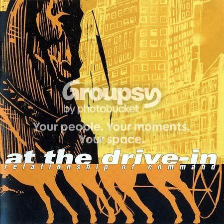
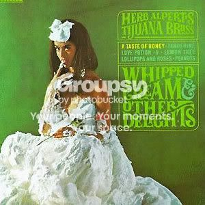
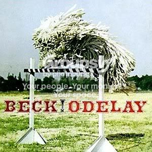
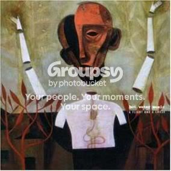
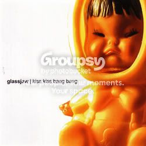
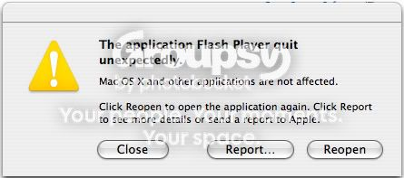

#55460 192 2005-03-23T03:50:20Z wilderness ejaculate
my first map. please don't just vote... i'd rather have comments

ps
is there a way to remove the borders? i partially removed one, but when i reload the game it is filled in.
#55675 198 2005-03-24T03:51:18Z wilderness will someone please play mine and comment? (couple of posts up) no one has told me how it feel to play yet...
ty
#55706 200 2005-03-24T08:07:49Z wilderness grotesque? to be honest, i really don't see why everyone has such an issue with a simple biological process...
oh well, i'll stay away from that in future.
thanks for your advice.
#55735 202 2005-03-24T13:00:38Z wilderness ok, so how about this instead:
ephemeral
took me bloody ages, hope it was worth it...
;p
#55808 207 2005-03-24T22:04:05Z wilderness i need one more vote.. but more importantly, comments please. this is my second map and any advice would be greatly appreciated.
ephemeral
ty
#2303 1 2005-03-25T15:37:56Z wilderness is there any way of making a lazer drone stationary?
#55939 3 2005-03-25T17:40:56Z wilderness nono, what i meant was: when you're building a custommap, can you make the lazer drone act like a turret so it won't ever move, just shoot.. ??
#55947 5 2005-03-25T17:59:23Z wilderness ta! that worked just fine
#56103 7 2005-03-26T14:38:03Z wilderness yes.. but what are you supposed to do here?
;p
#56469 213 2005-03-27T15:32:01Z wilderness TRON
ephemeral
two more for TRON, one more for ephemeral.
and comments and advice please
#56738 218 2005-03-28T18:05:13Z wilderness man i need to get better at this game.. i'm not even going to attempt that one yet.
very cool layout, i've voted for it based on that for now.
kNightmare
moths
i'm really happy with moths, i like the tile set and i think i got the difficulty just right.
please leave comments and suggestions for improvements, thanks.
#56739 219 2005-03-28T18:10:41Z wilderness oh, could one of you N leets give me an all gold for kNightmare please? i just want to see it done

#2337 1 2005-03-28T22:11:55Z wilderness so i post my new map
moths: this map is intended for you to go for all of the gold, otherwise it's just too easy....
i state this in the comments field, ask for all gold demos..
and people post speed demos missing all the gold and telling me it was easy!
can they read?!
i'm holding onto my all gold for now, i'm just curious to see if people will take the intended route or not. this will aid me greatly when i consider my designs for future lvls.
please can you guys take a look.
thanks lots

also, if anyone can show me an all gold for
kNightmare, i'll be very impressed.
#56799 3 2005-03-28T22:38:22Z wilderness heh, it's fine.. i did say though ;p
it's just that it will really help me if the lvl is completed properly: you'll be able to tell me then if it really was too easy/hard, were the paths layed out well in relation gold; enemies etc.. was it too short/too long..
all of these things.
#56801 5 2005-03-28T22:46:55Z wilderness thanks
if anyone else could help me out with the aforementioned maps, it would be greatly appreciated.
#58031 237 2005-04-03T13:05:45Z wilderness new one:
convolution
i'm really happy with this one, the aesthetics and the elements. especially the middle section, i thought that was a cool idea.
again, i'd love some playtests/demos/advice, please.
#58332 240 2005-04-04T14:52:09Z wilderness done jeff.
extrication needs comments/demos please! three votes and no one has told me how it plays...
#58526 241 2005-04-05T15:29:35Z wilderness i've been inundated with votes, and for that i am grateful, but i'd rather the comments. votes are great for a ratings war... but it's the comments that matter. they let you know how to improve etc...
my maps
please if you vote, let me know why you scored as you did.
thanks.
ps this forum isn't very lively

#59138 70 2005-04-09T02:22:38Z wilderness *signs*
(realize it's an old topic, but i agree...)
#59443 25 2005-04-10T17:05:34Z wilderness i think there is something *seriously* wrong with Deathangel...
You could easily get around an IP with a proxy.. then all it would take is careful voting...
this has probably been suggested before, but how about a link to who has voted and when somwhere on the map's page?
EDIT: nice tutorial jeff, let's hope people take note.
#2494 1 2005-04-10T17:40:17Z wilderness (couldn't find a topic on this anywhere in the forum..)
almost every time i play N, after about twenty minutes or so, the sound cuts out and i have to reset my pc to restore it.
it's probably my crappy pc, but has anyone has encountered/resolved this issue?
#59450 2 2005-04-10T17:49:32Z wilderness duuur! found the topic, i can't have searched that well..
#59452 2 2005-04-10T18:23:39Z wilderness tbh, i think it could get quite confusing knowing exactly what qualifies your map to be in which category; the real beauty of NUMA, (for me anyway) lies in it's simplicity.
although i do agree with DDAs being removed from the rating system, and maybe a link on the map's page to show who voted what and when... for me, NUMA is pretty much perfect.
EDIT: maybe the difficuty rating could work...
#59460 6 2005-04-10T19:08:12Z wilderness what are the criteria for a rescue mission anyway? mostly they play just the same as a standard action level. it seems kinda redundant to me...
until they add extra elements to the actual game, i don't think we need more game types.. i mean, maybe it would inspire more imaginative design, but to reiterate my previous point: all i think it would do is confuse things.

#59469 8 2005-04-10T20:05:09Z wilderness heh, i know
exactly what you mean...
#59471 12 2005-04-10T20:14:18Z wilderness i thought about making a maze map using the 'guide rocket with blood splats glitch'.... for about a minute
stupid idea tbh
#2498 1 2005-04-10T21:00:03Z wilderness this is an argument i have voiced countless times, in many, many forums.. i don't really know what i'm looking for by posting it again.. maybe for someone to agree with me for once; or to argue a well thought out point without resulting to snide comments or juvenile putdowns...
*expects string of obscenities to be hurled his way*
i'm talking about the effect genre has on music; although it can be applied to anything, music is a big part of my life and this is where i see the greatest harm.
at certain points during the evolution of (mostly) mainstream music, changes will occur that do not fit with the current definitions that govern their categorization. it is at these points when journalists (i imagine they would be the forerunners of such terms) create a genre title to fit these bands into in order to separate them from the existing classes. my favorite example here is the apparent reaction to the frat-boy-cock-rock of nu-metal: emo.
first off, this is a thoroughly ridiculous title: how can something that you put your heart and soul into not be emotional? going by the definition of the term itself, ALL music is emotional, and therefore this title defeats the object of it's intended purpose...
but this is a tangent...
ever since the initial publication of the term, there has been a flood of so called 'emo' bands. almost every night i visit my local venue, i see yet another bandwagon jumping production line wannabe troupe calling themselves emo and prancing around onstage in tight-as-fuck scenster jeans and, quite frankly, utterly farcical haircuts that make them look more like rejects from pop idol than anything resembling a musical movement...
the point is, it's the term emo itself that is responsible for the outbreak. all genre does is give these broken little mirrors guidelines to follow: be it starting a band, wearing the clothes, styling their hair...
meh..
genre +s:
-makes it easy to find music that sits well in your range of taste.
-makes it easy to describe a band, be it in a review or to a friend.. w/e...
-erm..
genre -s:
-restricts most people listening habits
-creates 'scenes' where you have to be styling the correct clothes/stance/hair, to be accepted and considered worthy/cool.
-spawns a production line of self professing emo/nu-metal/indie bands
-makes journalists lazy in their descriptions in reviews, oftentimes resulting entirely to comparison to describe a bands sound. (there is also nasty little a circle here: genres inspire copycats; who drown market; reviewers swamped, bored and pissed off and result to genre to make it easier to review/swim through the sea of shit)
#59480 3 2005-04-10T21:20:47Z wilderness i know, i just felt like ranting tbh...
genre is so anti-darwinian.. it gives shite bands who really shouldn't survive, a place to thrive as part of a superficial obsolete scene...
sigh, i suppose it's what the masses want, and the masses are what count...
#59528 7 2005-04-11T00:15:25Z wilderness it's nothing against tight jeans per se... just that all these bands wear them as it's the done thing in the scene. if you don't, you're certainly not cool.
like most punk bands have spikey hair/mohawks/tats etc.. they do it to fit into the genre. it's the same with everything though, so i'm pretty sure my rant was pointless.. but like you say nevermore, sometimes you just have to let it out.
(and yuk@ those jeans in the link)
#59532 11 2005-04-11T00:34:58Z wilderness meh, this sort of thing doesn't amuse me anymore... i've been surrounded by idiots it for my entire lifre. tbh, it just makes me angry...
#59542 16 2005-04-11T01:07:09Z wilderness how about the ability to submit an episode of 5 maps like in the actual game?
#59583 2 2005-04-11T07:00:09Z wilderness 
you MUST be able to get it back...
#59586 4 2005-04-11T07:19:44Z wilderness that wasn't a spam, i was just shocked.. $200 is a hell of a lot of money to lose.
you will be able to get it back, easily i expect. get your school to contact her and ask for it back, simple!
that's if she still has it...
#59587 2 2005-04-11T07:23:42Z wilderness me, right now... i've no money until Wednesday and i've literaly got NOTHING to eat... today i survived by drinking cup after cup of coffee.. that's why i'm still here now instead of sleeping...
#59665 22 2005-04-11T19:28:06Z wilderness i'm not sure how he got 'sarcasm' from your post...
NUMA mods, that's an awesome idea.
#59783 9 2005-04-12T17:49:56Z wilderness why does everyone seem to pick on me?
anyway...
atramentis, maximo, nevermore, lucidium, llama. in that order.
#59915 40 2005-04-13T17:44:08Z wilderness exactly, there is no need to be abusive maestro
#2580 1 2005-04-17T21:49:58Z wilderness how do i see how many frames it's taken me to complete a level? and how do i activate frame by frame? i really should look into it more, but i'm too lazy...
#60452 3 2005-04-17T22:27:00Z wilderness ta, never. makes so much sense now

#60470 264 2005-04-18T01:34:11Z wilderness great_sea's
maps need rating! i really love some of these and even when i'm not too keen, he's always trying something new.
innovation, my friends!!
#2634 1 2005-04-23T10:33:07Z wilderness says my username does not exist
anyone else?
#61503 2 2005-04-23T10:59:01Z wilderness yes/no?
#61892 24 2005-04-24T21:06:31Z wilderness the custom map making feature is an integral part of N. it's a fantastic game by itself, but married with NUMA it's helped create a thriving online community that has, for me, been fantastic to be a part of.
i make maps that i'd like to play. if other people like them too, that is a bonus.
it does annoy me when a map i'm proud of is rated down with no comment, but really, it shouldn't be about ratings...
#61894 8 2005-04-24T21:24:09Z wilderness wow!
rant!rant!
minimalistic does not mean file size.. i'll leave you to work it out for yourself...
there is no depth in 2d games? in the literal sense or not, that is a very silly thing to say.
you're ranting about how poor N is to a community of people *devoted* to it, that's also quite silly... but fair, each entitled to his own opine.
i suggest if you don't enjoy it here... you leave.
simple really.
#61895 8 2005-04-24T21:28:10Z wilderness oops, thanks guys.. i'll actually try looking next time...
#61898 22 2005-04-24T21:31:48Z wilderness hehe sendy, there's nothign wrong with the mus... >.<
annonymous is best, i think.. however.. i do agree with something that was brought up recently: NUMA mods.
obviously only the trusted elites could be give such a title, and arachnid would govern them to make sure they're being fair and just, et cetera.
#61900 10 2005-04-24T21:42:09Z wilderness oooh, NES controller... such a sweet idea.
*digs out NES*
now for a converter...
#61910 8 2005-04-24T22:28:06Z wilderness i REALLY love the idea of an all gold to open switch.
you would choose the element, place the door, then the gold...
i know you could do this by placing a switch under every piece, but then you'e left with a huge stack of doors and massive load time.
#61912 15 2005-04-24T22:34:57Z wilderness tbh, i haven't played anything in the last year that has been even close to as much fun as N.
includes half-life 2, doom3, far cry...
#61918 12 2005-04-24T23:15:15Z wilderness SO pimp!
you could do it with a little DIY...
#61966 10 2005-04-25T09:55:40Z wilderness that's what i meant by 'stack', i really hate the way it looks.
i'm going to have a go at this myself, if we ever see the source code
#61967 24 2005-04-25T09:59:51Z wilderness that sucks, so_what?. i absolutley LOVE that map, no way does it deserve a three. soon as i can log in, i'll give you a 5, anyone with decent sense will do the same...
#61968 211 2005-04-25T10:06:21Z wilderness this is so pointless... (hehe). Slight grammer edit...
As Echarin doubled over in pain after provoking Ligers, an AT-AT walker walked. "From earth came stuff" said his girlfriend Marzipan. Marzipans brother, norbostronoyityo, wasn't present. A strange inanimant object? Meanwhile, Tsukatu's ass erupted again, (Eeeeeewwww!) leaving a distinct
#61973 22 2005-04-25T10:23:04Z wilderness Just because of fact that 90% of buyers are n00bs who prefer graphics over playability.
exactlly.
it's the same reason why hollywood gets to churn out the same film a dozen times, and remake after remake, all updated with the latest cgi and effects... i mean ffs, has anyone seen 'the amityville horror'?
i'm sorry toma, but your arguement that 3d 'lifelike' graphics are a guarantee of depth, or that they definitively improve he gaming experience... at the moment is pretty shallow in itself. maybe in a few years when coders remember how to make playable and fun games and maybe even *shock horror* some originality.
*points toward his copy of 'darwinia'*
*awesome*

oh, and i wouldn't say N was perfect, but it does it's job perfectly, you know?
#61977 41 2005-04-25T10:41:16Z wilderness hello.
i'm an artist: i write stories, music, draw, design and code.
i'm in love with NED.
i procrastinate, lots; i'm studying philosophy; i read graphic novels when i should be studying (lucifer, hellblazer, sin city); apparently i'm a geek; i have an opinion, and can be quite obnoxious with it. i apologize inadvance.
good to meet you all, N pwns.
RawK!
#61983 289 2005-04-25T11:07:50Z wilderness i think the dilema here is the 'lack' of style.
i read the comment you left in response to those given... you there's no such thing as a good or bad map? there is a massively blatant difference.
a good map equals well thought out design with well placed tiles which enhance the gamers experience and (to a much lessor extent as this shouldn't be implemented as a detriment to the gameplay) a nice design.
a bad map equals 90% of what is on numa. i won't even go into why they are bad, if you don't realize why, there is little hope of my making you understand.
#62039 2 2005-04-25T18:33:04Z wilderness harveycartel.org is down.
look.#62041 43 2005-04-25T18:47:21Z wilderness Doom not simple? Move and shoot, that's it. Of course it has a lot more code in it, but that doesn't mean it's better.
he's not going to listen. you're right, people should ignore this thread imo.
#2658 1 2005-04-26T00:00:16Z wilderness just got my first NUMA fix for two days...
*sits back in chair*
ahhhhhhhhhhhhhhhhhhhhhhhhhhhhhhhhhhhhhhhhhhh!
it's worrying how good that feels...
#62104 66 2005-04-26T00:06:35Z wilderness I am not making a fool of anyone, including myself.
Actually, what i am trying to do is to try to convince those people, that I. DO. NOT. LOVE. 2D. GAMES. AND. I. LOVE. 3D. GAMES.
seiously TomerM... who cares?
awards: *most pointless thread ever*
oh, and you did say you would quit...
#62108 68 2005-04-26T00:20:03Z wilderness brickman:(I am almost tempted to ask you to move it, but our debates subforum is called Intelligent Discussion).
<3
TomerM:O h, so you think you have a better idea of what i am talking about.
Right, your so smart and clever, you know much well then me. your post are as ridicules as yourself.
please don't stop, EVER! this is too much fun...
#62111 2 2005-04-26T00:43:36Z wilderness you need to learn action script.
google it.
#62115 2 2005-04-26T01:04:09Z wilderness i'm sorry if this response is a little harsh for your first post... but your maps are EVERYthing that is wrong with custom map making.
please look
here for some helpful advice
don't take it to heart, just keep at it
#62121 6 2005-04-26T01:19:49Z wilderness patrick, you're a genius
#62126 5 2005-04-26T01:55:49Z wilderness jeff, i would include it, just don't be mean about how you do.
#62130 9 2005-04-26T02:13:30Z wilderness okay..
minesweeper-airborne-anitigrav-hallwayofchaos: here, you HAVE clustered gold, mines, guass turrets and bounce blocks, without thinking.
minesweeper: hidden mines SUCK, i'm sorry, there is never an excuse.
...
look, your maps are not well designed. there is more to making a 'good' map than just placing elemnts in patterns. if i were you i would go check out the top rated map makers for reference. playing some of these should give you an idea where you have gone wrong.
#62134 12 2005-04-26T02:18:07Z wilderness correct. they're lots of fun.
this is my favofalltime DDA, by formica/TDL
#62158 72 2005-04-26T03:47:12Z wilderness "seiously TomerM... who cares?"
Not much i guess, but you can't change me the way i am.
i would never, EVER, ask you to change!
awards: *most fantastically_quotable_f**kwit in the history of EVERYthing*
stick THAT in your [QUOTE] and smoke it!
#62309 26 2005-04-27T13:07:08Z wilderness awesome idea with the average vote given... almost...
i'd say 70% of the maps on numa deserve no more than a 2/3 score, so for people who like to vote on all maps, thier average would be very low and misjudged by others.
maybe, idk, it's definitely something worth discussing.
aslo, ON topic.
yes, i recently submited this map
sleepy hollow, not really thinking it would rate too highly as it was completely linear, but i WAS proud of the design.
the first 9 votes were solid 5s and almost all with comments. then, suddenly, it began to drop fruther and further down the list with noone telling my why.
now i know it was definitely not the best map on NUMA, but in my opinion it's just as good as those action maps on the first 'top rated' page.
meh, i'd just like to know why you vote it down, is all...
#62594 32 2005-04-28T21:00:21Z wilderness ty dude, appreciated.
the hidden avg rating *is* a nice idea. maybe someone should make a list of all the best ones and we could vote, or something?
#62870 91 2005-04-30T01:43:34Z wilderness so I am still figuring out the particulars of what I believe.
for me, this quote says it all...
YOU (christians) don't believe that it's evil, or wrong to abort a fetus. it's something you have been taught to believe, as part of your faith. (in my opinion, you have twisted the words you have been given, and most of you follow blindly...) you were clearly torn by never's last question, if it were a belief born of any independant thought, i think you would have had more clarity here.
my opinion on the matter is this: a fetus MAY be alive/conscious whatever, but until the child has been born, i think the decision should lie with the mother. it may sound cruel to some, but i think it's better than bringing yet another unwanted child onto this world.
EDIT: please don't take any of this personally, i do respect you, even if my previous tone may hint otherwise. it's a topic i feel very strongly about, is all.
#62879 12 2005-04-30T01:58:43Z wilderness maybe you should have to give an explaination on why you rate it what you did if your vote is x ninjas away from the average rating.
that's getting a little complicated... the beauty of NUMA is it's simplicity. i know this my sound hypocritical after some of my recent rants, but maybe we should:
try to stop worrying about ratings so much...
(we all know what a good map is, after all...)
*bites nails*
*really trys*
#62883 3 2005-04-30T02:02:06Z wilderness aye, as never so rightly said: please desist at once, kind sir!
#62886 94 2005-04-30T02:11:27Z wilderness EXACTLLY! now i speak from experience:
i have worked with severly underprivileged children, it gets MUCH worse than never suggests above, and i can tell you that this world does NOT need any more unwanted souls. also, my sister had an abortion earlier this year....
now you can stand there till you are blue in the face and yell:
'they shouldn't have got pregnant'
but she did, and there was no way then she could have cared for that child... she did the only thing that she could, and i stood by her, 100%.
#62887 2 2005-04-30T02:15:37Z wilderness just place the curser where you want the tag to be, and then select it.
this is too simple, i *must* be over-looking something...
#62891 128 2005-04-30T02:22:22Z wilderness 
really gay pose, i know... i *hate* having my photo taken..
#62895 130 2005-04-30T02:35:05Z wilderness thanks lots, i'm really not though... more a total clutz! ;p
#62897 35 2005-04-30T02:39:26Z wilderness spiderman... he has that geeky-cool thing going... superman is too much of a jock for my tastes.
sonic or mario?
#62910 299 2005-04-30T05:04:07Z wilderness 8/10. crazy cool sig (photoshop?), and good set of info. i felt your collected quotes let it down a little, not the best/funniest i have read...
mad for that 'nevermore' sig though (9/10 for that)

EDIT: (photoshop?) = did you make it yourself?
#62911 19 2005-04-30T05:14:10Z wilderness 
w00t!
#63091 301 2005-05-01T13:27:30Z wilderness okay, i made a new one. only just learning photoshop, but i like what i've managed.
#63094 135 2005-05-01T13:54:01Z wilderness that's the reality of it for sure, Tskatu.
and TDL, i wana see what you look like; if you're half as sexy as your maps, we're in for a treat ;p
#63208 65 2005-05-01T21:01:26Z wilderness those cartoons are ace, never.
my desktop.

#2715 1 2005-05-01T21:33:43Z wilderness okay, i tried this again last night:
eat *a lot* of cheese, then go to sleep. you will have the most vivid nightmares.
last night mine was about this kid with psychic powers, who was hunting me and my friends and killing us in the most horrible and graphic ways. i won't go into them all, but one example: he pealed all the skin away from someone's face...
really disturbing what your mind is capable of, with a little cheesy injection. why not try it?
WARNING: cheese induced nightmares are *very* graphic and in my experience, very *very* disturbing.
#63221 17 2005-05-01T21:37:09Z wilderness yes, in my opinion, you did: you broke a rule, and were warned. simple.
IMO2: you should listen to keron...
#63224 9 2005-05-01T21:47:19Z wilderness you sir, have no regard for us *mortal* N gamers; quite frankly, you make me sick!
#63227 306 2005-05-01T21:54:29Z wilderness granted: but it turns out to be a 'state of the art' anal probing torture device, and you die. horribly.
i wish i had the motivation to better myself.
#63235 67 2005-05-01T22:33:12Z wilderness lol, silly, click on the image.
or did you mean minimalisic?
#63253 2 2005-05-01T22:56:57Z wilderness some of the descriptions were a little flat, and 'matter-of-fact'
Quote
The two beasts gained on me, and the beads of eyes started to become much, much bigger.
(there were others, but i won't list them) for me, these detracted from the fantasy element of the piece.
it gets better in places.
some, such as:
Quote
the darkness was ripped away by little spots of light, as if somebody was sticking twigs through a dark sheet of cloth one by one.
were more colorful, but still could be better.
also, please space between paragraphs: it was quite hard to find the resolve to read further when the words became such a blur.
while it was (mostly) well imagined, it never really drew me in.
sorry to be so critical, but as a writer myself i tend to be overly, possibly
i'm not sure what to suggest for improvement except keep writing...
and you're right, it was rather morbid.
and i just had a cheese sandwich, oh dear...
#63266 70 2005-05-01T23:28:00Z wilderness a patch for windows. i'll PM you the info.
#63277 113 2005-05-02T00:07:40Z wilderness you absolutley MUST read them!!! best *trilogy* ever written!
#63310 7 2005-05-02T03:00:24Z wilderness hehe, i wondered when someone was going to point that out.
#63314 19 2005-05-02T03:08:10Z wilderness well, you *bent* a rule then, and obviously went a little too far.
what i find ridiculous is that you are so worked up over a silly little warning that will disappear with time...
also:
The point of that thread was for you to show that you didn't understand the new rules, but you never even said that in the thread. If you had handled it better, you might be warn-free now.
#63316 303 2005-05-02T03:14:21Z wilderness why do you think it doesn't fit? just curious...
#63322 299 2005-05-02T03:29:07Z wilderness please *pleeaassseee* can i get some comments on my map
radiate. i'm very curious know what you all think of this one.
#63325 22 2005-05-02T03:37:46Z wilderness brickman, i didn't say 'a little while' i said 'with time'...
Daddaluma, i think you really should calm down... regardless of why you were given the warning, your conduct since has done nothing to help you rid yourself of it and is, quite frankly, causing you to appear slightly foolish.
so you got a warning, really... so what?!?
#63338 305 2005-05-02T04:29:18Z wilderness oh, you mean my avatar and my sig?? i thought this was just a sig rating thread?
#63378 72 2005-05-02T15:09:54Z wilderness okay, but anyone else, please ask me outside of the forum.
#63380 27 2005-05-02T15:18:29Z wilderness seriously, now you know this sort of behaviour will result in a warning, deal with it, and don't do it again!
you really are being very, very silly...
mods, maybe one of you should close this topic?
#63382 17 2005-05-02T15:22:58Z wilderness glad to see the topic is back on track...
has anyone actually tried this yet? i did it again last night (it's really addictive) and had the most surreal dream about living in a cardboard house...
#63384 189 2005-05-02T15:32:30Z wilderness too realy cool avatars above me...
trib4lmaniac: NNNNs. i like it a lot. it represents you so well:
i *swear* sometimes you actually have this ability (riding thwumps, i mean) to be able to pull off some of the insane s**t that you manage.
it would be uber cool animated with manga style speed lines. *hints*
glenno14: made me smile. really nice humour dude NNNNs.
i realize mine is rather dull after those...
EDIT: added parenthesis.
#63387 30 2005-05-02T15:59:42Z wilderness ahhhh, blue tetris, the voice of reason *hugs*
#63394 19 2005-05-02T17:23:09Z wilderness mild chedder. to be precise: cathedral city. i wouldn't go with anything stronger, it could be dangerous...
#63401 32 2005-05-02T19:39:14Z wilderness well, that's a silly idea, but you're right in one respect...
while he may not have broken the rules, the mods felt his behavior was unacceptable, therefore, he was WARNED!
that's what warnings are for, to dissuade you from your current course, lest you go any further, and recieve a harsher penalty. and should you disagree with a warning/penalty, you could always take it up with admin, which is maybe what he should have done.
it's really very *very* simple...
#63402 1008 2005-05-02T19:43:37Z wilderness okay, if noone else will... here is a screen. i think it should be quite easy.
Attachment (lost): post-6-1115063097.jpg
#63410 34 2005-05-02T20:35:13Z wilderness well, you do have a point... but like it or not, mods have the ability to give a warning whenever they feel it's deserved. i know it may seem unfair at times, but that's the way of the world.
and admin can overrule any of a mod's decisions, is what i meant...
however, i still say a warning is really not something to be so concerned about, maybe a repeated amount of warnings from the same mod... but singular?
i say let it go.
#63412 21 2005-05-02T20:38:06Z wilderness no good, it needs to be un-cut!
#63431 41 2005-05-02T22:33:54Z wilderness jesus!!!!
please, will you think about what you are arguing against?
a silly little 10% warning!!!!
if Daddaluma had been banned, i would understand the upheaval.
EDIT: on a lighter note... YAY! 100th post!! i'm *such* a geek


#63432 23 2005-05-02T22:44:05Z wilderness okay, so maybe it's just in my heead, psychosomatic, or something. would maybe nine more people try so we can get a nice round percentage?
okay, i shall set the date of the experiment for the night of friday the 6th of may. participants will need 100 grams of mild cheddar and plastic sheets (just in case)
if you wish to partake, please add your name to this list, and reposte here:
1. pariah
2.
3.
4.
5.
6.
7.
8.
9.
10.
i'm serious, btw... i'd really like to see some conclusive evidence!
#63433 13 2005-05-02T22:48:18Z wilderness oh yes, Orwell is truly great!
my fav authors being: Orwell, Golding, Woolf, Maughan, Banks, Camus and Wilde.
i'd like to read some of your fiction, if i may. i'm always interested in other's writings.
#63434 191 2005-05-02T22:51:35Z wilderness erm, think NUMA.. i wasn't aware we so stringently believed in numbers here...
EDIT: btw, your avatar annoys me. i don't know why... NNs
#63460 29 2005-05-03T00:03:18Z wilderness it's cool banna, i know this guy who deals is grade-A s**t, he doesn't like new guys, but if you say i sent you he should be cool...
okay, as it stands we have:
1. pariah
2. great_sea
3. loudog004
4. so_what?
6 more gerbils please
#63461 194 2005-05-03T00:07:55Z wilderness okay, it matches now!!
i would very much like an animated storm cloud.. or even cooler... an animated layer on my sig, for the rain and lightning...
does anyone know how to or of any decent tutorials. if not i will search myself, but i'm just so lazy

mr dog, i like your avatar. it's quite surreal and kind of reminds me of a jackson pollock. NNNNs for you!
EDIT: LouDog004, i rated your map, and commented. i opine this edit (attached .txt), have a look and let me know what you think.
Attachment (lost): post-6-1115079849.txt
#63466 31 2005-05-03T00:29:03Z wilderness i won't edit that... it will stand as testament to my truly awful typing ability.
EDIT: hehe, never *points at his recently submitted english paper*
#63470 33 2005-05-03T00:45:15Z wilderness hehe, i can't really say anything to that

#2728 1 2005-05-03T00:49:21Z wilderness my top ten bands/artists are:
brighteyes
cursive
the cure
the smiths
at the drive-in
deftones
glassJAw
bloc party
the faint
nick drake
(that was SOOO tough! interpol and joy division didn't quite make it... )
#63471 196 2005-05-03T00:50:38Z wilderness ty lots. i especially like your rating system, never. *chuckles*
#63473 3 2005-05-03T00:54:35Z wilderness oh, don't say that!
*goes back and stares at his top ten*
maybe i should find something more constructive to do with my time...
have you listened to much brighteyes, never?
#63484 6 2005-05-03T01:36:03Z wilderness nono, i was actually saying he ignited my original dilema... should interpol and joy division be included!?
but i do like the cloral lots..
oh, and regarding brighteyes: never, you should try the album 'fevers and mirrors'
#63486 75 2005-05-03T01:39:11Z wilderness jeff...
how can someone in possesion of the most stylish sig in the forum, also be the father of this abomination?!?
truly, i am bewildered!!!
#63487 316 2005-05-03T01:41:23Z wilderness i think you may be forgetting something...
#63492 11 2005-05-03T01:42:46Z wilderness he has stated on numerous occasions, that he
may be retarded... i'll chalk it up to that

#63496 9 2005-05-03T01:51:15Z wilderness 'old' being the operative word there LV
and confound you stepself! i forgot 'the arcade fire'
oh dear...
ok, here it is:
my top ten
brighteyes
cursive
the arcade fire
the smiths
the cure
glassJAw
deftones
bloc party
nick drake
at the drive-in
the faint
yes, i know there are 11, but i don't care

(elliot smith should be in there too, really, but if i don't stop now this will go on for days...)
#63497 77 2005-05-03T01:52:44Z wilderness YES!!!
*claps at the notion*
that would be SO awesome
EDIT: did i mention i'm a total geek?
#63501 11 2005-05-03T01:58:56Z wilderness i really admire that.
however, there must be at least one modern band/artist you like?
i know i seem to be pushing this, but have you heard anything by brighteyes?
#63502 198 2005-05-03T02:00:18Z wilderness i <3 you, brickman!
#63504 35 2005-05-03T02:01:58Z wilderness hush now brickman, you'll wake the ferrets.
#63508 318 2005-05-03T02:06:47Z wilderness yes, but then you realize exactlly how much of a smart arse you are, and your head and your bum trade places and you are forevermore known as arse face!
i wish i wish i hadn't eaten that entire plate of pinto beans!
#63512 14 2005-05-03T02:12:15Z wilderness keron, i suggest you do try them, brighteyes, that is.
it's no wonder your opinion of modern music is so jaded if LP is all you have heard...
gross.
#63513 16 2005-05-03T02:19:40Z wilderness well, do show us if you find it never.
i was searching through my old writing journals, and i came across something not disimilar in theme to what has been posted here... so i thought i may as welllpost it.
this was going to be the prologue to a story that i never really started:
Quote
A deep, damp stench rose from the mouth and turned the stomach of the young clergyman. For the past five cycles he had drawn pit management and rather than growing accustomed to the foulness of the task, the labour was growing weightier. And the smell! This, he had thought, he would at least find a resilience to, a lessoning of the nausea that rose burning in his throat threatening to strangle him with tears so often it would almost rob him of his balance and he would waver precariously above the sickening mass. The stench, that seemed to make a game of finding new ways to invade his being, was now eating at his very soul.
Adding to the burden.
Eating at his core.
He closed his eyes and uttered the words of faith the brotherhood had taught him as a child. They eased him and some weight fell away. His eyes opened and his gaze fell down wards. The water was still.
He breathed a silent prayer of thanks to his Lord and turned to make his way back to the temple.
It was not unheard of for a body to be not as at rest as one would hope and then came the unpleasant task of climbing down onto the lower platform to end the suffering of the poor soul. And with that came a great risk of infection. The masks the clergy wore were only sure at distance and there were greater risks. The previous pit manager, whilst performing a pity, had been taken hold of by something still retaining strength and pulled under the dreadful water. He had managed to wrestle free and climb back up to the platform.
It had taken only seconds.
His agony had alerted his brothers at the temple gates who had rushed to his aid only to witness a horror as reds and greens bubbled into a putrid soup and something terrible that used to be a face had cried out for an end.
A shudder shook the clergyman. He had been the first to arrive.
He tore himself from the memory as his hand reached for the winch to draw the cover shut, when he heard it, a faint splashing. Something was stirring below.
He rushed to the edge and stared down into the blackness of the pit.
The evening light had fallen swiftly and clouds had formed a blanket directly over the mouth. In the gloom it was hard to define any shape. He stared for a few seconds allowing his eyes to become accustomed and then he saw it. A silhouette of an arm was reaching up to the platform, then a head appeared and soon a body lay convulsing on the deck. The clergy man stood frozen. The fear rising again, he repeated the words of faith reaffirming his strength and slowly made his decent. As he neared the figure he unsheathed his blade and began to chant the prayer of passing, when a cloud drew away from the moon allowing its silvery light to be cast. The clergyman sank to his knees.
The body of a naked man lay before him.
The man was entirely clean.
#63523 8 2005-05-03T02:54:03Z wilderness hehe,
so cool. i heart you guys
#63527 11 2005-05-03T03:09:56Z wilderness oooh, the duplicate and move mode is perfect! tytytytyty
#63531 3 2005-05-03T03:30:44Z wilderness you beat me! heh, only thing i can see that's 'wrong' so far
*looks harder*
#63534 1010 2005-05-03T03:33:53Z wilderness good call dude.
a truly awesome game it was too.
Attachment (lost): post-6-1115091233.jpg
#63541 1013 2005-05-03T03:52:19Z wilderness just... LOL
i'm really not going to be able to sleep tonight
#2733 1 2005-05-03T11:22:24Z wilderness This was Echarin's idea.
Attach to your post a file (.zip/rar etc...) contaning all of your best maps. Make sure all of them are pre-formated with the
correct syntax for Nv1.4's custom map reader.
This will be an easy way to browse and find your favorite map maker's best, without having to trawl for hours through NUMA's achives.
Also, include a NUMA link in your post to all the maps included, so the user browsing can preview before choosing.
Have fun!
---------------------------------
liberate:
http://numa.notdot.net/map/7745
sleepy hollow:
http://numa.notdot.net/map/7574
soliel:
http://numa.notdot.net/map/7176
whorl:
http://numa.notdot.net/map/7034
impulsioN:
http://numa.notdot.net/map/6989
Enjoy!
Attachment (lost): post-10-1115119966.zip
#64693 327 2005-05-10T00:10:39Z wilderness please could you guys rate these maps that were overlooked?
liberate
partitioN
thornz
thanks.
#64694 26 2005-05-10T00:16:14Z wilderness sculptor?
#64708 330 2005-05-10T01:29:20Z wilderness crimp is mad sexy! easy + style = 5/5. i really don't do that often, either.
#64728 335 2005-05-10T02:46:24Z wilderness i personally think it's MUCH harder to make an easy map to pique someones interest than a hard one that they'll come back to for the challenge.
that's what i meant by easy+style.
#64863 45 2005-05-11T03:33:28Z wilderness an elephant would be far more sensual, i'd imagine.
paris hilton or jabba the hut
#64868 316 2005-05-11T03:42:42Z wilderness i'm sorry, that's horrid. you do score for the link though, your site is a really nice idea.
abdeFghijklmnopqrstuvwxyz
i've made a new one, i much prefere it to my last.
#64873 48 2005-05-11T05:01:21Z wilderness ugly. fat people make me feel ill.
albert camus or roald dahl
#64883 3 2005-05-11T07:00:22Z wilderness sweet idea, i love the idea of low-gravity mine dodging, or something.
#64955 52 2005-05-11T20:17:54Z wilderness don't be silly now...
the one with actual talent!
j-lo or a big steaming pile of turd
#64956 26 2005-05-11T20:28:05Z wilderness it got guitar pick in 28. impressive.
#64962 7 2005-05-11T20:39:11Z wilderness Go into boss mode and back out to cancel the neverending sounds. I just subconsciously press ~ ctrl ctrl 1 r p to start playing again.
actually, this worked on nv1.3, but for me, it's not workng on 1.4. i haven't DLed the bug fix yet though...
#64963 35 2005-05-11T20:40:44Z wilderness i wouldn't say he was being homophobic.
#65092 6 2005-05-12T02:04:33Z wilderness i like 'so_what?'.
but change is always welcome.
dilemma.
#65098 56 2005-05-12T02:11:13Z wilderness sneak!
i'll have to say nevermore, it's much more elegant. so_what? should definitely be your custom title though.
rolf harris or jeremy beadle
#65122 63 2005-05-12T03:39:35Z wilderness one's a horrid, slimey toad, and the other's a muppet...
hmmm...
ok, kermit
lister or the cat
EDIT: i meant that never was a sneak for worming his poll into this thread.
#65181 69 2005-05-12T11:13:03Z wilderness Unless your talking about fonzi from Happy days the T.V. show
then hes not a muppet.
exactlly. i should read up on my muppets.
#65316 14 2005-05-13T01:50:04Z wilderness yellow
#65353 342 2005-05-13T04:44:07Z wilderness lkjhasdf, 3/5 for that. it just felt a trifle awkward with some of the positioning. nice first map though.
pleaseplease could i get some votes/comments on my
maps
my last 8 are all under 5.
some attention to these three in particular would be especially lovely.
dial8 -needs 1v
channels -needs 1v
brambles -needs 2vs
liberate -needs 1v
thanks lots.
#65355 2 2005-05-13T04:48:58Z wilderness it's 'your', not 'you're' in this context.
and not bad. i didn't laugh, but i was amused, partially.
#65358 21 2005-05-13T05:16:33Z wilderness darwinian
#2832 1 2005-05-13T14:44:47Z wilderness i was wondering: who designs the lvls (mostly) for the N game proper?
#65451 6 2005-05-13T17:50:32Z wilderness I think its safe to say that Mare and Raigan are the greatest map makers to ever live!
i don't think that's entirely true.
could you give examples of maps that each of you made (to m&r). i'm just curious to see who designed what.
#65614 350 2005-05-14T05:48:17Z wilderness i've a feeling users such as 'littles**t' and 'BBBarnicle' are rating maps down. maybe not maliciously, but i've noticed that maps submitted next to one of these user's own, tend to score a lower average.
#65616 76 2005-05-14T05:55:36Z wilderness oh dear... ashlee. she's a little less plastic.
daffy duck or
donald duck
(never, i miss so_what? already

)
#66205 87 2005-05-15T02:29:39Z wilderness please don't be embarressed never, i think it's really great that you don't know, i wish i didn't.
barney owns that little bitch.
EDIT: goddamn it!
ash.
tony blair or ken livingston
#66217 359 2005-05-15T03:16:48Z wilderness i'm really uncertain as to where i should take this. i don't want suggestions of exactlly what i should add, more the amount i should add. is it fun as it is?
in the gears of the apparatus
also ratings/comments for:
teh call
and
partitioN
ta.
and come on people,
obsequious is awesome (4/5 from me) and needs only one more vote!
EDIT: i think i've voted on all of the above, check comments and PM if i've missed anything.
#66219 361 2005-05-15T03:25:22Z wilderness ty, but jeff, i wasn't asking for ratings for in the gears
#66221 363 2005-05-15T03:28:31Z wilderness no. i'd like some advice on where to take it, if that's okay? i'm gong to delete it and revise anyway.
i probably should have posted it as incomplete.
votes on the others would be cool though ;p
#2858 1 2005-05-15T03:32:48Z wilderness it's 4am. it's friday. we should be sleeping in anticipation of the weekend, maybe?
pariah , nevermore , Raigan , jeffkillian , AtomicShadow , brickman , Chasmyr , great_sea , Toshosoft.
you're all online right now.
i've been to a party tonight, i just woke up craving water after drinking half a bottle of jack and a silly amount of beers, so i have an excuse for being here.
what's yours?
#66226 63 2005-05-15T03:35:43Z wilderness N
(too lazy/drunk/hungover to think of a user besides never)
#66231 3 2005-05-15T03:40:43Z wilderness lol. what a splendid idea!
*goes to edit sig*
oh dear, i really am, aren't i?
#66233 5 2005-05-15T03:42:05Z wilderness [geek]then lets[/geek]
#66238 365 2005-05-15T03:53:15Z wilderness i was thinking that, but i would then have to add trapdoors to save you from the rockets (and this would increase loading times).
i hate maps where you exit&die, they feel so messy.
#66241 367 2005-05-15T03:57:37Z wilderness maybe: when you play them in the 1.4 usermaps section?
#66246 91 2005-05-15T04:02:17Z wilderness there are supposed to be two choices, violator!
i have no idea who you mean.. i'll go with curly.
elliot from scrubs or
queen amidala from starwars
EDIT: godamnspellingerror

#66251 369 2005-05-15T04:07:49Z wilderness still. the rockets above or the guass turrets below (depending) could still have their wicked way.
plus:
i kind of like it off center.
#66255 9 2005-05-15T04:10:34Z wilderness nothing will stand....
j/k
#66258 12 2005-05-15T04:13:46Z wilderness but if noone advertised that they liked them, these artists wouldn't get the recognition they deserve...
but i do know what you mean...
#66264 13 2005-05-15T04:18:48Z wilderness *echoes evil laughter*
jeff, you should elevate youself, being a founding member and all.
#66270 42 2005-05-15T04:30:07Z wilderness dial8
channels
sleepy hollow
soleil
whorl
impulsioN
i consider these to be my best, i'll probably change my mind in a few minutes...
EDIT: told you ;p
#66271 65 2005-05-15T04:32:32Z wilderness reciprocate
#66273 124 2005-05-15T04:40:07Z wilderness you don't have to sign your name, we can see it's you.
#66277 371 2005-05-15T04:43:53Z wilderness ooh, that's annoying!
*goes to fix*
ty for pointing it out.
#66285 375 2005-05-15T04:51:27Z wilderness agrees.
and my pleasure

#66289 126 2005-05-15T04:53:28Z wilderness *coughs*copy .sol files*coughs*
but that is just lame.
#66293 67 2005-05-15T04:56:15Z wilderness antidisastablishmentarialism
(couldn't resist)
#66294 128 2005-05-15T04:57:20Z wilderness regardless, i'd rather not know. it's going to be so satisfying when i finish it properly.
#66297 380 2005-05-15T04:59:04Z wilderness I love when someone takes symmetry and does something interesting to it. It's great. I wish I could pull that off.
give us an example?
#66302 94 2005-05-15T05:02:47Z wilderness bloody parrallel posting is what went down...
cmon, it's gotta be bill.
reiterates:
elliot from scrubs or queen amidala from starwars
#66307 130 2005-05-15T05:05:57Z wilderness now i'm intrigued

#66310 70 2005-05-15T05:08:56Z wilderness utterance
#66314 96 2005-05-15T05:10:55Z wilderness indeed.
jabba!
luke or anakin
#66319 74 2005-05-15T05:13:18Z wilderness discordant
#66326 98 2005-05-15T05:18:22Z wilderness pamela.
but only because she was married to tommy lee. otherwise i'm totally indifferent, they're for too plastic.
marge simpson or jessica rabbit?
#66328 76 2005-05-15T05:19:27Z wilderness ephemeral
EDIT: i <3 that word
#66331 18 2005-05-15T05:22:48Z wilderness Just came to me.
such moments of inspiration are too rare.
#66334 78 2005-05-15T05:26:28Z wilderness repeating when?
xylophone
#66338 20 2005-05-15T05:28:55Z wilderness it was sarcasm. but nevermind ;P
and i don't think you're wierd, maybe occasionallyquitebrilliant, but not wierd.
EDIT: oh, spelling errors bug me so!
#66341 22 2005-05-15T05:33:20Z wilderness by insinuating that it was nonsense rather than inspired.
but i guess that could be considered contradiction, in certain context.
#66342 100 2005-05-15T05:35:59Z wilderness stop.
hammer time!
jesus or father christmas
#66344 80 2005-05-15T05:38:23Z wilderness oh, that one slipped me by.
solipsism
#66345 44 2005-05-15T05:41:01Z wilderness the top three.
#2859 1 2005-05-15T05:50:42Z wilderness just wondering.
hereis
mine#66349 83 2005-05-15T05:52:20Z wilderness undertow
#66375 86 2005-05-15T06:42:57Z wilderness Quote: pariah, May 15 2005, 04:32 AM
reciprocate
copier.
emulou
s#66381 4 2005-05-15T06:46:27Z wilderness no, i just thought it was lovely.
#66384 26 2005-05-15T06:49:17Z wilderness meh. you're right, but it doesn't have the same ring to it.
#66392 28 2005-05-15T06:58:44Z wilderness i should really take more care of my days, i've an awful habit of loosing them.
#66395 88 2005-05-15T07:05:08Z wilderness reciprocate was cloned.
nestle
#66398 6 2005-05-15T07:12:13Z wilderness i haven't a clue. i like to randomly forage for images, to stockpile. i don't recall what i typed to find that, i do remember it was by itself on a blank page, which i thought was odd.
maybe it's winnie the pooh?
#66402 4 2005-05-15T07:17:56Z wilderness "shutthefuckup"
even though it really doesn't make much sense in the context it frequents.
once, when i was very angry:
"stop your goddamn mouth from whoring!"
#66404 6 2005-05-15T07:23:48Z wilderness LMAO kablizzy, truly awe-inspiring!
#66407 8 2005-05-15T07:25:59Z wilderness grace defunct turd jumbler
#66410 90 2005-05-15T07:34:33Z wilderness Quote: pariah, May 15 2005, 04:32 AM
reciprocate
*points to quote
again*
messia
h#66411 102 2005-05-15T07:41:56Z wilderness audrey.
i was consumed with adoration for the lady when i was younger.
she's beautiful.
she is also a saint.
virginia woolf or emily bronte
#66424 8 2005-05-15T08:02:16Z wilderness tsukatu, regarding your myspace page: the first quote of yours i agree with entirely, the second seems a little too malicious.
i'm going to add you, hope you don't mind.
#66425 385 2005-05-15T08:05:18Z wilderness *fumes*
someone just went and rated two of my favorite maps down with no comments...
i really wish i didn't care so much.
#66473 9 2005-05-15T12:38:11Z wilderness mine.
Attachment (lost): post-13-1116200139.gif
#66499 11 2005-05-15T14:54:48Z wilderness i do have one with a tear... but i'm not sure if that's more 'crying' than 'depressed'
#66510 13 2005-05-15T15:30:25Z wilderness eeyore, the shading effect on yours is very cool, i was going to use a similar base for mine... but i'm not sure how it would fit with the current occupants of smileyville.
i'd try what keron suggested, just to see how it looks.
#66515 34 2005-05-15T15:38:37Z wilderness strawberry and whiped cream cake.
#66529 37 2005-05-15T15:51:01Z wilderness .my guitar
.a very, very, very, very large folder of plain paper
.a very, very, very, very large pencil case
.'songs of innocence and of experience' by william blake
.a hunting knife
i know i'd snap a string as soon as i got there. perhaps i could fasion a set from the hair of a particularly hairy pig of some sort...
that film sounds fantastically trashy never.
#66580 39 2005-05-15T17:06:06Z wilderness paruah.
almost.
#66603 347 2005-05-15T18:09:28Z wilderness very awesome picture. minimal and slick, the lightning effect is just so cool.
abcdefghijklmnopqrstuvwxyz
#66703 41 2005-05-15T20:23:04Z wilderness ...but to escape wasn't the point
#66709 22 2005-05-15T20:43:21Z wilderness keep on topic with the smileys guys, or it will get messy in here.
i think mine might be better with a slightly longer mouth, like so:
Attachment (lost): post-13-1116200169.gif
#66718 25 2005-05-15T21:01:55Z wilderness i still think you need teardrops....oh well it still looks pretty cool....
depression is emptier than tears.
#66751 47 2005-05-15T21:44:58Z wilderness Really? I like soleil much more than dial8.
well, i suppose that's why i've left it open... if any are included, i've no preference as to which.
also, i'd like to add
iN the gears of the apparatus to the list
#66813 33 2005-05-15T22:58:02Z wilderness #66889 38 2005-05-16T01:54:42Z wilderness mm, you may have a point. well here's a revised version.
Attachment (lost): post-13-1116210927.gif
#66905 41 2005-05-16T02:06:20Z wilderness something about the tongue has bothered me ever since I joined the forums.
i know what you mean, it looks more like a laughing smiley than a tongue pokey one.
#66945 2 2005-05-16T02:30:00Z wilderness silly!
either post as an attached .txt, or go sign up to NUMA.
http://numa.notdot.net - online map archive.
the map won't work if you post it here, something to do with the forum's word wrap.
#66956 44 2005-05-16T02:36:56Z wilderness Pariah, that new one looks more like the "I just lost a fight and have black eyes to prove it" face than a "depressed" face.
i was thinking that too. i've lightened it, take another look.
#67016 402 2005-05-16T03:04:33Z wilderness #67055 5 2005-05-16T04:01:42Z wilderness two also. but you still need to learn how to blend the two images together.
#67057 7 2005-05-16T04:15:23Z wilderness well it's much better to be honest, the tv/gun image is really quite cliche/lame, imo.
the new one with the forest is dreamy, i like the concept a lot. if you could somehow blend it so the trees are growing out of the pattern of the middle picture i think it could look great.
#67066 10 2005-05-16T04:30:45Z wilderness yes, cliche. i've seen similar images used countless times to symbolise the detriment of television. overdone. imo.
#67069 12 2005-05-16T04:34:08Z wilderness i'd be more than happy to. i'll work on it later this evening. atm i've been up for almost 70 hours...
imo = in my opinion
#67089 167 2005-05-16T09:35:10Z wilderness it's really not unique. it just looks unfinished.
#67090 406 2005-05-16T09:37:46Z wilderness three of you have posted since and not even looked at mine. this is the map rating thread...
they only need one vote each; find the links a few posts up.
#67092 10 2005-05-16T10:00:17Z wilderness seriously, thank you so much for all the hard work you guys have put in, to the game and the forum. also listening and considering our ideas, all of it. you're both awesome.
btw
N is quite possibly my favorite game of all time!
EDIT:
*stares in disbelief*
first three maps in the user section are mine.
*giggles like an anime school girl*
*faints*
tytytytytytytytytytytytytytytytytytytytytytytytytytytytytytytytytytytyt
EDIT 2: i just noticed 'brain n-bolism', listed as uhard. intrigued, i loaded it and as the elements found their homes on screen, i began to realize just how small a ninja i really am, then...
my copy of N froze, died and my pc reset!
that map is the devil, it must be stopped
#67109 24 2005-05-16T12:01:25Z wilderness guys, be cool. i just don't think he really get's the forum rules. i know i didn't know about necromancy before i joined here...
however, sybboleth, there's no need to post these anymore. you've put them up in three seperate threads now, only one of wich was relevant. besides, we can see them in your sig. if i were you, i'd go and review the forum rules and also try and use a little commone sense in the future
these guys are animals man, don't give them a taste for your blood
#67112 409 2005-05-16T12:04:52Z wilderness Hi guys
I've just added a new map,
would like some feedback?!
Here's the link Propeller Scrapyard
Its a fun map, not too serious!
But it'll still take some work to finish it.
Leonard.
it's still on the front page, have patience young padawan.
#67116 13 2005-05-16T12:09:00Z wilderness there are certainly maps included that weren't there before, but i'm not sure if they've added or substituted.
#67122 27 2005-05-16T12:34:39Z wilderness i would have done it, maybe, had i not stumbled upon a thread flaming necromancy.
you guys are being really aggressive here, not cool.
#67124 83 2005-05-16T12:37:00Z wilderness sybboleth... that's not what it stands for...
we're the Friday Night Nerds.. and you weren't there at the conception, so i'm afraid you can't join
i feel really mean now...
#67125 4 2005-05-16T12:41:38Z wilderness Hey, you have registered, post a text-file!
i just told him that, spammer
*requests a mod to lock thread*
#67129 411 2005-05-16T12:59:01Z wilderness front page of NUMA, silly ;p
if you want easy, try my latest map.
#67130 29 2005-05-16T13:04:02Z wilderness you could have said it nicer, is all.
regarding the flaming: i wasn't refergin to this thread.
also, tone here can be somewhat lost...
#67133 15 2005-05-16T13:33:24Z wilderness oh and i wub the personal bests for the user levels!
i know, that made me grin
#67134 31 2005-05-16T13:37:53Z wilderness good idea.
and i just noticed your sig. lol@that. i certainly hope you don't have to be an american, i'm a founding member of the FNN and i'm a Brit!
#67135 47 2005-05-16T13:40:01Z wilderness i know, him being an oZzy and all. unheard of!
#67137 85 2005-05-16T13:46:35Z wilderness ha, i just replied to you about that,
here.
can you prove you were online at the time, make any posts?
if you can, we'll consider you for membership.
we're a rather exclusive club, we don't want the metanet riff-raff knocking at the door 24-7, tbh.
#67139 3 2005-05-16T13:50:02Z wilderness and don't worry, it will say v1, but it's not. the DL window is a liar!
#67232 413 2005-05-16T23:06:25Z wilderness glassdaNse
vote.
comment.
thanks.
#67234 88 2005-05-16T23:22:44Z wilderness meh i would be part of the FNN.....but, im not a nerd and i have a life lol
you know im only joking
<geek>it's really *very* sad, that we're not...</geek>
#67235 216 2005-05-16T23:24:53Z wilderness And maestro, 5/10. The quote's nice, the picture is decent, but those four lines of describing how much of an idiot anyone who doesn't know what a ligature is is wasted space.
erm...
*points to thread title*
#67239 180 2005-05-17T00:10:31Z wilderness it's actually two words and an abbreviation.
wtf is 'javin'?
#67268 35 2005-05-17T01:29:29Z wilderness c
d
e
f
#67276 37 2005-05-17T02:13:40Z wilderness square, circle, triangle
#67277 92 2005-05-17T02:16:06Z wilderness trampoline>bouncer
#67279 46 2005-05-17T02:35:58Z wilderness not sure if this fits the competition, but i like it, so here it is anyway:
EDIT: not too sure about the mouth...
Attachment (lost): post-13-1116297568.gif
#67350 51 2005-05-17T13:25:19Z wilderness nice. i really like that one.
my last entry looked more suprised than depressed.
here is my final submition:
Attachment (lost): post-13-1116336918.gif
#67369 122 2005-05-17T17:31:44Z wilderness sensation
#67437 54 2005-05-17T22:08:35Z wilderness you did actually click the link, eeyore?
#2894 1 2005-05-17T22:16:06Z wilderness there appears to have been an influx of, well, rather silly individuals to
NUMA. they make buggy/impossible/stupidly hard maps, spam ridiculous amounts of the aforementioned atrocities, and then pat each other on the backs and rate 5/5.
okay, this is rather pointless, and could be considered mean...
but hey, freedom of speech and all that.
#67440 56 2005-05-17T22:27:27Z wilderness oh, i'm sorry. i've kind of lost faith in the intellect of the populace.
#67441 128 2005-05-17T22:31:28Z wilderness splenetic
where's that linked to never, seems a bit random?
#67453 4 2005-05-17T23:11:42Z wilderness i wonder who the two annonymous votes belong to...
btw, this is just for fun, not a suggestion proper. more to gauge general feeling toward the subject.
#67477 7 2005-05-17T23:33:17Z wilderness Edit: Egads, pariah, our sigs are almost identical in sections... A picture, some information, and two quotes.
only a three space difference. looks like we shall both suffer should the new rule be forced upon us
#67485 9 2005-05-17T23:42:33Z wilderness hm, that does sound fair. but tbh, i'd rather go with:
"if you have reason to suspect you might be intellectually impaired, or have little or no common sense regarding the map making/voting system, please sod off at once and don't waste our time.
enjoy your stay at NUMA, the N User Map Archive!"
i may be slightly jaded...
#67491 105 2005-05-17T23:47:51Z wilderness something i did mention a few posts up, i think. (too lazy to look)
so yeh, you want in to the FFN? post here a link, or PM to never, jeff or myself with a link, to a post made within the hour of the origin post for this topic.
we're uber-snobbish about this, and we have to be, it's a very exclusive club!
#67494 58 2005-05-17T23:49:51Z wilderness sure. i'll give it a go tomorrow, far too tired now.
*switches on 24 hour simpson channel*
ahhhh!
#67498 133 2005-05-17T23:59:18Z wilderness ennui
rather fitting...
#67520 11 2005-05-18T01:45:55Z wilderness that picture made me laugh, a lot!
#67523 415 2005-05-18T01:53:13Z wilderness ty, igels.
x-325, check
debris, i rated (3/5) and commented.
i've two that need votes/comments. in fact, comments more so, i'd really like to know what you guys think.
(if you do, please comment on NUMA, and not here)
articulate needs 4vs
also, my latest map is on the front page.
#67532 13 2005-05-18T02:07:41Z wilderness oh, i know johnny rambo, quite intimately in fact. i used to own the video box set of all 3 films.
i shouldn't admit that, maybe...
#67534 137 2005-05-18T02:10:59Z wilderness ichtyologist
you missed an
h
culpabl
e
;p
EDIT: it's there in fact, just a typo. oops@me
#67536 139 2005-05-18T02:16:42Z wilderness lol. that smiley's intent is just, he didn't want to become the gayest smiley of all time... (

)
yumm
y#67541 141 2005-05-18T02:27:30Z wilderness abstract
#67543 15 2005-05-18T02:30:44Z wilderness the comedy of it (i find) doesn't diminish with time/familiarity...
and i haven't seen him in a while, brought back memories.
*reminisces*
EDIT: i'm saving that picture, it's brilliant: the sex and the sleek, the american dream! i reckon that RL is compensation though...
#67547 3 2005-05-18T02:40:55Z wilderness well, it does sound logical without any knowledge of the actual facts... but i'm guessing that once your eyes have been damaged in that way, the only way to fix it is to compensate peripherally or implement laser eye surgery.
i do know there has been some progress with stem cell research here, but not enough to quote anything.
#67549 143 2005-05-18T02:47:52Z wilderness worms>slimey things>snails
escargot
i say we spice this up a little and not only link the words by the concluding letter, but by copula, such as above.
#67557 61 2005-05-18T02:58:45Z wilderness just beat me to it ;p *refuses to use the current pokey tongue smiley!*
i think it suits it, being depressed, but does it fit with the other smileys that way?
#67568 147 2005-05-18T03:05:34Z wilderness i say we spice this up a little and not only link the words by the concluding letter, but by copula, such as above.
fine, we won't then.
never, was that from 'the bells' by poe?
aureat
e
EDIT: damnation! sneakysneakerson!
ok, fine...
yo-y
o#67575 149 2005-05-18T03:11:49Z wilderness oh, i know. the ringing of bells, or something similar. (and you missed an n ;p)
stentorian
EDIT: fixed html syntax.
#67577 17 2005-05-18T03:14:10Z wilderness thanks sea.
this is working out pretty much how i thought it would...
#67581 151 2005-05-18T03:16:28Z wilderness i meant in 'tintinnabulation'.
mercenary
#67583 153 2005-05-18T03:20:39Z wilderness happens.
testaceous
#67585 155 2005-05-18T03:26:54Z wilderness exegesis
never, satan's been baking?
#67588 157 2005-05-18T03:30:34Z wilderness check your post count in this thread for 'yeast'
reiterate
#67597 159 2005-05-18T03:49:57Z wilderness #67600 8 2005-05-18T03:56:48Z wilderness
Why do you think the upper (aka well-read, or at the very least literate) classes were always stereotyped with bifocals? Because they were the ones who read a lot, so they got nearsighted. The working class of the old times couldn't read and thus had no reason to stare at ANYTHING long enough to hurt their eyes.
exactly.
regarding never's last post: faith is a saftey blanket, something to sing yourself to sleep with at night, make you feel safe and warm and purposeful. a remedy for the actual facts that tell us life, as we percieve it, is meaningless.
...tangents...
#67602 113 2005-05-18T03:59:30Z wilderness welcome in.
#67606 64 2005-05-18T04:06:22Z wilderness whooo!
gj eeyore
keron, can we choose our own titles?
#67611 225 2005-05-18T04:12:31Z wilderness suggesting what?
EDIT: *rates eldrial's avatar*
abcdefghijklmnopqrstuvwxyz
#67612 57 2005-05-18T04:16:25Z wilderness It WAS fun, until you took it into a steady downward progression interrupted by shapes and letters.
the interruption was hoping to point out how
very silly and pointless this is...
#67614 115 2005-05-18T04:17:36Z wilderness #67620 66 2005-05-18T04:41:59Z wilderness erm...
could i have: inhisheadit'sliketheweather
minus the apostophe if it doesn't fit on one line
tnx
#67728 24 2005-05-18T21:47:31Z wilderness it was obviously intended as a whimsical suggestion that will hopefully be taken, thought about, added to.. et cetera.. .and as others do the same, a conclusion will be dawn and it may even be practical enough to become a solution.
maybe try actually contributing something rather than taking everyone elses ideas to pieces?
#67885 77 2005-05-19T06:49:40Z wilderness you're serious...?
firstly, the eye brows are the same shape as they have been since my original design, submitted a god three hours before yours. secondly, there is significant difference: the eyes are a different shape, in a different position and there is shading around the edges. the shading of the background has also been refined to induce a thinner look in the features, thus enhancing the depressed expression.
my design was made independently of yours. regardless, even if i had literally taken your submittion and changed a few pixels, it would still be considered changed and therefore my own work.
i don't know why this made me angry enough to dispute your claim, but it has, and it's probaby very petty of me

#67899 422 2005-05-19T08:47:31Z wilderness three maps need looking at:
they're the first in my 'reworKINGS' series. the premiss is: i take my favorite maps from NUMA, and remake them, keeping the basic theme, but injecting elements of my own style. it's proved itself to be a fun idea, and hopefully has been quite sucessful.
the makers i have paid tribute to so far are:
[]heavy[/URL]: a remake of 'desperado' by
jeffkillian
bad blood: a remake of 'malice' by
maximo
articulate: a remake of 'speak' by
nevermore
Ai: a remake of 'technology' by
atramentis
please vote/comment et cetera, and enjoy!
#67901 2 2005-05-19T09:28:42Z wilderness well, to be fair, the avatar is hardly offensive. you may hate horror films, but unless his avatar is specifically breaking any rules, i'm afraid you're going to have to put up with it.
i, for example, could be supremely offended by calvin and hobbs... would that mean great_sea should change his?
maybe not the same, but imo, the pictures they've used are about as offensive as the aforementioned tiger.
#67923 79 2005-05-19T12:46:20Z wilderness of course they look alike. it's just the way it was said, or even said at all.
all i know is that there's significant difference between the two for mine to have a different look when viewed at the
proper distance.
to be quite fair, the space you have inside that little circle is not great, there is not much room to vary the same emotion between each other's submissions (depressed calls for a low mouth and low narrow eyes, i found after numerous attempts to capture it)
also, with such situations it's trial and error before you come up with a final, suitable solution/conclusion/product... ideas are created, bounce, emulated and reworked. much the same as it happens on NUMA for example. i could go there and point out similarities between some of the maps i've made with maps made a few hours after that are quite blatant, but i wouldn't, because that's how ideas are born, survived, and evolved.
and like i said, even if i did look at his, and make my own directly from it... it would still be my own idea, and it was obviously a better idea as it won
EDIT: just to clarify, that is
not what i did.
#67924 29 2005-05-19T13:31:45Z wilderness you run the risk of some jealous/angry nub rating you that also. you know, i think mods are really the only thing that would fix this.
i'd love to be one myself, i think i'm quite just and fair in my reviews, votes and comments. but maybe i'm too new to be considered (if it is even possible with a decent effort:results relative ratio...)
#67927 425 2005-05-19T13:38:18Z wilderness i think i've rated all of yours never; i would check, were NUMA not down again
EDIT: so as not to double post.
all your recent maps i've rated now never.
#68019 84 2005-05-20T00:54:36Z wilderness it wasn't a brag, it was playful.
also:

the smiley on the left was one of my first submission. it was posted a
full day before Tornado's.
i was going to go through and explain stage with references to posts made previous to your initial submission, but as it's been
dropped, i won't bother.
also,
keron:
here is an emotion for XD. it's not very good though (it's slightly off-center), if someone could do something with it they can submit it themselves...
tbh, smilies are beginning to p**s me off!
Attachment (lost): post-13-1116550736.gif
#68076 4 2005-05-20T05:57:22Z wilderness it's exactly the same as it's always been.
brickman, your statements could be debated.
politicians arn't as evil as they once were?
of course they are! it's more that they can't be as blatant as they could before as the populace is more aware (information nowadays is much easier to come by: internet, television, newspapers etc..) but they still want you to fight their wars, and send vote their way, and they will be ruthless about it.
greed is still a undeniable trait of the modern politician. example: bush giving the top ten percent a tax cut. how was that ever gong to benefit america herself, the actual people?
also your views on the intent that drives this war could be debated, but to be honest.. i'm tired of this argument.
all i know for certain is, half the world is living in poverty and desease while the other half live in complete excess. to me, it is no wonder the 'crazy people' you spoke of would want to attack the western world. we're a monster, raping and plundering the planet and it's people.
most people are in denial about this. i don't recall whom, but i remember in the midst of the last american election, i read about a republican politician who denied the greenhouse effect. i've also read of on who claimed there was no scientific evidence that smoking causes cancer!
we could fix this planet in a few decades if we were willing to sacrifice just half of what we had, but do you really think we'd give up our comforts?
no.
we're just not built that way.
EDIT: jeff, of course technology and science is advancing, and maybe the development of nano-technology and genetics will give us cures for desease and hunger. but will our nature allow us to sustain ourselves until such a time as these can truly benefit out planet and it's people?
i'm not convinced.
#68078 12 2005-05-20T06:09:10Z wilderness to be fair, there are no guidelines for avatars and sigs and imo, his images have been quite innocent.
#2930 1 2005-05-20T06:51:37Z wilderness http://www.myspace.com/theburningofdrbentley
the revival of mine and a friend's band from a few years back. the music on display here is not really an indication of our current direction, but the core will remain the same. it's quite generic, probably, but we're going to spice it up a little the injection of keyboards/samples et cetera... and i will certainly do something about the structure, it's very verse-chorus-verse atm.
at the point of our demise, our songs were sounding very reminiscent of the faint mixing glassJAw, which is probably the way it will go again
for now, have a listen to our old demo, originally released in 2002, i believe. the songs here are more straight forward rock than our intent, but they'll do for now.
EDIT: the lyrics aren't too great... in my defence it
was the first time i had written in years.
#68238 211 2005-05-21T08:55:17Z wilderness wheee!
(thought you'd get it sooner than that)
pariah (pə-r'ə)
n.
A social outcast: Shortly Tom came upon the juvenile pariah of the village, Huckleberry Finn, son of the town drunkard (Mark Twain).
#68239 29 2005-05-21T08:58:51Z wilderness swiftly becoming:
WTFgoddamnNUMAnubsvotingeverythingtoSHIT!
grr.
#68244 8 2005-05-21T09:12:23Z wilderness no. i will just to satisfy my curiosity, but i'm not holding out. starwars has gone downhill since the introduction of CGI.
justification? well, the jedi used to be uber-mythical and legendary and now we've seen too much.
example: yoda flinging himself around like willow on heat?
jesus!
there was something magical and truly alive about the first three films, yoda was so real, i used to think he was a little man painted green. animatronics brought the universe to life. now the only muppets are the actual live cast.
it's a terrible, terrible shame this had to become a franchise too.
#68252 24 2005-05-21T09:27:03Z wilderness his posts are definitely being deleted. he's given replies to mine on several occasions only for them to disappear later that day.
it feels malicious as it's only happening to him.
#68254 2 2005-05-21T09:32:57Z wilderness i've not got much at this pc, i'll have a rummage later.
Attachment (lost): post-5-1116667977.jpg
#2942 1 2005-05-21T09:55:18Z wilderness my recent series of tributes/adaptions of my favorite maps from my favorite makers.
the details can be found in the map rating thread,
here.
the links have been up for days and no one's voted/commented.
some attention, please
#68258 6 2005-05-21T09:59:10Z wilderness Soo... small...
Was that done on photoshop? It's a bit to small to tell if it's that or a painting.
It looks really cool, though.
it's a photograph. i shrunk it to use as an image on a website i was building, and i lost the original
#68261 8 2005-05-21T10:06:11Z wilderness then let's speak with arachnid and see if we can't get th NUMA mods idea implemented. it's an integral part of the N community, and i only see it dying if it continues in this fashion.
#68262 9 2005-05-21T10:09:46Z wilderness atramentis, i'd say ignore this poll entirely.
you'll never be able to please all of the people all of the time. your maps are fantastic, i assure you.
#68266 8 2005-05-21T10:15:35Z wilderness no. i suppose it was a lucky shot. i was taking pictures from a train, at speed, of an early evening sunset. the fading like married with the motion poduced the dream like effect. i had a few othes from the same film, but i've lost them too.
and my camera died.
i miss her.
#68271 10 2005-05-21T11:02:52Z wilderness well, i've just PMed him with the both the mod and 'tie votes&comments' suggestions. now we wait...
#68277 2 2005-05-21T12:10:02Z wilderness *signs*
NUMA will surely die without them.
#68361 16 2005-05-21T20:06:39Z wilderness i've just got home from the cinema...
besides the weak script, wooden performances (in general) and the complete hollywood gloss it's so liberally been drowned in, it was pretty good.
the main problem i have is that anakin's turning doesn't convince. like: what's the point in making it believeable when everyone already knows?
also, it feels slightly souless, aside from skywalker's descent, the rest is window dressing. it doesn't have the heart the original has.
meh, i wasn't expecting much anyway and the conclusion was a quarter of a centuary in the making, so it made up for it's shortcomings, just.
#68381 21 2005-05-21T22:55:09Z wilderness if you've ever loved starwars, you really should see this movie. tis worth it for the final halfanhour alone.
#68389 2 2005-05-21T23:31:07Z wilderness nono!
#68393 4 2005-05-21T23:39:38Z wilderness server.
is.
d
o
w
n
#68464 23 2005-05-22T11:43:36Z wilderness i'd like to become a mod. i'm active enough and i'm very fair and just with my ratings/comments. if someone were to put me forward, i'd definitely go for it.
#68468 28 2005-05-22T11:56:30Z wilderness trust me, i've seen both. at my pc and the theatre... it really doesn't work on the small screen. it's a spectacle that needs to be witnessed with all the trappings and peripherals the cinema has to offer. after sleeping on it, i've dropped the pretense a little...
i think it's a great film.
EDIT: fixed broken html syntax
#68470 30 2005-05-22T12:12:17Z wilderness i think it appeals to the sense of adventure in people. the mysticism of the jedi/sith religion adds a little depth and character cool also, and it's moral in a good way: yoda hands out some of the most sage advice i've heard in years.
it's the lightsabres too.
lightsabers own!
#68473 25 2005-05-22T12:16:04Z wilderness i think most of us would put 'me' forward ;p
if it's even going to happen. i think people who want to become mods should put themselves forward and have at least two people recognize them. then if there are an overabundance, we could put it to the vote.
so, i put myself forward. as previously stated, i'm very active as i work from my pc and i'm just and fair with my votes/comments.
(i'd like to point out, my vote level was erased when i switched accounts from glassdanse, should be in the region of 400 by now)
anyone want to back me up?
#68478 427 2005-05-22T12:26:34Z wilderness oops. tanks, i'll fix it soon as NUMA is back up. i'll take a look at your maps too.
#68481 27 2005-05-22T12:43:08Z wilderness oh, i'd say nevermore and jeffkilian would be ideal candidates.
TDL too, but he doesn't sound covinced.
#68482 3 2005-05-22T12:56:02Z wilderness i was terribly disappointed.
they missed the humor of the book entirely, it's much more deadpan and dry than the deliverance here.
they reduced it to slapstick and went for some embarrassingly cheap laughs.
also, some things were never meant to be seen. the planet building falicity on magrathea for one, was something i'd have liked to have kept in my imagination.
(EDIT: obviously, i can't hold this against the film)
so much of it was left unanswered. characters introduced with no explanation (the vogan guard who bellows "resitance is useless" for one) and it was moments like these that lent the film a 'made for fans only' feel, but then went and contradicted itself by stating "screw the fans, we need to rope in the rest of the punters"
for me, it was messy, largely incoherent when held up to the novel and devoid of any intelligent humor (or just irational misinterpretation).
film wise, it was the biggest letdown of the year so far, imo.
#68491 6 2005-05-22T14:34:17Z wilderness ultimately it's a completely different medium, isn't it?
of course.
the main problem i have is that they tried to hard to please everyone. they wanted make it commercialy viable, so they dumbed down the humor but they didn't want to alienate the fans of the novels, so they tried to cram as much in from the book as possible.
this must have made it appear sightly incoherent to unfamiliars (in the case of the general pop-corn grazing public, this probably isn't too much of a detrement) and just plain frustrating to the fans.
i'm not complaining that parts were left out, i fully understand movie adapations will have to differ slightly in order to condense a good few hours of reading into a realistic screen time... it's just this film is torn to please everyone.
then again, i wasn't expecting it to be good
")
#68496 15 2005-05-22T14:51:19Z wilderness i agree, never.
this is a really worthless topic to be bitching about, imo.
#68503 6 2005-05-22T14:58:49Z wilderness he has. go look.
and why all the fuss? i'm sure it's not what he'd want...
#68504 22 2005-05-22T15:00:28Z wilderness i like it, you've got a good sense of proportion, and (aside from the ear, imo) this is pretty good. can we see something slightly more finished?
#68530 34 2005-05-22T16:53:26Z wilderness it doesn't have to be so complicated. the only two things we need are:
-votes and comment's tied
-mods who can view IPs and delete maps/disable accounts
that's it.
as long as we select mods who can be trusted (and a small amount, maybe 3-4)
this would be more than enough.
also some simple rules.
-accounts disabled ONLY in cases of abuse of the voting system.
-any spammed maps instantly deleted, by this i mean more then 3 in a row.
the evidence would speak for itself with no room for mods to abuse their power. if a mod did delete a map or disable an account malisciously, the user could report it to arachnid who is in full possesion of all the information and can monitor exactlly what is happening.
there would be no gray area. no room for abuse.
keep it simple and there is more chance it will happen.
also, the quality of maps shouldn't come into it. people should be allowed to submit anything, regardless of whether it's terrible or not. they'll get the votes they deserve and married with the no spam rule, there will be no problem
(we cannot start saying: "your map isn't good enough for NUMA", that's borderline fascism!)
really, this is all we need.
#68710 47 2005-05-22T20:10:09Z wilderness i'm not sure how plausible this is, but it would solve the problem:
a post to comment ratio.
it would be
comments recieved:comments given.
or
maps submited:comments given
you would only be able to submit maps if your ratio is above 75%.
this system has been implemented by the site
eliteskills.com, a poetry/writing community, and it works very well.
again, just a suggestion, not intended to be taken too seriously... unless it would be a relatively simple task to set it up.
#68736 56 2005-05-22T20:44:01Z wilderness yes do. i sent him a PM, but he has yet to respond.
#68786 7 2005-05-22T23:31:38Z wilderness what's the link to the religion forum?
#68806 8 2005-05-23T02:03:53Z wilderness i'm 24 and the oldest of four children, so i'm good at bossing the little people around. i work from home, mon-fri, so i'm constantly at my pc.
i spend so much time here anyway, i may as well make myself useful.
oh yeh, i've lots of experience with forums: running/designing skins and am currently the admin of our halo clan's forum.
i also make a killer lemon cheesecake.
ty for your time,
-pariah
#68810 2 2005-05-23T02:34:59Z wilderness well..
i know i'd be good at this.
designing maps is my favorite aspect of N and i'm currently a top 5 maker (consistent top 10) so i know i'll have some good advice for new users. i'm fair and just with my comments/votes and i'm very, very active: i can spend a few hours on NUMA every day, at least.
i'm utterly willing to put a great amount of time and effort into this; a vote for me is a vote for a cleaner NUMA!
#68819 42 2005-05-23T03:14:30Z wilderness google for 'mIRC'.
it's really easy to use.
#68949 5 2005-05-23T17:26:04Z wilderness good job arachnid. the order maybe messed, but it's runing super-smooth, that's all i care about
#68951 72 2005-05-23T17:36:19Z wilderness the map delay thing is a bad idea. we should have no say in exactlly what is allowed to be submitted, but we should have the option to fix/delete bugged maps. for example: when the ninja starts in the wrong place, like inside a wall.
if someone submits something truly awful, it should be allowed. it's the whole point of the rating system, to be able to rate it and give advice so the maker can improve. we can't start saying "you're not good enough for NUMA" now, can we!?
#2973 1 2005-05-23T17:43:02Z wilderness if you don't understand: should you have to comment in order to vote on NUMA?
we have been discussing this for a few days now, and the general consensus has been: yes, we should.
however, i've just recieved a response to from my PM to arachnid. he says before, when this was discussed, people didn't think it was a good idea.
so, let's make an offical count of it.
he does approve the mod idea, and said he'd think about it more when he has the time so we should get this imformation gathered asap and we can send the results of this poll along with the mod poll's.
#68952 11 2005-05-23T17:46:54Z wilderness Edit: @pariah: by the way, you're not top 10 on Numa right now.
i'm ranked 5. my NUMA name is: astheoceansblue.
EDIT: i've not recieved
one nomination yet; i guess i'm not too popular as a candidate
#69039 19 2005-05-24T00:17:21Z wilderness well, some of us are practically doing it now... we just need more POWER!

#2978 1 2005-05-24T00:20:58Z wilderness okay, i'm not sure if i should turn this into a fully blown column... i suppose if people like this episode enough i will.
some of you may recognize these from NUMA. i've changed the order a little. thought i'd mention it so you don't get confused
well, enjoy!!
as always, comments are very welcome.
Attachment (lost): post-10-1116894058.txt
#69046 7 2005-05-24T00:38:03Z wilderness love and hate...
the two terms are used far too flippantly.
often, when we say we hate a thing, we really mean we only dislike it. respectively, love is also abused. example: "i love ice cream"
i believe love and hate to be the same emotion. it is all encompassing. with it there is no control, no logic.
this emotion fluctuates between love and hate depending on whether we tie it with passion or aggression. (which in essence are also the same thing)
however, as love and hate are the same, we're often confused as to what we're actually feeling.
humans are such messy animals.
EDIT: hate for me is red, the same colour i associate with love.
#69053 22 2005-05-24T02:41:46Z wilderness it tells you what a good map would have
i'd say that was definitely a mod worthy pr0.
but it isn't the only quality needed...
#69058 3 2005-05-24T02:55:39Z wilderness mostly, i work almost exactlly as never said:
i play around with tiles making different shapes. when i find something i like, i expand on it. repeat it to make something symmetrical for example.
or
i'm inspired by something completely un-N-related. for instance my map, sleepy hollow: for that i was actually inspired by a dead tree i passed on the way home from a friend's house.
once the tiles are down, i take my ninja and jump around, seeing the height i can get from each jump etc.. making sure there is a good flow to it and modify when needed. also, this is where i add jump pads, bounce blocks etc.. to modify the flow and allowance of distance/height given to jumps.
once i'm happy, i add enemies in various positions. then after another round of testing, (and modifying tiles to accomidate the enemy paths) i'm pretty much done.
lastley comes 'le gold'
i try to make interesting shapes with it, make it pleasing to the eye and satisfying to pick up.
once the map is complete. i look for ways to modify the tileset that will improve the asthetics without damaging the flow. (for example: my latest map, ViRii... the cut out parts of the virus section at the bottom i added last and are what inspired it's name.)
then i give it a name that describes the way it plays, or it's look. (this is my favorite part of the process.)
allthough at times, my method can be slightly more abstract, i find this is generally a good way to work.
hope that helps
#69063 9 2005-05-24T03:07:25Z wilderness i think mostly, the confusion i'm contributing to being 'in love' with a person.
that can become an awful mess and feelings can become crazy confulzed.
although i stand by my definition in general, also.
#69064 24 2005-05-24T03:09:55Z wilderness it leads to my dead 'glassdanse' account. ty for pointing it out
#69066 26 2005-05-24T03:33:15Z wilderness thanks a lot man. i put a lot of effort into them so it's
really nice to be appreciated.
#69067 20 2005-05-24T03:36:35Z wilderness i think more likely it would spawn a load of:
great map! 4/5!!
nice! 5/5
rubbish! 2/5
etc...
#69071 29 2005-05-24T04:13:33Z wilderness a little off topic... but has anyone seen the video for killzone 2 on the ps3?
seriously....
#69078 31 2005-05-24T06:35:17Z wilderness arrr, well... it was still a crazy vid
#69086 3 2005-05-24T08:10:39Z wilderness *bump*
please could you give some attention to these maps, i spent so long on them and they passed by almost unnoticed
#69098 34 2005-05-24T10:31:20Z wilderness that was me, btw.
#69104 434 2005-05-24T11:19:33Z wilderness i rated 'pixellate' a while ago bleach, a 4 i believe. reminded me of games i used to play on my atari. retro cool ;p
my map
ViRii jut slipped off the front page with one vote to go (thanks to a spamathon by LV).
please take a look.
also, i keep pushing this:
my 'reworKINGS' series was barely noticed, and imo, it's some of my best work. the link can be found near the
top of this thread. please take a look at those also, i put so much time and effort into them.
cheers guys.
#69134 25 2005-05-24T14:32:19Z wilderness wait... i didn't say that's a bad thing.
i was speaking
for the idea.
remember you said:
people could just write a little [-] or [.] just so they can rate it.
i think this is very unlikely, is what i meant.
the people who give constructive crit, will give constructive crit... the people who simply say 'great map' will continue to do so. the ones who never usually comment will go either way, so really, there would be no loss, only the potential for gain.
#69136 36 2005-05-24T14:38:17Z wilderness xm-287...
why did you vote that's just mean?
#69137 18 2005-05-24T14:46:29Z wilderness here you go JF, all the info you'll need
it's an adaption of a great,
great book.
#2981 1 2005-05-24T15:01:40Z wilderness i thought that if enough do, we could organize some metanet flavoured matches. if a lot do, maybe even some kind of mini tournament, or something.
#69160 38 2005-05-24T18:02:24Z wilderness this is one of the reasons why we need mods.
they wouldn't be there to attack anyone, merely be there as support andhopefully a deterrent against vote fraud etc...
i think this is more 'when' than 'if'.
if we do decide to implement, maybe if there are other's experienced with web design who could help arachnid with this? (i've some limited knowledge, i'd be happy to lend a hand.)
#69242 40 2005-05-25T00:28:31Z wilderness you're a suspicious one at times edrial.
#69628 5 2005-05-26T06:15:49Z wilderness sure, send it my way after.
#69629 9 2005-05-26T06:17:14Z wilderness education is the best. it's free, can be shared by everyone and it makes you feel smiley
#69630 8 2005-05-26T06:18:52Z wilderness this.
is (partially) why.
NUMA needs mods.
#69635 11 2005-05-26T07:49:18Z wilderness I'm really mad you made this topic.
I had planned, at a later date, to make a topic with the same name that suggested N should get weapons, and also claim that I searched for "best idea ever" and nothing came up so clearly no one had ever suggested it.
But now I can't do that and it's all your fault. grrrr
i don't think your suggestion would fit the title.
look
here.#3012 1 2005-05-26T07:56:35Z wilderness sort of on topic, but i guess it fits here more.
for those who havn't seen yet:
Ninjai: the little ninja#70142 23 2005-05-28T04:29:23Z wilderness I was amazed with Mos Def's performace. He captured Ford's character beautifully.
really?
i thought he could have been more eccentric and serious about his sillyness.
#70249 447 2005-05-28T16:00:06Z wilderness pleaseplease can i get some ratings /comments for these:
obelize needs3votes
004 needs1vote
Ai needs3votes
heavy needs3votes
bad blood needs2votes
articulate needs2votes
please leave any comments on NUMA and not here.
thanks guys.
EDIT: eldrial and great_sea. all maps rated and commented
#70407 2 2005-05-28T20:28:24Z wilderness action all the way, baby!
#70408 20 2005-05-28T20:34:46Z wilderness @ glenno. i know man, this thread is comedy.
blackwolf, it means it's corrupted data. if you've not got a back up copy you can go through the code removing the 'nans' or you'll have to start over.
if you're still having problems with your mac and N, you could ask nevermore, he's a mac user also.
#70420 3 2005-05-28T21:58:06Z wilderness the exit terminal bleep. that's such a satisfying sound.
#70487 6 2005-05-29T07:09:24Z wilderness you need to post without the '$Gauntlet Run(BETA)#Philc12#hard##' syntax.
i've tried posting it on my account, and it works.
make sure you've deleted the above code (double check you've not left a hash on the end) and it should be accepted.
#70489 8 2005-05-29T07:14:52Z wilderness good stuff. welcome to metanet, and to NUMA.
#70546 9 2005-05-29T14:30:04Z wilderness it's not about firemen, it is about anger and apathy; disassociated youth and a shitty, shitty world.
#70577 30 2005-05-29T17:27:55Z wilderness blackwolf, please don't submit multiple times!
use the 'edit' button on the top right of your post instead.
and NEVER post level data that way
EDIT: oh, and visit
NUMA. it's an online archieve for N maps.
also, if you want people to look at your maps here, please post them in the
custom level thread in the general forum.
that is all. have a fine day
#70647 15 2005-05-30T03:02:05Z wilderness Relatively speaking, half the world living in abject poverty is pretty darn good.
i'm sorry, but to paraphrase TDL.
that's complete bullshit!
if a mass aid were initiated on a global scale, we could fix this in a few years, a decade at the most.
the sick part is, we wouldn't even have to sacrifice half of what we have, and most would probably still protest.
i think some sort of compulsory charity tax should be added in relative amounts to your earnings. then, a completely volenteer, non-profit organization should be set up with full control over the collected amounts.
again, we wouldn't even have to donate 1% of what we earn to make a difference.
when priorities are placed on production over humanity this world is the result. we're the youth, we could make a difference here...
but instead we're spending our free time playing computer games and debating in circles.
this is the problem. apathy and disinterest. lazyness and self-centered nature. i'm not trying to preach here, i myself am completely guilty...
it just makes me feel better once in a while to bring this to light.
truly, i believe we're totaly f****d.
#70742 10 2005-05-30T11:27:11Z wilderness i don't plan on blessing my partnership in the eyes of a vacant god...
also, imo, you marry and it's a binding contract. you now own a piece of each other and no longer need to make the effort to do so.
of course you can get a divorce, but doesn't this just trivialize the initial act? the fact that it's so easy to undo?
'till death do us part' has never seemed so abandoned.
i may be slightly jaded, i've seen too many couples loose their spark this way...
#70745 10 2005-05-30T11:38:34Z wilderness I am a noob. Come get your entertainment from me blackwolf84
we already are my friend, but thank you for the blessing

#3106 1 2005-05-31T04:29:42Z wilderness i'm playing N on a 180 inch projector screen.
this is so damn cool, i had to share.
#71183 3 2005-05-31T05:07:53Z wilderness heh. it's my friend's, a rather solid ebay purchase (300). he painted one of his bedroom
walls grey... it takes up almost the entirety.
spent the last few hours playing the first few minutes of every game he owns
from halo and doom 3, to mario and sonic.
then watched the infamous paris hilton tape.
then Mi2 (crappy film, but this big anything will do).
now N.
there really is no room for sleep with 180 inches
#72140 470 2005-06-04T07:33:34Z wilderness this could do with some attention.
tyty
#3190 1 2005-06-05T16:03:03Z wilderness all of these maps have been rated down in the last hour.
displace
obelize
002
003
which is fair enough i guess. it's just strange that all these maps were 4.5 and they suddenly drop all at once.
but
this is a total piss take!
we need mods on NUMA, now!
#72544 3 2005-06-05T16:17:41Z wilderness also, formica's maps:
the thwump rooms
the wooden banana..
amoung others....
then check the
authors list, sorted by average.
look who's number 4.
gogiga_gogagagio. from out of nowhere. directlly above formica and myself, with some massively overated and suspicious maps.
he's also deleted anything that wasn't a four to elevate his position.
i'm not saying it was him, hell, i've no idea who's doing this.
but it is slightly suspect.
#72549 9 2005-06-05T16:34:34Z wilderness if you like my style of sig, (i made formica's also) i'd make you one
#72564 11 2005-06-05T17:10:35Z wilderness no problem, i'll start work on it now.
#72568 3 2005-06-05T17:36:48Z wilderness all i can really suggest is: experiment.
play with tiles making shapes until you find something pleasing. work with symmetry, asymmetry, inversion etc.
take some inspiration from outside of the game: other games, landscapes, dreams even.
also, look at the top rated makers and their maps.
#3194 1 2005-06-05T17:50:48Z wilderness http://www.studentfreestuff.com/shoot_crazy_frog.html
go here, shoot the fucker!
whoever get's the furthest distance by next friday gets a dedication map.
EDIT: post screen shots of your score plz
#72577 5 2005-06-05T18:00:40Z wilderness it's just that i spent so long on some of these maps. i don't mind low ratings at all if justified. but these votes were obviously malicious.
EDIT: thanks to wedgie for rating those back up
#72589 13 2005-06-05T19:50:53Z wilderness how about (something like) this?
Attachment (lost): post-20-1118001053.jpg
#72605 5 2005-06-05T20:49:48Z wilderness i don't mean emulate a style, i mean get a feel for flow etc.. hard to explain right now, i've not slept.
i'm taking a look at your maps now.
#72611 8 2005-06-05T20:59:26Z wilderness i do like your newest map 'meta-di-nitro-benzene' a lot. the drone path was well done. 4/5
regarding the others: at first glance, you seem to use far too much repetition in your tile set layouts; i've some time later, i'll have a more thorough look.
#3197 1 2005-06-05T21:43:53Z wilderness points towards gogio_gagagio.
his maps have all recieved massively high amounts of overated votes. if you search back far enough to view the surrounding maps for each one, they've all recieved little or no votes.
why did everyone log in at these specific times ignore the other maps voting only for GGs maps without comments, and so highly??
he appears in the top rated list at number 4.
the next day the votes are evened out and he's dropped back down the list.
next: formica and myself have quite a few of our maps voted down.
see
here and
http://metanet.2.forumer.com/index.php?showtopic=3528.
and who should suddenly appear in the numa top ten at number 4?
takeaguess...
later, i notice i've been pushed back up the chart.
i make a tribute to the phamtom rater,
here.
it's was rated 4.5 by 7.
i sign out for half an hour.
i sign back in and it's recieved 22 votes.
it's rated a 2.
the surrounding maps have little or no votes.
and look who's back at number 4:
http://numa.notdot.net/authors
it's too much to be coincidence
#72658 35 2005-06-05T23:54:35Z wilderness i've another. i'll pm you all the address and pword.
#72674 14 2005-06-06T00:35:53Z wilderness arachnid, thank you.
#72698 16 2005-06-06T03:52:51Z wilderness experimenting with colours.
Attachment (lost): post-20-1118029971.jpg
#72701 17 2005-06-06T04:03:10Z wilderness none of these are definite: they're vague, just templates.
Attachment (lost): post-20-1118030590.jpg
#72703 4 2005-06-06T04:05:09Z wilderness none.
i've had to format my hdd three times since starting N, and all these times my .sol files have been the one thing i've forgotten.
#72773 57 2005-06-06T15:11:32Z wilderness feel good inc. by the gorillaz
EDIT: i knew you had good taste, never.
#72797 473 2005-06-06T17:18:35Z wilderness grey fun with diagonal teleporters.
fall out symmetry with diametrically opposing rocket/guass combinations.
#72880 61 2005-06-06T23:49:37Z wilderness it's the only one of theirs that i'm fond of. it reminds me of someone i care for, i guess that's why.
have you tried anything by bright eyes yet?
#72884 63 2005-06-06T23:55:56Z wilderness you should, i think you'll appreciate. although, he (conor oberst) is an aquired taste.
try this album, or some thing from: 'lifted or the story in is in the soil keep your ear to the ground'.
#73004 27 2005-06-07T12:40:10Z wilderness erm.. maniac, look a few posts up.
and tsuku, i put it in the bnt so people could swear if they wanted, vent etc..
#73012 7 2005-06-07T13:40:01Z wilderness i think what never means is that all bands could be considered emo as music is the manifestation of the heart and the soul and all of it is emotional.
EDIT: probably not what he meant. anyway, i guess if i must define: indie, rock, folk and some classical.
#3231 1 2005-06-07T13:46:33Z wilderness to beat my map
lucifer
it's extremely difficult, i've found. but should be no problem for tktktk, trib4l etc...
it's possible, i can make every transition, i just can't piece together a run. i'd
love to see a completion demo.
good luck.
#73013 4 2005-06-07T13:54:39Z wilderness for me the jedi signify hope, and the transcendance to a heaven while to decide the path of a sith is to commit to hell.
jedi appeals to me more, but i'd probably fall. the darkside is too alluring.
#73023 478 2005-06-07T15:31:12Z wilderness all above voted, some with comments. can ask if you'd like to know what i scored.
cake was designed for novice players, and to introduce them to the thwump/oneway glitch.
lucifer is a map built around my razorwire design. difficult.
EDIT:
fall out sorry to double post this one, but it only needs two more votes.
#73051 3 2005-06-07T18:25:29Z wilderness satisfying. thanks, tribal.
#73070 3 2005-06-07T20:49:06Z wilderness it wasn't rating his own maps up that got me at all.. it was rating mine and formica's (amongst other user's) down.
EDIT: i'm undecided at the moment.
#73071 14 2005-06-07T20:55:58Z wilderness ahh, jetcomb. *real* emo: texas is the reason and mineral.
orginiaters of a term i no longer associate.
it's become far too pliable.
#73076 70 2005-06-07T21:04:12Z wilderness awesome track blizzy, i prefere 'when girls telephone boys'
glassjaw -
siberian kiss
#73080 15 2005-06-07T21:10:53Z wilderness i'm leaning towards the ds atm. nintendo wear the crown as kings of the handheld domain and i have faith in them yet.
we just need to give the developers some time: at the moment they're enthralled by this touch screen nonsense. it will soon pass.
the psp is pretty, and flashy... but the battery life seals it's fate, for me.
#73082 52 2005-06-07T21:20:14Z wilderness the acting?... along with the script, think early high school drama class.
the film is fun though, just disassociate your brain.
#73086 7 2005-06-07T21:28:39Z wilderness And Arachnid, did you say that you had deleted his votes in the previous thread?
yes, all his votes were disabled.
he voted down (with about 15 votes on each) 6 of my maps, when his account was disabled, their average ratings shot up!
i say we let him back, but on this (or a similar) probation:
he has to post his name with every vote he makes for at least a couple of weeks.
#73087 54 2005-06-07T21:31:08Z wilderness how could it not be good!? it's lego and it's starwars!!
#73108 15 2005-06-07T22:50:50Z wilderness that was me.
#73219 18 2005-06-08T14:10:36Z wilderness harrier attack on the 48k sinclair zx spectrum.
#73309 85 2005-06-08T21:19:08Z wilderness x and y - coldplay
#73315 489 2005-06-08T21:51:33Z wilderness guilty
fall out
articulate
all only need a couple of votes each.
#73316 88 2005-06-08T22:11:39Z wilderness i'm leaning that way too man. 'square one' and 'speed of sound' really jumped out, but the rest seems rather flat. kind of disappointed. i'm hoping it will grow on me.
#73321 9 2005-06-08T22:48:17Z wilderness Just hurry up and die before we break a hole in the ozone.
what?
#3245 1 2005-06-08T22:49:49Z wilderness #73329 3 2005-06-08T23:52:10Z wilderness 
Attachment (lost): post-5-1118277667.jpg
#73332 11 2005-06-09T00:21:01Z wilderness Lighted cigarettes = fire. Fire = smoke. Smoke = atmospheric damage, a.k.a. ozone layer
here:
http://www.newscientist.com/article.ns?id=dn6312
you have to be an idiot to smoke, imo.
#73394 6 2005-06-09T04:38:50Z wilderness no need to attach anything here.
teleporter tutorial#73398 14 2005-06-09T05:51:44Z wilderness Call me shallow
you're shallow.
#73475 49 2005-06-09T15:15:47Z wilderness i'm pretty sure there are people in this forum who share pcs. so one account per ip wouldn't be fair.
also:
i don't trust him. i don't think i'd trust him not to make multiple accounts again. unless there is a way to 100% guarantee he could only use one with no votes...
then he shouldn't be allowed back.
#73482 21 2005-06-09T17:47:23Z wilderness happy dying smokers? we're all dying and you may be hit by a bus today crossing the street. there's no guarantee, with anything.
smoking is an opiate. it calms, and induces slight euphoria. it may be harlmful. but
we're all self destructive in our nature.
it's fair enough that all you non-smokers are preaching against this. but how many of you will drive? then you'll be polluting my pedestrian air.
oh but wait, don't get off your high horses just yet. there's plenty more to preach against. energy wasting (leaving your pc on all night, fridges, washing machines) excessive consumption of food, excess of material possessions...
we're all detrimental to this planet and each other, the world is a shitty place...
personnaly, i see every reason to smoke.
#73515 25 2005-06-09T20:15:40Z wilderness reason to smoke? nicotine is an opiate. it calms you.
reason to drink. escapism.
you may be happy with your life, and may have no reason to want to do either, but there are some that need these.
people carrying heavy loads of stress, money problems, court cases, everyday 9-5 monotony.... there are so many reasons why people smoke.
you're going to make this clear, blizz? like your word is absolute??
maybe when you're a little older, and you've lived in the real world under your own means for a while, then you might see the bigger picture.
oh, and the pollution thing was for those complaining about my passive smoke, or harming the atmosphere. if they drive or intend to, they're doing the same thing to me and our planet. the energy wasting fits here too.
#73522 29 2005-06-09T20:29:23Z wilderness blizz?
bs.
first off, you don't know ANYthing about my life. so don't make assumptions.
secondly:
i've worked with abused and underprivileged people and children, i know how shitty and painful this world can be. and i know how these people need something to help them.
i know people who have spent thirty years working the same 9-5 shift, for the same company, going home to an empty lonely house. they need something to help them.
there are SO many reasons, smaller and greater than these.
accept it. it's the way some people cope.
and you shouldn't throw your opinion around like it holds more weight than anyone elses.
and i didn't know you were 24 also.
#73526 31 2005-06-09T20:35:27Z wilderness people who drive piss me off.
#73528 94 2005-06-09T20:38:02Z wilderness interpol - PDA
#73538 33 2005-06-09T20:48:21Z wilderness That's not to say that I don't understand why these people do it. I most certainly do. But it's not the way to go. If I can get through all this without smoking or drinking, anyone can.
So yes, I believe my opinion does hold more water than other peoples, because I know exactly how it feels, and I still take the high road.
again. don't assume.
okay, so your life's been hard....
you still don't know ANYthing about me. and you can trust me when i say, my life
was worse.
but that's past. i've dealt with it all, this feels like a completely different life. and i choose to smoke on occasion. i will always ask non-smokers if they mind, and if i should go outside.
it's my life, my choice. i believe it's a rather foolish one, but it's mine to make.
life is hard, trust me, that's not exclusive.
#73548 36 2005-06-09T20:59:40Z wilderness my mother smoked heavily through her pregnancy with me. and around me while i grew up. the whole house reeked of it, my clothes and my hair stank.
i always said i would never smoke myself, i was disgusted.
but i did.
honestly, i believe she gave me this addiction. i can see no other plausable explanation when i had my first, i felt so ill, i thought i could never do that to myself.
there is no reason to start. i agree, but for those who are, there are many reasons to continue
#73555 39 2005-06-09T21:04:35Z wilderness drink is different. it's more about escaping. you're obviously a strong person blizz, your life has been hard from what you've told me and you can cope, but some people need to disappear for a few hours each night.
i'm sorry, life is shitty to some people. i really hope it gets better for you.
#73561 60 2005-06-09T21:11:13Z wilderness numa is being flooded.
there are too many idiots signing up and spamming rubbish. ffs, i've seen three phallius inspired maps in so many days...
there have been three seperate occassions when new makers have spammed over two pages of submissions.
and they all rate each other 5/5.
an example of a comment was:
okay this isnt very good, but i like your maps. 5/5.
my mind is set now: i say keep him banned. but really, w/e... unless NUMA gets mods, it's most definitely drain food.
#73565 42 2005-06-09T21:14:03Z wilderness they piss me off because there are too many cars. idk, mostly i hate this place. i'm pissed off at everything.
EDIT: blizz, there's no need to apologize, please. i do understand.
#73568 9 2005-06-09T21:17:38Z wilderness ditto, never.
the guy defies all reason, i think he's great
#73573 46 2005-06-09T21:21:17Z wilderness gah, so many spelling/grammer errors! when i get upset, i get so messy!
grr.
and you're right glenno, the world would be a better place. but i truly believe some people want to cause this damage to themselves. it's human nature to self-destruct. if we tried to take it away from them now, well, like you said...
it's far too late.
#73578 4 2005-06-09T21:26:40Z wilderness one of your drones is stuck. apart from that, it's a fairly average map. the serated edges by the rockets were fun, but i'd say it was quite pedestrian overal.
definitley room for improvement.
#73581 6 2005-06-09T21:27:56Z wilderness it's been added as a gimmick. i think that's why it fails.
#73588 11 2005-06-09T21:39:02Z wilderness hmmm, is it any wonder never has taken the lead?
just tell me this isn't spam:
http://metanet.2.forumer.com/index.php?showtopic=2032&st=0&#
#73604 71 2005-06-09T22:00:26Z wilderness look
here
*sigh*
#73606 73 2005-06-09T22:05:51Z wilderness of course it's on purpose.
the description reads: HAHA.
he's bitter because his first few maps were rated so low.
#73608 75 2005-06-09T22:14:49Z wilderness i've mailed arachnid. god, this gets to me.
EDIT: they've disappeared...
#73612 77 2005-06-09T22:17:26Z wilderness i scored that a 3. i thought it was fun, but i think it was a little barren for anything higher. definitely not your best.
#73614 14 2005-06-09T22:18:38Z wilderness someone had already said practically the same thing. if it's not spam, it's close.
#73617 48 2005-06-09T22:23:35Z wilderness maybe...
but it was blizz who introduced the personnal part. my responses were my opinions based on my life. blizz knows what i mean, and really, it has nothing to do with you.
#73620 11 2005-06-09T22:29:22Z wilderness i doubt he's so sly. but i suppose it could be subterfuge.
idk, he makes my head hurt, tbh.
#73654 23 2005-06-10T03:38:55Z wilderness rpg.
final fantasy VII to be exact.
best game of all time.
#73678 496 2005-06-10T07:20:00Z wilderness and the edit button: top right of your post ;p
#73679 13 2005-06-10T07:22:46Z wilderness I don't think it depends on the situation. There are certain means that can't be justified by any end, in my opinion
but there are also 'means' that can be. ergo: it
does depend.
#73682 100 2005-06-10T07:27:47Z wilderness coldplay - yellow
#73685 2 2005-06-10T08:25:58Z wilderness look
here for a basic guide, raigan or mare should reply to you soon with specifics.
#73769 93 2005-06-10T19:24:59Z wilderness Wait... GG, do you have anything to say in defense of the fact that you knew that it was a bad thing to do?
All of you are sure older than me.
I did'nt really know why I wrote that.
But anyway how many here are from Sweden. I'm just wondering.
GG, nevermore is 13. he's not stupid, he doesn't make poor excuses and he certainly doesn't f**k his fellow NUMAites over for higher ratings. you've no excuse for what you did.
i don't see how pleading ignorance or stupidity should sway anything. i can believe you
are that dumb cheating the votes in the most blatent way possible... but, even if it's true, you need to learn you can't do this.
if you'd come back in and given us a proper apology. no wait, if you'd given
me an apology for rating down so many of my maps, maybe i'd have forgiven you. but you just beg and insult our intelligence by saying you didn't know what you were doing.
you had a chance here to fix this, i say you've blown it.
i scored that a 3. i thought it was fun, but i think it was a little barren for anything higher. definitely not your best.
I don't know, I don't understand, really. Surely you shouldn't rate a level on how full it is, should you? I rate strictly based on gameplay, and slightly on looks, which can affect my gameplay.
People on numa just don't appreciate easy, simple levels. Eh, I guess I'll just stick to marathon ones.
i've nothing against minimalism, but i just didn't find this map fun. sorry.
#73772 22 2005-06-10T19:44:40Z wilderness By the way, pariah, I assume you like Bright Eyes?
my custom title... yes, i adore bright eyes.
i've recently fallen for the gorrillaz too. i love that it's so hard to classify them. oh, you could be lazy and glue brit-pop-hip-hop, but i think it's unique. it's not like they've just stuck two genres together. it feels more organic. idk. good stuff
#73773 4 2005-06-10T19:49:34Z wilderness certainly a good idea. good luck with it.
you could PM raigan, maybe? or wait... as i said, he'll probably reply here.
#73774 107 2005-06-10T19:51:46Z wilderness azmilion, i hope that's not by choice.
EDIT: erm...
the faint - syntax lies
#73786 2 2005-06-10T21:15:18Z wilderness man, there's nothing i can say that will make this easier except she'll probably be okay, modern medicine etc... i really do hope she gets well.
and you're not alone. you've friends, right? and you have us metaneters
#73790 2 2005-06-10T21:40:15Z wilderness lft-ctrl and my thumb
#73855 500 2005-06-11T05:56:19Z wilderness x-trication needs two votes
iNki needs three votes
all maps on this page scored; some with comments.
#73943 28 2005-06-11T14:13:09Z wilderness how about a new poll: will blackwolf ever discover the edit button?
#73984 234 2005-06-11T16:09:33Z wilderness i like the one you have now, but i'll make you another if you want.
rates current: 54321
#73986 236 2005-06-11T16:12:30Z wilderness k. i'll work on something now.
#74045 25 2005-06-11T20:27:35Z wilderness why stop now when you're doing so well?
i prefere small. small breasted women do seem to compensate for their physical shortcomings with overdeveloped sexiness and intelligence.
generalization? it applys so often that it may not be...
#74053 243 2005-06-11T20:51:30Z wilderness that was a rather bitter response brickman...
and you don't need to upload an avatar to an external server, you can browse your own drive and upload a picture from there.
#74420 12 2005-06-13T12:36:09Z wilderness Quote: The Daily Llama, Jun 13 2005, 08:01 AM
Also, marijuana these days is made from the stem- not the leaf- of the plant, which apparantly is a lot more powererful.
it isn't made from either; it's the bud that you cultivate. the stem has less thc (the active content of marijuana) content than the bud, it's used in the production of hashish.
So you'd have to be in solitude in a padded room in a straitjacket while you're high if you want to eliminate the risk of dying/doing something retarded/injuring yourself severely accidentally.
your views on grass hark back to 1950's 'every cannabis user is a baby rapist' dogma. of course you shouldn't drive/operate heavy machinery et cetera... while intoxicated, but if you do this, you're probably a drink driver too, ergo: a moron.
mostly, you won't attempt much in the way of physical excursion, (or anything that would put you in any more danger of injury than being drunk would, less so in fact) when your high, trust me, there's a reason it's called 'being stoned'.
And also, while high, you are a less productive individual.
true. your attention span and short term memory are affected which are pretty much essential to motivation, to production.
many of my friends are heavy cannabis users and while they've no motivation to subscribe to what society says is best, they've plenty for what the things they love: their friends, their art, their lovers... the important stuff.
of course, in excess, the picture will develop differently. long term excessive consumption causes loss of short term memory caches and slows down neuron transmission time because of this. incoherence. loss of your faculties before your time.
this is using a couple of forty year old life long users as an example. they gibber like idiots at times.
marijuana is not addictive. it's more that you become dependant on it. okay, stay with me here...
if you're addicted you (Really) want something, if you're dependant you need it.
in this way, marijuana (imo) is more dangerous than nicotine.
should it be legalized? possibly. as it does balance overall with nicotine and alcohol... but doing so will entice those who would not have tried it before, and being high, when compared to being drunk or buzzy from nicotine, is the most alluring. so do we really want to hand our children another morally justified (possible)dependance?
i'm not sure...
#74573 11 2005-06-14T01:03:16Z wilderness i agree, brickamn. i think it's obvious she used her child this way. whether or not michael abused anyone... i guess we'll never know that for sure.
what i think is sick is the fucking circus they built up around him. this whole theatre was as much about ratings as it was the question of a man's innocence.
#74580 13 2005-06-14T01:38:13Z wilderness i wasn't being completely literal...
how the media respond: announcements on the radio and tv recreations. a cheap cash in. what other reason did they have to make those? it's none of our f****g buisness, imo.
#74718 377 2005-06-14T15:21:30Z wilderness that was me...
#74741 80 2005-06-14T16:37:34Z wilderness of course. habitual patterns: the repetition of which will induce a sense of comfort which is a massive part of this kind of dependancy/addiction.
#74824 503 2005-06-15T00:02:44Z wilderness bad blood needs 2 votes
butterflys and noise needs 1 vote
rat race needs 2 votes
006 needs 3 votes
reluctant sesame needs 2 votes
007 needs one vote
EDIT: all maps here scored, some with comments.
#75170 2 2005-06-16T03:15:43Z wilderness this isn't funny any more.
#75442 41 2005-06-16T18:39:26Z wilderness until something is done, i'm not posting on numa. never's right, most votes are made out of spite and lack of skill (thinking a level is too hard, so they rate it down). the votes definitely do not reflect the quality.
the elite members lounge is a great idea; i think most of us know who would be suitable.
#75448 19 2005-06-16T18:50:13Z wilderness ignore him, he does that.
i think this is a brilliant idea.
#75486 44 2005-06-16T21:15:46Z wilderness arrrrr, good point. idk, it's distracting. i'll probably fold soon enough though, NUMA is my new nicotine.
#75489 6 2005-06-16T21:18:47Z wilderness a combination of: photoshop/imageready/microsoft paint.
#75491 46 2005-06-16T21:22:38Z wilderness gah!! you're right, yes....
i was just mad after seeing never's newest map get a 3.
#75675 30 2005-06-17T12:18:05Z wilderness photoshop, imageready, dreamweaver. if you need help with any of these, i'll lend it.
#75714 2 2005-06-17T15:19:38Z wilderness learn to use the search button.
teleporter tutorial#75717 3 2005-06-17T15:27:50Z wilderness this won't solve a thing.
look, we can't be against so called 'noob maps', some people just arn't as good at design, does this mean they deserve such treatment?
no.
the only substantial problem with NUMA, is renegade voters.
imo, the only plausible solution so far is defrab's
idea.#75719 10 2005-06-17T15:31:48Z wilderness hum
there is a tiny little maybe...
he may be telling the truth...
ok, so:
arachnid says on the NUMA front page, an apology will probably surffice for reinstatement. so why the need to invent an elaborate story?
all i'm saying is stranger things have happend.
(and other banned NUMA users have been allowed back with equally as implausible stories...)
#75733 33 2005-06-17T16:06:07Z wilderness ffs. it's not only newbies rgiving maps low scores...
it's all of us!
mostly, our maps deserve the scores they get.
deal with it, make better maps!
i think it's pretty obvious when a map is rated down out of spite: for instance, never's map
t.s.b..
razor, i believe your maps have the ratings they deserve.
#75734 23 2005-06-17T16:08:49Z wilderness not newbies per se...
more: jealous people and idiots.
imo.
#3355 1 2005-06-17T16:17:09Z wilderness i say bad idea.
also, it's pretty obvious the mods have something going, i say leave them to it. all this elitist bulls**t just makes for arguments and jealousy.
i have a simple suggestion that may help those of us who care about NUMA and really put effort into our maps:
a group of us band together and make a pact to vote and comment on every new map each of us submits. this way it will ensure all our maps get voted and we'll have the benefit of each other's advice.
then we can mostly ignore what is happening around us.
EDIT: does no one agree?
#75751 7 2005-06-17T17:32:08Z wilderness hahaha!
best suggestion yet, sendy!
#75753 15 2005-06-17T17:34:45Z wilderness i supose you're all right...
sometimes i've far too much faith in my fellow man.
#75769 20 2005-06-17T18:05:01Z wilderness sendy, i feel for you man
my friend just came back from his driving test. we all asked him how he'd done, and he proceeded to tell:
last night, he'd been up all night arguing with his girlfriend. she'd hidden his provisional license and insurance papers and was refusing to let him go.
so he had little sleep.
on the way to the school, they ran out of petrol.
so he ran over fields for half an hour to fill a can.
then they got lost.
finally found the center, ten minutes late... was told he'd forfeited his test and fee.
they gave him a number to call, said he could reclaim his money,
maybe, if he called now.
he called and was put through to an automated touch tone line that drew him in circles for ten minutes and ate all his credit.
they wouldn't let him use a phone...
some days it seems like it's designed to shit on you from a great height...
#75770 4 2005-06-17T18:07:16Z wilderness nice idea. do you mean that you could restrict who sees your maps too, so only those on your friends list could vote for you?
i think this could be an effective solution.
#75778 9 2005-06-17T18:10:11Z wilderness i believe that's what he meant, yes.
maybe it would reinstate some degree of darwinism again? everything nowadays is far too idiot proof for any kind of evolution.
#75781 6 2005-06-17T18:17:20Z wilderness i meant: maybe not restricting total access, but only friends can comment and vote?
problem: people could band together and rate each other nothing but 5s.
i guess this wouldn't work...
only seeing the maps you want is definitely a cool idea, though.
#75782 25 2005-06-17T18:21:51Z wilderness i agree. from what little i've gathered about maximo, he certainly doesn't seem the type to associate with something so low.
EDIT: anyway, it's been proven (as well as you can prove anything online) not to be maximo.
#3359 1 2005-06-17T18:40:27Z wilderness to gather the general consensus.
#75792 8 2005-06-17T18:41:43Z wilderness we'll see what everyone thinks: i've made a
poll.
#75796 18 2005-06-17T18:46:00Z wilderness a bitter one.
post argument: my friends ex wiped his (full) 200gigHDD, changed all his passwords and set fire to his feet while he was asleep.
trust me, they're capable.
#75800 34 2005-06-17T18:51:17Z wilderness there's no way to implement any sort of rpg element, usnless you start calling drones orcs and gold EXP...
do you mean adventure style maps, the longer maps with multipul rooms and stuff?
that's probably too close to action for it to warrent it's own category.
#75804 20 2005-06-17T18:56:21Z wilderness she poured on paraffin, and lit it.
he almost slept through the whole thing, but she woke him.
#75809 36 2005-06-17T19:11:36Z wilderness yes, i meant to say "multipul rooms and themes and stuff"
i'm quite busy building a site atm trog, so it'll be a few days before i can start on your sig. i'll send it as soon as it's done.
#75819 2 2005-06-17T19:52:52Z wilderness razorstars
maps
at first glance, your maps seem quite jerky and disjointed; that doesn't mean they'll be bad. i'll take a look at them when i have the time.
#75846 5 2005-06-17T21:29:16Z wilderness razor, i do like your maps. they just seem slightly unrefined, like you've stopped halfway through making them. i'll leave you some comments on some of them, i hope they help
EDIT: i think the more successful makers are the ones that spend that extra little bit of time on their maps, making sure they play well and look just as good.
#76482 50 2005-06-19T16:12:37Z wilderness I'll join in with the next one if there's positions available.
definitely. i reckon you're the best on NUMA at this sort of style so there isn't really any question
#76668 17 2005-06-20T14:18:07Z wilderness blizz, it really is a shame that you're leaving. goodbye, take care and good luck with everything.
there's really no one here i share a major affinity with, but there are those i am fond of. if they decide to leave, i shall too.
#77227 8 2005-06-22T08:09:47Z wilderness your take on the universe is interesting. Considering that the scope of the Universe that we can directly perceive is absolutely minute, there's absolutely nothing, in my eyes, to say that the universe is infinite, expanding or retracting.
his take on the universe reads pretty standard to me. and there is much evidence to suggest the universe is expanding, read:
hubbles law.
as for your determinist views on people: i'd have to agree, for the most part we're all controlled reactions to antecedent action. however, i do believe there to be exceptions to the rules, as there always are; while everything may be finite, i do not believe it can all be defined so harshly.
sweep, that's definitely a creative thought. but i think you mean those with 'autism', like rain man? well, sadly, the skills mr. hoffman portrays here are rare, as autism is usually associated with intellectual impairment.
i often imagine there could be spurts in evolution walking amongst us. i for one was born with two teeth missing (i only have two between the canines of my maxilla), the dentist told me it was evolution as we no longer need them to tear raw flesh. so in that respect, i'm more highly evolved than most. hardly a massive leap forward i know, i would definitely prefer an unbreakable skeleton or the telepathic ability to pacify certain people's verbal communication centers...
something similar certainly not implausible, in my view. we do only utilize certain areas of our brain with the pineal gland, the full potential of the pituitary gland, and portions of the midbrain limbic system (to name a few) laying dormant(?).
although... i do believe the introduction of certain wave frequencies into our society (and the over abundance of) could be impairing our chances for cerebral expansion, but that's for another thread and different time
#77228 35 2005-06-22T08:22:11Z wilderness i imagine, just the new ones. but i suppose they could go back too.
this sounds like a much more effective idea, imo, the NUMA elite idea was starting to feel like a glory hunt by certain members.
#77435 8 2005-06-22T21:45:57Z wilderness i don't know about the game, but the film was very average. weak acting, poor script and the fight sequences... i didn't see anything that even hinted at at bruce's supposed ninjitsu training.
it was rather lame: i'm probably the only one who thinks so
#77438 47 2005-06-22T21:51:52Z wilderness funny?
what?
MJ is a product of our media controlled society: he was brought up in the spotlight and his plastic surgery was initially set to sell more records.
people seem to have so much angry opinion here...
it should be compassion, imo.
#77442 9 2005-06-22T22:08:02Z wilderness there are a gazillion threads deicated to this topic already...
i'm somewhat confused as to what some of you consider a noob to be...
if you mean someone who makes bad maps:
then some of you who are complaining (imo) are noobs.
if you mean someone who is new:
then a lot of the users complaining are noobs.
if you mean someone who votes low in spite/retaliation and insults people...
that's not really noob, more moron.
this isn't really in response to anyone here, more the overabundance of "NUMA sucks" threads that have sprung up recentlly. yesyes, i've contributed too, but i'm starting to feel a little ashamed.
how about: let's all stop whining and just make sure we vote fairly and justly ourselves. if you have a real problem with the way someone has voted/commented, just email arachnid and he'll investigate. also, he has some idea's he may be implementing that will greatly improve NUMA if they are.
so i guess we just have to patient.
#77444 11 2005-06-22T22:10:59Z wilderness i didn't see anything that even hinted at at bruce's supposed ninjitsu training.
Hrm, this leads me to believe that you're not talking about the same movie as everyone else. 
i'm beginning to think so too.
#77452 11 2005-06-22T22:23:39Z wilderness he should definitely be banned. i'll PM arachnid now.
#77472 44 2005-06-22T22:39:21Z wilderness the spam issue has been resolved with the queue system.
votes and comments tied would lead to even more spiteful retaliations.
we CANNOT say a map is too bad for NUMA. not everyone is a good designer, and some of these makers may evolve into the next maximo.
any online community will attract undesirable elements, it's why us sensible(?) users do our best to moderate when we can.
#77522 13 2005-06-23T00:43:32Z wilderness bruce trained in the art of ninjitsu with the brother hood of the demon.
the brotherhood of the demon are ninjas
i was expecting ninjas to be cooler.

i think N has spoilt me.
#77523 111 2005-06-23T01:05:54Z wilderness Suki, my television keeps asking me to feed it children. Unless i do, it will loop 24 hour FOX news at me with excessive volume.
what should i do?
#77639 4 2005-06-23T12:10:29Z wilderness This doesn't solve a thing: people will still be able to cheat, ten views is a lot considering most votes are made on the front page and to me it seems like a sloppy alternative to an (almost) ideal rating system.
Also, there are some maps i would rate a 4, maybe a 4.5, but i wouldn't add them to my favorites list. It's not the same. In fact, there are only a handful of maps on NUMA i have addded to my user levels. I think this new system will be an even less accurate indication of quality.
Older maps probably won't even be looked at.
Just my initial thoughts; I guess time will tell.
#77642 12 2005-06-23T12:34:13Z wilderness I've gotta get a new mouse.
Get yourself an mx510 or an mx518
#77645 7 2005-06-23T12:43:15Z wilderness Favourite maps would be the ones that are enjoyable to play, not neccessarly of a high quality
Isn't this (fun) what denotes a quality map?
#77657 4 2005-06-23T13:38:22Z wilderness Don't double post, that's what the

button is for.
There is already a forum dedicated to this, here:
images
Please search before you post
#77662 10 2005-06-23T13:42:01Z wilderness Pr0 help? DON'T SPAM!! Learn to use the
button please.
#77665 39 2005-06-23T13:55:32Z wilderness Points? sure, why not?
And I'm 24, so no.
The race is pretty much between never, tktktk and trib4l now.
EDIT: I was considering voting for myself ;p, but i guess that would be kind of futile.
so: *votes4nevermore*
I think it's a shame blue_tetris has left, imo, he'd be great.
#77669 14 2005-06-23T14:08:34Z wilderness I agree, Brickman. This system will produce an even more inaccurate indication of quality.
I think it will be abused even more so than the last: all you have to do is look at a map you don't like to lower it's percentage.
I really don't like this idea
#77674 9 2005-06-23T14:16:30Z wilderness All you have to do to rate down is look at a map.
I predict most of the maps here will have a 0% rating.
I'm definitely not a fan
#77711 16 2005-06-23T16:19:44Z wilderness jazz hands method is pretty much the same thing.
#77717 19 2005-06-23T16:26:30Z wilderness I disagree.
I think we should revert to the old system but also keep the favorites/download .txt options. The favs would have no bearing on the maps score, more for reference.
And others should be able to view an author's favorite maps.
#77960 50 2005-06-24T09:47:27Z wilderness and ... i *don't* use the edit button 'cause i need some more posts to reach "advanced member"ship (yeah, i know what youre doing now --> rofl)
No, you
will use the edit button: you're not allowd to double post!
That's called spam and we're all virtual vegetarians.
#79224 6 2005-06-28T14:16:05Z wilderness i'll have a go...
Quote
Blue Tetris
Tiny Depressed Cuban
Hit Dice: 1d12-10 hp
Initiative: +4
Speed: 15 ft. (3 squares)
Armor Class: 20
Special Qualities: Obnoxious wit.
Special Abilities: Stacking Blocks, Create impossible N map.
Alignment: Chaotic Neutral
Organization: Guild of assasins.
Combat
Wall of wit (sp)
Blue tetris will attempt to build a wall around itself with blocks of strategically placed and obnoxious wit, creating a hardened shell of Armour 2d6+4 loosing 1d10-6 for each subsequent round as each layer mysteriously disappears. A successful attack to the base of the 'wall of wit' will dispel immediately.
Impossible Map? (sp)
Will create a bloody hard N map that will confuse and frustrate opponent for 3 attack rounds inflicting 1die6+4 damage. If map is not completed after third round, opponent will have one chance to hurl pc at Blue tetris (1dplus12-2d-3+3d12-50) before being reduced to a jibbering wreck.
#79333 553 2005-06-28T20:01:43Z wilderness digital ash needs2votes
elite needs3votes
arcane needs2votes
seeker needs1vote
andmy
newest #79334 26 2005-06-28T20:04:01Z wilderness Some good stuff i found recently:
do make say think
architechture in helsinki
#79341 54 2005-06-28T20:14:50Z wilderness Why was it OK then and not now?
Funny...
I don't see much here to laugh about.
And that game is moronic.
EDIT: the MJ one i mean, tetris pwns.
#79393 58 2005-06-29T00:03:26Z wilderness Man, don't get me wrong, I totally agree with you here, and I will admit I was hardily chuckling along with the MJ southpark episode...
I just don't find actual cases of abuse that amusing.
(EDIT: Damn, that's a stupid thing to say. *points to previous injection* There was a point i was trying to make, something... idk)
And I hate the media.
#79400 29 2005-06-29T00:25:07Z wilderness It's more pointless than necromancy.
Lock it.
#79419 482 2005-06-29T01:07:13Z wilderness If you constrain the aspect ratio, it looks fine:
Attachment (lost): post-6-1120007233.jpg
#79422 29 2005-06-29T01:18:47Z wilderness I'd talk to my girl friends to see how women converse in private.
And maybe I'd like to know how they percieve me.
If my sexual oriantation switched also, some sex just to see.
Use my sexuality to blag my way backstage at concerts...
Lots of stuff; it would definitely be fun
#79457 25 2005-06-29T03:13:36Z wilderness This thread is riding on egos...
You guys are supposed to be making cards for
other members
#79459 68 2005-06-29T03:38:51Z wilderness Man, I really can't make out the detail; when i zoom it just blurs
Could you enlarge/scan your favorite sections maybe?
#79544 10 2005-06-29T11:49:57Z wilderness I've seen similar effects, but I'm pretty sure it's new.
I'm not too fond of it though, it seems to be random when it kills you and random death=frustration.
#79553 10 2005-06-29T12:06:45Z wilderness 654321...
this guys joking, right?
#79567 28 2005-06-29T13:04:16Z wilderness heh. thanks LV, i wanted to make one for you:
Quote
LittleViking001
Vertically Inept Norseman
Hit Dice: 2d6+4
Initiative: +5
Speed: 10 ft. (2 squares) add 15 ft (3 squares) for a successful roll against SNeak SKill.
Wit: 15
Armor Class: 17
Special Qualities: Logical processes.
Special Abilities: Teleporter tutorial, Redirect to IRC thread, SNeak SKill.
Alignment: Chaotic Neutral
Organization: The IRC (Internet Retard Contorl)
Combat
SNeak SKill (sp)
LV will attempt to sneak by a thread/skirt around a topic with an injection of maniacal laughter or a vague, slightly sarcastic comment. ( roll 1d6+4 against SNeakSKill) If successful, opponent will be stunned for one attack round as he tries to figure out WTF just happened. If unsuccessful, opponent will simply ignore it's aggressor. Lv then looses 1die+6 of wit for the remainder of that round as he experiences the not uncommon 'Shunned Viking Response'.
Teleporter Tutorial (counter attack)
A highly successful counter attack with a 90% success rate used when cornered by newbish inquiries about teleporter construction. No roll needs to be made, LV will simply pont towards the existing thread and the newbie will attempt to follow the comprehensive and well written instructions. The opponent must roll 1die+6 against his intelligence to be successful. In the event of an unsuccessful roll (trust me, it happens) LV will automatically strike for 5d12+100xwit and render his opponent incapable of further transgressions against the gods of 'Seriously, you people should really visit the library more often than face diving from your bedroom window'.
Redirect to IRC thread (sp)
A simple, yet effective spell. (1d12+4) LV will enter any existing thread, not bother to add anything to the conversation, but insist that it would be more beneficial to carry w/e notion it was over to the N IRC.
A successful roll of 2d6+STFU against the spell's attack strength will dispel immediately.
#79574 5 2005-06-29T13:15:46Z wilderness Do you really think there would be a code manipulating tutorial if you could just use the standard NED controls?
EDIT: THe answer is 'No', BTW.
And Major_kururu966: It's all in the tutorial.
#79615 31 2005-06-29T15:12:26Z wilderness May I suggest choosing a format before you begin? The one BLue_Tetris put forward seems to be the most effective.
#79617 5 2005-06-29T15:28:50Z wilderness I can do them really quickly. I just stare at the center of the image, go out of then back into focus and it appears.
You can try going crosseyed or holding the image close to your face, relaxing focus then slowly retreating it while sharpening your stare.
#86180 21 2005-07-26T12:41:52Z wilderness I know how y'all feel...
My PC's been at my friend's house in a state of dissary (meaning: he's gutted it and is 'trying to fix' which actually translates to: he's taken all the good stuff out and put it in his... )
I've been just over a month without internet now and I didn't realise how much I missed it until I sat down today at my girlfriend's pc...
*sigh*
On the plus side, since i've not had internet: i've been outside more often, (the aforementioned girlfriend I met on one of these excursions), i've caught up with friends (socialising with 'real' people took some getting used too), read a heap of books and played a couple of acoustic shows; i've rediscovered the real world.
It's been an arduous transition, but very much worth it.
I should be back online in the next few days (planning to pick up my PC tomorrow).
Although, I havn't played N for a month... it may get messy....
#88233 680 2005-08-04T14:42:25Z wilderness My map
oscillate needs 4 votes.
It's been a while, so i'm a little rusty. Sweep complained that the tranistion to the top section (i think the exit switch, mostly) was too hard in comparison to the bottom... I didn't notice myself, but it's always harder to see it on this side.
Ratings are good, comments: great. I'd really appreciate some feedback on this one. Thanks guys.
#88235 7 2005-08-04T15:03:55Z wilderness Dry your eyes, Kirby my dear. Save those tears for something worth crying for
The NUMA voting system is fine; If you want your older maps voted, or any that have been overlooked, post links to them in the
map rating thread#88239 19 2005-08-04T15:17:27Z wilderness My acoustic guitar, my notebooks and fav novels (in my bag), my GBA, and my mobile phone.
I guess my electric guitar and my fish would have to burn. Ahh well, ces't la vie!
#88585 685 2005-08-05T15:53:37Z wilderness that was me.
#4048 1 2005-08-14T20:14:57Z wilderness feral
Doesn't take that much time/effort to comment as well as vote...
And I would complain about the ass who went through and voted my maps down yesterday... but i'm above that now
Seriously though, please can you guys take a look at my latest and COMMENT. I'd really appreciate the feedback.
Ta
#91084 4 2005-08-14T23:37:25Z wilderness I wasn't aware it had broke, I was just being all selfish wanting my own thread ;p
and:
Thanks guys
#91452 31 2005-08-15T21:50:37Z wilderness I rated maximos 'Squeals are only...'
Comments and stuff on the NUMA page.
drunk like pinball needs some votes, butmmoreimportantly... COMMENTS PLZ!!
#91581 33 2005-08-16T09:28:02Z wilderness Yes I did. Well, the thwump/mine parts for sure, they were practically lifted. Hope you don't mind.
#91582 33 2005-08-16T10:02:58Z wilderness What if people were to get a certain amount of votes depending on how good their maps are?
You're being sarcastic? well, I hope so...
I know this has been suggested a hundred times, but it's true:
The
only way to effectively protect against vote abuse (as NUMA mods seem to be an unfeasible idea for whatever reason) would be to rid NUMA of annonymous voting. An easy way to impliment this would be to tie the votes/comments and not make the comment field manditory.
There are
no downsides to this suggestion.
And if you're worried about retaliation to low votes, the comment field would be there for you to justify your decision. And: as you would have a complete list of who has voted what, it would be near impossible to cheat the system or revenge vote in such circumstances. In it's current state, users can revenge vote easily if someone votes low and leaves a comment. Making users' votes visible is the ~ONLY way to guard against this.
Also, as the comment field would not be manditory, there would be no worry about people not voting because of the tie. Those who comment now, would continue to do so, those who don't would not be forced to.
As there are a number of NUMA members who effectively moderate NUMA anyway, this idea would bring to light ANY type of abuse.
Why not at least try this? We tried the favorites/percentage idea even though it was never an effective suggestion in the first place...
As i said, this has been suggested so many times, but it
is the only way.
#92448 46 2005-08-19T13:04:25Z wilderness I agree, however...
comment field would not be manditory
Um it's not.... Thats part of the problem.
That's not what i meant...
anyway:
I really don't see the problem. I appreciate all the work you've put in Arachnid, but this wouldn't be too complicated to set up.
I still say we should at least try this. If it causes more problems, we revert.
At least then we can put it behind us as a failed idea.
#92963 26 2005-08-21T17:29:54Z wilderness I won't list genres. I have little faith in thier descriptive ability. So instead, here are some bands i'm into atm:
Arcade Fire; The Smiths; Bright Eyes; Cursive; Interpol; The Killers; GlassJaw; Deftones; Elliot Smith; The faint; Bloc Party; Silver Mount Zion; Explosions in the Sky; Godspeed, you Black Emporer.
A fairly eclectic mix, I think. If anyone knows of any bands that fit that I havn't listed and may not know, please IM me or something.
#93038 53 2005-08-21T23:34:01Z wilderness thirtysevenliters is on the front page, I know...
BUT
I would really appreciate some comments as well as votes.
So please do, and it's not that difficult as DD said...
#93375 57 2005-08-23T00:10:46Z wilderness I rated Templex's 'twig' And Maximo's 'and it will...'
I left comments and scores on the relevant NUMA pages.
I'd like attention here please:
Ari
&
Kobrakai
PLEASE leave your comments on the NUMA pages and NOT here, ta.
#4257 1 2005-08-31T17:00:06Z wilderness When's it happening?
#95939 4 2005-08-31T17:35:55Z wilderness Ditto. I've submitted one:
shameless plug
Who's in charge? I say we get the ball rolling!
EDIT: Glenno, the theme is 'maximo style maps'.
#95941 6 2005-08-31T17:41:53Z wilderness Erm, I really don't think that would be fair, do you?
Oh, and while you're here, you may as well go rate/comment on mine.
#95942 276 2005-08-31T17:46:15Z wilderness ATM: I'm mostly listening to the album Funeral by the Arcade Fire
#95971 112 2005-08-31T19:55:53Z wilderness I voted for
mechanism and
flux capacator. See Relevant NUMA pages.
Could I get some attention here:
we are scientists
&
there's something not as valid...
PLEASE leave comments on
NUMA and not here, ta.
#96018 115 2005-08-31T23:43:09Z wilderness I_spy: you call we are scientists a bit blank, score it a 3.5, and then rate seek shelter a 4? (which, IMO. Is one of the most diluted styles of maps on NUMA...)
Okok, so personnal preference and all... but I think in this case my map was far more inspired. Care to elaborate?
I'm only bothered as i spent much longer than usual on this one...
#99867 34 2005-09-12T14:15:31Z wilderness 'Jesus christ' is a type of profanity as some people would find its usage offensive.
The origins of profanity lie with similar terms that were considered blasphemous, using the lords name in vain, etc...
Personally, being an atheist, I do not consider blasphemy to be offensive. However, I would make more of a conscious effort to not use such considered profanity in the audience of say a christian, than I would the usage of a swear word with sexual connotations such as fuck, or cunt in the presence of someone who considers the latter remarks too rude.
Although I've little respect for christanity and religion in general, I have great respect for other peoples beliefs. Therefore the use of blasphemy I would consider more cutting.
Swearwords with sexual connotation are crass and oftentimes vulgar, and I can see why people would be offended by their injection...
but to be honest, I really couldn't give a fuck!
#101179 179 2005-09-17T12:38:41Z wilderness That was me.
And please...
Leave comments on maps on NUMA and not in this thread! I think we'd all agree that was preferable.
#101438 183 2005-09-18T00:26:24Z wilderness *coughcough
gathercough*
*ahem*
#101519 82 2005-09-18T02:58:10Z wilderness Agreed.
My first entry:
celerity clip#103177 24 2005-09-24T10:39:17Z wilderness There really only are about 12 decent/to/great makers on ~NUMA
Everyone else should listen to them for advice on how to improve.
If you need me to list names here, you're probably part of the problem.
As for Kapkana:
The guy was can be an ass, but I say let him stick around for a while. He may make crappy maps, but at least he's entertaining.
#103183 53 2005-09-24T11:35:09Z wilderness Well, that was precious.
By 'that' I mean that particularly well disguised 'Non-Discussion'.
Drink driving is Darwinism at it's best...
You're stupid enough to get in a car drunk, you'll probably kill yourself and others.
You're not a good enough driver to avoid another car hurtling from nowhere at 100mph all erratic like, then you're just asking for trouble getting behind that wheel in the first place.
Oh, and:
Alcohol is fine. Irresponsible people are not. Do not mix.
#103185 6 2005-09-24T11:47:24Z wilderness You have to earn it.
#103194 26 2005-09-24T12:18:57Z wilderness Seriously? Brilliant! Could you please make a list with relevant links and post here?
I must have missed them myself and I'd love to check out their work.
#103196 291 2005-09-24T12:23:43Z wilderness 
weeeeEEt!
The next quest is to find....
a blacked-out style minstrel playing a trumpet.
#103249 28 2005-09-24T14:38:15Z wilderness Just in case you missed the sarcasm...
I really don't agree, blue. But I guess It all comes down to what you think is a decent/great map.
However, I was slightly off: I'd say there were about 20-25 good/great makers on NUMA.
ANd seriously, if your going to whine and winge when someone who is obviously a better maker/more respected member of the community hands you a little advice, (And really, you should feel grateful they even took the time to look down so low....) then expect the kind of reaction Sweep had here.
I don't think it's a ban we need, maybe just an injection of common sense less of the ego, top and bottom.
#103253 30 2005-09-24T15:11:20Z wilderness I was talking about Kapkana style reactions to advice, nothing about being left out.
And when I said 12, I said nothing about the top 12.
And I corrected: 20-25.
#103262 57 2005-09-24T15:35:12Z wilderness *amen*
Seriously, Reamer, I didn't know you had it in you!
#103518 96 2005-09-25T12:25:23Z wilderness daNse macabre
My second submission.
Where are the judges?
#103527 62 2005-09-25T13:18:24Z wilderness *hugs*
I like staring at the bottom of empty bottles. I've become something of an expert in chastising myself for my many (and I do mean many) fuckups and regrets and lost moments and chances...
and it's all rather pathetic, really.
It's times like those that I find something close to focus and movement becomes a rather tantalizing prospect...
anywhere but here.
The human race is pretty much lost. Ground zero is the only way I can see for total and true social reform. If however you do not subscribe to such nihilist views then think on this:
It's a sad fact that 80% of the people I have met in my life, need somebody else to tell them what is good for them and how to live their lives in a way that is not a detriment to themselves and/or those around them.
A 'Big Brother' state would seem like the only way forward here. As to rid the world of war, accidental death due to recklessness and irresponsibility (due to the drowning of lost souls in liquor and drug induced fantasy) and so on, we would need to remove emotion from the world. And as that is an impossibility, gentlemen, we have to make do the best we can.
There is no point preaching change, most people won't listen. You have to try and lead by example and hope that a few will take note.
EDIT:
The way you preach so black and white, Tsukatu, is sometimes reminiscent of religion. I hope the irony is not lost on you.
#103558 98 2005-09-25T17:28:51Z wilderness Personally, I think the one line of data category is pants. To score 5/5 here, I'm guessing (based on previous scores) that you'll have to have less than a 5th of a line of data and any map made with that amount of tiles/objects is going to be hard pressed scoring even half way to full marks in the other cats.
EDIT: Gamingwolf, you're being quite belligerent. Tounge in cheek or not, I'm not sure if this is the attitude needed here.
#103822 103 2005-09-26T12:36:59Z wilderness IMO, the only emphasis on length of data should be: If it's under one, it's in.
And we should get someone to judge who actually knows what it takes to make a decent map...
*coughnevermorecoughtktktkcough*
etc...
#4539 1 2005-09-27T01:30:34Z wilderness whilst standing next to my partner, a younger girl practicaly offered herself to me. The music was pounding and it was obviously purely based on the way I look, but sudeenly all my feelings for my supposed girlfriend disappear.
I hate this, biological urges of the most primal kind. Procriate with as many females as possible to secure your standing in the gene pool of tomorrow. Something... I would have risked everything we have for one night, maybe because I'm dunk, maybe not, I don't know...
all I know is i'm here, now, with the 'girl I love' and all I can hink of is the girl who was staring at me a few hours ago.
Am I ungrateful? is somting broken? I probably shouldn't drink in such a fertile enviroment...
I don't even know why i'm writing this now, just thAT I need some advice or something... I'm going to lie with her now, in so many different ways, and I fucking hate it...
#103966 5 2005-09-27T02:10:45Z wilderness EDIT: aimed at blue_tetris... 56k and drunk delay.
I disagree i truley think thar:
We're here to procriacte and that's all.
Males want to spred as many seeds as possible to ensure their liniage is established. (the pleasure part is merely a security measure)
Women want a suitable and fertile mate to secure the one thing that gives thir life a purpose. (the pleasure part is something they use as a screening process)
And I hate it.
W/e, I'm not sure if this conversation falls within the realms of decency that even the BnT promotes, (most of the people here are too young to appreciate) so i'll just say thanks and that I'll probably be over this in the morning.
(as in the grand scheme of things it's minor)
It's surprising what a good nights sleep, a few pints of water and a really great breakfast can do for your soul.
I'm just glad there's someone here who gets where i'm coming from.
Muchos gracios, amigo.
#103981 10 2005-09-27T02:24:53Z wilderness Caveman acted on instinct. THe same way that bacteria multiply and spred.
Ask yourself, why does fucky fucky feel good? Because It's your bodies way of rewarding you for passing on your seed. THe most primal and basic act.
Why else are we here?
(and what if, regardless of emotional attatchment, the person you are with is no-compatible and your body knows it one some primal level? are you doomed to feel chemicaly imballenced ((ie: depressed)) about it for the duration?)
(and if you have an answer, I don't want some metaphysical bullshit, cause personaly, I don't buy it)
#103995 14 2005-09-27T02:51:01Z wilderness It's obviously down to experience and how you deal.
Some people will be abused and abuse back, some will turn the other cheek. SOme will stray from the path, others will religiously hold their ground.
and so on....
Thanks for all your advice guys, I think i should probably rest on it and feel a whole lot better in the morning. And probably quite embaressed by the entire matter.
(and there's a bloody great big 'Daddy long-legs' in the room with me, and they click funny noises and apparently have lots of poisons...)
(vodka hates me )
EDI: and B_T: microdots go for real cheap here (UK) it's like they *want* you to be trippin')
#104000 16 2005-09-27T02:56:38Z wilderness Not easy.
Saintly.
Anyone that can, regardless of belief, I have great respect for.
They're a better man than I.
#104003 18 2005-09-27T03:06:39Z wilderness Sex is the 'ENTIRE' reason that we're here.
We are evolved bacteria. Dariniswm.
We nest in a secure enviroment, with a sound mate, in the correct season... and we breed.
Everyting else is ego and vanity.
IMO:
There is nothing waiting on the other side but soil.
EDIT: I must stess, this is my OPINE, ans mine alone! I mean no disrespect or harm. ANd on that note, I retire, gentlemen. THanks for all your response/support.
Much love to you all.
#104008 104 2005-09-27T03:15:07Z wilderness Exactlly! It's one rule for some, and another for others.
Typical responses in an age of robotics.
#104009 31 2005-09-27T03:19:22Z wilderness Hey, I just wanted to let you guys know I can't post here anymore
Stand by your statements, damn you!
There are too many fraudsters about these days.
#104010 400 2005-09-27T03:21:48Z wilderness ^Is a living paradox to my entire belief system
but that's cool
coz he once rated one of my maps a 5/5
#104012 4 2005-09-27T03:24:51Z wilderness SHe got stuck inbetween a sandwhich of bubbles when I tried...
Somehow that's the story of my life.
And is it wrong how much I enjoyed that?
#104017 403 2005-09-27T03:32:29Z wilderness ^Really really doesn't get it.
#104670 79 2005-09-30T17:15:51Z wilderness Above post from me.
#109709 263 2005-10-22T17:10:40Z wilderness Voted for Formica's and Barabajagal's. (comments on page)
misk needs two votes.
orca needs two votes.
#109974 123 2005-10-23T13:57:04Z wilderness *BUMP*
What's happening with this contest? If you say you're going to judge you really should follow through.
#4857 1 2005-10-23T23:30:47Z wilderness I move we rid ourselves of
this fool. He's making a mess of our beloved NUMA and i'm sure he's sniping like crazy.
#110086 6 2005-10-23T23:54:44Z wilderness I'm still suspicious. Twice now i've posted a map next to one of his and it's recieved a 1/5 as it's initial vote. Both times I deleted it and posted later, once his had moved down, and there was no trouble. Maybe he has another account?
Regardless, he's obviously taking the piss. It's annoying.
#110087 15 2005-10-23T23:59:18Z wilderness Saying that you hope you won't be annoying is very annoying.
Welcome to N country.
#110093 356 2005-10-24T00:14:35Z wilderness With universe theories, all scientists do is pile on theory after theory, never reaching a solid conclusion. Their answers themselves rarely enlighten, merely creating further questions. Sometimes we leap. A way of thinking is totally discredited and decades, sometimes centuries of ideas are disregarded. It's intellectual evolution in motion, but i can see why people still need to invent gods. There are no real answers. Yet.
Although physical evolution to me is a blindingly obvious occurance. One that destroys any ideas of creationism.
#4882 1 2005-10-25T15:43:05Z wilderness This is really annoying me and I hope someone can help...
Sometimes when I log in, I'll click on a map title to view comments or vote and when the screen appears i'm logged out. I log in and go back to where I came and i'm logged out again.
Infuriatingly, this only appears to happen when I really want to vote/comment w/e on a particular map.
Is the universe against me or is this a common issue?
EDIT: It also always happens when I try and log into my newest map. Very frustrating!
#110418 126 2005-10-25T16:18:31Z wilderness Gaming wolf was rubbish; I think we need someone like tktktk, lucidium, nevermore...
#110422 2 2005-10-25T16:48:15Z wilderness Quote
James Blunt is a talentless gopher
James Blunt sells lots of records
#110423 9 2005-10-25T16:52:19Z wilderness Erm, Kirby, the connotations of the word noob?
noob>newbie>new person... so yes, you are.
It's only an insult if you're a dumbass...
and gamingwolf should know better.
#110424 30 2005-10-25T16:58:25Z wilderness jesus Fing christ....
EDIT: sorry about that outburst, but It's like tourettes with some people...
#110437 53 2005-10-25T17:18:24Z wilderness *sighs*
Look at the title of the thread, kirbs.
And nevermore, I think your favorites list should be made up of (only) my maps. I'm obviously the greatest and I refuse to share space with these damn noobs... maximo, formica... tktktk!!?!?
I mean seriously, wtf?
#110440 649 2005-10-25T17:25:52Z wilderness That's just rubbish.
And it's too fat.
#110621 6 2005-10-26T15:42:53Z wilderness Ah, I thought as much. It must be to do with the way the PCs are set up here at the library (I've no internet connection at home atm) and we're locked out of all menus.
Gay.
#5071 1 2005-11-06T17:06:19Z wilderness I'm not sure if this is allowed, and have only a few minutes online so havn't been able to check rules. If it's not, could a mod please delete this topic.
I've joined an IPOD pyramid scheme thingy. You sign up, complete an offer from the list provided, and once you get 5 friends to do the same, they post you a brandspankingnew pod. i'm sure you've heard of these before, and are dubious maybe, or jusr lazy? They really do work. My friend did it and is now the proud owner of a 30gig black colour screen pod. Tres cool, non?
Well anyway, there's a brilliant offer on right now. Sign up and buy a copy of batman begins on dvd for only £2.99, no postage. That's ALL you pay and your offer is complete. An Ipod and batman begins for only 2.99!?!
This offers only on until tomorrow, which is slightly gay, but they add others all the time.
If you're going to, please use my link:
http://ipods.freepay.com/?r=23542844 and help me on my way.
Seriously, this is a great opportunity.
#113096 11 2005-11-07T16:30:53Z wilderness Tornado, put it into perspective. That's hardly a lot of work for an ipod, is it?
And this DOES work. I didn't trust it until I saw my friend's pod turn up on his doorstep a few weeks back.
For registering your email, spending about £5 and getting five others to do the same, you DO get a pod. Believe it or not.
ANd this offer is in the UK. Seriously. I urge all of you who do live in the UK to try it. And if you think I'm just trying to up my own member count, then don't reg with my link! I'm sure I'll find plenty of people elsewhere who realize such a great opportunity when they see it.
AND to nevermore: In England, the word gay is used as slang to describe something that's not cool. If you're worried about derogatory terms against the homosexual community, then consider that they took the word in the first place as they wanted a name with positive connotation to categorize themselves by. However, I do realize it's a pretty thoughless term and I don't tend to use it often. It's kinda rubbed off as it's floating around so much.
Anyway, it's a borrowed word that was borrowed in the first place.
I have two close friends who are homosexual, and neither are bothered about this usage, they even despair for the state of the gay community in London and try to distance themselves from the genre of it as much as possible.
They're still freakin' queer though.
#113101 25 2005-11-07T16:54:45Z wilderness Ban everyone excluding nevermore, tktktk and myself.
The rest of you are bandwidth theives!
#113422 25 2005-11-09T16:36:08Z wilderness Physical matter is not the only thing in the universe. Just because science strives to find physical truth and religion searches for the metaphysical (which we cannot hold in our hand) does not lend it more weight as an idea.
You cannot base all of your views on physical evidence, the universe doesn't work that way.
There is no proof of anything, just an idea someone's had or a name given to a thing. Believe in whatever you want. ~This argument is mute.
#113823 19 2005-11-11T14:03:04Z wilderness Read BT's initial post for what it means to be a man.
Read BT's second post for what it means to be masculine.
He's writing from an educated standpoint, while most of you, as Barabajagal rightly observed, are bickering between sterotypes.
Trying to fit the sex of the planet into your two stringent little boxes is an impossibility.
#5157 1 2005-11-13T03:27:07Z wilderness Can you see the similarities?
One:
Mine
His
Two:
Mine
His
Three:
Mine
His
I was given credit for the first, but still.
#114393 3 2005-11-13T03:40:57Z wilderness Copy all you want. Just credit where it's due.
#114488 10 2005-11-13T11:10:44Z wilderness \hell, don't get me wrong. whenever I see something inpired by something i've created, it's the most flattering thing.
In this case however, it's not to do with inspiration, more plagiarism.
#114515 14 2005-11-13T12:21:50Z wilderness That's my point sweep. I think he's a no good idea stealer. And he deletes anything that could drop him. And It's not about leagues or ratings, just credt and consideration.
#114516 27 2005-11-13T12:25:18Z wilderness That song's really great, mark.
My favorite song right now has to be: 'Sunday Bloody Sunday' by U2.
And: nevermore, that songs great too. Have you read the book by the same name by Hirukai Murakami?
#114547 18 2005-11-13T14:46:29Z wilderness #114902 20 2005-11-14T14:28:15Z wilderness I think the possibility of there being life out there that we could communicate with to the degree that we could recognize each other as intelligent/sentient is incredibly slim.
Time exists for us in such a linear fashion, as we've bent it's concept around our short and inconsequential (to the universe, at least so far) lives, that we've tied our imaginations to ourselves. The fact that life on this planet evolves the rate it does has no bearing on life in other parts of the universe. So there may be life evolving now, there may (As BT opined), have already been great civalizations, now lost history and cosmic soil, or we may be the universe's great anomaly.
Also:
It's a sad fact, but most of us can only imagine what we can see. God is man shaped, fairies are little ladies with glittery wings, and aliens are small grey people with two legs two arms and so forth. It's reflected in almost every piece of science fiction writing, ever.
More likely is the idea that life would be something we couldn't perceive. Clouds of gaseous sentience floating around nebula; Trans-dimensional beings that occupy the same space as us here and now; planet sized life forms that communicate by farting volcanic rocks through the void.
And even these extreme predictions are encased in my primitive human intellect.
What I'm trying to say is, the chance that we'll see human shaped aliens is practically naught (not quite, but definitely down there) and that we would consider our bodies to be that perfect of an evolution that creatures of near identical shape could be evolving throughout the galaxy as we speak, is yet another example of man's eternal arrogance and vanity.
In other words: It'll be life Jim, but not as we know it.
#114907 7 2005-11-14T14:58:25Z wilderness It was pants. No-one would crawl into an oven in a trap infested house without having someone hold/prop open the door. Likewise with the glassbox/razor one.
Nice idea though, and a cool twist, just poorly done.
#114909 41 2005-11-14T15:03:18Z wilderness Beyond the Poseidon Adventure.
#114958 62 2005-11-14T19:10:37Z wilderness My
second entry.
I agree with sweep, this should be a one map entry contest. If it were, the probability of this being done is actually plausible.
Just look at TOLODC

#115030 29 2005-11-14T23:21:30Z wilderness What depressing mindsets...
Inject something to counter it then. Something constructive rather than a snipe.
On a purely genetic level: we live to procreate. As Formica said, sex is fun.
On a philosophical level: we live to gain that which is to us most important.
#5200 1 2005-11-15T00:03:50Z wilderness WE have established that we all want/need ratings on NUMA. We like to see how are maps are doing and we like to flick through pages and pages of archive footage to find the cream of the crop from certain authors. But then, we're annoyed when people are rated unjustly or maps are 'sniped'.
A way to drastically reduce such occurrences would be to rid ourselves of the NUMA league table.
Do we really need to know who is the top author on NUMA? All the table does is create some amount of conflict that wouldn't be there otherwise.
However, it is good to use to find the best overall authors, right?
So how about instead of a chart system, we just group all people into categories of average ratings (all the 4s, all the 3.5s, all the 3s etc) and alphabetize them, or something.
This is a rough idea, and needs some refining, but there may be something in it.
Feedback, ideas, comments, soup recipes, etc...
#115228 22 2005-11-15T16:18:40Z wilderness And by 'that' I mean: Sort by average rating and then by number of maps, descending.
(If anyone's confused, the above post was mine)
#5209 1 2005-11-15T16:31:34Z wilderness I just watched Guy Ritchie's latest film, Revolver, and I have to say I thought it was something very special indeed. Sure it's 'messy' in places, and the narrative hardly lends itself to mainstream cinema, but for those who don't mind a little brainwork with their popcorn, this is potentially a real treat.
Anyone else seen it, any ideas about meanings?
(I'll hold off on my interpretation of the films' plot until others have had a say.)
#115441 88 2005-11-16T16:18:23Z wilderness Something vague 2.
Revised to fix cheats, count this as my 2nd submission please.
#115445 23 2005-11-16T17:23:22Z wilderness That last one was me.
#115645 17 2005-11-17T16:03:21Z wilderness That last one was me, again. I'll learn to log in first soon, i'm sure.
#117042 16 2005-11-22T17:54:02Z wilderness Even with 'security measures,' I don't think we'll ever be safe. If an actual hacker wanted to target us, I'm certain that he or she could.
Of course they could, but...
the actual forum itself isn't important; it's the members that make the community.
#117920 47 2005-11-25T17:35:19Z wilderness I'll help myself to the top right finish, if you please.
#118244 53 2005-11-26T16:46:54Z wilderness I think I agree with sweep, but what the hell. Here's an old one:
celerity clip#119070 5 2005-11-29T16:05:38Z wilderness The rating system itself is fine, it's the NUMA charts (the top 300 or whatever it is) that are the real issue. If you get rid of the rating system, you'll kill a lot of the joy of NUMA.
#119562 84 2005-12-01T16:11:52Z wilderness A new one that's real fun:
aria#122068 16 2005-12-11T12:47:30Z wilderness nevermore
tktktk
lucidium
formica
stepself
all brilliant.
My author of the moment has to be: barabajagal. His artistic, innovative and supremely playable designs are some of the best i've seen on NUMA.
#5818 1 2005-12-21T17:05:42Z wilderness Is it just my end, or can we not submit maps to NUMA right now?
Each time i try I'm getting a stream of red text (my map data) followed by an error message.
#125688 5 2005-12-21T21:20:56Z wilderness I'm getting head cramps.
#126686 81 2005-12-24T19:35:40Z wilderness I wouldn't bother, sweepy my dear. This is a fine way to go about it. I think ultima888 just has a hard-on for polls.
There really was no pun intended.
I don't think the two users you posted above are good enough for bNUMA, yet.
#5909 1 2005-12-27T08:44:25Z wilderness Does anyone know a way to fix this?
Load my level data from the attached file below and place N in the middle of the two floor guards. They should both fly at him and stop when they hit the edge of the tile. The Guard on the right continues, across the gap and through the tile on the other side.
Usually this is caused by placing the guard half inside a full tile space (like touchinging a 2 or a 5 tile), but that's not the case here.
I'm probably overlooking the stupidly obvious.
Attachment (lost): post-11-1135673065.txt
#127256 3 2005-12-27T09:02:07Z wilderness I've done this before and it works fine. You can also do it with automatic doors. Maybe because they're diametrically opposed?
EDIT: See the level data attached below. It seems that you it works when tiggered from the right, but not from the left. Anyone know a way around this?
Attachment (lost): post-11-1135674643.txt
#127264 5 2005-12-27T11:01:10Z wilderness Unless I'm doing it wrong, that doesn't seem to work. Have you actually tried it yourself or is that theory?
#127349 6 2005-12-27T18:41:55Z wilderness I really wouldn't worry Niccus, it won't be up there long.
#133860 5 2006-01-20T00:33:44Z wilderness Ha. I was thinking exactly the same thing tk. That map's rating really irked me.
I don't think this has much to do with multi-accounting, if anything, more that some of the newer NUMA members have banded together to over-rate each others maps. ANd I don't even think it's intentional, they just really have no idea what constitutes a great map.
For example, I think this sums it up (and I can't be arsed to find the exact quote) but it was by doghouse and it went something like:
"Ok map. A bit messy, not ideal. Ideas been done but it's quite nice. 3/5"
and was follwed by this, from someone I don't remember:
"What doghouse said, but 4.5 from me."
#133872 8 2006-01-20T01:07:36Z wilderness Come back.
#133875 2 2006-01-20T01:10:42Z wilderness Wait, we CANNOT initiate a totalitarian NUMA state.
Just because someone makes bad maps gives us no right to say he's not allowed to be a part of our community.
What we should do is encourage and give advice on how they could improve.
Honestly, sometimes this elitist bullshit irks the pants off me.
#133878 10 2006-01-20T01:13:35Z wilderness I believe that ratings have been lenient because people think that if they rate someones map a 3, that person will be offended and take action out on the voter. Also when you rate a 3 on a map that people have been lenient to, you'll become a 'sniper'. Just my opinion.
But ratings are annonymous.
#133888 8 2006-01-20T01:23:44Z wilderness The best way is to give some good, solid, well ment advice. If the author retaliates with abuse, then ignore him (report to arachnid if it bothers you so much)
If they are as you say doing it for kicks, then just ignore them. This kind of response is just giving them what they want and will surely perpetuate the whole sorry mess.
Maybe I just don't have as much faith in people as you; some people really are this stupid.
#133905 14 2006-01-20T01:42:03Z wilderness You guys dont need to tell people what you think of their suggestions.
We don't? So we're not allowed to have our own opinions AND express them?
I'm sorry, I thought that's what forums were for.
#133910 23 2006-01-20T01:46:37Z wilderness You apologize too much.
It's our goddamn right to be arses once in a while.
Anyway, your good nature more than compensates.
#133911 14 2006-01-20T01:50:13Z wilderness Actually, it's pretty obvious this guy is having some fun. Still, if we crack down here, where do we draw the line?
There would be a massive grey area; we'd get nowhere.
I'll say it again: The best we can do is ignore it.
#133920 2 2006-01-20T02:04:47Z wilderness Turn Caps-Lock on.
ANd read the Read Me file if you get stuck with anything else
#133921 18 2006-01-20T02:06:07Z wilderness WHY ARE british keyboards so different? It's all the same alpha characters.
(sorry for caps lock)
If you're so sorry, why didn't you delete?
#6314 1 2006-01-20T04:09:01Z wilderness I'd really love to see some demos for my latest map,
Poe
Votes are cool, but demos are greater.
There are so many routes on offer, it would make for some interesting encounters if getting competitive.
And if you need a hook: Fastest all gold will earn themselves a lovely little dedication.
#133961 886 2006-01-20T04:14:34Z wilderness I'm breaking formation here (so ignore me if you wish) but I just have to say: Krusch, that is on damn sexy sig you have there.
Abcdefghijklmnopqrstuvwxyz
#133968 3 2006-01-20T04:31:10Z wilderness Oh yeah, twas this one I believe:
Sky Between Branches
It just reminded me of you for some reason and was wondering what you thought.
#133970 111 2006-01-20T04:34:42Z wilderness All right, Firefox. Press Add Reply.
Even in context it was difficult.
#133971 12 2006-01-20T04:45:46Z wilderness Another
example.
It's just the one vote so far (by ChurchFire), but it does illustrate the issue quite nicely.
#134006 13 2006-01-20T09:36:45Z wilderness Oh, I'm sorry... I read the title of this thread and assumed it was about something else.
*pulls pants back up*
#134083 813 2006-01-20T18:03:38Z wilderness Rated Ngaged's 'Paramount'.
Could I get some votes for:

Please leave comments on NUMA and not here, thanks.
#6320 1 2006-01-20T18:09:11Z wilderness You may have read this already, but I thought it was pretty hilarious.
Firstly there is Who Represents?, a database for
agencies for the rich and famous:
www.whorepresents.com
Second is the Experts Exchange, a knowledge base where
programmers can exchange advice and views:
www.expertsexchange.com
Looking for a pen? Look no further than Pen Island:
www.penisland.net
Need a therapist? Try:
www.therapistfinder.com
And there is an Italian Power-Generation company:
www.powergenitalia.com
Finally (and without a dout, the best of the bunch) we have the Mole Station Native Nursery, based in New South Wales:
www.molestationnursery.com#134087 3 2006-01-20T18:25:47Z wilderness You mean: kinda lilke Starbucks staff dropping their pants for 'special' customers?
(How'd that go, btw?)
#134092 5 2006-01-20T18:40:43Z wilderness Ask GS: He's the one who's up to no good.
#6321 1 2006-01-20T19:11:52Z wilderness Ok, so First, look
here.
Then: Come up with your own completely original Fact about the Great Man himself.
Best according to me gets a very special Chuck themed dedication map.
(This post was inspired mostly by Lucidium and whiskey at 7am)
#134096 87 2006-01-20T19:28:06Z wilderness How can a topic examining Macs be posted in 'Intelligent' discussion?
#134999 20 2006-01-23T12:07:54Z wilderness Chuck Norris makes onions cry.
Chuck Norris doesn't have to wash, dirt is too scared to go near him.
There are no accidents, only Chuck Norris.
Wind is just air trying to get away from Chuck Norris.
or
Tides are just water trying to get away from Chuck Norris.
Are these your own?
#135002 36 2006-01-23T12:48:40Z wilderness You missed
Sept.
He's made some pretty cool maps.
#135003 857 2006-01-23T12:51:58Z wilderness Voted on theshav's latest.
THis
still needs votes:
Comments are also very much appreciate, though. But leave them on
NUMA and
not here!
Thanks.
#135005 10 2006-01-23T13:05:53Z wilderness Quote
Punctured bicycle
On a hillside desolate
Will nature make a man of me yet ?
When in this charming car
This charming man
Why pamper life's complexities
When the leather runs smooth
On the passenger seat ?
I would go out tonight
But I haven't got a stitch to wear
This man said "It's gruesome
That someone so handsome should care"
A jumped-up pantry boy
Who never knew his place
He said "return the ring"
He knows so much about these things
He knows so much about these things
#135008 148 2006-01-23T13:13:57Z wilderness User episodes.
That would be teh coolest.
EDITS: Oh, yes, three...
NED button on main menu screen.
Frame by Frame mode reversed. (caps lock = turn it on)
#135035 124 2006-01-23T14:32:08Z wilderness Now, this is the exact type of statement I think most of us want to avoid. Stop acting like a three-year old. What I'll do in the future is direct those like Wedgie123, who constantly bashes Macs, to this thread, to shut him up. Seriously. Stop the dissings and the bashes. Argue intelligently.
Why should I?
Ok, fine:
MACs are nowhere near as much fun as PCs. The interface isn't as good and they're heavily stylized to make up for the fact that they had to stand apart from windows and PCs somehow.
The gloss and sheen overcompensates for a clunky and awkward to use machine.
Example: How is conrol-click anywhere near as intuitive and crisp as right click?
There may not be as many viruses out there to target macs, but that's because no-one can be arsed to write for them. Stood alone, this may sound like a great thing, but coupled with the lack of some essential software (ahem, Half_Life 2) and it becomes more apparent...
The PC does eveything a mac can, and Just As Well (If you're going to get pedantic about milli-amounts, please don't bother) and more besides.
I can't be arsed to go into this anymore, the argument is pointless, and a comlplete waste of time.
Thanks to all of you who threw names at me; I stand right by my previous statement.
#135048 3 2006-01-23T15:29:26Z wilderness ^ Most likely to be brought up on charges by the NSPCA.
#135050 145 2006-01-23T15:38:45Z wilderness Heh. Very quick attempt here:

That's really cool. Do you have anything longer?
#135188 31 2006-01-23T21:20:20Z wilderness Actually, I think the problem is that it's hard for people to attach values to the maps.
Maybe, next to the number on the drop down menu it should say to the extent you should like the map if you're giving it that rating. That will really help people judge what they should be giving far better.
0 - I think this map is terrible
1 - I think this is a very bad map
2 - I think this map is mostly poor
3 - I think this map is OK
4 - I think this map is very good
5 - I think this map is absolutely brilliant
As you can see, I haven't included the .5 increments because that would require a ridiculous amount of slightly different opinions stated. Anyway, I like this system, I think it would solve the problem to a large degree.
This is probably the best idea so far. I think you should start a separate thread for this when you get the chance.
This really won't fix a thing. If you read most comments that go with the (overated) votes you're talking about, most of them say things like:
Great map 4.5/5
This is brilliant 5/5
My Fav Map EVER! 5/5
Nice Idea though, and it surely can't hurt.
#135480 31 2006-01-24T18:10:39Z wilderness You guys didn't *quite* grasp this...
Oh well, Lucidium wins. Yay!
You can Lock this now.
#6422 1 2006-01-24T19:02:45Z wilderness I was thinking the user profile page on NUMA could do with a bit of sprucing up. Below is a concept along the lines of what I was thinking. Obviously, it would look nicer than this. Just something to improve the interface a little.
(I have some other ideas for it too, but I do realize Arachnid has a life outside of this all.)
If It's well recieved I'll gladly spend some real time on designing something truely sweet.
So feedback, please. What do you guys think?

\
#135770 29 2006-01-25T17:32:20Z wilderness Funny thing about evolution thinkers is that every time we find something out of the past for example plastic surgery or cement in the roman empire they push back their ancestors (monkeys) back a few generations.
What are you talking about? Evolution has nothing to do with technology.
Even so, it's obvious what point you're trying to make. But isn't this a virtue? Science assumes it's uncertain, and can admit when it's wrong.
Indeed.
If you flip the point around, however it's much moe damaging to your cause.
ie: When you base your beliefs so adherently to a set of structure, and something is actually proven to contradict a certain aspect of that structure with hard evidence, you denounce it or put it down to the whim of an unpredictable and omnipotant deity.
Such an easy way to write-off proof you can actualy touch for an idea that's been taken out of all context
I'll try and find a good example of this; If anyone else has one, please post.
#135919 7 2006-01-26T00:25:22Z wilderness So if my death is certain, my birth must also be certain.
No.
"Only one thing in
life is certain..."
Your life begins after birth. You're birth was never certain, it came around by random chance.
But now that you are born you're death
is certain.
Silly.
#135944 13 2006-01-26T01:01:50Z wilderness Actually, since we live in a universe determined by natural laws, everything in life is certain.
Is it certain that I will eat an orange tomorrow?
#135954 2 2006-01-26T01:24:00Z wilderness What?
#135964 5 2006-01-26T01:38:47Z wilderness Regardless of all of this, I can gauge that I've moved by my own position in space relative to the objects around me.
#135987 10 2006-01-26T02:09:30Z wilderness Nope. Teh dude has it right.
Consider the series 1/10^x. The series can be summed - so it is 1/1 + 1/10 + 1/100 + 1/1000 +...... etc.
If you sum the series to infinity, you will have an infinite number of terms in the series. However, the total sum will be exactly equal to 10/9 (1.111111etc....)
The same is true in your example. Sort of.
Right, so, in simple terms:
If we have a line between two points
A___________________________B
There can be an infinite amount of half-way points without the distance between the two ever getting any larger.
Ergo we have our infinite series and our finite point.
#136161 3 2006-01-26T20:31:39Z wilderness It's true.
At least choose one.
#136165 5 2006-01-26T20:34:49Z wilderness Beat you. Hazzaaa!!
linklinklink#6467 1 2006-01-27T00:05:21Z wilderness This one is so damn freaky.
OMGZ!! That second cat so cute I wana
The music is just amazing.
#136225 5 2006-01-27T00:18:49Z wilderness NUMA has been floated by noobs in the last months. This trend is continuing. We, as seasoned community members, have to prevent our community from noobs to assure the quality of N.
We all know http://www.jeffkillian.com/numa.htm. We should expand this document to a detailed tutorial on how good maps are designed.
Then we could filter out noobs without mapmaking knowledge (not skills, but knowledge). A registration in NUMA's system would require reading the whole document. This way, the noobs would learn at least a bit about how to make good maps.
The problem is that most noobs would simply skip this tutorial. Therefore, we would have to check if they have read the document. A possible solution would be a multiple-choice test with questions concerning this topic (e.g. What is the worst thing you can do? - (a) DDAs - ( clustering; besides from that's not the worst, you can do worse things). What do you think?
LOD, I've no idea what you think gives you the right to take such high ground.
You're hardly the archetype NUMA user.
#6469 1 2006-01-27T02:37:24Z wilderness Hello, and Welcome.
I've decided to take a break from convention and skip creating my own episodes.
(Actually translates as: I can't be arsed, and quite frankly, I spend too much time with N as it is)
What I shall be doing instead, is releasing my favorite NED creations in the form of GamePacks. Each pack will contain 7 levels and I'll be digging deep into my archive, so expect the old as well as the new.
This should be a nice way for thse unfamiliar with my maps to find an introduction. If you like, be sure to check out my others at:
http://numa.notdot.net/user/astheoceansblue
This first release contains some of my all time favorites, and as such, there is no real theme or link between each level. It's more a celebration of the birth of the concept.
So, without further delay:
GamePack 1
Enjoy!
Attachment (lost): post-10-1138329444.txt
#136313 60 2006-01-27T06:01:23Z wilderness I haven't read the rest of this topic on purpose.
I'd say: ^17
#136317 62 2006-01-27T06:06:34Z wilderness ^17. Wise and likes to joke around at times, which is good.
Way off.
#136329 10 2006-01-27T09:34:38Z wilderness *sigh*
It is coming out.
M&R are working on TNG right now.
But it will be done at some point.
So have patience
#136333 2 2006-01-27T11:12:20Z wilderness That really wasn't worth the effort.
#136349 6 2006-01-27T12:47:10Z wilderness It's not called a READ ME file for nothing.
Well, it's actually called an editor_manual, but you get the idea
#136395 2 2006-01-27T17:27:54Z wilderness Read the editor manual that comes in the N file you downloaded? It tells you all you need to know.
#136410 5 2006-01-27T18:09:50Z wilderness Read Editor_manul and it shall reaveal all.
I covered that. Please don't spam.
And stefano: You have to leave a little for them to find themselves, or they'll never stop asking.
This should be locked.
#137423 14 2006-01-30T11:44:11Z wilderness * People there are, apparantly, very polite and apologetic and reasonable
At ground level, this couldn't be further from the truth: The archetype English gentleman of old is an endangered species.
Although, we did just spawn one of the coolest bands of the last decade who have just released the fastest selling debut album of all time. Care to hazard a guess who they may be?
#137456 51 2006-01-30T14:52:49Z wilderness My first entry. I went for a minimalist comic book style. I may make another later.
Gimme some feedback.
Batman#137585 53 2006-01-30T22:37:49Z wilderness #6551 1 2006-01-31T11:18:52Z wilderness So there was a time, a long time ago... a time when the order of Araneae, faithful followers of NED, looked to the sky (the PM link) and asked:
"Oh, Great Spider, make us a place to put forth our shiny maps of ninja greatness and skills to show the Lord and Lady M&R how it should be done, and to gather the followers of our great religion into one glorious spectacle of harmony and wonderment."
"Sure." Said the spider.
It was maybe a little
more romantic than all of that, but how us historical scribes never do the actual scene any justice. What I can tell you for certain is from that point on, the religion documented every one of their adventures in the form of maps created in the image of the great Ninja via the mighty digestive tract of the wondrous NED.
In other words, click this link and it will take you back to the very (read out loud in a booming voice, preferably somewhere it can reverberate)
Origins of NUMA
This is for the newer members and those who've never seen this before. And also for those who complain that today's NUMA is full of (spit this word with real venom, and I do want to see some spit) n00bs.
LIKE OMGZ just look at all the n00bs that were here in the beginning.
WE have spammed, badly designed, awkward to play atrocities that lack imagination, sense or any redeeming quality known to man....
And those are just the maps by Lucidium
Seriously though, it's quite fun to take a gander at how this all got started and how much the community has grown.
------------------------------------------------------
Some NUMA fanboy attractions to look out for:
*The first EVER map published on NUMA.
*Arachnid's True Title.
*Before they were famous: Maps and Comments made by your favorite authors before they made it.
*And lots more!
#137739 43 2006-01-31T11:31:28Z wilderness Wow, medical history!!
Resurrection after almost a year?!?! And they said it could never be done!!!
Damn those fools all to heck! What trite formalities of nature that we brush aside... brain death?
Probably.
I may as well add while I'm here:
Harrier Attack on the Spectrum zx 48k
#137740 114 2006-01-31T11:36:52Z wilderness Big Trouble in Little China.
#137745 3 2006-01-31T11:51:06Z wilderness Oh, yes, oh, yes.
Kiddies, I remember a time. A time when there were no (venomous spit) n00bs. A time when, if you posted a map, people stopped, looked, commented, and cared. A time when all was well. A time when there were competitions on maps as ravenous as those of today's maps, only they could be held anywhere at any time.
I remember a Golden Age of NUMA. And that Golden Age was when I got my start mapmaking. But now, look at this sad place. Hordes of (venomous spit) n00bs swarm around, submitting maps that aren't fun to play in the least, sniping others' well-made work, and boosting eachother up. Worst of all, the commenting system has all but been forgotten. Playable maps are almost a thing of the past.
And now, who will save us from the Great Poison that is killing us all?
Ahhh, the fabled 'Golden Age'...
When the mighty heros Maximo, Littleviking001 and Lucidium (etc) came forth from the primordial soup that was NUMA, did battle with the inconsiderate, the downright stupid, the uncreative and the ugly minded, to emerge, standing victorious, basking in the golden glow of...
Creativity
Innovation
Common Sense
The (much fabled) Decency to Listen and to Take Advice Well.
And so the golden age lasted, for many moons. The three kings (etc) Sat on their thrones and kept their mighty vigil.
But after the light will come great darkness...
(and so on and repeat, in booming voice and all that)
Skip to present day...
Who shall guide us....
yadda yadda yadda...
THE END.
------------------------------
DISCLAIMER:
This is all ment in good humor. NUMA is just as wonderful today as it always has been
#137838 24 2006-01-31T19:17:51Z wilderness Oh god, Ben.
Owen... When he smiles he looks like satan.
Bon Jovi or Brian Adams
#137841 159 2006-01-31T19:40:22Z wilderness It's too short. It's well made and really nicely excectued with the timers, but it just doesn't feel like there's enough there. That's just me, though.
Working on a fix now.
#137848 161 2006-01-31T19:49:54Z wilderness How about this to fix (see attached file) I think it's quite a fun little gesture.
And yeh, I thought that had inspired you, and I like how it's turned out different. You should carry this on, if you can. I like what you've done so far.
Attachment (lost): post-10-1138736994.txt
Firefox. Only just weaned myself off of IE.
#137852 27 2006-01-31T20:00:33Z wilderness It only takes you a seconds to switch it off. It really makes posts easier to read.
MilliSeconds
The + key is default, I believe. (for launchpads)
#137856 13 2006-01-31T20:05:34Z wilderness Second of all,
Hoofhearted... is not really.... yeah.
I know man... I mean it's just not... yeah.
#137863 163 2006-01-31T20:10:49Z wilderness Pariah, the map is really fun, I can't beat it, tho'.
Thanks, that's great
But, If you follow the thread you'll see it's not mine.
AND
Your map is cheatable. (see demo attached) Seems like it could be a good map for beginners, nothing that exciting though. Maybe if you added some more threat to the main arena? A few mines and a guass, maybe?
Depends how tough you want it to be.
And be a little more creative with the bounce block placement. Take a look at maximo's
maps, he's really good at that.
Attachment (lost): post-10-1138738496.txt
#137890 4 2006-01-31T21:07:13Z wilderness Details? At last? Yousaidwhatwhen? Explain?
#137935 7 2006-01-31T22:36:15Z wilderness Obviously.
It's just all this 'at last' buisness had me confused.
And where is the site?
#138134 5 2006-02-01T08:21:18Z wilderness As long as this doesn't result in one of your big apology topics, you have my blessing.
Haha. I'm kinda hoping it does; I like it when I come across something that makes me want to turn off m PC and go outside
So, do we get updates? Battle Reviews? Or is it going to be like one of those reality dating shows, you know, Hidden cameras and stuff?
I'm quite excited for you both, I think you'll make really cute Arch Nemesises.
#138395 7 2006-02-01T22:19:44Z wilderness Thanks.
*Updates AV and passes on.*
#138401 16 2006-02-01T22:23:36Z wilderness Here you go

That's WoW, not Warcraft III. I think the icon would look much better right-justified.
#138411 7 2006-02-01T22:45:59Z wilderness @ sweep: well, then the NUMA community would know who that noobish sniper was, thus solving its own problem. If that/those people continue, they could get warnings and bans.
You know. For a long time I have been an advocator of tied votes/comments, or showing usernames with votes. I always thought this would solve the sniper issue as you would have a list of who has voted what and could easily derive from that and punish those who abuse.
However there is one major flaw in this: A snipe doesn't have to be a 0, it can be a 2, a three or even a 4 on a top rated level (Say for instance, If a user wants to drop the number one map to the second page, a lot of the time a 3-4 vote will do this.)
So when it gets to here, it will start a more subtle variant of the sniping phenomenon. Authors higher up the ranks could see that someone didn't go along with the general consensus and rate a 4.5 or a five on what they consider to be a great map of their own, and retaliate with malice by always voting the accused a 2-3 or w/e, no matter what they deserve. They could easily justify these votes with careful wording; there would be no way to prove that it was malicious.
Ergo: the voting system is flawed, we all know it, but the point is it's flawed for everyone, so it balances out.
The really great maps of NUMA are passed around by word of mouth, fav additions and bNUMA, so there is no problem finding them.
Ratings should be seen as a loose guideline, a bit of fun and above all else, NEVER the absolute to strive for.
#138416 15 2006-02-01T23:00:10Z wilderness and we are all idiots here arnt we
Hmmm.
On topic:
I'll rally under B_T I think, but this could swing any moment. I'm not sure TDL will be able to stand the swift and deadly (and sometimes erratically drunken) wit of the depressed block man.
Although, TDL has the rather ingenious ability to type nonsensical rubbish at anyone within eyeshot, (hits for a d8 +10 +confusion and hair pulling) and I think this may be a hidden advantage.
#138433 18 2006-02-01T23:47:51Z wilderness Unless there's more to this... is there?
Absolutely nothing, from what I can gather.
You know, relationships tend to fail when people let tings get to complicated. I think these two know what they're doing.
#138467 16 2006-02-02T01:44:15Z wilderness Here is my marvellous method:
1) Record the average rating for each map (this is already done).
2) For each map and each user, record the difference between the average rating and the rating given by the user.
3) Calculate the root mean square of these differences for each user.
You now have a measure of how far away from the average these guys are rating maps.
No good: A lot of makers only vote on good maps. While others (such as nevermore) rate on pretty much all they see.
It would make some look like little hitlers and others supremely generous and would invite retaliation and favortism on a larger scale.
#138474 7 2006-02-02T01:55:07Z wilderness StarTropics.
You're talking about StarTropics 2: Zoda's revenge, correct?
I'll assume so, and move on.
Q: Which 1992 multi-format platform/adventure game featured cutting edge rotoscoped animation, and had a protagonist with the initials C. B. Hart.
#138480 18 2006-02-02T02:11:32Z wilderness You now have a measure of how far away from the average these guys are rating maps.
So, this information would be viewable by all?
#138498 19 2006-02-02T03:39:05Z wilderness You people are overreacting. This message is scaremongering. The massive hint to the dubious nature of this "warning" is in the source: "Chain e-mail I received". That's right folks, chain email; home of "if you do not forward this to a bajillion people then your nose will drop off" and other such crud.
The virus looks real but it only infects your PC if you open an email attachment. Something which only n00bs do.
Regardless, it's good to update.
#138610 945 2006-02-02T16:44:12Z wilderness I don't like what you've done to N, but I really love the animation. I don't know why. I think it's really cool. Messy as hell, but great. (I don't like tose skinny sig things, So I'll just pretend they're not there.)
If you hadn't messed with N, I'd say 9.
Ah, heck, have a 9
#138617 947 2006-02-02T17:06:30Z wilderness I know. I saw. But it's your sig. w/e.
#138618 14 2006-02-02T17:10:13Z wilderness lol
Nice, really worth posting.
We call this
SPAM. As in:
Seriously
Pointless
And
Moronic.
Well, maybe not.... but don't do it.
#138830 204 2006-02-03T01:45:03Z wilderness ^Most likely to post a random comment about lack of dedication on one of my maps.
Did I forget something wedgie me old fruit? I do that a lot.
#138876 208 2006-02-03T03:25:16Z wilderness ^most likely to get in the way of me replying to pariah
pariah: you said on your topic about your map poe that the fastest all gold wins a dedication. you made a dedication to nevermore for some reason for something else, then even after looking at my demo you didnt make me a dedication.
on another note my friend calls me 'old fruit', how strange lol.
Ahhh, of course. Well then mate, your ded is on the way.
Ignore this post and carry on.
#138882 270 2006-02-03T03:54:10Z wilderness Quote
<pariah> that one's quit funnyy
|<-- pariah has left irc.mware.ca (Quit: Chatzilla 0.9.69.3 [Firefox 1.5.0.1/2006011112])
Yes, this means I'm on IRC. 
I don't see the point of that quote. Am I missing something?
#138886 272 2006-02-03T04:15:54Z wilderness Hahaha. Can't believe I missed that
I like these.
Morning Glory is great.
#140193 26 2006-02-06T11:20:08Z wilderness I concur. Picking judges is a really bad idea. Some judges already prefer some authors/are friends with some authors. All of that. This part definitely needs striking through.
You should listen to sweep here: The contests he has been a part of have been the most succesful and fairly judged.
Of course this is just my opinion, do what you want, but i really think this will turn out one big mess.
Also, this contest sounds quite dull. But again, that's may just be me.
#140194 40 2006-02-06T11:22:28Z wilderness My first entry. I love this contest idea, expect a few more from me.
#140197 4 2006-02-06T11:28:55Z wilderness I'll have a go at making you an avatar when I get home. No reward needed, I just like making stuff.
You want a sig to match it too?
Also, anything in particular you'd like it to include?
#140198 105 2006-02-06T11:31:18Z wilderness I'd just like to say: Lucidiums artwork is astonishing! I'm so damn impressed. I can't believe it hasn't recieved more attention here.
#140199 29 2006-02-06T11:38:27Z wilderness Exactly. Keep it simple and it will work just fine.
And the only reason I said this sounds dull is that I detest race maps, and race maps without tiles...
Don't be swayed by other's opinions, rather take on board what you consider to be good advice.
#140200 1959 2006-02-06T11:42:23Z wilderness Reminds me of James Pond II. Or maybe Mikey Mouse: Castle of Illusion.
Newzealand Story?
God, this is bugging me.
EDIT: Scratch those, I missed the picture with the HUD. That's completely thrown me.
#140259 43 2006-02-06T17:24:27Z wilderness 10 points for difficulty
What does this actually mean. The harder the better?
#140316 7 2006-02-06T20:53:21Z wilderness The Ninja's no bunny, it's Rosie O Donnell in a corset that harbours the gravitaional power of ten suns!
To reiterate what Blizz said: N is the way of the ninja, not the ninja's name.
#140719 68 2006-02-08T00:46:39Z wilderness DELETED.
Will replace with another entry soon.
#141031 83 2006-02-09T00:05:49Z wilderness #141125 31 2006-02-09T02:39:39Z wilderness Scripted interaction between characters is still interesting, otherwise movies wouldn't be popular. Your choices are somewhat limited, but it's still kinda sad when the main character's brother (or whoever) dies due to your incompetance (or, occasionally, outright malicious intent). And there are also online FF games, so you can talk to real people as well as NPCs.
Exactly. Offline RPGS are, at basic, interactive movies. You have a level of choice in that there are certain quests/items/spells and whatnot that are optional, but largely these are extremely linear adventures, with no real room to (yourself) innovate.
What room you do get comes in the form of Statistic arrangement and Tactical turn based battles, which are interwoven with the story.
Some people dig this, others do not.
(Myself, well, I am very fond of the FF series. My all time favorite game being FFVII.)
The online versions of FF I doubt will appease Teh Dude's lust for excitment as the turn based combat is intact. He might find some enjoyment using it as a gloriously 3D and textured representation of MSN, but I'll probably doubt that.
#141137 34 2006-02-09T03:05:23Z wilderness The nature lies (offline, and mostly) in the tactics you learn in combat. Although it is turn based, there is a massive wealth of statistical information governing each battle and you become more efficient and skilled at reading and processing these and therefore become a better combatant.
With the move to MMORPG you get to lean interactive skills Social interactions such as team play, bartering, grace etc..
Now, you may counter that you get this in Real Life and such games are a waste of time and effort... but you tell me in the real world where you can team up with a bunch of friends from different global locations in an instant, strap on some armor and go do battle with a dragon.
Or whatever. There are a host of tactics and skills you learn/sharpen/apply with RPGs, both offline and on.
The matter at question here is not whether you learn/sharpen/apply skills playing an rpg, this is without question, instead... it is a matter of taste.
#141145 36 2006-02-09T03:28:46Z wilderness Has anyone tried to model the statistics in order to gain an advantage in combat?
This is the entire point of the system. You have to learn this in order to defeat some of the games' enemies/threats. (although, you can skim through without getting too in depth, most of the REAL challenges in (FF especially) are optional)
I am well aware of the level of interaction required with online FPS', having spent time playing with the (at our peak) No 1 Halo clan in Europe (Clanbase), and I can say from my experience that while they are rich in this kind of social interaction, you have to work a lot harder for the same with RPGs.
A templay example, for instance: within the ranks of an FPS clan, grunts can be kept in check with a sharp headshot or two.
The RPG solution, as there is no such quick fix and most off the time the people you team with you cannot attack directly, is's a little trickier and requires a more intellectual process. This is becoming increasingly less so with the introduction of PvP combat in the newer RPGs.
Sorry for the heavy-handed parenthesis up there ^.
#141162 40 2006-02-09T04:04:01Z wilderness This sale of intangible, virtual goods is rather extraordinary.
Haha. I find this amusing, also.
One of my favorite examples is
here, and proves that these kind of online dealings can become a somewhat lucrative affair.
This is an obvious progression, however, as the opportunities present themselves, entrepreneurs will jump on board.
The finest example of I cannot find a link to, and I'd would be very grateful if someone could.
It happened in the game EVE online. A MMORPG set in space where you start out as a simple courier and have an almost limitless scope for advancement. For instance, massive corporations bloom that deal with thousands of pounds worth of real-world currency.
The example is of a group of pirates who went about infiltrating one of these corporations. They sent in low level OPs who worked their way up inside the company for months. One of these became the COs body guard. After many months of planning, they successfully managed to steal a few thousand in real money from the company, kill the CO, steal her prized warship (only two of which exist, or something similar) and make away unscathed.
There was mass outcry against this unscrupulous act, but the fact remains that if we want games to become increasingly more interactive, gaining as they do more life like proportions, then we will have to learn to encompass human nature as part of this growth.
Anyway, off topic a lilttle, but it's very interesting to see this progress. In years to come, with the development of the graphical and playable nature of gaming, our online adventures have the opportunity to become more adventurous than life itself.
#141164 65 2006-02-09T04:11:13Z wilderness Oh yes, and remember to do it every month without fail. In fact, you could just set your computer back to the year 1969 as the virus does not trigger until 2006. It would be like a time warp.
Haha. Funny.
But seriously folks, Computer security is a serious matter! If you don't protect your PC proper, you're just opening the doors for an entire horde of nasty and malicious virii to have their wicked way with your delicate and impressionable system.
#141200 181 2006-02-09T05:58:48Z wilderness Its too buggy. Fix it! Now!
There is no need to be so obnoxious.
@squint: take a look at the top rated maps on NUMA; You should be able to see what's wrong with yours.
#141201 9 2006-02-09T06:03:42Z wilderness I didn't thnk these were very good, sorry. Bad drawings and the humor was trying too hard to be random.
I did like how you played with perspective a little, e.g. the guy running to his car in the donut sketch. But that wan't enough.
#141215 2 2006-02-09T07:37:08Z wilderness I made this point to macaddict: The difficulty category should be stricken. Just because a map is easy does not mean it's any less fun/better than a tougher map. And also, as the skill of judges tends to fluctuate, the ratings will not be even. I know opinions vary also, but this stands out more as a problem for me.
I like the IMO category, that's quite a neat idea... Of course that could be undone if you get less able members to judge.
Otherwise, nice contest. If it ever actually gets done.
#141217 16 2006-02-09T07:42:44Z wilderness
GIF: GIF is more appropriate for items like Web buttons and banners... that it is for photos.
I don't trust experts that make typos, in general, but hey, he talks (types) sense.
#141223 5 2006-02-09T08:00:19Z wilderness I made this point to macaddict: The difficulty category should be stricken. Just because a map is easy does not mean it's any less fun/better than a tougher map. And also, as the skill of judges tends to fluctuate, the ratings will not be even. I know opinions vary also, but this stands out more as a problem for me.
You seem to have some kind of problem with judging difficulty but I have no idea why. Ok, so the skill may vary but I think the main way most people would judge difficulty would be to compare it to the metanet levels as a whole.
Judging difficulty is not something to be stopped at all.
I didn't say stop it.
When I've asked most contest starters what they intend, they say the harder maps will get more points.
It's just simply not the case that harder maps are better.
Difficulty comes under playability, or fun e.g. "This map had a great flow, you really worked those ... into the map well and the difficulty was just right."
I just don't see that it demands it's own category.
You should keep the judging as simple as you can to ensure it's carried off as smoothly as possible. Of course these are my opinions, and I only offer them as advice, not some strict rigmarole that I expect all to adhere to.
Also, your comments about metanet are off. Metanet maps are not the Be all and End all of map making.
#141316 5 2006-02-09T17:49:39Z wilderness Wouldnt it be nice if the master chief got to fly a pelican?
whats your fav. vehicle?
PS poast your best screenshot
heres 1 of my good 1s
That screen shot is from Bungie's promotional archive, you didn't take it.
J'ai adore Halo <3
I play Halo PC online all the time.
I was also a member of the #1 clan in europe (as recognized by clanbase) heh, bragbrag.
I seriously love that game.
#141735 26 2006-02-10T15:42:08Z wilderness There are much better shooters for PC though.
Opinion.
And the reason this is the best in mine, is it's simplicity and pace.
It's completely unique in the way that it moves and plays. It's the most satisfying, bar none, FPS to score kills in that I have ever played.
And you complain about the story? I thought story didn't matter to you? Anyway, I won't even try to defend that. It's crass and generic, but that isn't the point. It's the games' engine and game play that make it as great as it is.
The level design is far from amazing, and the game in basic, consists of blocks of battles interlinked with mild exploration sections; It's the battles that make the game what it is.
Also:
The pistol IS overpowered. That is a fact. It's a short-mid range weapon (the perfect balance) that needs only three shots to kill an enemy. (two shots anywhere, one to the head) ALL halo pr0s master the pistol above everything else, and you have to be a complete idiot to leave your base without one.
If you join a bungie server that's running the map Blood Gulch (the map of choice for all pistol elites), they specifically do not include pistols in the arsenal for that very reason. And it's the reason the pistol is so toned down in halo 2.
However, it is the pistol that makes this game so great.
I should really leave the house more often...
Actually, sod that, anyone fancy a game?
#141767 31 2006-02-10T17:26:50Z wilderness Don't catch me with a pistol arround or prepare to be obliterated!
Heh.
You can have your 0 ping and I'll take that challenge.
#141909 9 2006-02-10T23:36:57Z wilderness Sign me up. This is teh awesome.
#141928 13 2006-02-11T00:22:28Z wilderness Cool contest, I'm in:
ninebynine#141974 39 2006-02-11T01:36:39Z wilderness Has anyone actually found a use for the Needler in Halo 1? It was totally pathetic, particularly in multiplayer.
No use at all.
The only weapons I use are:
Pistol.
Sniper.
Rocket/rod.
AR.
Shotgun.
That's in order of preference.
Almost all of the covenant weapons I find completely ineffective.
Also:
That's exactly what the pace is set for. You really have to think tactfully and use your scenery to gain advantage. I find this makes for much more interesting play than some of the faster paced FPs.
#141979 12 2006-02-11T01:42:43Z wilderness Name: Foldy Grunt
Backhand: 4
Connections: 1
Territory: 2
Charm: 6
#141994 96 2006-02-11T02:10:06Z wilderness My third entry:
Llama Farmer 2#142043 20 2006-02-11T03:27:18Z wilderness Name: Bo Sly
Backhand: 3
Connections: 4
Territory: 2
Charm: 5
Do I get a Space Escalade?
That's fourteen points, you n00b.
#142062 37 2006-02-11T03:45:20Z wilderness Ya know... that template is 9x9, not 7x7.
We used the template supplied.
If you have made a 7x7 it's still valid, It fits inside regulation space.
#142067 43 2006-02-11T03:58:04Z wilderness I dislike the assault rifle. It's a bit too inaccurate at medium range, and it doesn't seem to have the punch of the shotgun at close range. Of course, I haven't played Halo that much, so I might just be unskilled. I agree that Covenant weapons are all fairly weak (except for the fuel rod launcher, of course).
You didn't mention grenades (possibly because they're not really the same as the other weapons). How much do you use them, if at all? Some people are far too enthusiastic with them (OMGZORS! TEH BIG EXPLOSION!!!), and others never use them. Myself, I find it's a bit hard to hit anyone skilled with grenades, although they are useful for taking out vehicles (and occasionally dropping around a corner for someone to walk into).
I use grenades all the time. ALL the time. Pistol/grenade is the most effective combo in the game, IMO.
If I have them, I use grenades to destroy the shield, then one tap with the pistol to drop the body.
Also, they are the most satisfying way to take out a warthog. Just throw one at your feet and let it run over the explosion. Very sweet.
I can usually hit people with nades from quite a substantial distance. Like at the bottom of the main hill of BG, that's a great place to launch grenades from.
#142183 26 2006-02-11T13:04:10Z wilderness Bi-linear focus groups kick my starving slammed funk dog, picked five apples.
#143050 15 2006-02-13T15:47:29Z wilderness feel free to correct me
I will.
yo momma so ugly, when she was born the doctor slapped
her parents.
#143055 9 2006-02-13T16:09:07Z wilderness I bid:
$15 for Uhula
#143077 7 2006-02-13T17:23:12Z wilderness (you can delete the 0 from my username if you write me on the list - i had to add it, there where at least 3 letters required)
You may be able to use a non-breaking space (an invisible character) although I'm not sure if they're supported.
Ask one of the mods.
#143093 22 2006-02-13T18:48:26Z wilderness Some of these are good.
I, however, am complete crap at making ones up. 
So why post here?
And these are not made up, I've heard all or variants of all at some point before.
Yo momma is like a badly thrown bowling ball. She gets picked up, fingered, dropped in the gutter and she still comes back for more.
#143137 6 2006-02-13T20:53:23Z wilderness If you don't like it
Spending time to contribute
Seems slightly pointless
#143229 26 2006-02-13T22:58:33Z wilderness All map categories except N-arts are allowed, that includes survivals and even DDAs
So, if it is indeed only gold, mines and tiles allowed...
what kind of propulsion?
Anyway, keep those entrys coming; When the first ten arrive I'll start my judging.
#143382 105 2006-02-14T08:11:05Z wilderness #143386 14 2006-02-14T08:51:15Z wilderness Bid $17 on Uhula
#143390 16 2006-02-14T09:06:16Z wilderness Bids $25 on Wuxxia
#143436 30 2006-02-14T13:06:34Z wilderness #143469 99 2006-02-14T15:05:42Z wilderness Jane Jetson or Wilma Flintstone?
I can't believe you would think there would be contest...
Wilma!
Chun Li or
Cammy?
#143472 3 2006-02-14T15:11:09Z wilderness It's a really nice idea.
Maybe bounceblocks with different notes/tones. You could probably sustain enough rhythm to create something?
On a similar note. I've been trying for a while to create a hold right DDA that beats out a rhythm as you run.
Impossible.
Has anyone else attempted this?
#143488 2 2006-02-14T15:41:50Z wilderness This has been discussed quite a lot. You should search for the topics rather than start another.
Also, when people are involved, any system is flawed.
#143489 17 2006-02-14T15:48:36Z wilderness There is more to Haiku than just the 5-7-5 pattern.
Really? Wow, thank you!
You do understand that this is just for fun?
#143520 24 2006-02-14T18:43:35Z wilderness I am not bashing you or anything. I just thought it was interesting.
I apologize
Sometimes tone is lost in here
This is not haiku
@nevermore: Lips of the flaming variety.
#143527 7 2006-02-14T18:54:47Z wilderness Email the webmaster.
(Arachnid.)
Give your email and username and he'll be able to reset your password. You may have to be patient though.
If don't want to wait and you do create another account, make sure you email him to delete your current one as Multi Accounting = banishment.
#143566 1014 2006-02-14T19:55:28Z wilderness oooook, i'll give it a 6/10
rate my second one
Your sig is far too...
Oh, nvm.
@Juggler: I really like yours. Not so much the actual content, but the format and crisp design. It's very economical, good use of space, all that...
a
b-cdef
#143691 33 2006-02-14T22:09:28Z wilderness vines by kirby
Originality: 0
If we're going to score for innovative and forward thinking ideas, then there is really nothing here to rate. Some generic tunnel shapes and mine placement. Nothing new at all.
Overall Quality: 15
Again, I found this very disappointing to play. It was very easy, which isn't in itself a negative trait, but married with a comlete lack of real risk or excitement made it very dull. There is absolutely nothing that would bring me back to this.
I really feel you didn't try with this. It is lacking in both style and content. I have
to ask, did you actually have fun making/playtesting this?
15/100
Slopes=Death by Gemini_Dreams
Originality: 5
Lack of an exit denotes originality? I guess so. Otherwise there's not much on offer here.
Overall Quality: 35
The lack of an exit intrigued me at first; I thought maybe this would have a sense of survival style excitement about it. I was mistaken, however.
The design is quite nice and some of the gold placement makes for an even flow in places, but again there is little excitement to be found. Sure, you could try to improve your time therefore increasing the speed/risk factors, but there's just not enough here to warrent that kind of replay value.
It does look quite nice, though.
40/100
Sacrahaem by Hydron
Originiality: 15
Ah, now we're getting somewhere! While in essence it may not be trying much new, it definitely has a unique design. (The top crescents of mines/golds were quite interesting.)
Overall Quality: 35
There is a major problem here though... it's a little too difficult for it's design. Maybe if you had halved the length this wouldn't have been so much of a problem. (The level is in symemtry, I'm thinking maybe you could have just cut the thing in half and been better off for it?)
As it is quite long, the narrow margin for error adds a massive does of frustration to something that looks like it has great amounts of potential for a decent amount of fun. It just feels as if you spent more time on the aesthetic design than actually
playtesting.
IMO, you're on the right track, just think a little more about gameplay.
50/100
Eclipse by rocket_thwumped
Originality: 8
The tileset is quite strange looking, unique even, and at first glance this seems quite interesting, but then...
Overall Quality: 5
...disaster! It's impossible. Well, if you want to get technical It_
is_possible, but I doubt anyone would want to put themselves through it. The mines on the middle slope are just too close together.
The rest of the level isn't bad, fun even, it's just a shame you had to ruin it by not playtesting.
A potentially decent map ruined by a fatal lack of attention.
13/100
Whats out there by Dex22
Originality: 7
The tileset may look quite cool, but IMO it's the object placement and how you work the level around the tiles that matter in this contest. The layout was quite generic.
Overal Quality: 40
Not bad. You have quite a nice sense of space with your placement, and everything certainly looks well. There is enough room for it not to be massively frustrating and ruin your time.
The main problem I have with this is that it looks set up for a solid flow of a run, but it's a little too awkward for that. Like it couldn't decide if it wanted to be a puzzle or an action.
No real major problems, but then again, nothing that spectacular in style.
47/100
The gold, the gold! by theshav
Originiality: 14
A seemingly well blended mix of jumper and 'sift' style maps.
Overall Quality: 25
The success of this map on NUMA perplexes me a little. (4.5/5 with 6 at the time of review)
It certainly looks the part, and as I loaded it up in NED I was looking forward to what I assumed was going to be an enjoyable level.
However, for all its' glitz, there is something amiss... the design is off.
For this kind of style, there need to be definite paths you can take through the mines. Nothing linear, but room to innovate and almost run it on instinct.
The mines were fare too awkwadly placed for this, and felt much more like you had thought of a good design without paying your proper respects to the great gods of gameplay.
Again, I doubt you playtested this much.
And I doubt anyone else did either, which I find evident in the 4.5 rating and absolute lack of comment.
A great looking idea ruined once again by lack of care and attention.
39/100
Avalanche of Doom by Ultima888
Originality: 3
It's shaped like a mountain?
Overall QUality: 20
Holds many of the same problems as Kirby's entry. Except here it's amplified by the fact that you have to make the return journey. Just too difficult for how long it is. And not in a good challenging way.
The initial slope part was quite fun. But that's not enough.
23/100
Mine'd the Gap by
BOBODAHOBO
Originality: 10
It's a nice design, but very 'done'.
Overall Quality:45
Not bad. The best so far. A few tricky jumps add some excitement, and as I said, the design is quite nice.
However, even if we set this aside from the other maps in this style, I didn't really enjoy this too much. There was something missing that I can't quite put my finger on.
One part that really irked me was the mine placement around the exit terminal/gold cluster. It gave it a very unnecessary awkwardness and Stole a lot of fluidity and enjoyment away.
A good level. There's something missing, but it stands out from the rest here
55/100
Skynuts by Korbachev
Originaity: 17
Good. Something slightly different here.
Overall Quality: 15
You guys should really learn to playtest more. This is brilliant example of a great idea ruined by poor design. The gold placement is ugly and the spacing of the 'nuts' is completely detrimental to the flow and pace and fun and...
Good idea, Poor execution
32/100
Gingivitis by
Gemini_Dreams
Originality: 5
A pretty typical design.
Overall Quality: 40
Now this is where you start to shine. For the most part You show a definite sense of space with your mine placement. Giving just enough space here, next to just the right amount of mines there. This lends challenge but also breathing space to avoid frustration. There is room to build up decent rhythm and the gold is not overdone.
My only qualm is that considering the restrictions on threat (ie no enemies as according to the contest rules) this is a little too long. Also, some of the gold feels annoying to get as it becomes slightly dull after a while repeating the same old maneuvers.
Also, it is really just another mine jumper. And for the initiated, it suffers for it.
Overall: A nice and steady mine jumper.
45/100
You all should really think about the restrictions of this contest. In order to make something fun, you're going to have to think of some more interesting ways to design these.
And PLAYTEST!
That is all.
#143989 2 2006-02-15T08:51:08Z wilderness I have a problem related to the game.
I have the 1.4 version and when I play I can play for like 10minutes without any problem but after that or if someone talks to me on MSN messenger the game begins an intensive lag that can't resolved unless I close the game, wait for 10minutes and restart it.
I have a good computer p4 2.4 1024DDR ATI Radeon x850 with updated drivers...
Can someone help me?
Check taskmanager>processes and see what's taking up your CPUs power.
If it's all on N there's not much you can do. The way N is coded means it runs directly from your CPU, the rest of your hardware is just window dressing here.
If this is the case, there is not much you can do but upgrade.
However, you may have surplus background services running.
Check to see if there's anything taking up power that you don't recognize.
Run your anti-spy/virus software.
Also, try to remember how demanding a program N can be, try not to run it in tandem with other software.
#144023 7 2006-02-15T13:30:42Z wilderness If you are genuinely concerned, Email arachnid post haste and have a warning dealt at least.
#144024 23 2006-02-15T13:32:39Z wilderness Send Wuxxia to work
#144525 142 2006-02-16T11:42:02Z wilderness You should really make sure you spread out the ratings. There are many authors here with multiple entries that haven't been looked at, and yet you score four of theshavs in a row.
Just a thought.
#144536 144 2006-02-16T12:41:50Z wilderness Uhhhhhhh
The judges' lists are all in order of submission. Teh Shavz0rz submitted all four of his entries very close together, and thus, they will all get judged around the same time. By the way, I want to see some of your tilesets go into this ATOB, you're awesome!
Hmm. That's very nice of you to say, but I have already submitted some.
They're as good as some others though. Especially tl's latest. That has to be one of the most amazing pieces of art i've seen created using NED. Even without the restrictions of this contest it would be amazing.
I'll submit again if what I create doesn't make me hang my head next to that.
And I didn't realize about the order part, I'll pay more attention next time.
#144538 50 2006-02-16T12:46:27Z wilderness #144553 51 2006-02-16T14:24:08Z wilderness Gel by nevermore
Originality: 15
Not an overly unique idea, but quite a unique style.
Overal Quality: 55
Great map. Economical, yet holds bags of style. The two exit idea is brilliant, somehow lets you feel like you can 'complete' the level even if you don't have the skill to all gold. And if you do go for all gold, the jumps are some of the most exihlarating you can experience.
Simple and elegant = Luurvely.
70/100
Tentacular Amenties by BOBODAHOBO
Originality: 10
Very slick style, but the gameplay mechanics were nothing new.
Overall Quality:33
As I said, this is very stylish to look at. However, the gameplay falls short, IMO.
It's just far too restricting for the type of map it's trying to be. It's set up in places to flow quite well, and in others it's completely stilted and aggravating. Also, some of the mine 'hoop' placement doesn't make sense.
Your entries both seem to have something missing. They always look pretty fantastic, and maybe you sacrifice the gameplay values over aesthetics? IDK, there's something missing...
43/100
Reach for the Sky by clovic
Originality: 5
Nothing new here, although I do like the asymmetic style.
Overal Quality: 33
I've a feeling there may be too much space here. While I enjoyued some of the jumps you had to make, most of it felt drawn out, or just too slow. IMO, if this map had some enemies, it would be lots of fun. Sadly, it falls short within the restrictions of the contest.
I really like some of the design elements here, but it's just not fun enough for a
higher score.
38/100
hexehedronal by Ngaged
Originality: 10
Quite unique with the tile/mine placement.
Overall Quality: 40
Now THIS is frustrating. A really nice idea, but why did you not make more use of the jumping aspect of this level???
The jump to the terminal is the only exciting part, The rest of the jumps are far too
simple in comparison. The style is set up to fully exploit the excitement of that terminal jump and doesn't, I grieve for such a missed opportunity.
Nearly very cool
50/100
Flaming Hoops by Evil_Bob
Originality: 5
Nothing new here.
Overall Quality: 23
At first glance appears quite stylish, but the game play doesn't live up to it. Some of
the 'hoop' placement here is very odd.
Nothing much to say about this, feels quite empty
28/100
Got Mail? by xdude_rox
Originality: 17
Most creative use of a tileset I've seen in this contest yet. Gameplay is quite
generic, though.
Overall Quality: 30
It's just too messy. Some of the jumps are quite nice, and it never really feels dull,
but some of the placement is just horrid. (The gold sticking to the tiles on the 'mushroom', top right, for example.) I like how you went for a variety of challenges, it's just too messy.
I really love how you got creative with the look of the tiles, but why go and undo
all that good with shoddy object placement?
47/100
Bi-Metallic Strips by theshav
Originality: 6
I like the tileset.
Overall Quality: 30
Completely lacking in excitement. There is absolutely nothing that makes me want to All Gold this. Again, one of those maps that would fart better outside of the contest
without the restrictions on enemy placement.
Dull. Nice tiles, though.
36/100
Ender by el_umi
Originality: 14
Quite unique, but really it's just two generic ideas stuck together.
Overall quality: 27
This looses points for the very same reason it drew me to it. The two sections are just far too contrasting. It's a very cool idea, but IMO, was executed in a lazy fashion.
The mine tunnel section is horribly unbalanced.
Something that stands out, but doen't fulfill it's promise.
38/100
Jester by 9_4_0_0_
Originality: 10
The design is a little different.
Overall Quality: 25
It's far too repetitive, it doesn't flow anywhere near as well as it looks like it
should and as a result it's very dull to All Gold.
Again, another that may have been better left outside of the contests' restrictions.
35/100
Tight Squeeze by confusedcartman
Originality: 7
Well, I've not seen such a small squeeze map before...
Overall Quality: 10
...and with good reason, it seems. It's far too resctricted to let squeezing be fun.
I really didn't enjoy this.
17/100
Come on people, work around those restrictions.
And PLAYTEST! Take a look at the maps we've rated highest, what about them do you think made them stand out?
Keep em' coming.
Fin.
#144556 3 2006-02-16T14:47:45Z wilderness This tutorial should explain it.
#144572 2 2006-02-16T16:31:35Z wilderness You have to earn that right.
I recieved mine for designing this smiley >
If you really want one, try and do/create something that will benefit this community.
#144591 4 2006-02-16T17:42:02Z wilderness Ta da!
Hahahaha!
I haven't laughed that well in a while, thank you.
#144649 2 2006-02-16T21:46:02Z wilderness I've not heard of any such issues before, but I guess I don't pay much attention to Mac troubleshooting.
I really don't know what to suggest, it seems like you've probably tried everything I would.
Maybe one of the mac users here will be able to help.
The main reason for this post was the 14 views and no posts and I know how lonely that can be.
Welcome to the MetaNet Forums
EDIT: Searching through the arcived topics, I came across this thread:
http://metanet.2.forumer.com/index.php?showtopic=2508.
A simliar problem that was unresolved.
Have you tried downloading again and reinstalling?
Maybe this issue has been resolved since. Be patient and you should get a more helpful reply to this than mine.
#144731 3 2006-02-17T00:57:12Z wilderness RTFM
Translates: It's called 'Read Me' For a reason.
Hint: Look in your N folder.
#144732 3 2006-02-17T00:58:10Z wilderness #144738 5 2006-02-17T01:19:51Z wilderness
N really doesn't really install on OS X. .
I've no idea why I said install... N's an executable on all systems.
Oh well, sorry we couldn't help.
#144794 2 2006-02-17T03:52:15Z wilderness Hey i dont know if its supposed to work like this but when i make my levels i need to click with the mouse WHILE playing for EVERY SINGLE FRAME!!!!
Turn Caps Lock on.
And learn to check the manual.
#144876 5 2006-02-17T12:30:27Z wilderness Pariah, check your sig. Should it say that?
Should it say what?
#144896 835 2006-02-17T15:46:34Z wilderness For anyone who is interested, I've figured out what the March 1st thing is.
#144921 696 2006-02-17T16:37:59Z wilderness I think he's arguing the fact that most Scotts no more think of themselves as part of The United Kindom than they do the United states.
There is a difference if you're not being literal.
EDIT: Oh, and 7/10 for your avatar^. Captain America is quite a dude.
#144935 701 2006-02-17T17:02:11Z wilderness I think he's arguing the fact that most Scotts no more think of themselves as part of The United Kindom than they do the United states.
There is a difference if you're not being literal.
Well then he is stupid. Where does he think all of the money to pay for roads, hospitals and schools comes from? I can understand it when Scots hate being called English; I would hate being called Welsh. However, I cannot understand their problem with being called British.
Why is he stupid?
You really think that 'British' denotes some kind of family? If you can see why a scot would not want to be called English, surely you can envision why he would not want to be tied to them with a term that was never really true?
Myself, I think it's more a case of arrogance plus history. You know, the stuff that all good wars are made of?
#144940 703 2006-02-17T17:09:36Z wilderness Being metaphorical does not denote stupidity.
#144946 8 2006-02-17T17:18:07Z wilderness shut the f up and tell me
Since you're being so nice, I'll give you clue.
Data + .txt
#144962 712 2006-02-17T17:57:21Z wilderness ^7/10. Fits your title well, I think. Maybe. But it looks nice.
Gah! Again! I want to know what people think of my avatar...
What avatar?
#145014 141 2006-02-17T20:21:54Z wilderness More judging, dont get mad at me if i say it sucks..... lol
the key for yous slow peeps out ther.....
US - Use of Space
F - Funness
A - Asthetics
GP - Game Play
T - Total
Microism, this is kinda tough, so tough its almost not fun.
US - 7/10
F - 7/10
A - 6/10
GP - 5/10
T - 25/40
Personal Spcae, nice idea...
US - 8/10
F - 7/10
A - 7/10
GP - 7/10
T - 29/40
Clockwork Drones, fun, good idea
US - 8/10
F - 6/10
A - 7/10
GP - 6/10
T - 27/40
Please put the Authors' names next to their maps.
#145015 58 2006-02-17T20:23:53Z wilderness Question, can I remove entries to add another entry?
No.
#145127 39 2006-02-18T00:51:15Z wilderness Backhand Wuxxia
@ultima888: Would it be much to ask for you to
bold your instructions?
#145129 9 2006-02-18T00:54:21Z wilderness Perhaps the sudden colour change has some kind of special significance?
It does, apparently. Sweep said so much in the IRC.
Of course it could be a distraction.
We'll have to wait and see if this really does means anything significant.
#145167 7 2006-02-18T02:27:29Z wilderness this one time, at band camp, i witnessed the camp counsiler get jiggy with a moose using a harmonica...yeah, just wrap your minds around that one for a second or two.
But everyone knows that Moose cannot dance!
I beg to differ.
Attachment (lost): post-17-1140229686.jpg
#145293 8 2006-02-18T13:38:11Z wilderness I'm sorry for my noobishness but who is zorn?
I only got N 1-2 months ago, and have only been checking these forums in the past 3 weeks or so.
I take it he's some kind of god-map maker who left?
Why not take a look on the NUMA author list?
#145371 15 2006-02-18T19:24:00Z wilderness Am I the only one who can't stand this?
#145681 27 2006-02-19T11:32:55Z wilderness These are quite obviously real. Teh Dude is right, you couldn't possibly fake something this great.
Myself and a group of my super l33t artist friends have run numerous tests over the passed couple of hours and we've come to the unanimous conclusion that there is no possible way these could have been faked.
#145683 29 2006-02-19T11:37:04Z wilderness Hey, listen to the man. It is teh FAKEZ! Even I could do that.
Pish posh.
#145708 41 2006-02-19T12:19:25Z wilderness OMFGZ!!! Conspiracy!
C'mon guys, Master JMD is in on it, it's obvious. How else would he be able to produce yet another fantasic screeny?!?
Also: Don't trust the Mods! But don't blame them, they're just doing their jobs.
#145715 46 2006-02-19T12:29:26Z wilderness C'mon guys, Master JMD is in on it, it's obvious. How else would he be able to produce yet another fantasic screeny?!?
Is that a joke?
I would
never jest about something so conspicuous.
#145719 139 2006-02-19T12:34:55Z wilderness At Freik: It would be for aesthetics, as I said, as long as the ninja cannot touch them or be effected by them it is fine, someone asked me if they could put mines behind tiles for aesthetics.
Don't do this, you'll ruin the balance of the contest.
A thoughtless idea.
#145738 61 2006-02-19T13:07:48Z wilderness I just can't believe you people.
#145745 66 2006-02-19T13:20:30Z wilderness But why would anyone bother to leak screens about a flash game with a relativley small community???
Hype man, hype. It's all about media hype these days. Soon these pictures will be all over GameSpot and, now that we have weapons and multiplayer, GotFrag.com too. Think of it: multiplayer + weapons = online deathmatch. N will be massive; it could be the next CounterStrike!1!!
A friend of mine who works for GameSpot (Who also contributed concept art to Halo 2) has just mailed me with confirmation that this is genuine.
Trust us, this will snowball.
#145790 127 2006-02-19T15:19:05Z wilderness 
LOL!
#145799 12 2006-02-19T15:45:17Z wilderness Could I be a pink ninja dancing a pirouette? That would be just swell.
#145824 51 2006-02-19T16:31:31Z wilderness Send Wuxxia to work
Wager $3 on the number 7
#146113 148 2006-02-20T10:48:41Z wilderness At Freik: It would be for aesthetics, as I said, as long as the ninja cannot touch them or be effected by them it is fine, someone asked me if they could put mines behind tiles for aesthetics.
Don't do this, you'll ruin the balance of the contest.
A thoughtless idea.
Are you calling krusch thoughtless? He suggested it.
If someone popular suggests it everyone will go along with it, I someone like me suggests it, it is frowned upon.
So what if krusch suggested this? I stand by what I said.
It's pointless and will upset the balance.
#146114 158 2006-02-20T10:50:40Z wilderness kiwi, don't triple post. or double post for that matter.
Personally, I think double posting if your a judge in a contest is acceptable.
Sometimes it's just neater to do so.
#146117 160 2006-02-20T10:59:09Z wilderness ok
sorry
I was just expressing an opinion, you don't have to apologize.
#146219 5 2006-02-20T17:55:59Z wilderness The style of A Scanner Darkly looks very interesting. I'm a massive fan of Philip K Dick, and they have a pretty fantastic story to work with here. I really can't see this being a let down, although we are talking hollywood.
Aeon Flux was pretty bad. Just second rate. Some cool ideas, but the animation has so much more in both style and substance.
NightWatch I found dull. The first time I sat down to watch it I fell alseep and I really wasn't that tired...
The second I thought it was pretty cool. Really fun style. nothing mind-blowing though.
POTC2, X2 and MI2 all should be fun.
X2 more than the others. Although I'm not too keen on the director's interpretation of the marvel universe, but it is quite satisfying seeing some of those characters come to life.
The Silent Hill trailer looks pretty great. I can't find a decent link right now, if someone could that would be great.
#146256 4 2006-02-20T19:33:48Z wilderness Pointless topic. Pontless poll.
Please search before you do this, we've discussed this so many times already.
And we've come to the conclusion that:
The Rating System Is Fine.
As long as you use it as a guideline and something that shouldn't be taken too seriously.
#146317 12 2006-02-20T21:53:18Z wilderness I agree with both of you.
Although here I think keanu may be out of his depth; The character does not suit his capacity and this just reeks of a Matrix cash-in.
However, the style will probably overide this. And a film is never as good as the book, (As books are open to your own perfect personal perception) it will be more a unique perspective and something to appreciate alongside it. So there's really nothing to loose. Even if it does suck.
I won't worry because it's keanu, after all, he pulled off 'anomaly' once...
#146332 2 2006-02-20T22:26:42Z wilderness Ignorant me. What is a rep system?
#146338 5 2006-02-20T22:45:11Z wilderness @riffter: please pay a little closer attention
in topic description "crack pass on a mac"
in first post "Ibook Care Unit"
it isnt a windows, its a mac, and it is driving me nuts
You'd be better suited going to a specialist forum. There will definitely be a way around this. But it may be tricky...
I know next to nothing about macs, but I do know that my friend found a PC laptop once and in order to reset a password and gain privileges, he had to reflash the BIOS by taking off one of the chips and messing with it. And it
was pretty messy.
Maybe you could replace the HDD and just install another OS on it for now?
#146344 5 2006-02-20T22:50:15Z wilderness Right, as in REPutation. That slipped by me.
I've never seen this in practice but it sounds pointless. What kind of benefit do you mean?
#146417 6 2006-02-21T00:41:43Z wilderness IMO
Easily Snowsig.
The rest are drab.
#146450 58 2006-02-21T01:32:35Z wilderness Bid $18 on Lilith
#146493 159 2006-02-21T03:26:36Z wilderness @ Mysterpower: I didn't double post you retard. They're different.
A double post is a double post, regardless of content.
In this situation you could/should have used the edit button to add your new link.
#146506 3 2006-02-21T04:02:09Z wilderness This might seem ironic, but...
If I came into this world as a giant?
You didn't, you were tiny. If you mean potential, well no one is born with that, you build it up yourself.
Is an asshole, still an asshole, if he is blind?
Yes? What does this mean.
I hit the floor and bleed inside
That's just Emo.
(That last part was trying to lighten the mood)
----
I'm probably coming across as an arse here, just the kind of person you're attacking in this piece, but I think you should realize that unless you fight for a little more strength this could become a mind set you adhere to all your life.
If someone says something nasty, ignore it. Walk away with your head held high knowing you're better than they are and never feel bad. That's what the bastards feed off...
Unless of course you can say something twice as cutting, you know, stick the metaphorical knife in and gut the fucker?
But that sounds like it would be self-defeating here.
#146578 2 2006-02-21T10:42:44Z wilderness It's okay, but too big. How about this?

#146580 6 2006-02-21T10:48:38Z wilderness You're so great at these. I'll keep my eye out for sign-ups, for sure.
#146582 3 2006-02-21T10:55:47Z wilderness i just wondered whether it was possible to get a lot of NUMA maps at once, if like there was a document with all the NUMA maps on it... or maybe one of you have got every map and would like to share the userlevel.txt
I doubt you'd want to play
every map on NUMA. A nice feature is authors' Favorites.
Find an author you like and click on their favorites list. You can download the entire thing as a .txt file.
EDIT: Oops, posted at the same time. Well, welcome to the forums anyway
#146583 161 2006-02-21T11:01:26Z wilderness Interested in becoming a judge pariah, you seem to hae a close eye on this competition.
I would, but I'm already a part of two contests. And besides, you have too many judges as it is.
#146585 4 2006-02-21T11:04:50Z wilderness ok ill use dat i thaught it was bit too big
Cool.
I like it, it reminds me of a
Jackson Pollock.
#146597 15 2006-02-21T12:10:26Z wilderness OMGZ!!! ITZ TEH CUTES!!

Or: Have you been throwing kittens on the motorway again, Teh Dude?
#146974 22 2006-02-22T07:38:17Z wilderness Man talk a bout a revive and a triple post that's not good man!!
Triple post ain't so hot.
Revives on this topic are fine, it's worthy of it.
Matters not now anyway. It just got a pin.
#147001 64 2006-02-22T09:49:12Z wilderness Bid $20 on Lilith
#147018 3 2006-02-22T12:07:28Z wilderness DibDib!
Edgeplay By sendy.
And
here's my version.
#147031 6 2006-02-22T13:01:23Z wilderness My scond entry a version of krusch's
domo-kun FTW!!
And
here it is.

against

I had to compromise a lot more than with edgeplay, but it's pretty faithful and it plays well.
I'm looking forward to seeing what the rest of you think of these.
#147125 14 2006-02-22T18:34:55Z wilderness Sorry, atob, you can change your maps if you wish to fit the bigger area. Hope that's not too annoying for you.
Agh, that is quite annoying.
It's better now, though, so not to worry.
I've edited my version of Edgeplay, will update don-kun later.
#147128 3 2006-02-22T18:45:32Z wilderness "lifes a bitch until you die,
so fuck the world and lets get high,
if at first you dont succeed,
fuck the world and smoke some weed."
You're not fucking the world.
You're only fucking yourself.
[/slight hypocritical undertones]
#147521 51 2006-02-23T17:48:36Z wilderness Some of these entries are really something. Keep up the good work and this should be a very exciting contest.
Also, I'm very honered to have had so many of my maps translated.
Thank you lots
#147530 30 2006-02-23T18:12:46Z wilderness I base what I feel about the drug on what I've seen and experienced.
It effects people in different ways. Some people I know can smoke a eighth of an ounce to themselves a day, with no obvious impairment to physical or mental ability. They can react well, hold a decent conversation, hold down a steady job and maintain civil relationships with their friends and loved ones.
However, these very same people become extremely irritable and withdrawn should they not be able to secure their fix. Although I've rarely seen this have a massively detrimental effect on their lives, you can hardly say it's a good habit to have.
Other times, I've seen people become very violent and abusive when they've been without.
I have no desire to go any further than to say:
Please don't ever presume it is risk free. There are many ill effects than can be inflicted on ones self due to ingestion. I have experienced these first hand. Just because you've not shared these yourself, or read something that says otherwise, does not make it safe.
This is a drug that in long term mid-high dosage WILL change the way you feel and react to the world. Whether that's in a positive or a negative way, you should be aware of this. And should you try to quit, it could be a daunting effort.
#147534 32 2006-02-23T18:25:15Z wilderness I would imagine that a lot of teenagers (start to) smoke marijuana simply because it is illegal.
I doubt it has much to do with this.
Maybe there is a form of rebelion involved, but I don't think it is such a direct reaction the system.
(Heroin is illegal, and I only know one person (who was a teenaager at the time) who has admitted to trying it.)
I believe it is to do with peer pressure and the experimental nature of being a teenager.
#147560 55 2006-02-23T19:43:28Z wilderness @sweep
I don't see any way I can add to domo-kun mini.
Just add it to the roster as it is.
#147565 111 2006-02-23T20:11:39Z wilderness 
Uhoh!

KABOOM!
*sniggers*
#147577 58 2006-02-23T20:40:30Z wilderness Fair enough.
You do realise it is Domo Kun, not Dun Kun? And you do realise who Domo Kun is?
/just wanted to check
Ahh, not paying attention.
I do know now.
*Hugs google*
#148179 81 2006-02-25T01:47:58Z wilderness Send both women to work
#148455 5 2006-02-25T16:18:44Z wilderness These are my favs, I have buckets more though.
PC
---
Halo
Fahrenheit
Guild Wars
N
Darwinia
Deus Ex
Metal Gear
Metal Gear Solid 2: Substance
N64
----
Mario 64
Mario Kart
Banjo-Kazooie
Golden Eye
Perfect Dark (Best MP FPS in ze world!!)
Everything Zelda
GBA
----
Advance Wars
Castlevania: Circle of the Moon
SNES
----
Mario All-Stars
F-zero
MegaDrive
------------
Sonic The Hedgehog
Flashback
Story Of Thor
Streets Of Rage 3
Spectrum ZX
---------------
Wizards Lair
Wriggly
Batman The Movie
Harrier Attack
#148535 84 2006-02-25T19:19:40Z wilderness Bid $20 on Fembomb
Backhand Lilith
#148547 87 2006-02-25T19:51:51Z wilderness It puts no limits on creativity
How about having to use another map as your inspiration and then recreate it in a smaller frame to the best of your ability? Sounds like a limit to me.
Although I do agree with you, it is hella cool
#148794 8 2006-02-26T11:32:31Z wilderness Regarding the list above: Have you left some maps out on purpose? Maybe they've already been voted?
EDIT: Oh, I should have paid more attention. Ignore that ultima
#148853 1185 2006-02-26T15:36:20Z wilderness Rated Franco.
This could use some attention, please:
If you comment, could you leave them on NUMA and not here.
That would be swell.
#149329 21 2006-02-27T20:09:55Z wilderness This looks like hella fun; Count me in unless someone else wants my spot.
#149526 2 2006-02-28T02:46:36Z wilderness Hum.
Use one of these thingys:
Photoshop,
Paint Shop Pro or
The Gimp
The gimp is free, the others are better (IMO) but are trials.
PS: "Just Help" was a little rude
#149615 102 2006-02-28T05:58:57Z wilderness Launch Fembomb at Galcia
Give both women a break
and
Charm SexBot25k For $17
#149671 4 2006-02-28T14:04:57Z wilderness ^ which of those do you use?
I actually use Photoshop mixed with Microsoft Paint.
It's an old habit from back when I had 512 RAM and multiple instances were but a dream.
#149672 92 2006-02-28T14:07:58Z wilderness That was going to be my guess, but after a google + clues so It doesn't count.
Next poster, hmm
Here's an easy one:
In which (v) popular game were the names of it's four bosses messsed with for it's American/Europeon distribution?
AND
What was the the original order of names?
Both must be answered (without google please
) to proceed.
#149804 110 2006-02-28T20:31:14Z wilderness *Avoids Plague*
Eep
Erm, Lynch Lucidium He's defending himself far too well.
+being too open.
If you want some good advice: Don't lynch me.
#150205 3 2006-03-01T10:08:45Z wilderness Erm, we kind of already have this contest in effect...
you know, the top-rated N-art list on NUMA?
Sorry, it just seems a little pointless to me.
#150492 71 2006-03-01T23:55:28Z wilderness So... I think I am going to make a map for this competition.
Awesome. I'm looking forward to that.
#150730 119 2006-03-02T14:30:27Z wilderness 1. You violated the deal
2. You hurt kirby
3. You stole sexbot25k, therefore putting me up for audit.
1. The deal wasn't mine to violate.
2. I did.
3. Charming your women had nothing to do with being up for audit. But this has:
Audit ultima888
And
Backhand Wuxxia#150732 128 2006-03-02T14:38:30Z wilderness Quote
Mafia Game 4 (N Mafia) has started.
You are villager.
For reference.
And I agree with you, Dadda.
#150733 3 2006-03-02T14:58:25Z wilderness Where do you work Dadda? It sounds hella awesome.
Me? I had a fine night.
1. Went for a qute drink/chat with some friends to a new pub that's opened in town. Serves 20 or so different varieties of World Beers. Yums.
2. Had a great conversation with Freya on Msn. (<3)
3. And my GuildWars Character hit level 13.

w00t!
#150739 9 2006-03-02T15:26:54Z wilderness And you're blaming Bill Gates?
he created the PC
No he didn't! He wrote an operating system for PCs. Early versions of which sucked hard and were actually a step back from the current technology. Later versions ripped off Apple which had ripped off Xerox. The current versions are reasonable.
The area in which Bill Gates has excelled is not in creating a good operating system but rather in selling ridiculous numbers of that operating system and in making it incredibly hard to change to a different operating system. From a business point of view, this is great. From a user's point of view, it is not good. Monopolies harm consumers.
Finally, if a software update breaks your computer then you have a right to be angry. Software updates should not break things. If everyone just rolled over then those writing the software updates would have no incentive to ensure that they do not break peoples' computers.
Exactly.
If certain versions of Linux had the backing that windows does, I'm sure we'd see a shift in the user/ownage ratio.
And to further the point: You know those bastards who own all the good property in Monopoly, and you seem to land on one of their squares whenever you put your boot down?
#150741 23 2006-03-02T15:35:13Z wilderness Aliens, Blue Velvet, Casshern (Purely for the spectacle), The Matrix, Withnail and I, Blade Runner and Revolver are amongst my favorites.
Run-Lola-Run is a cool film. It feels very fresh to me , mainly due to the fact that it's German and most of the rubbish that gets thrown our way isn't. And also the three diffferent outcomes part feels quite revolutionary.
I'd recommend a gander.
@Master chief!
Please amend your sig. The MC is a cyborg, not a robot.
#151234 150 2006-03-03T20:23:48Z wilderness No one who applies so much logic and reason for the at least apparent benefit of the town, helping the town alot, could possibly be mafia. For the mafia, the less thought, the better.
Exactly. As we know this do you not think a clever strategy would be to do the opposite?
And you say "couldn't possibly" like you have reason to suspect others less.
Interesting.
#151557 162 2006-03-04T17:11:58Z wilderness Another one bites the dust.
Currently top of my suspect list are: Lucidium and Macaddict.
#151855 2 2006-03-05T11:28:55Z wilderness Yeh, pretty crazy.
#151992 5 2006-03-05T19:51:41Z wilderness *cough*
Stepself
*Cough*
Krusch
*COUGH*
Lucidium
*cou...
*splutter*
I H8 THESE POLLS.
#152004 6 2006-03-05T20:29:07Z wilderness Actually, I haven't made my favorite map yet.
But I am quite partial to
this.#152050 8 2006-03-05T22:33:36Z wilderness I can't choose between formica, ATOB, and tktktk.
Choose me!
They already have some votes
I don't find it offensive, although I could see how others' could.
I do agree with sweep that a mods decision should be adhered to, (to possibly be disputed at a later date) but IMO, teh warning should be reduced now.
As you read this post you can tell there was no actual spitinthefaceofthemods defiance.
And the new one is a little too big. How about this instead?

Quote: wedgie123, March 05, 2006 11:06 pm
teh dude after the whole thread the only smiley to recreate the look on my face is shortly followed by 
what are you trying to achieve?
Man, he's just playing now.
If you mean this entire thread: He was gathering consensus. The thread was valid, if a little pointless.
#152071 302 2006-03-06T00:07:33Z wilderness 2961:0|0|0|0|0|17895697|89985297|89478485|89478485|89478485|89478485|17913173|89478609|89478485|22369621|71614464|79691776|89478468|22369621|72089600|71582788|36071012|35791394|35791394|35791394|35791394|35791394|35791394|546|0|35791394|2236962|0|17891328|17895697|17|0|219222016|17896789|69905|0|0|0|0|107880448|89478470|89408613|89478485|89478485|22369621|80810257|107234372|107374182|35808870|35791394|35791394|35791394|0|0|17895696|17895697|97587473|17895701|17895697|0|0|0|89509888|89478485|17913173|17895697|17895697|17895697|89478493|89478485|17896789|89478493|89478485|89478485|22369621|17895697|219222289|89478485|89478485|89478485|89478485|17896789|89478493|22369621|79692049|68|89478220|18175317|72089600|35792486|35791394|34|0|0|35791394|35791394|35791394|35791394|35791394|546|17895680|17895697|17895697|17895697|4369|0|0|16777216|17895697|69905|0|0|115483170|107374182|107374182|35808870|89419298|107234645|40265318|35791394|0|0|0|33554432|237117986|35792486|35791394|35791394|89440290|17895701|17895697|17895697|17895697|17|0|0|0|89478609|17913173|89478609|89478485|89478485|89478485|89478485|22369621|72093969|71582788|107374180|237119078|107374182|107374182|107374182|107374182|107374182|107374182|107374182|35791394|2236962|0|201326592|107374148|107374182|17891332|17895697|17895697|17895697|17895697|1|17895680|17895697|22369629|17895697|219222289|89478485|17895701|17|17895424|17895697|89985297|33554709|35791394|35791394|35791394|139810|17891328|17895697|17895697|17895697|89985297|89478485|22369621|1118481|0|0|0|35792460|0|35651584|35791394|35791394|35791394|8738|0|17895696|1118481|79691776|89478468|71583061|89478212|4369|71584768|35791398|35791394|35791394|35791394|35791394|35791394|35791394|107376162|107374182|35791398|107374190|107374182|107374182|107374182|237117990|107374182|107374182|107374182|107374182|36071014|107405858|107374182|40265318|139810|0|0|35651584|546|0|35651584|107880994|107374182|107374182|107374182|157286|16777216|17895697|17895697|17895697|107374273|107374182|107374182|107374182|6710886|0|0|0|35651584|35791394|237117986|35792486|115483170|89478484|89478485|17895701|89510161|89478485|89478485|89478485|21|0|35791392|35791394|35791394|35791394|35791394|35791394|35791394|139810|0|0|0|0|17895680|1118481|89505792|71582789|107374182|73819750|68|17891328|17|0|35791392|0|0|0|0|273|17895680|17895697|17895697|17895697|17895697|17895697|4369|0|35790848|35791394|35791394|35791394|35791394|35791394|73851426|17895696|17895697|4369|0|0|89480448|89478485|89478485|17913173|0|0|35791394|35791394|35791394|16777218|69905|0|35790848|2|16777216|17895697|0|0|72089600|71582788|40125508|35791394|35791394|34|0|107374272|139878|0|0|0|8738|107741184|107374182|107374182|40265318|0|17895424|1|17825792|89985297|89478485|283989|0|0|107397120|107374182|107374182|40265318|107405858|107374182|107374182|36071014|89480450|89478485|17843269|79696145|107234372|107374182|35791462|107374190|107374182|107374182|237118054|107374182|107374182|107374182|107374182|35792486|107374306|36071014|546|33554432|35791394|2236962|0|0|0|0|0|0|17891328|273|0|35791360|2|0|0|35791392|35791394|35791394|35791394|237117986|17896789|17895697|17895697|17895697|273|0|0
#152116 14 2006-03-06T01:38:31Z wilderness well...there are only 10 spots so i chose people who i have seen that are really good... Should i make a follow-up poll to this and include some others?
No. This has been
Done. To. Death.
And it's pointless.
Quote: Tsukatu, March 06, 2006 12:37 am
Were I an Administrator of this forum, you would be banned by now.
Let's pray you never make it.
#152220 21 2006-03-06T08:58:03Z wilderness Pariah:
In your cough thing, you mentioned krusch, but he isnt one of the authors in your sig. Just saying...so you MIGHT want to fix that, but what would I know?
He's always been the first one on the list, silly.
#152265 9 2006-03-06T13:47:07Z wilderness Man, this isn't cool, this whole situation.
I understand you're upset someone that is fucking with you, but you don't have to get so aggresive about it. It's only going to count against you. And I'd hate to see you leave for whatever reason.
The admin that did this is abusing his privilege by making fun of you. That's NOT what they're here for.
#152665 107 2006-03-07T22:30:29Z wilderness http://numa.notdot.net/map/32468
This was just sniped.
I'm just looking for some honest votes, plz.
#152820 6 2006-03-08T11:35:36Z wilderness NUMA maps are being horribly overrated as of late. Mine included.
When most of you receive a high score, it is probably from users such as greengooguy, who rates almost every map he sees a 4.5. Then when someone, or a group of people come along and rate according to the talent/skill/time/imagination and the success of the endeavor, and you loose your high score, you all cry sniper.
Which is rubbish; Your maps are just being given their deserved place.
Also: a snipe can only be a snipe if it's anonymous, hidden, like a sniper.
#153115 3 2006-03-09T12:13:46Z wilderness #153116 2 2006-03-09T12:16:09Z wilderness 1st. Adobe Creative Studio 2
2nd. Adobe Photoshop CS2 Pro 9
3rd. AdobePhotoshop 8
Are these actual retail copies? If you've DLed these, you're not allowed to do this.
I'm sure you know this already.
#153121 7 2006-03-09T12:32:29Z wilderness so pretty much the same as pirated
Yes so don't worry. I'm not actually sure if there's a law that governs the distribution of these programs after purchase (Like windows), but I'm sure someone will say something should there be.
Good luck with your contest.
#153422 142 2006-03-10T13:39:41Z wilderness Send Wuxxia to the Wet T-shirt Contest
Bribe Judges for $22
Give all other women a break
#153677 145 2006-03-11T11:10:53Z wilderness Is he allowed to take control like this? It doesn't seem very fair to allow someone back in the game, especially someone who gave it up themselves.
Votes to have Ultima kicked, and also Kirby if he remains inactive for one more phase.
#154048 5 2006-03-12T12:05:42Z wilderness #154049 4 2006-03-12T12:15:25Z wilderness #154092 4 2006-03-12T16:31:26Z wilderness I can't believe you guys are trashing this and praising the Resident Evil movies.
You do get irony, right?
EDIT: OK, so that wasn't praise. But it's still quite funny.
Oh, and this movie is obviously crap. But I hardly see the point in ranting about it.
#154220 151 2006-03-13T01:50:33Z wilderness If you send me a message saying 'I'm coming back', I'd probably get scared, lock all the windows, and pull out a shotgun.
Lmao.
<3
#154312 6 2006-03-13T08:57:56Z wilderness #154315 9 2006-03-13T09:27:51Z wilderness pariah: Are you one of those people who dislikes a movie simply because of its subject? The Resident Evil series, especially the first, if you ask me, were all excellent films. Sure, the bottom line that it's a zombie movie is kinda stupid, and I can easily see how you can wonder how people can be entertained by such a stupid thing, but just about everything else about the RE movies was awesome.
It's not that I don't see how people can be entertained by a stupid thing, heck, stupid things entertain me all the time. And it's certainly not the subject matter. Some of my fav movies being: Aliens, Casshern, Terminator 2, The Matrix, Screamers, Robocop, the George A Romero trilogy...
You can have Sci fi, action and even horror made in an imaginative (T2, Aliens), Awe inspiring (Casshern, for the visuals) and thought provoking (Dawn of the Dead's attacks on consumerism) way.
The resi movies lack any of these qualities. No, it's not 'lack'... more 'deliberately avoided'. I can't even be bothered to pick it apart, but I am lost as to what you could behold about it as 'awesome'. Undeniably it has some cool moments, but it was made using the license of (IMO) one of the coolest gaming franchises of all time, so that was inevitable.
And yes I know it's just candied fodder to inspire pop-corn grazing, but I could never agree with what I percived to be a horrid waste of a great license.
MORE ON TOPIC
I found this quote somewhere on the IMDB, I couldn't be bothered to source it, but from what it sounds like, Ultraviolet was supposed to be something more.
Quote
I can tell you that when I spoke to (Kurt) Wimmer earlier in the week to ask him if it was screening at all before it opened, he responded by telling me that it's not his film. It's not his score, it's not his edit, it's not his sound FX or his visual FX. The film is evidently a total misfire thanks to Screen Gems, and Wimmer seemed heartbroken over how bad it is.
It was never going to be amazing, but maybe it could have been good.
#154318 14 2006-03-13T10:08:31Z wilderness When the curious girl realizes she is under glass in my pants.
Hurting and shoving (she should have let me sleep) in my pants
pretty lush in my pants
how to disappear completely in my pants
and my fav
stella was a diver and she was always down in my pants
#154359 11 2006-03-13T16:28:08Z wilderness My friend went to see that movie he hated it, he basically said this
Quote
This movie hopes that it can distract you from its failure of imagination with the following:
* Throbbing techno club music-style soundtrack
* Sleek, towering futuristic structures
* The toned body of star Milla Jovovich, magnificently displayed in a variety of skin-tight, midriff-baring outfits. She can change the color of her catsuits and hair, too.
* Lots and lots and lots of shooting, kicking, swordfights, and explosions
But all of that can't hide:
* Cardboard dialogue that compounds its failures with a lot of repetition for emphasis and faux-seriousness. "It's just the wind. Just -- the wind."
* An unintelligible story line
* Dreary performances by everyone in the cast except for William Fichtner as a kind-hearted scientist
* A boring bad guy. In fact, a couple of all but indistinguishable boring bad guys.
* You know all those fight scenes? Not very exciting, at its best a poor imitation of better movies
I can't tell which one you're talking about...
#154452 13 2006-03-13T23:38:27Z wilderness Well since we're talking about Ultraviolet, I'd say he's talking about Ultraviolet.
I think you missed my point.
#154472 15 2006-03-14T00:16:48Z wilderness Oh... sarcasm.
You mean about how formulaic his description was?
It was more to do with my lack of understanding for Tsukatu's claim that resi was awesome while ultra sucked....
That review sketch quoted above could be applied to both films.
I was attempting to further my point.
#154793 228 2006-03-15T00:41:32Z wilderness I still say we should vote Lucid.
But for now I'll go with you.
Vote to Lynch Aju
#155212 23 2006-03-16T13:25:54Z wilderness I remember those days too, dadda... The days of: Texas is the reason, Far, Mineral...
Forlorne geeks and high pitched laments.
IMO, uniforms are okay, but anyone who labels themselves anything is slightly hopeless.
#155225 26 2006-03-16T14:50:06Z wilderness Eh, I don't want to sound ignorant here.
I think that if you live in such a country that you can buy clothes, play computer games or clock up 265 posts on a little forum for a freeware game: you're pretty well-off.
If you lived in a war-torn country and got raped by soldiers every night, you might actualy know what it's like to have a sad and tragic life.
Obviously I'm not in that situation, but I think it's a relevant point.
It's all relative, isn't it?
We only know what we know. And we don't know what we have till it's gone.
There's no reason to be emo about it.
#155582 22 2006-03-18T12:57:56Z wilderness Also, every one of my maps dropped by 0.5 last night, much like happened to Ngaged (I think) and Sendy... so I can't wait to make a statement of "you're a twat, and you wasted your time" by disabling my ratings.
Add me to the list.
For the passed couple of weeks, one of my maps has been dropped in an obviously malicious way every other day or so.
Vote disabling please.
#156070 251 2006-03-20T09:43:40Z wilderness Unvote
Vote Lucidium.
#156081 253 2006-03-20T11:04:39Z wilderness What the hell are you idiots unvoting for? It's NIGHT TIME, go to BED!

I don't know how I missed that. Idiots indeed.
You guys are doing a fine job here.
#156308 162 2006-03-21T01:35:39Z wilderness I am hereby entering into an agreemnt with KinGAleX. I will donate to him the sum of $50. If he will call a hit on one of the remaining Space Pimps.
Please sign and repost.
#156476 258 2006-03-21T17:39:36Z wilderness Vote to lynch Lucidium
#156772 274 2006-03-22T21:18:52Z wilderness Well, I'm not mafia. Be suspicious if you want.
And my voting for Lucidium was never 'Just like that'. It's reasoned.
I feel he's being a little too open and helpful. And just what has all his help and suggestion achieved?
Nothing but the death of villagers.
You guys are too easily lead?
#157064 279 2006-03-23T17:00:52Z wilderness No. Stop trying to twist what I say.
'You guys' means every single one of you who has voted for a villager thus far.
That means all of you.
Villagers: If you really want to decrease your number yet again, lynch me.
#157207 283 2006-03-23T23:15:56Z wilderness Macaddict is suspect.
Ok, for now...
Unvote
Vote to lynch Macaddict
#157340 168 2006-03-24T06:16:13Z wilderness Well, if i do die (theres a chance I wont right?) I'm actually going to give all my stuff to KA. Why? 'Cuz I want him to beat Pariah. I can forgive murder...attempted murder is a different story (yes, you did read that right. get it?)
So I make you loose
one women and KA
kills you and you harbor grudges toward
me?
Well hell, that's just fine
And too be true, it was a joint effort.
*High Fives KA*
Should be interesting from here on in.
#7606 1 2006-03-24T07:13:04Z wilderness I've started a new account on NUMA. Through it, I shall submit collaborations with my favorite authors, and ones that I have instigated between authors of my choosing. I really hope you enjoy these ideas, and I'm looking forward to seeing what we can create.
And please feel free to make suggestions.
Oh, and all maps shall be submitted as Test Levels so as to not upset the community.
The first map is a dedication to, IMO, one of NUMAs greatest contributers.
Happy Birthday#157465 288 2006-03-24T17:43:35Z wilderness Macaddict: we actually don't know if Lucidium is mason
pariah: you're voting for somebody, again, out of the blue. Why are you doing that?!
kirby is moving houses
I've already explained to you that
I did not vote for Lucidium 'Out of the blue'. Please make sure you actually
read my posts before you get your knickers in a twist.
And macaddict, well that may seem brand new to you, but I've had my eye on him for a while. I also know that I am not mafia, and believe that I've said noting that would make anyone think that I was. Macaddicts voting of me seemed 'out of the blue'.
Then again,
you seem very eager to kill a villager....
curently High on my suspect list are:
Lucidium, Daddaluma & maccaddict.
Reasons? They all seem VERY eager to help. OVEReager in fact. (That's just my observation.) And they really react when somebody 'That couldn't possibly be mafia' is voted against. How could they be sure
so of this?
They've also been key players in the deaths of ALL of the villagers thus far.
#157526 291 2006-03-24T20:49:34Z wilderness
And my voting for Lucidium was never 'Just like that'. It's reasoned.
I feel he's being a little too open and helpful. And just what has all his help and suggestion achieved?
Nothing but the death of villagers.
That was the second time explained. You're either not paying attention
OR
You're trying to push suspicion my way for some reason...
#157592 296 2006-03-25T00:24:20Z wilderness Lucidium may have led us astray, but nobody else has helped as much.
Helped the mafia?
#157600 16 2006-03-25T01:41:27Z wilderness So we don't have free will? So God selects who will worship Him and who will not. Is it that God selects who is to be damned, or do we have the free will to decide to worship Him if we wish?
It's this seemingly paradoxical problem that makes it impossible for me to have faith in the Christian concept of God.
An example that put it so perfectly for me:
A friend of mine's msn screen name is 'You can do whatever God puts your mind to'
Then: Who wants to be somethings' cattle?
#157604 298 2006-03-25T01:51:00Z wilderness Man, to be honest, I'm not paying attention at all.
I've lost interest here.
Scratch one more villager.
*Explodes Self*
#157741 63 2006-03-25T11:43:44Z wilderness Before you start a thread, please search the forum.
This has been done.
Too many times.
#157749 65 2006-03-25T13:23:08Z wilderness @pariah: This thread was started on the 9th of January. So, I doubt the creator is still watching it.
*shrugs*
It's yielded a load of debating as well.
But yes, these things are done too often.
Edit: Any my opinions have changed since my original post here. I now have no belief in anything besides the physical/mental world.
In my mind, there is so god, no higher.....thing.
Word.
Oh. Well. I'm kind of away right now. No attention to give.
But yes. No god. Or at least I've not known one, so one doesn't exist for me.
#158079 25 2006-03-26T09:30:50Z wilderness I'm not included in elite projects, such as the map made for LV's birthday
It was hardly elite. Just a bunch of us kicking around some ideas.
And I have you in mind for sure for one of my collaborations, if you'd be interested.
Also: When I first started creating maps, you were the single biggest influence on my style. And you're still one of my all time favs.
...
And anyway, shut the hell up! You were a part of legacy.
'Has-Been' my foot.
#158526 156 2006-03-27T19:31:00Z wilderness I'm having major PC issues at the moment, and my online time is restricted. so my judging won't be done until at least the end of the week. (I'm aiming for Saturday).
Great job there Lucid. And we may as well all stick to your format, keep nice and neat.
#159736 174 2006-03-30T11:27:29Z wilderness Heh. Tough luck, there fimi
With minimal charm and no ground to stand on, looks like I'm next. Although, my bitches
are fully tanked...
This could turn interesting.
#160975 7 2006-04-02T15:41:10Z wilderness gr8 idear 4 a thred.
thx so much guy.
#160980 325 2006-04-02T15:52:03Z wilderness Ok, I guess my exploding wasn't taken seriously. (Unless it was, then disregard this)
I'm going to vote for Kirby
May as well get this thing moving.
#161290 5 2006-04-03T08:49:34Z wilderness While I usually appreciate your irreverent little injections dear blizz (Lv also), they do have a point here.
The issue never has been soley about rating maps down, it's been about balance.
And while I do understand that complaining is pointless, having something you've put a hell of a lot of time into slapped about by some annonymous douche is, and will always be, hella uncool.
And clovic... I wouldn't worry mate, I can guarantee somone's going to disagree with your average ratign and drop you sometime shortly
#161294 7 2006-04-03T09:12:46Z wilderness Let's not argue.
Let's just sit back and wait for Arachnid to impliment the abilty to turn off votes on our own maps.
Maybe then an exodus can be avoided.
And maybe even a return del desaparecido, eh?
#161325 9 2006-04-03T11:12:30Z wilderness Someone's having some fun, that's all.
Just take a look at the author list.
#161399 332 2006-04-03T18:59:41Z wilderness Oh my...
I feel kinda bad for beating on Lucid so. I guess I really shouuld have paid more attention to the thread...
Ahhh, well. GG all
#161909 162 2006-04-04T21:55:37Z wilderness Mini Quirkscrew by Krusch
The restricted space with the drones meant some waiting around, which lessoned the enjoyment for me. As for leaving half of out the mines, IMO this helped balance the map in it's smaller enviroment. Not perfectly, but still a neat little touch.
Difficulty of translation? I can't award much for this. It's a very basic map to copy, and all you'd really have to do is cut out a chunk of the middle section and paste it into the given area.
A little too basic for a higher score.
-Translation quality: 35/50
- Overall Quality: 15/25
- Difficulty: 6/25
- Total: 56/100
Mini Mount Doom by Madnick
I just think this is a really bad idea for miniturization. The game play of the original was awkward as it was, and trying to translate that to such a restricted area was always going to be quite a task. Still, you did an alright job. It looked the part for sure.
The main problem I had was, with the walls so closed in, the outside parts were much too easy while the inside became hellish in places.
A difficult idea, and a brave attempt.
- Translation quality: 20/50
- Overall quality: 10/25
- Difficulty: 20/25
- Total: 55/100
Mini Just For You by chasethebase
Good look, but you made such a mess of the gameplay. Maybe you should have considered restricting yourself to just two of the gold/mine/launchpad clusters? Idk, it felt very awkward to play.
Nothing satisfying at all.
- Translation quality: 15/50
- Overall quality: 8/25
- Difficulty: 18/25
- Total: 48/100
Mini Grenier by chasethebase
Again, good look. I like the way you got around the restrictions in the bottom corners. Running in front of the one way blocks flowed well and the layered effect was very cool. (When you run in front of the one way squares, it adds dimenson to it)
The downside of this is that in the original, space was restricted to the point of it just working. When you shrink it down, travel becomes quite messy.
And I think you made a fatal error here: It's the teleporters that make this map work, and without them it just feels stilted.
- Translation quality: 17/25
- Overall quality: 7/25
- Difficulty: 15/25
- Total: 39/100
Mini Fire Sky 3 by Evil Bob
Plays very much like the original. A Little too awkward in places (the bounceblocks touching the corners of the automatic doors) but this couldn't really be avoided.
I couldn't find the bug Lucidium mentioned, did you edit this after?
I really enjoyed it. Very nicely done.
- Translation quality: 38/50
- Overall quality: 16/25
- Difficulty: 20/25
-Total: 74/100
Mini Half Life 2 by bobodahobo
I don't understand the changes you've made here. Rather than simplify to balance the lack of space (which is what made this level originaly), you've massively over-complicated it.
It kind of looks like the source, but the essence is completely gone.
And what's with all the squares?
A difficult map to shrink, I'm sure.
- Translation Quality: 8/50
- Overall Quality: 13/25
- Difficulty: 20/25
- Total: 41/100
Mini Break by Krusch
Now this is great. Almost perfect translation: Plays just like the original and just fine in it's smaller arena.
Obviously you've had to compromise in places, but you've kept the feel of the original so well.
Brilliant!
- Translation quality: 45/50
- Overall quality: 20/25
- Difficulty: 15/25
- Total: 80/100
-----
I'll post some more tomorrow.
I apologize for any spelling errors; I've been staring at this screen for far too long.
#161930 17 2006-04-04T23:13:22Z wilderness He will make the decision himself, regardless of what you lot think.
No.
He'll make a decision
considering what we all think.
And this guy should
definitely be kicked.
He's doing nothing but upsetting members and disrupting the community.
Uncool.
#161936 10 2006-04-04T23:20:02Z wilderness It would be funny if you hadn't done it 18 times.
Possibly not, even then.
#162340 178 2006-04-06T01:45:26Z wilderness Cool.
But:
Could you make an update here with each players' women. It's kinda hard to get a clear picture of what's what by trawling through the thread.
#162373 5 2006-04-06T03:40:40Z wilderness If he comes back just ignore him and email Arachnid.
#162380 10 2006-04-06T03:57:51Z wilderness N?
#162383 11 2006-04-06T04:07:47Z wilderness Btw, it's: What if she were a real ninja.
#162519 25 2006-04-06T14:48:35Z wilderness whats qfe mean
Doesn't matter, read the quote.
#7931 1 2006-04-07T18:46:13Z wilderness Episode 0
Attachment (lost): post-10-1144435573.txt
#162872 2 2006-04-07T18:47:00Z wilderness And episode 1:
Attachment (lost): post-10-1144435620.txt
#162874 3 2006-04-07T18:48:05Z wilderness Comments and advice, please.
#162876 5 2006-04-07T19:01:15Z wilderness ...
#163055 7 2006-04-08T09:24:20Z wilderness Not a great one.
I was drunk last night and deleted my posts, for some reason.
I want each column to feel like it has a theme, and for that idea to slowly progress. If it were too diverse between levels, there would be no continuity. What I feel is lacking from some others' episodes.
I realize that could be seen as an excuse for laziness or some kind of template designs, but I'm hoping it will make for a more fluid feel.
I guess we'll see.
I plan to make all 9 columns, entirely, and leave this as my own legacy (See what I did there
) So expect the final thing to differ slightly, tweaks and all that, so advice is greatly appreciated here. What's working for you and what's not etc...
#163056 14 2006-04-08T09:32:41Z wilderness Pembie, I think it's a lovely forum.
#163148 183 2006-04-08T18:01:48Z wilderness i
Send all women to work
ii
Send all women to work
iii
Redeem Wuxxia and Lilith for money
Send Sexbot and Raktogg to work
#163845 5 2006-04-11T09:38:37Z wilderness Like the guys said, defrag, check for unauthorized background processes and virii.
Or you could be lazy like me and consider a fresh OS install or repair.
#163867 11 2006-04-11T10:54:02Z wilderness Thanks for the comments and suggestions.
All these levels can be found on
my NUMA account.
Episode 2:
Attachment (lost): post-10-1144752842.txt
#163875 3 2006-04-11T11:47:05Z wilderness It was a girl.
She suffered a stroke in real life, and died.
The in-game funeral was advertised on an open forum, asking people to not interrupt, so they pretty much asked for it.
And I thought it was very funny.
#163880 5 2006-04-11T11:53:17Z wilderness Man. A massive element of the game is based around PvP combat.
They were all in a PvP server, which you choose to join.
Means the girl obviously like PvP.
All I'm saying is, if it were me looking down, I would appreciate both sides.
I guess I have a twsted kind of humor.
#163883 2 2006-04-11T12:02:15Z wilderness A little known and *very* hard to get hold of PS1 game.
Thrill Kill
Just because it was so completely gratuitous.
#163891 8 2006-04-11T12:54:21Z wilderness Thanks for that analogy, KA. I sound like something of a monster now.
#163902 10 2006-04-11T13:17:20Z wilderness *Edits*
Nevermind.
#163936 144 2006-04-11T16:36:40Z wilderness Enraged by their rejection, the brain goes on a rampage.

#164237 718 2006-04-12T20:04:58Z wilderness oh and by the way your not the only black person on here lol. theres kai, pariah, 7654321, templex, just to name a few lol.

The only photo I have of me atm. On the right. A little drunk.
I'm not so black.

Freya <3
#164253 2 2006-04-12T21:56:59Z wilderness Can we have a link to your maps, please?
#164363 5 2006-04-13T09:41:48Z wilderness And it's N, not N game.
LMAO.
*Welcome to the community*
But true, no special abilities, just some dapper new threads.
That's so cool that your schools into N. Are many of those who play members of our forum?
#164432 2 2006-04-13T18:56:08Z wilderness How about a link?
#164477 8 2006-04-13T21:48:11Z wilderness Although I've never actually heard pablo honey or the bends, so those might be different.
They are.
Before they went 'interesting' they were pretty single heavy.
Examples: Creep, Just, High and Dry. Good to start with these, if you're planning to listen.
No top ten, but I like idioteque bestest.
#164512 105 2006-04-13T23:19:51Z wilderness Because, in earnest, I am a little it screwed up.
Being more aware does not denote 'screwed up'. It may be labeled that, but that's not how I see it.
BTW:
Just read this thread properly... lol.
#164669 121 2006-04-14T11:04:48Z wilderness That was b_t. Not me.
Yeh. I started to quote you then switched.
Fixed now.
B_T:
April fools? That was obvious.
Maybe you just wanted people to react like you knew they would. Attention to play with?
W/e, Good fun.
#164672 188 2006-04-14T11:16:13Z wilderness as silly and childish as batman
I guess you've not heard of Frank Miller
#165073 4 2006-04-15T15:12:07Z wilderness Done.
#165623 99 2006-04-17T02:31:02Z wilderness nono, krusch...
I meant Sweeps contest when I said that. My PC died, and I could only realistically take care of one due to my limited time online.
However:
I'm back onlie now and should be able to do both, without fuss. I'll post some judging asap.
#165631 4 2006-04-17T03:10:46Z wilderness Who is William Gibson?
Simon Belmont.
#165674 5 2006-04-17T07:54:46Z wilderness Who wants to rape Harry Connick Jr.?, I'll sign up for this. If there ever were a more deserving person to be raped than Harry Connick Jr., I'd sure like to know.
I'm with Blizz. Who wants to rape Harry connick Jr. will probably be the finest Forum RPG of all time. You could even branch out into Fighting Fantasy srtyle Who wants to rape Harry Connick Jr. RPG Fictions.
#165794 37 2006-04-17T16:51:48Z wilderness "ALL MY ----ING MAPS WERE SNIPED!!! MOTHER ----!!!"
#166228 19 2006-04-18T19:07:59Z wilderness #166258 22 2006-04-18T20:09:24Z wilderness I doubt that story.
The scene fits perfectly with the character of Indiana Jones, who's rather a cad and subscribes to a very shakey system of honor. A lovable rouge.
Also the other guy wouldn't have fallen down if that were true.
#166259 10 2006-04-18T20:11:13Z wilderness Check my sig.
#166270 6 2006-04-18T21:01:29Z wilderness ASS is perfect.
#166346 26 2006-04-18T23:45:42Z wilderness Ahh, cool. I'll have a search.
#166684 84 2006-04-19T17:31:37Z wilderness Laugh along with the irony, it's best for everyone.
#166689 26 2006-04-19T17:38:37Z wilderness yeah...it just chapps my ass, this will be the fourth episode of my maps getting sniped.
anyway, i think we should do what someone said earlier. Create a society where the "members" rate seriously what a map deserves if it had been sniped. Like, if a map got sniped, five from the community come and rate it. If i thought it was a 4, i give it a 4, if someone like zugbop thinks it deserves a 3, he gives them a 3.
Tell me what you think....
I think you should appreciate the attention you get already.
Also, just stfu.
Or at least think before you reply. You're leaving your self wide open.
@ all of you: read krusch's post.
#166697 86 2006-04-19T18:00:02Z wilderness Irony @ b_t's post.
Also, don't not contribute just because some don't agree with you.
#166757 50 2006-04-19T21:24:58Z wilderness But the point is, there are people who will always be arseholes, no matter what.
They really should have expected this.
Held it in a non PVP area or had a group of High levels guarding against it... something...
I'd say it was the hosts' fault. I mean, the ambushers are obviously arseholes, that's inherent, nothing they can do but be arseholes. If you're not smart enough to know this, then you have to learn it at some point.
#167211 3 2006-04-20T19:48:36Z wilderness Like OMFG!! It's Ze Nazis!! WTF?!?!?
#168146 8 2006-04-23T14:40:05Z wilderness Hopelessly generic, riff scavenging, angst exploiting tripe.
#168156 10 2006-04-23T15:38:17Z wilderness Okay, maybe not scavenging (as in borrowing from others), but more that their guitar parts are just so damn familiar. There's not one thing new or great about their music, it may kick on the dancefloor, but I could write you a guitar part that could do that in minutes. Easy.
And the fact that their songs are written to exploit teenage angst and blatently marketed in exactly the right way for this. And I know this is how the music industry works, but I find there's something up with 5(?) grown men playing along to a DAT track, singing songs about alienation and pain when they're all goddamn millionaires.
And their lyrics are awful.
Just my opinion, nothing hostile
#168162 12 2006-04-23T15:50:48Z wilderness EDIT: Double post. Read the one further down.
#168166 14 2006-04-23T15:55:51Z wilderness mcp
IMO
Child abuse does not excuse generic tunes and poor lyrics.
Those I'd consider great writers of lyrics: Connor Oberst, Bob Dylan, Jimmy Hendrix, Daryl Palumbo, Elliot Smith, Cedric Bixler, Chino Moreno, Nick Drake, Morrissey (Smiths Era) and so on
#168615 12 2006-04-26T15:42:24Z wilderness but I'm not gonna change what products I use.
Then you obviously don't think it's very wrong at all.
What I mean to say is, if you really do think this way, you should try your best to avoid certain products.
You can find information here:
http://www.peta.org.uk/#168619 14 2006-04-26T15:50:49Z wilderness I feel it is definately wrong, but I'm not going to go all ALF about it. I'm not physically repulsed to the extent that I wouldn't use the products (which is the only thing that would make me stop).
How is checking items of a list 'going all ALF'?!
There are hundereds, thousands of varieties of the same product out there. It really isn't that much effort to discover those that come from companies who are humane.
#168628 17 2006-04-26T16:13:07Z wilderness Me avoiding animal-tested products isn't going to stop the practice in any way
Well, this kind of thinking only perpetuates it.
#168639 22 2006-04-26T16:41:00Z wilderness Maybe so, but no amount of lobbying could ever make animal testing of cosmetics unprofitable.
Again, defeatest.
We could change it, if enough consumers were convinced to boycott the products, there would be no market.
Of course, this is highly improbable, but that doesn't mean you should give up.
#168647 29 2006-04-26T16:56:35Z wilderness There are some lyrics I love, but it always comes very much second to the music.
I wasn't implying that lyrics are the be all and end all, but I do think they're every bit as important as the music. If the music is moving and the lyrics are idiotic, then it removes much of the impact.
I don't listen to some of those lyric writers' work that I mentioned, I just appreciate what they can do.
I'm not a very musical person, so many of you may scoff at me...
...but I happen to think that criticizing a band about their generic or simple music is superficial. I'm more of a drama/theater type, so when I hear a song I really pay attention to the general feel of that song and what kind of images and situations that makes me think of. Most of the time it doesn't even matter if the singer can't sing and the lyrics are terrible - as long as they get a unique and/or powerful image in my mind, I like their music.
I don't care if you can come up with a better guitar score than Linkin Park - unless you give me more intense and unique images, I don't care how much more complicated your guitar solo is. I actually don't give a shit about any guitar solo I've heard. People have said to me, "listen to this guitar solo, it's fuckin' amazing," and I'd listen and get nothing out of it - they're just notes played quickly. Cool. I appreciate the fact that it's complicated and difficult to play, but it doesn't bring anything astounding to mind.
I don't even care who's playing and singing. Linkin' Park is made up of millionaire 30-year olds who write teenage angsty music, they scream a lot, their rapper has an irritating voice, Mr. Hahn is a fatass, their music is generic...
...but I've gotten far more passionate and ingenious thoughts, situations, stories, etc., from their music than any of those artist mentioned by Pretention. I like bands like Korn, Evanescence, and Linkin Park because they're my muses. I don't give a shit what you think about the artists, their music, or their lyrics. I've made more gaming campaign ideas, fiction, and theatrical plays out of those three than any other musical group... even when I went on this quest a few years back to "broaden my musical horizons," I guess you could say.
Criticizing a band objectively doesn't do a thing to influence my opinion of the band. Certain songs are my muses, and there's really nothing you can do about that, no matter how shitty every aspect of their lives and their performance you can point out to me happens to be. Bob Dylan and Jimi Hendrix didn't give me shit. I fully recognize that they could be other people's muses, as, say, Korn is for me, but they don't work for me. They're probably very talented musicians and whatnot, but that's not what I hold important.
Now this made me laugh. You're always so damn aggresive.
Just to clarify: I can listen to Linkin Park and definitely hear
moments that stir something, but when I listen a little deeper, the lyrics, the repetition of the music, the lack of any real substance to it all, pushes me away. But that's just me.
And nothing was mentioned by pretension. I was merely giving examples of those I consider to be great artists. For much the same reasons as you give for liking the bands you do. They inspire me.
And I wasn't critisizing the band to change anyones' view, I was explaining why I'm not a fan of their work. That is all. You are all free to like whatever the hell you want, for whatever reason. I would have hoped you could have got this yourself without getting so self rightious about it, but nvm.
#168672 4 2006-04-26T17:38:13Z wilderness You seem to be contradicting yourself. First you say "I'll waste [millions of dollars a day] on digging more oil", and then you go on to talk about how important oil is.
No contradiction; He was using sarcasm to further his point, just worded messily.
#168674 126 2006-04-26T17:40:35Z wilderness Actually, my old cat "ate itself to death". It became so obese, around 25 pounds that it had a heart attack directly linked to his weight problems....
And who was in control of the amount of food that was laid out for it?
#168914 2 2006-04-27T15:01:05Z wilderness Doesn't 'banned' mean anything anymore?
#168928 34 2006-04-27T15:40:47Z wilderness 
OMF! PWNT!
#169000 14 2006-04-27T20:27:50Z wilderness Postscript: Being nitpicky usually results in getting people pissed off, so you might wish to try not to do it too often.
OMF!!!
Lighten up, twisty pants!
#169101 8 2006-04-28T01:56:12Z wilderness Religion itself is not bad. It's something to believe in and a way to live your life.
I'd say (Organized) Religion is a bad idea.
Faith, however, is a completely different matter.
#169274 16 2006-04-28T19:27:55Z wilderness I do agree with your reasoning, b_T, but I still think the phonetics are depreciating.
Unless of course, you consider that it could have been intended more 'We' than 'wee', in which case it could be used as quite a lucrative marketing hook.
#169356 22 2006-04-29T00:58:48Z wilderness This suggests they won't be making as many extensive, epic, legendary games for it.
No, it really doesn't.
What about the inevitable Zelda title? Metroid prime 3?
And they're not targeting only people who aren't used to consoles and gaming, the name is intended to be universal.
#169548 172 2006-04-29T16:00:27Z wilderness Mini Make a little bird house in your soul by Sweep
The only thing I can find wrong with this, is that it's a very easy map to miniaturize.
Otherwise it looks and plays just like the original. An almost perfect translation.
As a map by itself, it is great, and it looses nothing in its condensed form.
Good show.
- Translation quality: 45/50
- Overall quality: 20/25
- Difficulty: 10/25
- Total: 75/100
#171344 5 2006-05-03T09:44:29Z wilderness What did he do to him, exactly?
This should help.
#171743 30 2006-05-04T01:33:20Z wilderness I really do hate what you are B_T, im sorry, but you need to get over your teenage/twenty year agnst and lovely dovey crap, and go live in the real world....
How do you read things so wrong, all of the time?
And how can you be so blinded to your own hypocrisy?
I'm not asking for a response.
#171844 30 2006-05-04T10:43:18Z wilderness Sign me up, yessir!
#171958 42 2006-05-04T19:29:19Z wilderness Jesus had a middle name?
And also, Christ isnt his last name, its just a title.
I.... just....
what?
...
#172022 7 2006-05-04T22:12:46Z wilderness Don't add enemies that have no effect on the gameplay.
If I were you, I'd ignore this one.
Sometimes enemies that don't actually affect you (as in: those placed in inaccesible places) can add a lot of style to your maps.
#173108 8 2006-05-07T11:22:49Z wilderness Ico, Metal Gear Solid 2, Shadow of the Collosus, tekken 5.
#173386 18 2006-05-08T00:26:11Z wilderness im not against the protests, but the purpose of the protests.
What, like trying to establish some proper sense with which to help these people better?
#173404 184 2006-05-08T00:57:08Z wilderness allthough it's hard to explain why.
It's not so hard: If you deal only in absolutes, you're breeding ignorance.
#174411 10 2006-05-11T00:27:19Z wilderness ohboyohboy
Metroid and Zelda just sold it to me.
This machine is gonna be swell.
Ps3 is looking good too, but appears more evolutionary than revolutionary.
#174615 2 2006-05-11T17:52:02Z wilderness The map rating thread does this already.
And 90% of NUMA users don't know how to leave good, constructive crit.
I doubt this thread will achieve what you want it to, but good luck anyway.
#175026 6 2006-05-12T19:51:31Z wilderness I'm just glad that the 'atrocity against video game to film conversion' Uwe Boll has been distanced from this.
#175029 24 2006-05-12T20:02:24Z wilderness
I can't believe you.
What is "Ico," anyways?
OMF. Play it dude. You're going to fall in love with this game. I enjoyed it even more than collosus.
And Resident Evil 4 is one of the greatest games I've ever played, those interactive cutscenes man, just perfect . (Didn't include it in my list as I own it on Le Gamecube.)
#176155 2 2006-05-15T15:43:53Z wilderness 1: Glastonbury 07 for me too.
It's by far the best of all the festivals; I've only been once (05) and it was enough to prove that for me.
2: Wii release.
the kid in me is
dying to get his hands on one of these.
3: Summer
Holidays. Parties. Sunshine. Drinking cocktails during the day. Etc... ;p
4: My first acoustic show in about three years
Which is sort of scheduled for the end of july, and I'm probably more terrified than excited.
5: Getting better asap
Been stuck in bed, sick from
this for three weeks now. Missed out on trips to the beach, frisbee games, sex, clubs, gigs... want better before number 3 kicks in.
(Oh and a couple of shows I have tickets for: Deftones and Mogwai.)
#176541 178 2006-05-16T04:50:25Z wilderness I did? First I've heard of it.
Does anyone know where the thread's gone?
#176546 180 2006-05-16T05:34:37Z wilderness Ta very much mate.
#176586 11 2006-05-16T10:02:37Z wilderness #176670 5 2006-05-16T15:51:08Z wilderness You need to work all of it out first, and present us with everything. Take a looks at one of b_t's to get an idea.
#177081 20 2006-05-17T17:35:04Z wilderness Infinite Space cannot end nor begin.
Thank you for clearing that up.
#177365 4 2006-05-18T13:05:51Z wilderness Just email arachnid and he'll clear this up.
#178075 23 2006-05-20T12:31:47Z wilderness My favorite enemy is the floorguard. They seem to creep in to a lot of my maps, sometimes for purely aesthetic purpose. I find them relaxing.
#178510 4 2006-05-21T09:04:01Z wilderness Just look at the guys map's, all those straight edges.
And the way he's always just top of the chart... yet always number2. Cool, but not too cool. He'd never be the coolest, cause he just don't give a --moderation--. Which is apathetic cool. Which is like standing around at the back of a show leaning against a wall and looking the other way.
He's just more emo than you.
#178515 32 2006-05-21T09:34:29Z wilderness The
trailer made me lol at the end. The addition of border characters is going to be awesome, I think.
Snake's gunna bring too much of a realistic feel to it. I like the whole cartoony action packed feel.
The entire concept's risible. It's supposed to be fun. For gamegeek fanboys such as myself, the chance to use Snake to bash ten shades of cloud puffs out of Kirby is a freakin' cool idea. If anything, the inclusion of Snake makes the whole thing even more surreal.
#178560 14 2006-05-21T12:53:14Z wilderness Clovic. Probably loudog and bt too.
Hell, I'd like to meet all you guys
#178561 8 2006-05-21T12:54:35Z wilderness Oh, you know what, just come here.
*hugs*
#178979 5 2006-05-22T06:46:40Z wilderness He probably means our sigs.
nirvanafan, you need to create one using an art application, then add it to your profile via your user control panel.
#179076 2 2006-05-22T17:00:17Z wilderness i had a brother once
he drowned in a bathtub
before he had ever learned how to talk
and i don't know what his name
was but my mother does
i heard her say it once, she said:
padriac my prince i have all but died
from the sheer weight of my shame
you cried but no one came
and the water filled your tiny lungs
appear, my dear, and cry for me
it was six years ago today
that we laid you in your grave
your sweet young skin was shining then too.
and so tonight to celebrate
i will poison myself
another coughing, shaking fit in a bathroom
that is spinning
so i close the door and rest my head on the tile floor,
sickness and sleep turning me cold.
i am still not sure, is there some better place i could be heading towards?
where the selfishly sick and self absorbed
are welcome.
My whole life is one big disappointment.
#179213 3 2006-05-22T22:35:27Z wilderness This game is sublime.
The movement is inspired and the music is haunting.
I'm addicted.
And yes, if you've not played metroid, do so, right now please.
#179554 5 2006-05-23T20:55:18Z wilderness *Goes outside to play Kelly Clarkson*
Like, you put a dress on and skip down the road singing: "I never stray too far from the sidewalk."?
#179559 6 2006-05-23T21:01:06Z wilderness Anyways, that was the stupidest thing ever.
I'll tell you stupider: Eating two bowls of soup then drinking a pint of milk....
I feel more sickly then taking back sunday.
#179800 12 2006-05-24T10:06:34Z wilderness Radiohead, duh. They're on another level to Soundgarden and RATM.
I wouldn't say 'another level', that implies superirority when it's merely a case of preference.
Although, I do agree: Radiohead FTW!
#179801 34 2006-05-24T10:10:30Z wilderness Give up on mankind why? Because 100% won't agree with you, and when they don't you can't take the inevitable response? This entire topic is redundant, if you want to leave, then leave.
And if you want to make map packs, then do so. I'm sure many would play them, you're a well respected author. The point is, you know this. Enough people have said this to you or about you so there's little point in seeking attention with any more of these threads of yours.
#179811 14 2006-05-24T11:50:40Z wilderness I don't mean they're superior, I just mean they've taken their sound further.
Oh, this I think this
was defintiely true around the time of Kid A, but they seem to have settled now just like most bands inevitably do.
I'm not really complaining, I still think what they do is fantastic.
#179812 36 2006-05-24T11:56:21Z wilderness No, no, I give up on mankind based on the multiple times in this thread people have made the assumption I'm either
a: Leaving the community
b: Talking about not making levels anymore, rather than making levels for map packs rather than NUMA,
I for one completey agree with your points about NUMA, but we've been over them so many times now, it's grown weary. So therefore threads like this serve little purpose.
You want advice? Then mine is: Just do what you find most enjoyable.
#179814 3 2006-05-24T12:18:27Z wilderness it seems to compicated for 10 at night for me to work out. listening to my ipod is alot easier than this, however i did make an account pumba27, but ive got no idea how to add songs.
You install Audioscrobbler and it records automatically, assuming you're online while you listen.
Here's? my account, fresh from the oven.
#179820 16 2006-05-24T12:44:42Z wilderness The Beatles are quite possibly the best band of all-time.
Haha, man, i could debate (against) this with you for hours. I won't even bother starting though, each to his own, eh? ;p
And yesyes, bring on LP7!
#180030 9 2006-05-24T23:30:17Z wilderness Formica's quoteing Jayne from Firefly (I think... I can't remember which episode. Firefly is fantastic anyway)
Episode 2: The Train burrito.
And yes, Firefly is very fantastic.
#180037 35 2006-05-24T23:47:19Z wilderness Prick.
Agreed. That was just nasty.
Ian, you should have jumped on that.
#180038 121 2006-05-24T23:52:55Z wilderness The title of this topic is misleading; your sigs and avatars are pretty decent, but hardly the best.
#180042 123 2006-05-24T23:59:31Z wilderness No, that's called preference. I find your sig style to be hugely generic and dull.
But good on you for helping others, for sure.
#180045 125 2006-05-25T00:03:58Z wilderness I'm not dissing you, I just don't agree with the tile of this thread. That's all.
And I'm allowed my opinion. Please try not to get so upset about it.
#180047 127 2006-05-25T00:09:46Z wilderness You know, you're right. I'm being an arse.
Ignore me, keep up the good work.
#180214 55 2006-05-25T07:52:34Z wilderness @Aju
if you actually check some of our stats as numa members, you might find that our rating average is just as high as yours...
This means absolutely nothing.
and I would have to agree with Aju, most of the makers on this list are average. The reason your ratings are higher than they should be is that you all rate each other too highly.
Now I'm not attacking anyone, nor am I claiming superiority, but if you consider the maps by the authors here next to those of, say: maximo, stepself, barabajagal, littleviking001, tktktk, nevermore, lucidium, krusch, formica, eldrial and sendy, then you can clearly see most of the people on this list have a lot to learn.
#180218 8 2006-05-25T08:08:24Z wilderness That graphic is way too busy and distracting. The winamp skin is horrid. }And why you'd have to have a widget telling you about your CPU usage (unless you have a really bad computer) is beyond me. 4/10.
Agreed. Far too messy for my tastes. A lot of it is pointless, and the decreased functionality would irk me.
It also hurts to look at for too long.
#182331 92 2006-05-30T18:43:12Z wilderness Let me continue to say that why does everything not be great from those authors? Must we rehash this once more? Seriously Pariah and Aju, this is all about the fun, learning expreience, and you've come here to say we dont have a crack team that's going to take over the world?! The epic itself had a few flawed mapmakers in it that had some quite ugly submissions, but that's what made it great. It was a brand of many people's styles and greatness. I personally think that the older people are biased to their grand age of a group. Seriously, let off your happiness somewhere else.
*Points to Clovic's Forum*
That should fit you better.
Don't be an idiot and actually try absorbing the information gathered in a post before you engage your (lack of) typing ability.
Never once did I denounce this project, in fact I'm all for it. It substantiates the growth of of our community, and a game that I feel deserves all the attention it can get.
My post was in fact responding to toplords inane suggestion that talent has the slightlest thing to do with ratings. Which they don't. And that Aju's point was valid.
So there.
#182332 7 2006-05-30T18:44:58Z wilderness I'll take a wii, please.
#182333 144 2006-05-30T18:46:55Z wilderness Heh, I like how you emulated my sig style (especially after your comments) with the three circle thing gtx. Glad I could be of some inspiration
#182337 2 2006-05-30T19:05:13Z wilderness Make sure your N.exe is still n the same folder as all the files you downloaded it with. Specifically userlevels.txt. If it's not, it won't be able to access the information.
Also, make sure you've read the first part of the userlevels.txt, again specifically the following:
Quote
*********************************************************************************************
IMPORTANT: changing the following line in any way will screw everything up. Don't do it!!
&userdata=
*** ALL LEVEL DATA MUST BE ENTERED BELOW THIS LINE ******************************************
#182345 4 2006-05-30T19:35:21Z wilderness yes, the N.exe file is in the same place as userlevels.txt, and i did put the level stuff UNDER the line it says to write under... but i always open N from an extracted copy of it that is on my DESKTOP.
Then don't do that
Place all files (including the .exe) in a specific folder and you should have no problems.
#182350 6 2006-05-30T19:41:45Z wilderness aight... hang on...
Aww, don't keep me hangin' man
#182357 92 2006-05-30T19:54:23Z wilderness Sex is just sex. The first time you do it has no bearing on the first time you make love with someone you truly care for. That's entirely separate.
My view is live all the experience while you can. I'm glad the person I fell in love with wasn't the person I'd first slept with, it made the moment all the more special when it happened. No pressure, and the experience certainly helped.
Although if saving yourself for that moment makes you feel better about something, then go for it.
#182358 8 2006-05-30T19:56:01Z wilderness OMFGOMFGOMFGOMFGOMFGOMFGOMFG IT WORKED!!!!!!!!!!!!!!
ok... i also placed a copy of the userlevels.txt on my desktop so i can run it from there too. thanks a bunch pariah!
Anytime, man. And welcome to the community
#182386 30 2006-05-30T20:55:54Z wilderness I had an average rating of 4.5 with 230 maps. Then almost every map on the first few pages of my account was dropped with one vote each by an entire point.
It was pretty cool for a moment though
#182407 97 2006-05-30T22:03:07Z wilderness My post was in fact responding to toplords inane suggestion that talent has the slightlest thing to do with ratings. Which they don't. And that Aju's point was valid.
I'm sorry I said that. I simply meant that a single person's view of a map, or mapmakers, is irellevent, and that credit must be given to the rating system, and more importantly comments, as they are the only source of the comunal viewpoint, however skewed it is.
All I meant to say to Aju was that he should speak with more respect, becuase it always pays to be polite when talking to other people.
Perfectly put. I should probably have paid more attention to the thread myself.
And yes, they're some cool maps appearing in this project. Good stuff.
#182408 99 2006-05-30T22:05:42Z wilderness I aim for the inside.
Resist... making... comment...
Almost.
#182630 22 2006-05-31T06:21:21Z wilderness I was thinking more along the lines of one large overworld where you collect powerups that allow to you to access earlier areas you couldn't before. You can make things seem like and unlike other things depending on the information you leave out.
But that's too general. You're basically saying they're similar because they share a genre. You could equally claim Mario Kart and Need for Speed are similar because they both involve trying to win races on set circuits.
Not at all. He's talking about the 'feel' of the game, and I completely agree.
(Also the fact that Samus can constrict into a ball has a little to do with it)
#183033 3 2006-06-01T15:05:54Z wilderness The exploit you're speaking of is at the beginning of: 343 Guilty Spark, the level in which you first encouter the flood. As the Pelican drops you off, immediately jump back in (as best you can) and throw all of your grenades. The pelican shold now take off with you inside. Do not move, and it will cary you to some higher ground. There's nothing here, a few enemies and such, and you miss out some of the level.
Although there are no actual 'secret' levels, there are plenty of bugs/exploits/easter eggs to play around with. More so in Halo 2.
Just look up Halo faq/walkthrough on google to find out more.
#183036 5 2006-06-01T15:21:46Z wilderness A 'thanks' wouldn't go amiss, either...
In case you missed it, your friend is talking balls about the secret level
#183157 22 2006-06-01T20:51:17Z wilderness Lots of ignorant reponses here. I think some of you people need to review what being a satanist actually entails.
And it's called 'using your imagination', Gangsta_Skorp.
#183206 29 2006-06-01T21:50:36Z wilderness And for those of you who like a little education with your speculation, try this link:
Satanism.
Obviously not all there is to know, but it should shed some light on the subject.
#183461 34 2006-06-02T10:10:30Z wilderness Is Tsukatu really a satanist?
...*grabs shotgun*
I see you've paid no attention whatsoever.
Try reading the link above about satanism before you start raising pitchforks
#183462 120 2006-06-02T10:13:53Z wilderness I think there are alot of attractive women from the UK.
Katie Price...
There's lots more, i can't even be bothered to name them.
I just love how this is trying to counter kirby's point...
#183481 2 2006-06-02T10:59:59Z wilderness This thread is redundant. Try using the search button
#183691 37 2006-06-02T20:14:09Z wilderness I kinda believe it.
Then you have a lot of growing up to do.
#184151 27 2006-06-03T20:06:35Z wilderness A really cool idea. I'm in. And I'm not fussed about who sends to me.
#184153 3 2006-06-03T20:09:57Z wilderness hmm, i'm curious about line 6 variax guitars, theres one second hand in a local shop for 280, i'm wondering if it's worth buying, so what is your opinion about them?
My opinion is: Go into the shop and play the sucker. If it feels right, buy it. If you're worried about technical stuff, or whether the sound it produces will suit your style, then read up and educate yourself beforehand.
#184155 144 2006-06-03T20:16:42Z wilderness I'll edit this post and rate another map later.
This map:
http://numa.notdot.net/map/45653 deserves more than a 3.5/5
#184807 48 2006-06-05T00:53:03Z wilderness Name: Varya Sen
Name of leader:There is no specific leader on Varya Sen. The current Ambassador is named Brian.
Kind of government: There is no government on Varya Sen.
Each newborn is implanted with nanites at birth. Every person is of equal intelligence. Every year, the nanites reconfigure and the people rotate positions to maintain the highest levels of proficiency. There is no need to vote, there is no need to govern. The nanite particles control all of this. Including maintaining optimum population levels. The Varyans have sacrificed peronnal desires, and thus they sacrificed art, passion, music... maybe their very souls, for their advancements.
Population: One hindered and sixty-three Humans. Six thundered and fifty trillion nanite particles.
Location: Orbital Platform Over Northern-Pole
Type of climate: Fluctuates.
Main religion: None. They're a people of science.
Chief Export: Super Advanced Nanotechnololgy: Terra forming, medicinal, and renewable energy sources.
Main Race: Mixed.
Age of country: Due to a breakthrough in temporal engineering at the turn of the last century, Varya now exists in a state of unstable temporal flux. Five minutes here can result in many years passing in the outside world. Hence the massive advances in technology.
Size of country: The country is built upon a circular platform (500 miles in diameter) that hovers ten miles above the north pole. Energy boosters can propel the platform into orbit in minutes. Climate and atmosphere is maintained by trillions of nanite particles.
Size of Army: The Varyans are a peaceful race. They do not have an army as such. The platform on which their country resides is heavily defended by an energy shield generated by the nanite particles, And EMP Cannons line the outer rim of the platform. Should the platform's defenses be breached, the nanite particles will launch a counter attack, infecting organic tissue and stripping technology of it's power source. The varyans will never attack.
The Varyans will currently trade:
Terraforming equipment for farming. (Each unit can create an acre of farmable soil) Medicinal Nanites. (Each unit can cure 100 people)
Renewable energy sources. (Each unit will power one square mile for fifty years)
Access to Varaya Sen is currently restricted for trade purpose only.
#184811 50 2006-06-05T01:00:49Z wilderness This could be really interesting were it organized properly. I'm going to PM meal with some suggestions.
#185003 41 2006-06-05T15:07:48Z wilderness Excellent idea. Count me in.
#186032 11 2006-06-07T23:23:23Z wilderness What harm will it do to
Read Sweep's post.
I'm against this, there's just be more room for abuse.
#186237 188 2006-06-08T12:30:23Z wilderness no andy you misunderstood me, i was agreeing with you, and ianqb, im notclose minded, i just dont want to be that way
You don't, but others are.
Get over it.
#187031 193 2006-06-10T00:56:46Z wilderness "Oh, my god, LittleViking, I didn't know you went that way  (unless you are a girl, but I have no idea, sorry, we've never met so I am not saying you are though)"
(unless you are a girl, but I have no idea, sorry, we've never met so I am not saying you are though)"
It's like an epidemic.
#187152 21 2006-06-10T10:13:38Z wilderness Well, I think morst of the author's here recieve the average vote they deseve for their level of originality/talent/vision etc... I wouldn't say anyone mentioned was particualrly underrated.
I think maybe abetter way of putting it would be: They don't recieve enough attention. But I do think their maps (mostly) receive the correct average ratings.
---
For me, the maker who's really made a stand out improvement over the last few weeks is BOBODAHOBO. Some of his designs are superb and he has some pretty innovative mechanics in his action maps.
Also: yahoozy: While I think maybe you dilute your archive by posting too many maps, (they tend to be too similar and I can see why a lot of people would skim over your listings) every now and then you prodcuce something pretty amazing. If you slowed down and thought about each submission a little more, I think you could be improve your style times ten.
#187573 29 2006-06-11T07:07:01Z wilderness Some good advice there r_t.
You'll be missed dude, I wish you all the best with everything.
#187659 4 2006-06-11T11:24:47Z wilderness He's king of the Emo's, and a fine
map maker .
He's a lovley guy, if you can forgive the incessant whining
#188002 32 2006-06-11T21:44:12Z wilderness #188003 4 2006-06-11T21:46:46Z wilderness Incompletes and test levels don't count toward your average raiting.
#189000 19 2006-06-13T19:19:32Z wilderness 
My Guild Wars character, man, she's hot as hell.
#189015 21 2006-06-13T19:52:11Z wilderness Is that a Furious Blade of Fortitude in your pocket, or are you just pleased to see me?
Alyx (of HL2 fame) is teh coolest.
Heh. Star says can she have your number, Ian?
And yes, Alyx is lovely.
#189237 367 2006-06-14T09:17:21Z wilderness I couldn't get the text to sit right for some reson, so click this
link instead.
#9488 1 2006-06-15T09:07:59Z wilderness This is a musical project I'm working on with a good friend. We're Currently buildng a mini album worth of demos.
We need some help to network this. Mostly, help from people in the UK as I'm hoping to form a band. So as many prospective members who get to hear this as possible, the better.
So please, if you have a myspace account, blog, website or ipod, any help in spreading the word would be very cool, and very appreciated.
The page can be found, here:
http://www.myspace.com/crashlikecars
Direct others here and stuff
#189775 4 2006-06-15T09:30:08Z wilderness oops, i forgot to put auto, how do you get the auto map maker tool? 


Your best bet is to practice, practice. And play as many maps as possible to learn what works and doesn't.
Obvious advice, but good for you
Also, check around the forum for glitches and exploits that could help make your maps more interesting. Such as this teleporter tutorial by little viking:
Tutorial.
Also NaNed drones, information for which can be found in the attached text file.
There are other bugs to be found. A great example of some can be seen in Formica's bug map series.
Example.
Another tip is to play all the authors that I've listed in my sig. They're my favorites, and those I onsider to amongst the best on NUMA. Of course, there are other many great authors to find for yourself.
Of course, playing as many maps, regardless of author, is recommended. Good and bad will all teach you something valid.
Hope that helps a little
Attachment (lost): post-23-1150364211.txt
#189776 3 2006-06-15T09:33:50Z wilderness You're amazing, man. Love that stuff.
Thank you, lots. I'm really glad you dug it
#189778 5 2006-06-15T09:43:34Z wilderness Liked that stuff, i felt like the vocalist's voice had that 80's touch which i dig.
Heh, thanks. My friends tell me I sound like
Robert Smith at times, which is just awesome.
80's music is teh cool.
#189799 15 2006-06-15T11:45:12Z wilderness tktktk.
Stepself and krusch a very close second.
#190197 10 2006-06-16T10:05:37Z wilderness Not really my type of music, but I can still appreciate it.
It's not really the sort of music I listen too either (At least not for a while). The song was originaly intended to be acoustic. It had a more lo-fi Elliot Smith feel to it, but as we worked on, it grew into what it is and I think it works much better this way.
The plan is one or two tracks a week for the next month or two, so there should be another one or two up by next wed.
And thanks all. We really do appreciate the feedback.
#190200 7 2006-06-16T10:18:49Z wilderness My favourite band of all time is....MAYHEM! THey are THE most hardcore, the most real band ever. In their early days, they burned down churches, desecrated graves, stole, threatened people, etc. And they were fanatically anti-establishment and anti-religious, ESPECIALLY Christianity, very stereotypical Satanists, etc...they were fucking EVIL!
What a load of bollocks.
#190235 2 2006-06-16T12:17:24Z wilderness Oh god... I actually typed out a 1000+ word rant about this in a topic field for BnT, then promptly deleted it...
I just can't be bothered. People like this are beyond reasoning. It just makes me really sad.
#190239 5 2006-06-16T12:23:55Z wilderness That be because CNN is an unreiliable news source.
CNN is a propaganda machine like 95% of the worlds' media. It's all spin.
And regarding the UN: All we know is what we hear via the aforementioned channels. Unless you go and experience what is actually happening out there, I really do feel you're unfit to make any judgement on the situation.
#190240 7 2006-06-16T12:32:06Z wilderness Yeah, I mean like how objects are clipped with X.
The way N is coded relies completely on the way the grid is set, so you're asking the impossible here.
#190244 7 2006-06-16T12:38:43Z wilderness HELLO I live there and that picture was from our local newspapers and you can trust me the UN do nothing.
Ha! And that gives you complete insight into the situation does it? There will be all sorts of restrictions and red tape involved that hold the UN back form taking certain action, or telling them how and when they can be invoved.
I'm not saying they are doing all they could be, or that they're a perfect organization. I've no idea of the true happenings myself. I just don't think you're entirely qualified to make the judgements that you are.
#191259 54 2006-06-18T18:22:13Z wilderness *stares at all pics.*
*feels nothing (scythe33's was particularly nasty)*
Weaklings. They are only a hindrance to your true potential in life! Forget them!
I'm pretty sure this is meant as a bit of fun. Tongue in cheek. All that.
#191262 30 2006-06-18T18:26:07Z wilderness Quote: yahoozy_Guacamole, June 17, 2006 04:11 am
ok.
GOD is an amazing being.
our LORD.
our SAVIOR.
if you accept HIM.
HE will accept you.
"We throw open our doors to God and discover at the same moment that He has already thrown open His doors to us!" Romans 5:1-2 (Mes)
Please don't preach that stuff here. If we want to hear it, we'll go to chruch.
Thank you.
#9555 1 2006-06-18T18:32:00Z wilderness I found it, omf!
It's: roflolmfaomffstfu!
#191271 3 2006-06-18T18:49:25Z wilderness Fine, fine. Then: roflmfaowtfomgffsstfuplstyglhfbb!
(Roll on the floor laughing my fluffy arse off what the fluff oh my god for fluff's sake shut the fluff up pls thank you good luck have fun bye bye!)
#191334 7 2006-06-18T22:10:51Z wilderness Ha, I like the fluffiness more too. ^^
#191427 33 2006-06-19T07:34:08Z wilderness Each time you post, mcp, a little part of me dies.
#192412 12 2006-06-21T08:42:45Z wilderness Littleviking... that last verse is great.
Ideas to be Proud of
let's all go to art school
make excuses for ideas
paint something pretty and worthless
and talk about depth...
of a sadness as true as the ocean is blue
my feet are too translucent
in this fluid
for movement
Black Comedy.
she said:
"we must like this
being down here
we dig these holes so well
we must have a passion
for sleeping in coffins"
he said:
"i'm sorry
my heads just a mess
like a pile of earth
unfiltered, discarded to one side
to make room
for the body"
Cold coffee and Cigarettes
now
she screws her words
kisses the wood
into cold sex splinters
but then
the decibel of you tuned
the sweetest melodies
nostalgia of the 7"
the crackle and the spit
of roaring open fires
as we devoured the music
and sank a little deeper
i wish i could hold you without
crushing your air
but your breath is pure oxygen
inebriating euphoria
and i'm addict
and panther
deadly cat on the prowl
singing the lust of the kill
we could steal
a few more hours
wring a little water
from this sinking stone
for i know how thirsty you get
painting those empty swimming pools
in the freezing winter of your room
but london bridge is falling down
and experts cite water damage
as their greatest concern
#192617 50 2006-06-21T19:31:18Z wilderness Lovely contest.
I'm revising this. Unless it's too late.
Just let me know if it is, and I'll repost this file.
#192673 9 2006-06-21T21:35:19Z wilderness Emo = Texas is the Reason, Far, Mineral, At the drive-in, Piebald, Jawbox, Rainer Maria, Commander Venus, The Get up Kids, Jimmy eat world...
et cetera
These bands from the mid to late ninties you can consider the only true deservers of the moniker. Everything before was shaping it, everything after is emulating.
You see, the bands that were truley emo would not have called themselves that. The term itself was born around them, as they grew. It was spontaneous, and true. Anyone that calls themselves emo, or any band that defines their sound with the name of a genre, is a pretender and a thief.
But hey, this is what most art is...
#192788 54 2006-06-22T02:36:52Z wilderness OK, here it is. Few slight changes:
final...
Attachment (lost): post-21-1150948177.txt
#192792 24 2006-06-22T02:46:46Z wilderness I thought about saying something, but I needed to szneezw
Oh, not sneezw, I sneezed again!
Bloody dust mites.
#192810 6 2006-06-22T03:37:37Z wilderness Cripes.
#192878 18 2006-06-22T09:55:30Z wilderness Quote: 7654321, June 21, 2006 04:10 pm
Little Vickings one is the best so far i think.
Little Vickings? Rofl
Roffle?
It isnt horribly overdone like some of the above. It isn't striving for depth, or being overly emo about it.
It's a charming little piece.
I concur, best here.
Roffle indeed...
#192882 5 2006-06-22T10:05:47Z wilderness If you don't owe him, don't pay him. Just stand up to the guy and tell him straight.
And if you feel as though you can't handle it yourself, then call the police.
#192883 12 2006-06-22T10:09:13Z wilderness But my first map never got noticed. I thought it was good. No famous author to invite me in. No one saying welcome to NUMA.
Deal with it. You want more attantion? Then stop whining and improve your maps.
Play as many maps as you can. Especially those by the more recognized authors. (But every map you play will teach you something, even if it's what
not to do) Then hopfully you'll realize what is fun, innovative, stylish etc.. and like magic..
Better maps.
At least, that's how it went for me.
#193364 62 2006-06-23T01:44:26Z wilderness ATOB, you should probably edit out the NaNed drone in your map, he said no bugs.
There is no NaN'd drone. What are you talking about?
#193367 14 2006-06-23T01:50:55Z wilderness especially with that reeeeeealy deep shaft
Yup, that's what sold it for me.
#193462 8 2006-06-23T11:11:41Z wilderness n00bs? Wher... ahh, I see!
#193562 3 2006-06-23T16:55:29Z wilderness Do any of you play halo pc online?
If so: All vs me @Bloodgulch with pistols and snipers ^^
#193565 18 2006-06-23T17:03:24Z wilderness A little offtopic, Is it true that you can have three weapons in the pillar of autumn? Someone told me that you can get three weapons if you got the first two before gaining the pistol or something, but I don't really remember...
I think your talking about when you drop a weapon, no you can't have three, you have to drop the pistol for later, remember where it's at, and kill a whole bunch of covenant who are boarding the Pillar of Autum. And here's a good tip, pair off a Plasma pistol with a long range weapon with zoom features, preferably the hand pist (my personal favorite) Sniper rifle (my second favorite) or Rocket launcher (my third, lol)
That's not what he meant.
There is a three weapon glitch, though I don't recall where/how...
give it a google.
#193849 2 2006-06-24T14:09:35Z wilderness No one can help you now.
Vent>reflect>deal>get over it.
#193850 21 2006-06-24T14:11:46Z wilderness *Bump*
C'mon people.
#193851 4 2006-06-24T14:13:47Z wilderness
Everybody needs to understand this.
Its true.
Got it?
Good.
Prove it.
#193976 6 2006-06-24T18:50:39Z wilderness Monkey! Knife! Fight!!
Better that than this again...
(Or: What Lv said)
#193977 4 2006-06-24T18:52:56Z wilderness and it was obvious I was going to win.
EL OH EL
Obvious my bloody foot.
You were ready to fall, you fairy haired floozy!
#193978 26 2006-06-24T18:54:22Z wilderness
If you still don't believe, then your just another moron who is going to have a great time in Hell, unless you seriously repent.
Seriously, shut the f**k up!
#193990 28 2006-06-24T19:08:51Z wilderness Atheists are intent to prove that there is NO GOD. This is, by my logic, not possible.
But you can't prove there is, either.
#194061 40 2006-06-24T22:20:54Z wilderness Alright, fine. I will admit that athiests annoy the hell out of me.
So here is a different angle.
God was NOT created by man, but He rather showed himself TO man. Without God, how could anyone or anyhting ever exist? Things dont just start to exist. God didn't just start to exist, either. He has allways been here. Athiests say that God isnt real, but how do you explain the following things? These things dont just "happen" by "chance".
Bleeding statues
There are so many outside forces that prove Jesus.
-Accounts of His crucifiction
-Judaism
-Christianity
-The Bible
How people can say there is no God when there have been billions of people who follow him?
So people like Sharc, are you saying that you think you are right when billions of Jews, Christians, and Catholics have all been wrong?
I advise you to seriously take a good hard lookat why you feel there is no God.
Was that good enough Keron Cyst? I kept my anger under control.
You want my stance? God is an obvious side effect of man's vanity.
Or: Self awareness creates questions which can't be answered > God fills the gap.
The way you're putting your beliefs forward here is very oppresive, you're still preaching, and IMHO, you're not being very
christian about this.
#194079 45 2006-06-24T23:47:14Z wilderness And so you mongy, at a blistering 15 years, think you are correct when billions of other people are wrong?
Like, you know, a while back when everyone thought the earth was the centre of the solar system?
You're not even thinking with these posts your making.
#194080 46 2006-06-24T23:51:39Z wilderness Atheists just need to keep to themselves and shut up, because all they try to do is say how there is no God when sensible people give them the facts. Its no use trying to persuade them, because if they never repent, they can look forward to an eternity in Hell.
I'm not even sorry I double posted.
You're a bloody idiot, mate.
#194110 51 2006-06-25T02:00:19Z wilderness Crap, that was overly harsh of me. I apologize for being a git.
You really shouldn't preach your views so oppressively, though.
#194221 19 2006-06-25T10:10:23Z wilderness There's nothing wrong with this idea. Just impliment it in tandem with the PPA and no one looses the focus.
There's no point getting all elitist about this.
#194729 32 2006-06-26T11:56:06Z wilderness I don't really play any Yahoozy or atob maps anymore unless they look particularly different or people like it particularly. I can't help but feel they're all the same; there's a difference between a theme and the feeling that mapmakers might as well be a machine that pumps out a certain style.
This is funny.
Firstly, most the critics here are complete hypocrites.
Secondly, @ sweep:
All the same? Not really. Maybe you should try playing the maps instead of skimming over and just going along with the concensus? You'll find that although they may look similar, and I repeat gameplay mechanics in places, they mostly play very differently from map to map. More so than a lot of other authors, in fact. And I think this is one of the reasons why my maps are so popular. It's subtle. And you won't appreciated it without paying any attention.
Aside from my epsiodes, for which the similarity was intended.
#194747 34 2006-06-26T13:22:12Z wilderness I want the mapmaker to make the case for me; I want him to say "here's something you've never seen before, and you're going to love it" instead of "if you give this map attention and commitment then you'll come to love it".
Innovative maps tend to lack the gameplay I'm looking for. Sure, lucidium and yourself have some really great ideas, and they certainly stand out, but I feel the same way about these type of maps as I do N-arts: They're not really what the game is about for me.
Sure, they may wow you at first with something unique, but they almost always lack in gameplay, or repeat too much of the innovation itself for the map to play anywhere near fun. For example: RRR is a great concept, finely excecuted and it
is fun... it's just not N.
These type of maps play like Mods, or unlockable secrets; they add a little spice to a wearing concept, but ultimatley they just feel like an add-on bonus.
I guess it's all just preference.
Oh, and to emphasise my stance on the actual topic of this thread: Get the hell off yahoozy's back, you bloody hypocrites!
#194905 94 2006-06-26T18:49:39Z wilderness I looked at the link. It said yes, but in a VACUUM. Before there was the universe, there was NOTHING, not even a vacuum. The essense of anything besides God did not exist.
Vacuum = Absence of matter.
You can't get more nothing than that.
#195046 101 2006-06-26T22:53:19Z wilderness I looked at the link. It said yes, but in a VACUUM. Before there was the universe, there was NOTHING, not even a vacuum. The essense of anything besides God did not exist.
Revenge by Dictionary! ")
vacuum Audio pronunciation of "vacuum" ( P ) Pronunciation Key (vky-m, -ym, -ym)
n. pl. vacuums or vacua (-y-)
1.
1. Absence of matter.
2. A space empty of matter.
3. A space relatively empty of matter.
4. A space in which the pressure is significantly lower than atmospheric pressure.
2. A state of emptiness; a void.
3. A state of being sealed off from external or environmental influences; isolation.
4. pl. vacuums A vacuum cleaner.
A Vacuum is, by definition, nothing.
For the second part, the universe is...
universe ( P ) Pronunciation Key (yn-vrs)
n.
All matter and energy, including the earth, the galaxies, and the contents of intergalactic space, regarded as a whole.
Matter, must be physical, so its made up of THINGS. Galaxies are made up of THINGS. Before the universe, there was NOTHING but God.
What about energy? It is not pysical.
For a vacuum to exist, it needs a place to BE. Well, before the universe to HOLD the vacuum, there was just God. No places, no vacuums, nothing.
So where was God?
Ok, im back. Let me just say you people are acting like fools. you just go around all the topics and dont look at them fully.
ZZ9, you said a vacuum was a SPACE with no matter. Once again, I go over this. now listen this time. Before the universe existed, there was no "space" for whicha vacuum could exist. A vacuum is a thing, and before the univers, when only God existed, there was NOTHING.
You also asked what about energy. How could energy exist when there would be nothing of which it could act on or be built from? It couldn't!
you also said this, and I quote...
QUOTE
For a vacuum to exist, it needs a place to BE. Well, before the universe to HOLD the vacuum, there was just God. No places, no vacuums, nothing.
So where was God?
Are you blind? Do forget something once you read the next sentence?!? I said there was nothing but GOD. You read the next sentence and forget that. What use is it tlaking to you people if you wont read?
Sharc, you said God never existed, but you were supporting me earlier. You worked yourself into my side of the story. Way to go.
on topic: there could never have been NOTHING!
because there had to be something to activate the big bang..
You're funny. Cute, even.
This thread is a waste of all of our time.
#195256 2 2006-06-27T14:11:24Z wilderness Ian, you're shouting at cement blocks.
#195565 51 2006-06-28T00:36:21Z wilderness
1. Im 17. Now, I know I am late coming here, but I gots something to say. Gather round people, its gonna be important.
2. People who say they need to vary are just lame.
1= This is why I love you.
2= People who say you need to vary are giving good advice.
#195705 8 2006-06-28T09:58:48Z wilderness Yep, nasty little thread. Lock it please.
#196525 9 2006-06-29T21:25:31Z wilderness Radiohead have great videos.
Street Spirit (Fade Out) is perfect and atmospheric.
Karma Police is clever and atmospheric.
Pyramid Song is weird, but perfect.
No Surprises is just plain incredible.
Talk about another band, go on, I dare you!
#196540 139 2006-06-29T21:43:14Z wilderness The question i'm going to pose then is, how can so many things out of one man's control all be fulfilled? If you are willing to accept the fact that Jesus was astronamically lucky to have fulfilled every dead sea isaiah prophecy then your faith in athiesm is justified, but if you, like me, find that coincidence doesn't explain everything then I ask you at least think about the issue deeper than you have before.
Well, this is assuming that the carbon dating is correct, and that the calender years have remaind consistant over the past couple of thousand years. We're basing ALL of our actual knoledge on the physical being of Jesus, on second hand information. Just because there are records of a thing, doesn't in anyway mean it ever actually happened.
Also, these dead sea scrolls might not even exist. They could be part of some elaborate consipracy to cement the religion of christianity. The church certainly has enough power and influence to do this.
The truth is, none of us know. And no matter how much you scream that you're right, or that billions of people believing in a thing makes it true... it won''t
actually make it true.
#196545 142 2006-06-29T21:49:35Z wilderness and forget about what others believe.
No.
Respect what others believe.
#196556 145 2006-06-29T21:58:06Z wilderness i mean, to what extent can you respect someone who believes in scientology?
I feel the idea of christanity is
just as preposterous as scientology. For me, a christian and a scientlogist are the same thing... a person who needs to justify their existance to the point of severe dellusion.
But that doesn't give me the right to disrespect a person for their views. I may choose to not associate with someone because of what they believe in, but I would never attack them for it.
You have every right to believe in whatever you want.
#196747 152 2006-06-30T07:11:37Z wilderness Pariah, if you were to assume that the carbon dating is wrong, and all the other things you mentioned, *any* piece of history you profess in accepting is flawed under the same principals. To "what if it's flawed process" imediatly discredits every argument and to use that as an exuse to not believe something would put you in a possition to believe nothing science has done is valid and I don't think you would go that far.
Further, you can go see the dead sea scrolls, they are highly photographed and they have been carbon dated by many different groups, both secular and non so to say they don't exist is preposterous and more "what if" than I care to argue. If you want to dispute the dead sea scrolls do it in a non "what if" manner because like I said in the guidelines "what if's" are not actual points because they can be made both ways.
Also, pariah, I haven't been illogical or dillusional. So I'm currious what you think about my faith because it's well researched and very personally scruitinized. Plus, there are many people far more educated than you who are neither dillusional or illogical who profess faith in God.
Further, I didn't scream I was right or that I had proof, I actually said twice in the thread this wasn't proof, it was just more evidence and in no way conclusive. So I didn't scream, nor was I bull headed and illogical.
Further onto what Bk said about the prophecies, the thing is the number, frequency and number of things uncontrollable Jesus had to fulfil. Biblically God made sure that when they Messiah came there would be no way for him to be faked and that if you examined the life of him it would be clear. The profecies provided were to ensure the messaiah could not be confused or mistaken, Jesus is the only one to ever fulfill the profecies flawlessly and as such would biblically be the messiah.
I trust historical records to a point, but I would never be able to base my entire belief system on a book written a few thousand years ago. To me, that seems crazy, if not a little desperate.
My point was a 'what if', but that what if for me, again, is a big enough one not to base an entire lifetime of belief upon.
And dellusion has nothing to do with being logical or educated.
And I was aiming the screaming part at obby.
And the prophecies are not proof enough that Jesus was the son of god. I don't deny the man existed, but the bible was writtten by other men who could easily have filled in the gaps and
made the prophecies fulfil themselves. And this isn't a 'what if', it's what the media does every day.
#196798 10 2006-06-30T10:00:45Z wilderness #197054 28 2006-06-30T18:55:48Z wilderness wer all just stupid kids with too much spare time.
Speak for yourself, you stupid Scottish bastard.
#197058 31 2006-06-30T18:59:30Z wilderness OMF! Krusch would pwn this contest like a tktktk map on heat!
Hum. I'll enter maybe when my new sig is done.
#197075 32 2006-06-30T19:21:35Z wilderness Quote: ZZ9, June 30, 2006 07:14 pm
He is near 10 years older than you are SMTID, so I would stop throwing insults around.
That's no damn reason to stop!
#197159 35 2006-06-30T22:34:09Z wilderness SMTID, my estimation of you has seriously gone down. You've turned into a petty, angsty teenager all of a sudden. I thought you were a decent guy, you know.
And don't give me this "I don't care what you think of me" bullshit. You clearly do care, otherwise you wouldn't be going to so much trouble to try and make yourself look like some sort of free spirit.
Ya. You should read the guys comment on my goodbye map. Aggro for no god damn reason.
Petty as hell.
#197232 37 2006-07-01T01:19:32Z wilderness Was he the one who said "this map sucks, so i'm not gonna give you a 5 just cuz your leaving"?
...i mean seriously.
Oh, and what happened to the episodes you had going, atob? Those were fun.
Ahh, I've stopped NUMA, but keep an eye on the forums. I'll be releasing some maps around here soon
#197389 42 2006-07-01T12:25:35Z wilderness whats wrong with that eh? that was my opinion on the map and my opinion on you ... am i not entitled to that anymore?
When did I say you wern't entitled to your opinion?
I was talking about you attitude: It's overly aggressive and you sound like a dick.
I appreciate you don't care what I think, that's fair enough mate. Don't worry, until you have something positive to contribute to the community besides slagging off the English like some BNP inspired nobhead and proclaiming your superiority, I'll just forget you're here.
Win/win, right?
#197812 3 2006-07-02T13:10:01Z wilderness Do we really need another of these?
#197813 11 2006-07-02T13:11:00Z wilderness Great work guys. The site's amazing, serious cool.
#198371 42 2006-07-03T17:42:47Z wilderness Tick, tock, tick..
It really is too much.
#198404 17 2006-07-03T20:41:57Z wilderness Well, not what I picked but I guesse majority rules...
That's how voting works, r_t.
The response to this thread is as poor as the initial response to this entire project. So much time and effort was put into this, and it's pretty much being ignored. The least you could all do is say a quick thank you...
Poor show metanet forum.
#199843 192 2006-07-07T08:04:29Z wilderness woah. I completely missed this... Excellent compe here, so many great entries and that makes winning it even more special.
Lots of thanks to Lucidium and sweep and well done to all who participated.
#199844 218 2006-07-07T08:07:39Z wilderness Heh, I still think tl's tileset should have won this by a mile... but I won't complain.
Good to see this done, excellent job guys.
Well done all.
#202973 7 2006-07-15T12:26:40Z wilderness Horrid idea.
Time spent here and average rating by no means denotes any level of competence when it comes to ratings/creativity. What it sounds like you want is some kind of eutopia where every map is rated 4 or above. Most of the time when ywe whine about sniping, it's just our map finding it's rightful place.
(NUMA isn't perfect, but it does it's job just fine.)
Anyway, bNUMA does this already.
#203218 11 2006-07-16T01:26:45Z wilderness Well said, lou x
And my cat is an easy little bitch, feel free.
#204189 6 2006-07-18T23:41:46Z wilderness What can I say, I'll surely miss the silly scottish b**tard.
#204194 8 2006-07-18T23:45:18Z wilderness Wow... I liked SMTID! He was always very nice towards me. All because of one lousy word? Was it worth it?
It was his nasty, obnoxious, abusive, egotistical, arrogant, petty, ignorant, intolerant attitude. Mostly
#207211 24 2006-07-25T22:31:01Z wilderness I've had a few. It would have been one more if ATOB had made me the ded that he promsied me but never did.
Ahhhh. Wedgie, dear, the next one shall be just for you x
Deds?
Here's a few. And a few more in
here. I think there are a few more floating around somewhere.
#208108 65 2006-07-28T03:31:04Z wilderness why does everything have to be so fucking politicaly correct?! i have gay friends and even they would say that this pony shit is gay (either that or 'its just not kosher'). thats my opinion. if you want to warn me for it go ahead.
I agree. I mean, even if calling something "gay" as an insult is bad, I think the people here only argue because they want to have some kind of cause to stand for.
It's not like they really care. They just want to represent themselves as the kind of people who would care. It's like they're championing a cause that they think is a good idea, but don't really give a shit about either way.
Hell, around certain people, I've been known to throw around the term gay more liberally than most. It's a kind of tounge-in-cheek sophomoric act, to me. The kind of thing you do to act needlessly juvenile. I can see how a kid using it might feel uncomfortable, but when you lived through the goofballness of the mid-90's.... eh...
You just forget about that sort of thing. It's a term. And, like most words, it's necessarily defined by how it's used.
I think drawing too much attention to it when it's used en passant like this might cause more harm than good.
I feel the same about the N word. I think it subsidizes and stereotypes black culture when black people use it to refer to one another, but I don't make mention of it every time it's used. Every day, I hear it used when I hang out with my freinds. I don't particularly like it, but it's not worth the effort to reprimand them. You cannot prevent people from using certain words in certain ways. It's not worth your effort trying to censor people in a place like this.
In sum, I totally agree with Kai. Also, welcome back, dude. We missed you.
Amen.
And wtf is with all these little bitches stealing my sig images?
#208115 67 2006-07-28T03:57:05Z wilderness why does everything have to be so fucking politicaly correct?! i have gay friends and even they would say that this pony shit is gay (either that or 'its just not kosher'). thats my opinion. if you want to warn me for it go ahead.
I agree. I mean, even if calling something "gay" as an insult is bad, I think the people here only argue because they want to have some kind of cause to stand for.
It's not like they really care. They just want to represent themselves as the kind of people who would care. It's like they're championing a cause that they think is a good idea, but don't really give a shit about either way.
You don't really think that. You just wish to be seen as the kind of person who thinks that. Superficial git.
In this case, the thing that was being derided - namely, the pink ponies - is the sort of thing which is associated with negative steroetypes of homosexuals. This means that the use of the word "gay" as a derisive term more likely to reflect upon homosexuals in this instance. If you had said, for example, that the ending of Pirates of the Carribean 2 was gay, I would have been less offended (although I still think it makes you sound like a petulant schoolkid. But I digress. Yes, I'm aware that many members are, in fact, schoolkids).
Furthermore, stange as it may seem, some people really are offended by such terms. Remember that you do not know many members personally; as far as you are aware, I may actually be gay and find such remarks hurtful. I also understand what it means to be derided or excluded simply because people have decided to apply a label to you. I therefore find the use of discriminatory terms quite offensive. Understand this! I, personally, am offended by such terms. I am not objecting solely because I think another group may be offended. I also object to such uses of the word "gay" because it is offensive to me.
It's not worth your effort trying to censor people in a place like this.
If I wished to censor people, I would ask Keron to use the word filter. What I am asking people to do is consider that their words may be hurtful to others.
...but I don't make mention of it every time it's used.
You know, neither did I. The term has been used several times in relation to the Pony Parade, and I objected once, in this thread. I do not think I'm being nitpicky. As I said, I objected once, and my post was somewhat humourous. I said that it was juvenile (and your post indicates you agree) and offensive (which it is, to me), and that I would prefer that people avoid such language. I didn't go into a page-long rant saying I had plucked out my own eyes rather than read this filth and so on and so forth. I didn't post in every thread in the subforum saying "People who use 'gay' as a derogatory term are all evil scum. I HATE YOU ALL! HATE! HATE! BAN THEM ALL NOW OR I WILL LEAVE T3H FORUM!!!!11", or start three threads to insult everyone and claim they were destroying the entire forum and I couldn't bear to come here anymore. This is more than can be said for those who objected to Lonely Clovic's and, later, the Pony Parade.
Also, I don't think that Kashkin is tolerant. So my main intent in my previous post was to defend him. Not to defend him as a liberal, but to defend him as a friend (and, perhaps, as an Australian).
I still dont see how he is compatible with Sane individuals...He posts and talks like a 12 year old Smartalec who just learned cursewords
Uh, this might be slightly inflammatory, but... it seems to me that that description should apply to you rather than him. I have generally found Kashkin to be intelligent, fluent, and quite tolerant.
Of course, many would argue that neither I nor B_T are particularly fine examples of sane individuals.
Oh ffs, it's not our place to go around walking on eggshells.
This is considered part of the BnT forum and as such comes with a warning to those who
might be offended by it's content.
And to be perfectly honest the word was taken to another meaning without thinking what anyone else thought in the first place. So why all the fuss now? Furthermore: I think you all perfectly understood that it wasn't meant anything like you're attempting to imply here. Champions looking for a cause? There are plenty out there more worthy your time.
#208121 69 2006-07-28T04:16:30Z wilderness This is crazy. If the intent is so clearly not meant in a derogatory fashion then where's the harm? No one holds any monoploly over a word and it's usage.
I completely agree that it's origins could have been born from a pox of sorts, but the latter day incarnation holds nothing of the same connotations. Words evolve: there are examples I could bring up that have done so from similar begnnings and grown to be considered harmless, but I can't be bothered with this debate.
I'm all for a greater world-wide sense of empathy, but we have to do our best to not allow that sense to become diluted, or mishapen. Yes, there may be a root here that harks back to a sense of intolerance or even discrimination, but the word has grown to mean less than that now. Really, it's the intent behind words that should be argued against if out of place.
#209257 21 2006-07-30T21:14:06Z wilderness Really cool, LV. Maybe you could animate it as some kind of slideshow?
#209312 6 2006-07-31T00:42:41Z wilderness 00.
#209829 9 2006-08-01T10:20:33Z wilderness Read what people are saying about the Camisade Collective!
"I haven't had this much fun since I left my wife!"
~The New York Times
"Camisade? Wait, isn't that a flavour of iced cream?"
~Bill Maher
"Y'know, at first, I thought, 'Hey, what's the big deal? It's just a shoe.' But then... WHOOOOOOA!"
~Johnny Carson
"AAAAAAAAAAHHHHHHHH!!! OH, GOD, YES! OH, SWEET JESUS, DON'T EVER STOP!"
~Jenna Jameson
These are UN. BELIEVABLE, guys. I can't even wrap my head around most of them, but it's just like playing through Metanet levels all over again. Kudos.
Hehe. Man, I love you.
I'd just like to say I hadn't played through this properly until now, was saving myself for the final product... and dang, you guys are awesome. Some of the levels here are stunning, just like blilzz says, like playing metanet all over.
I'm proud to have been a part of this.
#210402 44 2006-08-02T14:22:39Z wilderness Pariah's five step guide to making runescape fun. Guaranteed!
1. Make Runescape account.
2. Play Runescape for as long as it takes for you to realize it 's the mmorpg equivalent of a steaming pile of turd.
3. Delete Runescape account.
4. Buy a copy of Guildwars.
5.Realize that although it's 30 for a copy, it's completely free to play, has great graphics, a decent community, all those things that runescape lacks.
Start having fun.
#210430 4 2006-08-02T15:21:02Z wilderness [persnickety]N is the way of the ninja, not the ninja's name.[/persnickety]
#10426 1 2006-08-02T15:48:40Z wilderness Honestly, which do you think you hand out more often?
Taking a look at the maps posted over the last month or so, It would appear that most of you hand out 5/5 much more often then you give any kind of constructive feedback. Praise is dished at much more of a constant.
We all know 5/5 hardly means anything anymore, so maybe we should consider reverting back to the older system without the .5s involved? I'm sure back then there was more thought involved in the leap between a 4 and a 5.
Opinions?
#210486 9 2006-08-02T17:00:23Z wilderness I give out more fives than I criticise, but I still only rate 5 about 2 or 3 times a day*.
*Edit: Hell, not even that much. Maybe one a day is more fitting.
Even one five a day is too much. I doubt you could show me a map a day from the past week that you could truely justify giving a five to.
#10430 1 2006-08-02T20:56:36Z wilderness
For a contest my girlfriend's entering, and we're stumped. Can you guys help?
#210603 3 2006-08-02T21:08:59Z wilderness hello, it;s atob girlfriend speaking here.
it;s meant to be a funny (maybe with an innuendo) caption, the two people in the picture are called jenny and glyn from uk big brother show (yes, i am sad for watching it). i win a psp if it is the funniest ^^ my brain seems to have died and i have no imagination so any help is appreciated.
ta.
#210864 5 2006-08-03T09:52:37Z wilderness 28 + 29 please.
#211720 68 2006-08-05T10:29:14Z wilderness Okay, I just mailed this. Sorry for the delay, but my life's been pretty hectic lately and this kept slipping my mind. Should be with sweep in a day or two.
#214139 9 2006-08-10T22:20:24Z wilderness I don't trust the guy at all. He's always acting shifty, a real lurker.
Also that kashkin guy was telling me how he liked to snipe maps, so did krusch and atob..
oh, now wait...
#215437 3 2006-08-14T15:44:54Z wilderness I'd say keep most of it under wraps. A little bit of mystery helps build interest and you don't want the final product to feel stale when it's only just been released.
I agree that difficulty could be an issue with you and map packs. Your levels tend to fall somewhere between difficult and makesyouwanttotearyourhairoutalmost impossible, I'd be glad to help stamp that out '_^
Just give me a pm if you'd like some help with this, I've far too much free time at the moment anway
#216638 4 2006-08-18T03:29:38Z wilderness I think we all just need to chill out and get laid.
#217036 79 2006-08-19T11:29:11Z wilderness My section is in the attached file.
Attachment (lost): post-10-1155986951.txt
#217653 90 2006-08-20T19:12:25Z wilderness Edit: Pariah, a grid square is 4x4. Fix your section please!
Done. Attached.
Attachment (lost): post-10-1156102361.txt
#217750 21 2006-08-21T00:55:41Z wilderness Nice idea. Sign me up.
#222410 9 2006-09-01T20:18:10Z wilderness #224000 17 2006-09-04T23:44:41Z wilderness my little brother's going to try to get me off
Was noone else disturbed by this?
Apparantly you're the only one who was perverted enough to see it that way.
No, that was me too.
#224004 19 2006-09-04T23:48:18Z wilderness my little brother's going to try to get me off
Was noone else disturbed by this?
Apparantly you're the only one who was perverted enough to see it that way.
No, that was me too.
Well, of course you, too.
I wasn't aware I had a reputation for it. Hella.
#224015 21 2006-09-05T00:04:36Z wilderness Wedgie, it only shows up in Today's Active Topics if you've entered the password. People who haven't got that saved in their cookies can't see it.
my little brother's going to try to get me off
Was noone else disturbed by this?
Ah, my opologies.
*Removes egg from face.*
Ooh, where can we take this?
Far too tired to engage innuendo ..
#224251 13 2006-09-05T16:18:45Z wilderness Been suggested many times before.
It would cut sniping massively, imo. And retaliated low votes would be obvious, those who do could be warned, then banned if they persist.
I think it's a great, great idea, I always have...
It's never going to happen, though.
#225585 60 2006-09-08T02:49:31Z wilderness First round vs Bufar:
http://numa.notdot.net/map/58808
not great... I need to have more practice under this pressure.
#227174 5 2006-09-11T11:04:29Z wilderness #227234 16 2006-09-11T16:27:08Z wilderness 50000?!? All the maps of NUMA?!? That would've taken an awfully long time. And plus, probably only half would be worth playing, seeing as how many noobs frequent NUMA and just post useless maps.
Half you say? I bet it'd be a damn sight more than that.
I bet it wouldn't. '_^
Nevermore's Fav list ftw!
#227606 29 2006-09-12T13:49:11Z wilderness I like how quirky the gold looks. Definitely adds more than the old blue pips.
#228551 28 2006-09-14T19:34:29Z wilderness Could you put me in reserve too please? Looks good to me.
#228810 116 2006-09-15T04:12:34Z wilderness The teacher unfortunately fell into a GoGurt, and had no sex organs to help her do the things that Muhammad doesn't do. Her various arms punched my genitalia. Meanwhile, her elbow was devoured after her brother ran into the street. He jumped into a box while MC Hammer said, "Dryrape expression aboard angrywrench entendre whereupon Spoonfellows!" Pony pony pony pony pony pony ponypony pony ponies pony pony pony pony ponies pony pony pony pony pony pony pony pony ponish pony pony pony pony pony pony pony. Narrowly, a'cat'is'fine'too juxtapose injustice: "GRUMP! Into back-packer night Hassidic*Reggae*Artist*Matisyahu sorbet?" Chunk maiden, looseleaf accelerating morobashi souffle into paradigm extract; orogeny pony psychology + Zing! monstrosity HHaattee emblazoned
#228814 120 2006-09-15T04:15:34Z wilderness The teacher orthopedic fell into a GoGurt, and had no sex organs to help her do the things that Muhammad doesn't do. Her various arms punched my genitalia. Meanwhile, her elbow was devoured after her brother ran into the street. He jumped into a box while MC Hammer said, "Dryrape expression aboard angrywrench entendre whereupon Spoonfellows!" Pony pony pony pony pony pony ponypony pony ponies pony pony pony pony ponies pony pony pony pony pony pony pony pony ponish pony pony pony pony pony pony pony. Narrowly, a'cat'is'fine'too juxtapose injustice: "GRUMP! Into back-packer night Hassidic*Reggae*Artist*Matisyahu sorbet?" Chunk maiden, looseleaf accelerating morobashi souffle into paradigm extract; orogeny pony psychology + Zing! monstrosity HHaattee emblazoned GuuguYimidhirr Firetrain. Draisonnable.
#228818 123 2006-09-15T04:19:34Z wilderness The teacher orthopedic fell into a GoGurt, and had no sex organs to help her do the things that Muhammad doesn't do. Her various arms punched my genitalia. Meanwhile, her elbow was devoured after her brother ran into the street. He jumped into a box while MC Hammer said, "Dryrape expression aboard angrywrench entendre whereupon Spoonfellows!" Pony pony pony pony pony pony ponypony pony ponies pony pony pony pony ponies pony pony pony pony pony pony pony pony ponish pony pony pony pony pony pony pony. Narrowly, a'cat'is'fine'too juxtapose injustice: "GRUMP! Into back-packer night Hassidic*Reggae*Artist*Matisyahu sorbet?" Chunk maiden, looseleaf accelerating morobashi souffle into paradigm extract; orogeny pony psychology + Zing! monstrosity HHaattee emblazoned GuuguYimidhirr Firetrain. Draisonnable. GIOGNIOONIteethNJIOIONIOteethPPPLLKKlikeadream cognitive-disassessestijklnnaklvnlkhqwovhzjxvpa fkdshgjshofgsjfwherearemy pants?dkhfihf
#228907 138 2006-09-15T12:47:00Z wilderness #229034 4 2006-09-15T23:00:42Z wilderness I'm pretty sure we're not allowed to talk about this here...
#229173 15 2006-09-16T01:59:42Z wilderness He's only talking about the program, not specifically downloaded programs via.
Heh. I was refering to a post that was sat between mine and wedgie's that has since disappeared...
#229190 145 2006-09-16T02:42:14Z wilderness #229250 673 2006-09-16T06:23:20Z wilderness #230681 199 2006-09-19T16:06:09Z wilderness I'll definitely be making those maps, Maximo. I'll pm you about due dates etc..
Well done Baraba and Echarin.
#230682 41 2006-09-19T16:11:57Z wilderness If I can get these done by the deadline, then count me in.
Good looking contest.
#230700 5 2006-09-19T17:17:28Z wilderness Been suggested lots before.
Probably won't ever happen.
#230728 202 2006-09-19T18:07:09Z wilderness Thx wedgie. I really didn't expect them to do as well as they did, especially against baraba's.
And maximo, I'll start work on them now.
#242407 106 2006-10-17T11:51:47Z wilderness Is that Twistkill who I'm up against?
#242728 46 2006-10-18T02:09:43Z wilderness Zap Drone- 20
Seeker Drone- 16
Laser Drone- 21
Chaingun Drone- 24
Thwump- 25
Mine- 6
Gauss Turret- 19
Floor Guard- 24
Rockets- 20
Gold- 24
Bounce Block- 27
Trap Door- 20
Locked Door- 19
Exit Door- 28
One Way Platform- 18
Launch Pad- 21
-
Pow (mine) Pow (mine)
#243445 122 2006-10-19T22:57:27Z wilderness #247898 221 2006-10-30T16:59:40Z wilderness I'm completely clogged until friday. Could I claim that day (3rd) to work on my portion?
#252024 235 2006-11-09T03:39:00Z wilderness I forget too easily.
If I'm still in, could you pm me a date for next week please? Anytime after monday will be fine. Sorry to be so rubbish.
Anytime after monday: I am still really up for this.
#260103 147 2006-11-26T23:36:12Z wilderness I'll get on this tomorrow eve. Pm'd J.
#264527 151 2006-12-04T21:32:55Z wilderness I can't be online when jt is atm, different zones and too much to do.
I've gone ahead and completed my half of the round. Took nine minutes and a few seconds.
Here it is:
http://numa.notdot.net/map/70737
Ask jt to catch up when he can. If we wait around for us to find each other this is going to take an age.
#271325 157 2006-12-16T13:55:49Z wilderness I'm also working a lot, and mostly staying at my girlfriends with only sporadic net time.
We should just get someone else to time for use on IRC, and ask them to validate that they have in a comment on NUMA, or something ..
#272344 162 2006-12-17T20:43:08Z wilderness http://numa.notdot.net/map/72378
people what timed me some: alex. base .. others
#272412 15 2006-12-17T21:14:06Z wilderness Cursive
#273311 165 2006-12-19T07:51:50Z wilderness For this entire contest, I had no time at all to playtest, so each time I just ran the mechanics in my head as I placed the objects. Was quite a lot of fun.
Having spent a few hours here and there trying to work myself up into a frenzy for Vehemence (and failing miserably) and quite a few timed practices, It doesn't really feel as these were TMMs at all, but rather ten minutes of gathering slightly refined ideas together to produce the outcome of a few weeks worth of design ..
Practice is almost cheating
And yes, good job you two, this should be close ..
#274316 4 2006-12-21T09:23:00Z wilderness Chill out.
#280881 11 2007-01-04T01:15:46Z wilderness I loved your map. ;_;
Ditto.
Gg both of you. And ty guys, I really enjoyed this one
#281135 37 2007-01-04T17:48:49Z wilderness Count me in; I'll have mine up in a few days.
#286446 29 2007-01-16T16:32:28Z wilderness You just went about applying your point in the worst way possible .. I'll agree with you to a degree, that a lot of votes might be thoughtless. But then we already knew this.
And the only reason that certain authors may seem to receive seemingly automated high ratings is that they've built a reputation for themselves by producing consistently innovative, clever well designed and playable maps. (obviously this is valid conversely) People will be sheep about things, sure, but that trend has to start somewhere.
If you want better votes: make better maps.
If you want people off your back: I suggest you take a look at the last few topics you've created and try to learn something.
#292409 64 2007-02-01T06:27:00Z wilderness I'm more excited about this than halo 3. In the serious.
Mare. Raigan.

#297279 25 2007-02-14T18:38:51Z wilderness It's like all you mods feel threatened or something..
I say gl to you guys. It's probably a little redundant but I see no reason for such hostility.
#298673 5 2007-02-18T18:39:03Z wilderness I am.
#299213 30 2007-02-20T10:00:11Z wilderness I thought 'NvRMrE' was being ironic. I quite liked it, actually. Oh well.
#299215 9 2007-02-20T10:07:02Z wilderness Eldrial. That last picture in your album (uniforms walking), that's really cool. Mind if I consider it for CD artwork once our demo is finished? Proper credit given, of course.
#14636 1 2007-03-29T22:32:30Z wilderness We are free of all responsiblity: There is no such thing as a self produced will.
Every decision we make is governed entirely by external pressures - both subtle (belief building such as genetic memory, long term imitation of family (a)morality and religion.) and severe (belief breaking and the illusion of a conscious re-route of awareness) - and as such we cannot be held responsible for any decision we are led to believe we have made.
Internal pressures, (ie: thoughts and chemical feelings) are only the very direct results of outside stimuli and are therefore void when considered to be spontaneous or free.
Ergo:
Rapists are free from responsibility.
Racists are free from responsibility.
Perpetuators of Genocide are free from responsibility.
Ps3 users are free from responsibility.
(Okay, I may have gone too far then..)
Please, discuss.
-
(Partially taken from a debate with a friend, I'm not stating which side (if any) I'm on yet)
#309651 9 2007-04-02T19:08:45Z wilderness BOOOOOOOOOOOOSH!
#311549 4 2007-04-09T14:49:18Z wilderness Agreed with remove. There's much more potential harm involved than good.
#311931 129 2007-04-10T21:16:50Z wilderness UK is good for me. Hella. But I've drank a bottle of wine and eaten at lest three kinds of cheese. Could someone PM me with actual details, please? I'll try to make sense of it in the morning but I'm sure I'll forget.
#14897 1 2007-04-19T08:38:48Z wilderness I've been scouring the IMDB forums (before you say anything, I know.. ) for the past couple of days after viewing the film 300 - based on the graphic novel of the same name by Frank Miller - at my local cinema.
There appear to be two major issues that people have with this film:
1. The film is horribly and inexplicably historically inaccurate.
2. The film portrays the Persian people as transexual, fascist, evil monsters while the Greeks are portrayed as genetically perfect, logical, heroic and good. It is therefore entirely racist.
I'd like to hear your opinions here.
#314213 17 2007-04-19T08:53:21Z wilderness Besides, as I understand the question, it isn't about an organised effort to better the species, but rather about parents picking genes for their children. People who know very little about genetics (ie most of the population) shouldn't be allowed to tamper with the human genome however they want.
It wouldn't be like parents would have the means to grow children themselves in their own homes. (at least, I hope not) It would be entirely governed and merely afford you a few aesthetic options upon conception. (skin colour, eye colour, hair.. etc..) I'm pretty sure traits such as intelligence, athleticism, perfect health and other such fundamentals would be a standard buff. There really wouldn't be much chance of messing it up and creating some kind of genetic horror.
Science has evolved from human intelligence which is an inherent part of human evolution. Therefore any science that can be applied to better our species genetically is part of the natural progression.
#314221 5 2007-04-19T10:25:11Z wilderness Taken from a thread on IMD: 300 is a "campfire tale" created by the narrator, Dilios, to inspire his Spartan troops, and is filled with exaggerated monstrosities and flights of fantasy, as all such stories are.
I don't even know why I started this thread. I guess I needed an antidote to the hundreds of inane, idiotic responses found on the IMDB threads.. It's not lost on me that even spending time there makes me just as bad..
#314376 14 2007-04-19T23:27:15Z wilderness The Spartans acutally used to participate in homosexual orgies, as it made their armies feel like more a tightly knit unit, and if the men loved each one another, they would be willing to die for the other on battle, and would get angrier when others died.
If you're going to make statements such as those, please back up with a link or few to some kind of relevant source.
Also, epigone, saying inaccurate like that makes it sound dumb. It was more artistic license than mindless simplification.
Were you aware that some of the lines were taken from actual historical records. Two that I'm aware of being:
"Eat well, for tonight we dine in Hades" (Changed to 'hell' to fit better with Frank Millers style. the rest is close enough ;p)
and
"Our arrows will blot out the sun" "Then we will fight in the shade"
The film is accurate in all the places that count, the rest is just magical story telling. As I mentioned before, a camp-fire tale by Dilios to inspire passion in his fellow warriors. I don't know about you guys, but there were times during the film where I wanted to punch some air. That was the entire point of it.
#316093 29 2007-04-27T01:37:54Z wilderness Lately: Hotel Dusk. Advance Wars DS. FF XII. Guild Wars. Zelda: A Link to the Past (GBA).
#317855 8 2007-05-03T19:42:26Z wilderness How about those thoughtless fuckers who insert apostrophes into possessives? I do hope you have a bold and swift solution, Sir Thunder.
#15244 1 2007-05-15T14:48:48Z wilderness My archive was becoming bloated. I've removed a lot of the maps I was unhappy with and I'll make a final sweep later to remove the remainder.
If anyone's interested in retaining a copy of the deleted, you can find them in the linked .txt files below.
atob x
--
Attachment (lost): post-10-1179266299.txt
#321496 6 2007-05-15T21:57:43Z wilderness These should work better. Find my unfinished column attached here, (The unfinished column maps were all included in my original archive) and the deleted archive maps attached to the OP.
Stepself: I'm reworking that one, due to your response actually. The original is included in the file. I'll let you know when the revised version is up.
Attachment (lost): post-10-1179266263.txt
#321646 7 2007-05-16T07:04:30Z wilderness I've never heard of a virus slowly progressing like that, so I have a feeling it might be a hardware problem. Try dusting out your case with Dust-Off, or the sort. I recommend doing this outside, or else the dust will fly all over the place in the house. Do NOT use a vacuum as it builds an electrostatic charge which could damage your computer.
It most definitely sounds like a hardware problem, and as Templex suggested it's most likely due to over-heating.
I had a similar issue with my desktop, I pulled out my v.card and found it entirely clogged with dust. I also had to underclock my card afterwards as it had been slightly damaged by the experience.
I very much doubt you have a virus.
#321647 4 2007-05-16T07:07:10Z wilderness Also, for consciousness to grow aware of itself, you need experience which is related to time.
#325848 24 2007-05-30T22:22:31Z wilderness Raichu or Snorlax. I can't decide
#327402 27 2007-06-04T19:18:13Z wilderness Currently playing:
PC
Halo PC
Guild Wars (all chapters)
WoW
Clive Barkers Undying
Playstation
Final Fantasy XII
DS
Luna Knights
Tetris DS
Brain Training
Advance Wars
GBA
A link to the Past (Zelda)
Golden Sun
Recently finished: New Super Mario and Hotel Dusk on DS
#330629 37 2007-06-13T00:31:39Z wilderness ATM either:
'The Universe' by
Do Make Say Think
or
'Pogo' by
Digitalism#330899 51 2007-06-13T18:17:14Z wilderness Oh, and if anyone's interested in setting up a few games of Halo PC, I'm always looking for more victims
#330904 9 2007-06-13T18:23:20Z wilderness maximo, tk, nevermore, pariah...
Pariah is no more, my dear
I made a post before, it was quite long-winded and all about how I'd like to be able to see how my maps would have turned out had I never discovered NUMA and been influenced by certain authors... but apparently I'm 'add reply' impaired...
I'd say my main influences before I found my stride were definitely: maximo, tktktk, nevermore and stepself.
#335653 7 2007-06-25T19:36:35Z wilderness tkx3 fo sho m'nizzo
#335655 20 2007-06-25T19:46:09Z wilderness I never said singlehandedly. But the Beatles *have* inspired everything since they came along.
The Beatles were just a link in a chain. How many links do they have to be removed by before they stop directly influencing/inspiring things? If the Beatles plain had crashed on the way to recording their first major record, how much would modern day music have been affected? Do you really think the difference would be so great?
As for why The Beatles suck: they sound too much like Oasis.
#335685 23 2007-06-25T20:45:23Z wilderness If the Beatles plain had crashed on the way to recording their first major record, how much would modern day music have been affected? Do you really think the difference would be so great?
That never happened, though, so I don't understand how that would ever be relevant.
My point being, guys, whether marginal or great on any given artist The Beatles, due to their popularity, have influenced more than any other band. That's just how it is. Yes, other bands have influenced certain artists in a more profound way, but as a whole, the Beatles have done so in a greater way than any other artist. Why? Because their music has reached more people than any other artist.
I've never really enjoyed The Beatles music, to the point of not being able to stand most of what they do. I guess I was trying to argue against their profound influence on bands I do love.
I'll shh now.
#335890 32 2007-06-26T11:41:19Z wilderness Better cannot be quantified with objective evidence/reasons as it is a matter of taste. If you mean successful, then sure, you can measure that in units. The difference in connotation between the two in such a subjective matter as 'the best' is enough to argue this without it simply being a matter of semantics.
Also the fact that they were one of the first bands to explode in such a global way (Beatlemania) would have lent a lot to their record sales and the insistence of their musical greatness. I'm not trying to lesson their worth, I'm just pointing out that their timing has an equal amount to do with their legend as their talent.
As I stated before: The Beatles were part of a natural progression of music and the media - even a part of a leap in that evolution - and the point you (blizz) flung away so hastily earlier was only there to show that if they hadn't been there to perform that task, others would have.
#335903 21 2007-06-26T13:12:47Z wilderness I love your relationship...
On one hand there's TDL and his inevitable hopeless reinstatements.
And on the other there's Dave and his almost iconic cavalier (homo) commentary.
It's the most beautiful example of distressed damsel/shinning knight syndrome that I've ever encountered. Images of rainbows after storm clouds.
And I think we're all growing tired of observing you.
I don't see how. Ever.
#335971 28 2007-06-26T16:52:23Z wilderness Does anyone else see the irony in B_T's constant tyrades against TDL?
I love how daves satire is lost on 90% of the population and it blends in more as a mirror or just some pointless interjection that adds to his notoriety as a wanton meta-hole...
Or maybe his desire dispels all satire?
w/e, it's still sexy enough to take.
#336000 2 2007-06-26T19:37:37Z wilderness You mean
os x vs windows
or:
mac vs pc
?
#336016 38 2007-06-26T20:45:39Z wilderness The point is: 'The Best' is not a quantifiable thing. It's entirely a matter of opinion. So using objective record sales here is an attempt to create an accolade that could never exist. You could say: 'Most Successful', but even then there are many factors aside from record sales to consider.
It's the same with determining a Best Book, Best Movie, and so on,
*bashes head against monitor a little*
There is no such thing as 'The Best x in the World', and while there's more than one x left to compete for that title, there never could be. You cannot reach an objective outcome to such a subjective problem.
#336269 45 2007-06-27T12:52:03Z wilderness Right. No such thing. So, we're debating what, then?
Ha. Semantics. I didn't read your post to tsuki at all...
The only condition that we can observe them to be "The Best" in is record sales.
Gotcha.
My mistake.
#336930 643 2007-06-29T14:43:14Z wilderness #337270 60 2007-06-30T15:31:44Z wilderness These are really, really cool. Gj man.
#337503 4254 2007-07-01T17:12:30Z wilderness I like the colours on the right, but the mix with the left side feels a little abrasive.
5/10
This isn't a sig I'm keeping, I'm just messing around with ideas. The hand needs antialiasing, but I'm too lazy atm.
#338340 38 2007-07-03T13:03:30Z wilderness That was my favorite of the maps I entered, good call guys
And thanks again to both of you; we all really appreciate the effort you spent here.
Well done to all that made it in, can't wait to see how these turn out on the various formats.
#338433 54 2007-07-03T17:58:55Z wilderness Can't wait to play these, especially l_ds 'mines', that looks hella
#338950 4280 2007-07-05T01:51:04Z wilderness nice and clean. 6/10
#339101 4290 2007-07-05T14:06:09Z wilderness Perfect!
ten/10!!
#339110 81 2007-07-05T14:38:51Z wilderness if it's good enough for M&R, maybe I should start submitting my maps to NUMA....
Probably, yes. If it's good enough for SUBLiME you should get at least a rating of 4 on NUMA.
There's no gauge for that.
A lot of the maps in SUBLiME wouldn't score over a 3/5 on NUMA (at a glance at least) that's in no way a negative thing, however. Sublime needed maps that sat well as episodes; I'd imagine it was more about the feel of the play, that the maps sat with the progressive nature of the game rather than the more subjective views of innovtion, style etc.. that are more considered when voting on NUMA.
#339111 35 2007-07-05T14:41:54Z wilderness #339112 10 2007-07-05T14:44:43Z wilderness Good and Evil are too abstract. What you're talking about is wrong and right in the moral sense. But then Morals are skewed depending on your stance... blahblah bleh
Couldn't you just edit your OP to link to some porn or something?
#339115 49 2007-07-05T14:54:27Z wilderness Well, it depends upon your views. If someone does not have free will, then surely they cannot be good nor evil? Surely 'good' and 'evil' are all about intent, and without free will we do not have intent.
Determinism doesn't eliminate intent. People still try to do things, even if everything they do is predictable.
The very nature of Determinism denys all intent: It's a very critical argument that heavily suppresses - if not completely negates - the concept of Free Will.
I don't know why you're arguing with this.
#339116 33 2007-07-05T15:26:09Z wilderness its avant-garde presentation seems to absolutely scream artistic endeavor. Those who read more than that into it are doing just that - Reading more into it.
You would honestly consider this film to be avant-garde?
And it really doesn't matter that the film's theme is that not all men are created equally because it's a video game spectacletactless, shallow, and reductionist to the point of condensation to any living breathing being. People wanted an epic, this is the shell, shiny, glossy, and lacking in any substance or nuance. By the numbers it's garnered, one can pray this isn't the future of cinema.
The concept of the film, visually, is certainly avant-garde.
It also has some depth to it. The source material did and the film may skim that, but it takes much from it. They're both saturated with metaphor. And they're meant to be brutal: Frank Miller takes High Art concepts and turns them inward creating visceral and brutal depictions of the physical and spiritual struggle of humanity.
It's this seemingly primitive take that people often misinterpret to be lazy and bullish, but it's (at least imo) much closer to the everymans version of events which is another core idea of Franks: Average people can do extraordinary things. (Along with Extraordinary people taking the time to reach down to those in need, which is a similar strain but I'm digressing..)
Frank Miller seems to like playing with the concepts of Good and Evil, Heroes and Villains. His characters are always physical representations of their morality.
His stories always seem to focus on anti-heroes doing the 'right thing' no matter what the cost. Real-world super heroes defending innocence and upholding the basic justice that people have a right to their own existence in peace. His characters operate in a state of moral limbo, committing heinous deeds in order to uphold the aforementioned values but it's the core intent of selflessness and sacrifice that separates his heroes from the villains.
I find all of his works to be very inspiring, uplifting and hopeful as well as extremely beautiful artistic representations about the spiritual and moral struggle every human faces.
They did gloss this over in the movie adaption, but I'd hasten to call it entirely shallow. The core values remain and although it's certainly diluted, it provokes in me similar responses to the original material.
#339122 18 2007-07-05T16:13:08Z wilderness Really cool
The decapitation was really unexpected, looks awesome too. I enjoyed that a lot.
#339126 31 2007-07-05T16:52:53Z wilderness LV usually starts out slow, in missionary, eyes open, gazing longingly into yours. After a while, and a few positions, we go into jackhammer, and he finishes off in reverse cowgirl, eyes shut.
I love how this starts off in the second person before slipping into the first. Like you're drifting away with fond memories. It's very sweet.
#339129 4 2007-07-05T17:04:58Z wilderness Woah.
Great animation, fun physics (god knows how it's done, I've no idea about programming), perfectly suitable tunes. Feels very retro and like some kind of gaming amalgamation without being derivative. Definitely special.
Thanks muchly for the linkage
#339134 6 2007-07-05T17:32:19Z wilderness Woah.
Great animation, fun physics (god knows how it's done, I've no idea about programming), perfectly suitable tunes. Feels very retro and like some kind of gaming amalgamation without being derivative. Definitely special.
Thanks muchly for the linkage
QFE
That ruled. Don't like the wall jump physics tho. Requires great timing to even pull off.
About it's only really obvious flaw. But then maybe that's more a reward for the practiced gamer? I'd have to play it a lot more to be sure.
I seriously dig this.
Also:
FPA: World 2 Demo in which you can wall jump from the start. Can't wait to play the finished game.
#339217 4293 2007-07-05T22:59:52Z wilderness Seriously, brilliant!
Ten out of ten cats!
#339408 5 2007-07-06T10:56:31Z wilderness i'm a noob: whats a sniper?
Attachment (lost): post-36-1183719946.jpg
#339412 54 2007-07-06T11:08:23Z wilderness Good and evil are nothing but delusions of the human mind; we have created such a thing through our will to survive as a society, and most likely have named them through the creation and application of religion. This is probably derived from some kind of bestial instinct, i.e. not to try and kill everything in sight, rationing of food (to a degree), etc..
Love and hate are nothing but delusions of the human mind; we have created such a thing through our will to satisfy ourselves as an individual, and most likely have named them through the creation and application of feelings. This is probably derived from some kind of bestial instinct, i.e. not to try and fornicate with everything in sight, rationing of predilection (to a degree), etc..
I dont't think Obby appreciates quite how ironic I find his post.
Heh.
#339854 22 2007-07-07T08:49:49Z wilderness You're upset because you're 27th out of how many active users on NUMA?
Leave or don't, but I don't see why you need this thread to hug you better about it..
#339855 8 2007-07-07T08:55:58Z wilderness My friends been running Vista on a partition for a few weeks. He started to prove himself right: that Vista was a waste of time, money and effort.
However, after actually spending some time learning the programs background, getting around some of the insane DRM and tweeking his system to take care of the extra power needed, he's finding it an excellent and mostly trouble free system to use.
It may not be perfect yet, but do you remember the fuss that was made about XP on launch?
#339953 4 2007-07-07T16:08:19Z wilderness Wow...
#340826 5 2007-07-09T11:06:51Z wilderness Absolut Vodka's always a bad idea: The bottles are always sniffed out first at parties due to their 'buy me' designs. (Vigilance and Vodka is never a fun mix.)
The scattered structure lends it a very abrasive and slightly contrived feel. I do agree with tetris, though: some of the lines are cool.
#340832 2 2007-07-09T11:28:17Z wilderness Then don't spend your time waiting.
The guys do an excellent job with TSN, and even if they were being slack they have no obligation to get this out on time.
I'm sure they have other commitments.
Et Cetera.
Chillax, you'll do yourself less mischief
#340850 35 2007-07-09T12:21:51Z wilderness I had a feeling something fishy was happening with your recent submissions, LV.
Great program.
#344245 21 2007-07-17T22:28:10Z wilderness If you guys don't want to find out the end of the final book, I'd keep your eyes away from anything HP related online. The book's been leaked and my 'friend' just sent me a mail telling me the ending.
So be wary if you don't want to find out.
EDIT: Okay, so 'apparently leaked' then, but it's still not worth the risk of finding out when you all obviously care so much about the end.
#345424 17 2007-07-20T10:58:27Z wilderness The Button idea was mentioned after the OP. I think the OP thought you weren't allowed to put a link either your profile or sig as he couldn't see them in other users.
Putting a clear link in your sig to your own maps is a common practice, and entirely OK. Your sig also appears in your profile so problem solved?
#345430 19 2007-07-20T11:05:33Z wilderness MX by the Deftones at 37:18, but I think it has a secret track.
The next one is Motherf***er=Redeemer by Godspeed You Black Emperor at 21:22
#345449 4 2007-07-20T12:11:49Z wilderness I don't actually want to post and I don't have anything to say, but I thought I'd do it just in case someone wanted me to.
#345636 2 2007-07-21T00:28:52Z wilderness MUGEN is too cool.
Petr Vs Homer
Peters victory dance and Homers Raging Demon being the highlights.
#347850 2122 2007-07-27T03:52:42Z wilderness Somewhere that was black, a conscience stirred.
It awoke to the scatter of nebula and the fickle spark of the nova...
...the atob monster crawled slowly out from under it's duvet,
BEHOLD!!

*ahem* That's not really me.
I have massive hands, apparently:

#347853 75 2007-07-27T04:05:56Z wilderness 7 was OK, I just felt a little cheated: the ending was far too safe for my liking. I wish JK had woman balls big enough to have been a little more brave with it; I guess she couldn't risk making half the world hate her for producing anything but what they wanted.
Idk..
If you like this, try: His Dark Materials. Much more satisfying and while it is a lot more provoking, you can skim the philosophy/propaganda or ignore it completely as it's a great adventure regardless.
They're just about to ruin it with a film, so I guess it'll receive its second wind soon enough.
#349042 37 2007-07-30T16:33:00Z wilderness the world would be a better place if we were all scuba divers
at least we'd be sunk enough to admit it
down where the seasons don't matter
where learning is easy
school is instinct
the world would be a better place if we were all breathing water
at least we'd be drunk enough to admit
that we're all under the ocean
translucent turtles
slippery eels and ladders
-
SUBMIT TO MY WILL!
#16473 1 2007-07-30T21:12:02Z wilderness I just watched
this Panorama documentary, entitled Children's Fight Club. The program investigated the rising amount of violent videos being filmed and uploaded by teenagers, and the lack of sympathy displayed in the spectators, those documenting the assaults and the users leaving comments on the sites the videos were uploaded to. Sites such as
YouTube and
Live Leak.
The issues raised by the producers included: the age of those involved, the brutality of the violence (including the desensitized and often boastful attitudes of those involved) and the racist comments left against some of the videos uploaded.
Question:
- Should the websites themselves be directly responsible for moderating the content of their sites, and, in instances such as the ones investigated by this program, should they censor the content accordingly?
Also:
- Will these assaults being documented and shared cause inspired violence?
- Should the people filming and uploading the violence have their details reported to the relevant authorities for prosecution?
- Should racist comments be moderated more harshly or should users have complete freedom of speech and opinion?
Discuss.
#349318 11 2007-07-31T10:52:22Z wilderness Great idea, man. I'm with Atilla, however: there will probably be too many options for feedback that it could water down the feedback system as a whole.
Perhaps we should trial it (once Arachnid has the time of course) and run it a while parallel to the voting system and the top rated page to see which one works best in practice? We could then delete the least favored (same as we ran a trial of the favorites system)
To answer Atilla's worry that this wouldn't solve lesser known authors being looked over: no fair system could do that. That 'oversight' can be partly countered by our forum (the map rating thread, interacting with other members etc..) and by commenting on as many peoples maps as possible on NUMA (thereby encouraging feedback on their own).
Once again, good job Dave: A very well thought out idea.
#350926 26 2007-08-03T21:18:41Z wilderness Absolutely thoughtless and utterly unworkable idea.
If 2.5 is an average rating, why do we think everything we produce is great enough to deserve 4/5+? Deal with the fact that not everything we do is destined for greatness and NUMA will be a much less aggravating place for all of us.
#350928 18 2007-08-03T21:25:26Z wilderness And when I mean virgin... not just having one night stands.. anyone can do that.. I mean actually MEATING some one...
BAHAHAHAHAHAHAHAHAHAHAHAHAHAHAHAHAHA
Best. Typo. Ever.
Ever ever.
Ever.
That's one of the greatest things I've ever seen. Thank you, so much
On topic: no, but I wish I hadn't lost it the way I had.
#350933 49 2007-08-03T21:34:51Z wilderness Orion, was that supposed to be ironic?
#350938 16 2007-08-03T21:42:13Z wilderness Desaparecidos,
Black Tape For Blue Girl,
Meneguar,
Menomena,
Digitalism and
Taking Tiger Mountain are bands you should all spend some time with for a spell.
These ones are pretty much known, but for the benefit of those who have not:
Do Make Say Think,
Now It's Overhead,
Mogwai and
Mew.
Also if you don't know glassJAw, go and
MEAT them now!
#350989 30 2007-08-03T23:31:57Z wilderness If that is Quote: smartline
OVERCOMPLICATED
, then could you put your brains into use to make it undercomplicated? Or would you rather have another day full of people confessing that they are multi-accounters. Im not sure if youre old enough to remember the first...
There's no need to be so pedantic, I'm sure he didn't mean the literal complications of the task.
More so: Stop working yourselves up trying to find a solution to something that, if you can take a few bashes to you ego every now and then, isn't really a problem.
If you guys want the ability to rate each others maps, resign to the fact that any system that would be fair would be exploitable. Let's all try to deal with that, huh?
#351255 5 2007-08-04T14:41:51Z wilderness Jimmy Nail - "Ain't No Doubt"
or
New Kids on the Block - "Hangin' Tough"
I can't decide...
#351954 19 2007-08-06T12:51:54Z wilderness No. It's occasionally a little annoying if there are no other comments and they give it an unusually low or high rating.
Agreed.
I find it more annoying when users vote high with no comments; It bothers me slightly if people say they love something and can't explain why.
#352682 13 2007-08-08T11:05:42Z wilderness Butter bean Ninja makes me yum.
So we're allowed be open about this now?
#354297 7 2007-08-12T00:14:06Z wilderness Way to almost steal my tagline colour scheme.
*Nods in total agreement*.
It goes well.. but you know.. I think Maestro wins.
Maestro wins what?
#354323 23 2007-08-12T01:21:08Z wilderness /me steps in.
No offense, but this has already fallen apart. Do not set a limit for contestants. Set a starting date and an ending date, and allow as many people as want to to send in art. And give them time. And specify everything beforehand next time.
QFE
If you expand this, I'll step in. I need little pushes like this to get me drawing again.
#354616 7 2007-08-12T21:00:24Z wilderness Cabal looks pretty sweet, but then so did
2moons and that was a little shakey.
If you want free-ish online RPGing, you should just bite the fiery dragon sword and buy yourself a copy of
GuildWars: you pay around 20 for the game and there are no other fees. It's bloody fantastic, too.
#354659 34 2007-08-13T00:28:05Z wilderness A month and a Half of Techno, and not the crappy "Dance" kind.
There's another kind of techno than that?
Heh.
I have pretty much everything by Modest Mouse. GlassJaw too, but they have less stuff.
#355459 46 2007-08-14T22:55:42Z wilderness Put the pitchforks down and step slowly away from the thread...
I call for a lock: 'Justice' has been served and some of you are clearly enjoying this far too much.
#355659 7 2007-08-15T13:35:08Z wilderness When deciding on my vote for a map, the first thing I notice is if it's above average overall. Next I compare it to those of other authors with a similar style, and lastly, to every single map that the author of it has ever produced.
Now let's say the map I'm voting on is truly amazing, one of the best I've played in a while. It's above average overall (clearly standing out from noob spam), it's much better than the authors out there that try to emulate its style (standing out again), but does it actually show a true progression of the authors style and quality of ideas? This is where 95% of my hi-end votes fall from 4.5 to 3.5: The map is obviously great by itself but as yet another great submission from an author who is consistently great, it's much closer to an average than perfection.
If you raise the bar, the average raises too.
The only way for greatness to remain a constant is via the art of progression and innovation; It's not about favourite styles (comfort voting) or which authors you like (back patting), it's about finding the truly great and letting your 4.5 or 5 actually mean something by shinning a light on that creativity and genius.
We're growing fat on candy 5s and chocolate 4s and a 5/5 really doesn't mean much anymore...
#356690 10 2007-08-18T11:54:12Z wilderness I'll rate it as long as I can do well enough to get a feel for the level, whether I finish it or not.
Ditto.
#356700 19 2007-08-18T12:24:27Z wilderness 'The Universe' by
Do Make Say Think is
so hot right now!
#357886 1132 2007-08-21T15:08:26Z wilderness glassJaw Vs Modest Mouse getting drunk and playing tetris
#357993 8 2007-08-21T21:18:12Z wilderness Should have been higher, imo
But yeh, this is pretty awesome. Thanks for the show.
#359802 11 2007-08-27T01:01:11Z wilderness Daily:
Sign into MSN, check email
then
Facebook (all the time atm as we're organizing our first live show.)
then
Guildwarsguru (where I moderate the Price Check forum.)
then
NUMA
Pretty much always in that order.
#359969 6 2007-08-27T13:36:42Z wilderness If you actually get to the point where you need this, I could do some character/weapon design for you.
-
There was a game mentioned in PC gamer a few months ago, the main players log in as an anti-terrorist squad and as more and more players log into the server, they take control of the enemy AI. The Enemy characters wouldn't be as tough as the main players, but they would have the benefit of preemptive knowledge (maybe a map display of where the 'heroes' where) and could set traps and ambushes etc.. That sounded cool to me, but this would be (if done well) an RPGers dream come true!
I was always too cool to meet up at Dwayna the Bright One's house with the other guys every Thursday eve, this way I could dress up in the elf costume my mother helped me make and actually use my awesome powers to help save the world without losing any cred in the process.
#361100 59 2007-08-31T09:27:56Z wilderness Best piece of news I've heard on the forum since SUBLiME.
You're a legend, sir. Good to have you back among us
#364143 9 2007-09-11T10:13:47Z wilderness I am sincerely surprised at the comments in this thread so far.
Why?
#364207 11 2007-09-11T19:11:26Z wilderness I'm not.
Yeah... I suppose I really shouldn't, either.
*sigh*
Oh, well. Here's one Blizz and I cooperated on:
On The Deployment of Erasure Coding
No, seriously, why are you surprised?
#364237 6 2007-09-11T20:17:15Z wilderness #365888 59 2007-09-18T18:10:57Z wilderness She consented by being drunk? (College FTW, then.) So, I can go to a bar and rape strangers I meet on the basis that their drunkenness is equivalent to consent.
You're not suggesting that people are responsible for their actions while drunk; you're suggesting that drunk people are not legally protected. So, the moment someone gets drunk, they no longer have rights. You can rape them, beat them up, etc. They're drunk, so they knew what they were getting into... right?
No, silly. If they say they'd like to while they're drunk, then that's consent enough in my eyes. If you don't want your judgement clouded, don't get drunk. If you drive into a tree, it certainly won't care what you're on.
I agree that there will be an element of want involved in drunken decision.
However, the choices we're discussing here are the ones that our sober minds will often override as harmful practice. Alcohol will inhibit this ability. So while there is an element of consent, it is usually (in my experience and observations) without proper and thoughtful regard of consequence.
This is one of the reasons alcohol is so much fun, it relaxes and often outright suppresses inhibition. It's also what makes it such a danger mixed with such sexual scenarios.
Regarding drunken consent as good enough (in the context of this tangent) is irresponsible and most likely entirely selfish.
#365996 61 2007-09-19T01:42:36Z wilderness
1. First off, what about two people in a relationship? If she says "yes" while drunk, and you've been going out for three months, is it fine? Should the same ethical rules apply? What if your married? What if your drunk and not your partner?
2. From the standpoint of the government, or some sort of legal authority, what should they find the minimum amount for consent? Purely a "yes", even if drunk? A "yes" while drunk, but no regret in the morning? Only a "yes" while not-intoxicated, and sexual experiences with someone intoxicated is illegal?
1. If you're with someone and you have a healthy sexual relationship, then a yes while drunk most likely means yes please.
2. The point is, it can't be policed effectively. It's up to us as responsible males to make the call when we're in those situations. I guess if you're both wasted it can't really be helped.
And I focus on men here; I don't see too many males complain that a women forced herself on them while drunk... but it does (in theory) apply both ways.
#366122 9 2007-09-19T16:45:25Z wilderness and Math Metal?! wtf...
Google is your
friend.
#366686 58 2007-09-22T08:39:43Z wilderness Guitarist for 12 years. Bass for 8 months.
Our band are recording our EP proper on the 29th of this month, I don't mind donating tracks if they'd fit to whatever this is.
I'm a little lost as to what you actually need here, but I'd be willing to help out any way I could.
#368044 40 2007-09-28T10:09:08Z wilderness At least you haven't had a replacement set of teeth yet...
(happy birthday, slightly belated
)
#369205 376 2007-10-03T00:58:11Z wilderness Thanks for the welcome, guys. I've been working on some ideas this evening and I'll fine tune and start a thread by tomorrow PMish.
My names Bracken, as Matt pointed out. Pleased to meet you all properly
#369362 13 2007-10-03T15:51:09Z wilderness I need to sort out my recording equipment. I'll say I'm signing in now and if I can't figure something out over the next couple of days, I'll edit this post. Wish me luck; I'm really looking forward to this.
#17418 1 2007-10-03T20:11:27Z wilderness I'll update the file attached in the OP as the pack progresses.
Currently contains 29 maps
-
New Maps
Two Minute Cake
Pan Demic
-
Here's a sample. Feedback appreciated
I'll have a sift through the stuff you guys have been producing as soon as I have time.
Attachment (lost): post-54-1193953430.txt
#369440 3 2007-10-03T22:22:48Z wilderness Thought as much
I'll revise these and post back with more when I have, thanks for the feedback dude.
#369462 4 2007-10-04T00:12:07Z wilderness Revised some of the previous maps and added two more.
Are these more in keeping with the idea for the pack?
Attachment (lost): post-54-1191456727.txt
#369499 14 2007-10-04T02:04:31Z wilderness These are all so maximo, I love them :0
Acoustic - Unless I'm playing it wrong, I think the launchpads to the top tiles containing the exit should take you right up and over the wall/mine. This last part the ruined the flow for me. The Thwumps are killer.
Boxet - Very weird design. That's not a bad thing, but this is lacking the fun of your other maps. Everything works really well though, especially the thwumps guarding the terminal.
Broken Escalators - Oh man, I love this! It's so metanet but without losing that maximo charm. Collecting the gold in the top section ubove the main stair of thwumps is so much fun. The only let down with this is the TS.
Bumbed to Business Class - Feels very relaxed, you never feel under the wrong amount of pressure from the drones. Pretty design, too.
Cooperation Cooperation - I found this to be
very awkward. The design was made me feel like I was missing a really obvious flow, but I just couldn't find it.
Bungie Gulch - Again, I really found this awkward. It might just be me sucking severely at n, so wait for more opinion
Call it a Day - Love this. Especially the open top area with the two gauss/thwumps. The shaft/chaingun was also very cool. Great drone use.
Chambermaid - I don't really know how to feel about one. The drone section is definitely fresh feeling, but the top area is a definite anti-climax... It's all working fine though.
Common Denominator - Lush
Relaxing and fun. Nothing too exciting, but a very nice early level, imo. A good introduction to flighty map types. Everything is absolutely perfectly placed.
Confussion - Fun, well designed, fresh feeling. Great!
Contrary to Any Belief - Original and kooky. Brilliant fun to play with nice challenge if you want to complete quick.
Daedric Temple - Very crisp design. I found there wasn't much allure to go for all gold. It's a problem I find with symmetrical maps; It may just be a matter of taste.
Debt - It works well. But I found the bottom area a little too jumbled.
Decoded - It looked like brilliant fun, but I wasn't good enough to do it well enough to enjoy it. Again, it's probably just me sucking
Dronn - The only crit here is that it's a little
too metanet. Otherwise it's sharp and fun.
Drought - Nice drones.
Easy come - No problems with this one. Solid, fun and challenging.
Exitable - I adore this! Very cute and perfect for the opening episode.
Family Reunion - The left hand side felt a little cluttered. The design worked, but it looked messy enough to confuse on my first few attempts. Saying that, once I got the hang of it it played very well.
-
Sorry if I crit too much here, I wanted to be as honest as possible. I'll try my best to work through the rest of yours when I have the time. I've so much to catch up with
#369571 9 2007-10-04T06:02:49Z wilderness Odd too, I found LG to be very easy and I really do suck at n. I think LE could use some tweaking.
Thanks for the feedback, all.
#369599 12 2007-10-04T10:47:50Z wilderness OK, I've revised and fixed a few things.
LC - I've taken the first half of the original map and closed it off. Sharper, I think.
LD - I've replaced the rocket with a Gauss, moved the terminal next to the exit and while I've kept the drones rotating in the same direction, I've moved the first one back a few steps to give you the option of rushing straight through.
LF - Cut half of the map out and kept it as a simple rocket dodger. Two Launch Pads on either side to speed up re-entry to the main chamber should you slip through.
LG - I've removed the switch from the top right gold cluster to make it optional, cutting down on the maps length in the process. More importantly, I've added a 5 tile under slope that grants entry to the exit room. Now you can slide right in without thinking, and it's very easy to make the jump from the slope up to the right hand switch in the top left corner.
LH - The second half of the original
LC map; It looks longer than it feels at first glance. These feel so much stronger broken apart.
-
Thanks for feedback so far, I'd really appreciate some more here. I think I've nailed the difficulty/length of these.
ps I've also included two much shorter maps to even out the duration a little.
Attachment (lost): post-54-1191494906.txt
#369687 16 2007-10-04T23:16:38Z wilderness I'm not sure I'm down with the edits, but ty ;p
I'm going to leave all of these as they are, perhaps delete a couple but mainly force myself to detach from this style as I continue. I agree with KA, most of these are pretty standard.
I'll see what I can do; Appreciate the kicks
#371043 21 2007-10-10T15:32:37Z wilderness Thanks for feedback, all x
Updated with 5 new maps.
#371047 12 2007-10-10T15:52:50Z wilderness Spicy and Sour. Mmmmmm...
#371068 23 2007-10-10T18:30:58Z wilderness Thanks, Matt.
I should have mentioned: LO is more of a concept than a done idea, a two tier difficulty map. I'm having a lot of trouble with it myself and I honestly think it plays badly, right now at least. Any suggestions for improvements would be appreciated.
#371336 381 2007-10-11T21:16:07Z wilderness Feeling fine. Had some pretty fantastic feed-back from you chaps and I think it's paying off.
Working slow, though.
#372742 26 2007-10-18T05:15:44Z wilderness Your edit loses the two tiers (the normal/hard exits) which was the entire point.. I'll leave it for now see if I feel inspired enough to pick it up again. Thanks for the suggestions
I've added
5 new maps to the pack. LP is another long one, but I think it'll sit nicely as a -4.
-
I'll endeavor to leave you guys some more feedback asap; I'm barely finding the time to make these as it is so bear with me.
#372847 29 2007-10-18T18:36:41Z wilderness Thanks, man.
I fixed the terminals to stop cheating in LL (I did do this earlier, but I guess I didn't save right). How do you mean cheat the twumps? I don't see what there is to cheat.
Also, my time on LS is 129.375 ;p
#373476 32 2007-10-21T15:56:01Z wilderness Updated pack with quite a few more +named all.
Krusch: What do you mean by "fix the top"?
- Ahh, perhaps I should pay attention to your post, huh? ;p *Fixed*
Blizz: I do like the look but I might revise the Es, just for you
- Aaaaaaand, done! x
#375413 12 2007-10-30T03:06:32Z wilderness I dig me some fries, when I can get them. Chips are easier to come by, though. Popcorn is... meh. I love theatre popcorn, but I don't tend to go for popcorn when I have a choice. A movie ain't a movie without it, though.
BOOM SHAKA LAKA.
What that bunny done said.
#375491 31 2007-10-30T10:45:33Z wilderness The top rated list should be set to playable only as standard. Perhaps even split playable/Nart/DDA into three entirely separate categories? I know you can use the tags to achieve this, but it makes a lot more sense that the main focus be on playable maps as Narts and DDAs are pretty much exploits as side effects. I believe this would give the system a lot more clarity and value.
I do think Bsize privileges should be scrutinized closer before being handed out; I'm not sure what would be the deciding factors for membership would be, however.
#375537 36 2007-10-30T17:22:23Z wilderness UPDATE!
-
Five new added x
#375617 38 2007-10-30T23:25:43Z wilderness Haha, You always disagree with the parts I love the most.
'Faith Isn't Fitted...' and 'Sanitary is never... 'Are two of my favorites. I really wouldn't be happy about cutting these.
Abandon - The top half is purely aesthetic. But I think the theme of an abandoned area could be done much better.
Under Construction - I love; Why you no like no more? *sad face*
Rockets And Runways - I absolutely love the beginning, absolutely. The actual map I'm not so hot on, so I can agree with the cut to a point ;p
Guilty Spark - I'm getting no NaNs in my pack, I'll try updating the attached just in case. Can you review this one cause it's in my top five favorite here.
-
*Edited Fables, makes sense for sure
#375646 33 2007-10-31T02:16:56Z wilderness Exactly. What makes someone a better candidate for being a bitesizer? When opinions differ so much from person to person. Are certain peoples opinions more valid that others? And if so, why?
It's a tricky one.
Exactly; there's no way to go about it without resorting to elitism.
Consider Bsize the same as ratings: A Rough Guide. Put anymore thought or worry into it and you'll just give yourself a headache. Prove me wrong with a perfect solution by all means.
#17742 1 2007-10-31T15:14:13Z wilderness Vote/Discuss.
#375742 12 2007-10-31T15:42:29Z wilderness Some outstanding maps here. Very good work
#375999 10 2007-11-01T11:41:58Z wilderness The top rated page blows, entirely. It's not indicative of anything, at all. Why is it that old and legendary maps don't stick there? Because it's catered to show the "best of the newest" and the "newest of the best". It's not at all reflective of the best maps from the entire achive. If it were, MTI would surely be up there, right?
Get rid of top rated, I say. It was only slightly good during the first 10,000 maps. Not so much during the next 100,000.
You're assuming all agree MTI and the so called 'Legendary' maps are the best on NUMA. Regardless, top rated may be a shallow indicator but a lot of us find it somewhat useful and fun.
I voted 2. It would be a much tidier and efficient system.
#376008 12 2007-11-01T13:26:50Z wilderness Just wondering, how would this work in practice? A lot of maps don't use the classic 'playable' or even 'action' tags anymore, so there's no way NUMA could identify them as playable maps. Obviously, the top rated page still wouldn't be very accurate if some maps wouldn't show up in it.
You'd have a drop-down selection as you submit containing the three types: Playable/DDA/Nart.
The menu on NUMA would look like this:
Top Rated
- DDA
- Nart
Tags would stay the same.
#376023 42 2007-11-01T14:49:27Z wilderness OK.
Edited pack to fit with overall opinion. Added two more maps.
Edited Fables again. @the bunny: I know it doesn't look as nice, but it eases the pressure of so many climbs +makes the map a lot shorter/more fun to play.
Thanks for feedback; You guys have been great help.
#376083 45 2007-11-01T21:12:12Z wilderness Eep!
Attached now ;p
Your edit's pretty much the same as mine. I don't like the launchpad at the bottom, but the bounce block at the top I'll definitely consider.
#376093 47 2007-11-01T21:40:04Z wilderness I would like to see this one in, but it looks like one of the mines on the bottom is out of place.
I think it's an illusion created by that 6 tile.
Also, the doors on fables were there to begin with and you wanted to change it ;p I do agree now, maximo's edit does feel really nice to play. I'll most likely switch for it.
I'd love to see your top 25, be a big help in deciding. Thanks guys.
#376118 14 2007-11-01T23:52:02Z wilderness First two I made I couldn't help looking. This one I spent ages counting/feeling out the space. If I'd found an enemy it might have been alright
Attachment (lost): post-21-1193961262.txt
#376126 16 2007-11-02T00:03:20Z wilderness 2nd try. Don't count these as proper submissions; I'm going to practice a bit see how far I can take this.
-
This is much harder than I expected. Most of the time I end up spamming outside the map and it takes so much control not to peek!
Lots of fun, great contest
Looking forward to seeing what you guys do with some practice.
Attachment (lost): post-21-1193961800.txt
#376256 52 2007-11-02T11:13:56Z wilderness Here would be my top twenty five and bottom five, though you didn't ask for it. :s
Any advice from you is well received. Feel free all you want
Also, here's that edit for GSV the Ends of Invention I promised a while back. I hope you like it!
Perfect. Added yours and maximo's edits to the pack.
I'm going to make a few more, just to see what I come up with. There are a few maps I'm still a little unsure about.
Thanks again.
#376387 54 2007-11-03T00:15:47Z wilderness The version of fables in the pack still has the doors like you did? I'm confused, have you just not reposted with the newest version yet? If so no rush just telling me is good enough. Also, my bottom 5, assuming that the version of fables is with my doors (the jump pad I don't need, but liked)
my grain (that drone timing just doesn't work as well as it need so)
hang em high (feels &, i think the map is great for &)
sleeper service (works wellish, just not as fun or as good as the others)
under construction (just meh and rough)
spun (just weaker than the others in the pack)
Yeh, my edit had auto doors and one ways. The manual look a lot nicer. I've warmed to the launch pad also, makes the map feel a lot smoother.
And you've hit the nail - as far as I'm concerned - with the bottom few.
I'm still working on a few ideas; Just because we have good is no reason to stop, right? ;P
#376388 25 2007-11-03T00:23:34Z wilderness Exactly. the favorite system failed because there was nowhere near as much activity as the voting system. Favorite and 4/5 is a long way apart, and the majority of maps we rate we find average (I may be generalizing here, but it's a definite factor). A lot of authors would lose out with this system.
Well, perhaps at first. I'd imagine it would become a lot more efficient with time but can we be that patient? I'm not sure. Lotsof whining when it comes to creative things.
Saying that, this is a brilliantly simple system; well put, Atilla. I'd be all for testing.
#376389 53 2007-11-03T00:27:19Z wilderness Blizz.. you son of a.. I'm going to work my darndest to beat the hell out of your brilliance
UP YOUR GAME TIME !!!
#376390 11 2007-11-03T00:29:08Z wilderness Wired in tech and as an analogy/metaphor for my mess of a being ;p
#376401 57 2007-11-03T01:16:00Z wilderness Make another account man. Too much negative connotation tied to sharing here. We're lovely people, but not very trusting these days ;p
#376404 35 2007-11-03T01:20:24Z wilderness For all our self imposed elitism and stubborness, the thing that stands out about this community is it's willingness and desire to learn. Even though there is an element of cliqueness (sp?), there are enough good eggs that strive to bridge the gaps.
This forum is like a post coital hug
#376405 5684 2007-11-03T01:24:11Z wilderness No ratings please, just some attention. Click on latest maps in my sig. I think it's one of my best yet. AGDs that put mine to more than shame are more than welcome.
#376409 1223 2007-11-03T01:32:47Z wilderness on a friends lappy, so doing this blind... if it's horrid i'
ll just leave for a mod to clean up ;p
*clicks things in order*
... I got nothing
#376410 55 2007-11-03T01:35:09Z wilderness Btw, thank you all. I was losing focus for a while and you've really kicked me into shape. The feedback here has been absoultely perfect.
#376419 19 2007-11-03T02:20:32Z wilderness You have been beavers
Really good work, you guys are more than awesome
#377945 4 2007-11-09T14:12:33Z wilderness Edit: nvm
#378433 59 2007-11-11T03:31:31Z wilderness Oh, those were the entry ideas I made for winning Nedcon7. I think only one made it in: the rocket map which should be titled 'I'm Panther' and has been on NUMA for a while now.
The other two annoy the hell out of me.
But I'm open to suggestions, of course.
#17892 1 2007-11-13T04:22:52Z wilderness Long shot, it's quite an old map. I seem to have deleted it without saving when I cut the maps from my NUMA account.
Be reeeaaaaally grateful if it could be found. How grateful....?
You'll have to find out!
#379030 2 2007-11-13T08:19:36Z wilderness Shut-up and kiss me!
#379151 13 2007-11-13T20:31:33Z wilderness I'm bumping this. I really think we need to clear the clutter.
#379294 17 2007-11-14T03:18:36Z wilderness I say leave it as it is.
Why?
#379659 21 2007-11-15T10:13:18Z wilderness Nine.
#380234 6 2007-11-17T18:22:35Z wilderness Vampires. Fo sho.
Vamps are more often depicted with superior power and intelligence. And while they seem to hold more inherent weakness than their beastial cousins, Warewolves mostly (bar a few instances) are shown to need a full moon to harness their power leaving them at a major disadvantage.
Also: kate beckinsale wearing skin tight leather could never be part of a lie!
#380287 15 2007-11-17T20:39:32Z wilderness That's awesome. Thanks LV.
My room-mate works nights so we can have the place to ourselves for the evening any time you're free
-
http://numa.notdot.net/map/108259#381511 2407 2007-11-21T16:20:40Z wilderness 
Awwww!

Me = on the right. I didn't know about the extreme nipple action until I saw this on facebook.
#382018 42 2007-11-23T00:59:58Z wilderness This thing is nu-rave-teenage-girl-hot-pants cool. Thank you for your brain dave, it does some marvelous things.
#383214 2414 2007-11-26T02:10:11Z wilderness P.s. Pariah, the guy on the left in the second photo looks like Russel Brand.
It's funny you should say that...

We rip him all the time for it. Not so much above, but he does style a supremely cultivated Brand bouffant these days.
#383546 17 2007-11-27T00:57:44Z wilderness Assuming they are both out to destroy the world...
Neither. I'd slay them both with my Gun Del Sol.
Boktai Ftw! (Lunar Knights also)
Vamps are winning. Kate Bekinsale. Skin-tight Leather.
Told you so.
#18189 1 2007-11-29T11:41:28Z wilderness Contest Rankings (!!!)
-
Well done to all entrants!
Results are given in most gold (with fastest time descending when gold amounts repeat). Thank you to all who entered, this contest was a lot of fun to run and judge. I'll be revising the idea and setting the new version up when I have the time.
Special mention to azjps for the most painful demo of the contest. Player03 and sonicfan, your demos I couldn't get working and as time was restricted I had to leave them out of the contest. Sorry if it was a fault my end.
------------------------------------------------------------------------------------------------------------------------
Epilogue
Heatwave21 landed silently behind the professor. He looked a real mess, hunched over his equipment sobbing into a petri dish.
"Yo, prof!" He said cooly "I managed to find your gold".
The professor sat up with a jerk, "You..sniff...you found it all?"
-
Snatching the purse from Heatwave21's outstretch pixels, the professor hurridly counted the gold..
"Excellent!" He exclaimed "
You certainly took your time but
28 pieces will be more than enough! I wasn't expecting such a thourough job; Well done!"
-
The hero smiled and turned to leave.
"Wait.." the professor cried stumbling over a dissected zap drone. "How can I ever repay you?"
"Just ask that hotty of yours if she has a sister." Winked Heatwave21.
------------------------------------------------------------------------------------------------------------------------
Map with visible gold: (
click)
Demos: (
click)
-
:: heatwave21 - 28/30
Winning Sig - (
click)
:: azjps - 26/10
Second Place Sig - (
click)
:: walrus_of_death- 25/30
Third Place Sig - (
click)
seven_two - 23/30
mustafa - 21/30
LouDog - 19/30
max_ride - 17/30
Pheilippides - 16/30
infernus - 16/30
l_d - 15/30
krusch - 15/30
evil_ - 15/30
ska - 15/30
kkstrong - 15/30
furious_george - 13/30
scythe33 - 12/30
be_happy_:) - 9/30
turtle - 8/30
epiogne - 8/30
condog_111 - 8/30
-
--
There has been an accident (!!!).
Professor Ninja, while working on a highly amazing and superly secret invisible ninja potion, somehow managed to smother all of his lovely gold with his wonderful invention. Now he cannot afford his date with Miss Sexy Swedish English-Substitute-Teacher Ninja. He is sad
Disaster!
ZOMG, but what is this!?
A brave collective of veteran gold finding expert ninjas have gathered to aid the professor in the hunt for his missing gold with no need of thanks nor reward (well, maybe a forum sig and 'haha pwnt' or two..)
Are you one of the brave few?
-
Translates
I've made a map and taken the gold out. Demo the map and hunt the invisible gold as best you can. The map contains a hint of the gold shapes you're hunting. There are
6 of these in total and each shape contains 5 pieces of gold. That's 30 pieces all together.
Grades will be given to each player x/30. If there are two or+ even, fastest time wins out.
Rules
Please PM me all demos for entry (and a reply in this thread to show others you've entered). As George suggests, this will keep your routes secret and add an edge to the contest. If your NUMA user differs from your forum, please leave a note.
Only one entry per player. FINAL ENTRIES TO BE MADE NO LATER THAN 6/12/07. I will announce the winner soon after. Highest amount + quickest completion wins.
(Once done, I'll post all demos in descending order so you can laugh/be amazed at each others (dis)ability)
The map can be found,
here.
If you have any questions, read the post again.
Good luck and have fun
-
List Of the Brave
-> Entrants so far equals
eleven
lord_day
krusch
be_happy_:)
evil_
ska
kkstrong
epiogne
loudog
scythe33
Pheilippides
condog_111
#384328 3 2007-11-29T12:15:56Z wilderness Thanks for the sub, man.
Do you guys think I shuld increase the amount of entries per player? Not sure if that would work out more fun or not?
#384333 6 2007-11-29T12:43:14Z wilderness I've also got a suggestion for the submission of demos. Instead of submitting it to NUMA where everybody can see it, how about we PM it to you instead? That way, the innovative aspect of it is kept, and it isn't as easy for some really good high scorer to copy the best route and perfect it.
Good idea. I should have thought of this
I'll edit the OP and repost the NUMA map.
I'll save the demos submitted so far. If you want me to hold onto them let me know.
#384345 9 2007-11-29T14:36:01Z wilderness FINAL ENTRIES TO BE MADE NO LATER THAN 6/12/07.
Errm... wasn't that a while ago?? Assuming that you'll be changing the date to some time in the future, I'll enter.
I'm from England.
#384482 5 2007-11-30T00:36:31Z wilderness NAME CHANGED BACK ARGHARGHARHRAGH
You're too well-known for a name change now, sorry.
I say let the guy have his name how he wants it, it's hardly going to cause a fuss is it?
-
WB, Britannia.
#384542 15 2007-11-30T02:45:58Z wilderness Thanks guys
I can tell you, this is so funny/frustrating to watch. A couple of demos have completely missed all but a few pieces.
The average seems to be 15/30 pieces. I won't give away lowest or highest, but we do have a winner atm. Their run is by no means perfect so there's plenty of chance to snatch this.
Keep the entries coming, and once again
good luck!
-
(I've updated the op with all players involved. If I've missed you out, please let me know and I'll add your demo to my list)
#384669 20 2007-11-30T14:41:30Z wilderness
The average seems to be 15/30 pieces.
Well, that number tells me a lot, actually. Now I know the gold isn't all in the most obvious places-and it sounds like you might have created a few false alarms for us.
....
damn.
Well, assume what you will, but the average really doesn't say much about the placement
Keep those entries coming.
#385242 26 2007-12-02T04:15:32Z wilderness No resubs, sorry Turtle.
Don't worry too much, I've already some ideas to improve the idea so consider this a beta. If it goes well I'll run another shortly after this one.
#385340 28 2007-12-02T11:04:05Z wilderness No resubs, sorry Turtle.
Don't worry too much, I've already some ideas to improve the idea so consider this a beta. If it goes well I'll run another shortly after this one.
Why don't you do rounds? Make a map every week or two, and then add the scores.
Perhaps something similar: If I manage to keep my attention on this for long enough, and have enough inspiration for multiple rounds evolving this idea, then I may create a league table of sorts. This would keep the short and sharp nature of the contest intact, which I feel is important.
I'll be sure to put some more thought into this, it's seeming to be quite successful and a lot of fun.
#385344 30 2007-12-02T12:09:23Z wilderness No resubs, sorry Turtle.
Don't worry too much, I've already some ideas to improve the idea so consider this a beta. If it goes well I'll run another shortly after this one.
Why don't you do rounds? Make a map every week or two, and then add the scores.
Perhaps something similar: If I manage to keep my attention on this for long enough, and have enough inspiration for multiple rounds evolving this idea, then I may create a league table of sorts. This would keep the short and sharp nature of the contest intact, which I feel is important.
I'll be sure to put some more thought into this, it's seeming to be quite successful and a lot of fun.
if you do decide to do rounds, could the results of this map be posted soon?
As the OP states: 06/12/07 = final subs. Results will be displayed shortly after.
#385348 402 2007-12-02T12:19:41Z wilderness I know it's late, but if there's anything specific I can do just pm me and I'll get on it.
-
Also I'll be posting my feedback on zenith stuff over the next few days. I'm having trouble with sendy's pack. I think it's mostly that I'm not good enough at the game to enjoy the difficulty/style so I'm not sure how much my feedback will help there.
Currently playing through krusch and baraba's packs.
#386000 404 2007-12-04T02:48:55Z wilderness A better idea. And I was wrong about sendy's maps, I'm connecting with them just fine now.
Playing through the pack, will leave some ideas for episodes and feedback in your thread.
-
Oh, and curious: do you guys have a system for sorting episodes?
#386027 406 2007-12-04T04:28:35Z wilderness nope, no system what so ever. Usually someone just ponies up and does it.
It looks bloody daunting is all...
I'll definitely have a go once I've got to know the maps a little better, a few episodes at least.
#386039 18 2007-12-04T04:49:02Z wilderness I am J E A L O U S of the cactuar design.
Game looks absolutely fantastic! Gorgeous rework. I thought when I heard the graphics had been updated that it would ruin the charm: evidently, I was very wrong
Looking at the screeen shots: does it have some kind of dynamic zoom? I didn't want to read anything about it before I played it but I'm too curious now...
#386469 60 2007-12-05T04:20:17Z wilderness OK. I've few late potential additions. Feel free to include as well as/instead of or not at all
*attached*
Attachment (lost): post-54-1196830915.txt
#387113 42 2007-12-07T10:00:12Z wilderness Apologies. I've been stuck recording music in farming country with no hope of communications.
I'll gather the data now and see if I have time to process today, if not expect in a day or two at the latest.
As this has been somewhat neglected, I'll accept subs up until I post the results.
Ice cream for all
#18320 1 2007-12-08T18:32:34Z wilderness We're trying to find members, so the more we spread the more possibility etc..
the forest and the fire
If you have a myspace could you add us please?
< 3 s
x
#387582 3 2007-12-09T02:47:25Z wilderness thank you nate
x
added you back
#387596 64 2007-12-09T03:27:24Z wilderness Ponoko v. 1 is great, doesn't need a change to it... the other one is really just meh.
I properly agree. A+A annoyed me as soon as I made it, far too clunky. I like the parts, and how the parts link.. but overall it is just.. well, 'meh' says it all.
as for ponoko: if you guys want it in, feel free.
#387767 5 2007-12-09T20:15:45Z wilderness They sound very interesting. I think I like Ark Lite a bit more.
Thanks Turtle.
Ark Lite is more the direction we're headed, but stil not quite there. This was more a test run to see how we'd manage with the process.
An Ambulance was written in a couple of hours, so it's pretty basic (and a little too pop for my tastes) while ark lite is a complete mess structure wise. The next batch of songs will be up in a week or two and they're much better
#388064 43 2007-12-10T17:35:12Z wilderness Contest Over!
-
Results posted in OP. Thank you all for your entries!!
#388093 50 2007-12-10T20:06:31Z wilderness For those interested in efficiency, here's another way to interpret the data:
frames per gold piece
max_ride 55
mustafa 57
walrus_of_death 59
pheilippides 63
l_d 67
krusch 73
loudog 78
evil_ 84
turtle 87
furious_george 88
ska 88
seven_two 92
heatwave21 121
scythe33 122
condog_111 126
epigone 131
infernus 132
kkstrong 134
be happy 158
azips 326
Walrus of Death picking up third in the rankings and this list.
Most gold + the fastest time for that gold amount ranked higher.
I was going to use LouDog's way intitially, but I was expecting a large amount of AGDs to be submitted and as such I expected time to be much more of a factor overall; I didn't realize how tricky it would be to hit the gold.
The next version of the contest I'll put more thought into.
#389418 16 2007-12-14T18:24:27Z wilderness Found the bones of this in a maybe folder, feel free to chuck it in.
Attachment (lost): post-54-1197734872.txt
#389636 18 2007-12-15T16:06:03Z wilderness atob that map is amazing, i made some slight edits and will put it in. Krusch i'm getting to yours tonight or tommorrow morning, but i just looked at them and some of them look very nice. Also, in the pack i'm cutting noob patrol and placing in new grain.
hazaam!
Thanks man.
May I see the edits you've made, please?
And awww, noob patrol was one of my favs
-
ps not that it matters now, but I fixed that stationary drone in my attached file.
#389935 21 2007-12-16T13:29:35Z wilderness Here's a compromise edit.
I understand the edits inside, but they broke up the flow. The FGs on top are great. I also insist the exit be placed as it had
Attachment (lost): post-54-1197811775.txt
#389992 2 2007-12-16T18:20:11Z wilderness Happens on my girlfriends mac too.
Furthest I got to attempting a fix was un/re installing. Gave up after that and ran the PC version through crossover.
I'll be interested if you find a cause and solution; I'm far too lazy to work my way around a mac.
#390054 24 2007-12-16T22:03:26Z wilderness I like the sparsity of the outer section in contrast to the hectic inner. I would prefer my edit (as it's the closet to me being happy with the idea), but I won't lose sleep if you decide on your latest.
You're doing an awesome job so far so I'll trust you to decide for the good of the pack.
#390241 8 2007-12-17T09:06:06Z wilderness Thank you both.
Both of these were written extremely quickly (from scratch in a couple of hours each) to test the process. I'm not sure how they'll stand up next to our more concerted works.
Dave, I guess you mean the 80s industrial coil? (quick search on wiki). And what was it you didn't like about the vocals? They part will probably be the most subjective element, I know, but it's always good to read decent criticism .
#390681 10 2007-12-18T15:52:52Z wilderness Indeed that Coil. Love them to pieces so it's a good start.
The vocals just seem a little bit, well, like you were drunk. A bit nonchalant and shouty.
The actual vocal performance isn't great. We'd drunk a few beers at this point and learning the equipment and laying down guitars had been a grueling task. Senses were frayed; While drunk might not be the exact term we weren't far off.
The shouty and nonchalant style will most likely stay and is more to do with the tone of the actual writing than being 'drunk', but I will admit that they could do with a greater delivery.
I know I repeat, but I must stress: please remember these are just demos and ideas and by no means representative of a final sound.
Thanks for the additions and feedback, both are greatly appreciated.
Should have a new track up by Saturday.
#390702 13 2007-12-18T18:06:13Z wilderness It's hard to pinpoint what I don't like about them. Maybe try something with just the deeper vocals, and perhaps a bit more industrial, more like the beginning part of Ark Lite? I absolutely love that first part of it.
We'll see. I'm pretty much happy with the 'style' of my vocals, if not the performance, but I guess exploring others will only make my ability stronger.
And thanks Maestro, I'll keep this thread updated.
#390858 29 2007-12-19T00:58:05Z wilderness Just came up with this. Once again, feel free to snatch for the pack.
If you're going to cut and paste straight to NED: Press delete once before play as the data in the attached file grabs an extra character space and adds it as a NaN. Any idea why this is happening? I can't figure it out.
Attachment (lost): post-54-1198026791.txt
#393404 18 2007-12-26T01:55:19Z wilderness It's not insane to think that I've stolen that guy's body.
Isn't the regeneration of the brain too slow and precise to have an effect on identity in this way?
What if we consider our brain as a crossword puzzle?
The black areas represent unexplored or unreachable areas of our brain and the white squares the current potential of our cognitive system. When an experience of a certain quality occurs, the possibility exists for the white squares to bridge the black areas and unlock further potential.
Now if we consider the words laid out in the crossword the current focus of our cognitive system, as the potential grows and we discover more words, previous words can be either grayed or blanked letting the focus of our mind shift to the newly discovered areas. If we consider a blank white square an atom or brain cell (or whatever fits), if one of these die and effectively black out a letter, as long as enough of the word remains to be decipherable, as the brain regenerates the dead area the word will remain.
If this healthy regeneration remains constant, then while a complete shift (in that none of the words occupy any of the original white spaces) could be conceived externally as a new mind in a stolen body, the aggregate nature of the base puzzle would confirm the links to your former self (bar the application of physical damage) as unbreakable.
#393430 53 2007-12-26T02:33:40Z wilderness Django, Hotel Dusk is a fine game
-
I was completely spoilt this year, the gifts I can remember right now:
Volume One of Neil Gaimen's 'The Sandman'.
Milton's 'Paradise Lost' - Complete and Unabridged, Illustrated Hardback.
160 (possibly toward a new pc or ipod touch
)
A pair of black and white low cut Converse trainers.
Two Jumpers.
Black Socks.
Two Vegan Cookbooks.
A high quality granite Pestle and Mortar.
Lots of Vegan chocolate treats
+lots of other bits
#393435 6 2007-12-26T02:45:54Z wilderness If you have an RSS reader, you can subscribe to all the authors' RSS feeds and get it in periodical form that way.
A button would still be nice for efficiency. I'd love the option to sub to some of my disappeared favourites just in case I missed a return.
What b_t said.
#396229 49 2008-01-03T17:15:15Z wilderness I find that skipping class once makes it easier to justify skipping again. If you pick one thing to change right now, I'd say change that. For the sake of your school career, don't allow yourself to skip class. (It'll be even more important after high school than it is now.) If you feel like skipping class, just force yourself to go. Take notes if it's that kind of class. If you can't focus, write, draw, doodle, whatever. Even if you don't learn anything that day, the important thing is that you're in class which means you'll be in class the next day, and the next day. Overall, you'll come out in the green.
Exactly. Regarding any kind of detrimental behaviour, once you've crossed a line slipping into a habit is a very real danger.
-
Sorry if I;m repeating what others have already said, but I haven't time to read through all of the above. I can however, relate through experience.
I'd also suggest getting rid of anything that tempts you to procrastinate. Give your PS2 to a friend for a few months and get one of your parents to set up user profiles for everyone but you on the PC and password them (you can do all of your research at a library or school so making any excuses about this is only further proof of not wanting to remove the comfort). Computer and video games seem to be your biggest problem.
Depending on how you think you'll cope, remove your television, comics, books unrelated to work etc.. absolutely anything from your personal space that might distract you.
I made a complete mess of my schooling because of the very same thing, lack of discipline and slipping into detrimental routine. The same negative patterns imprinted themselves on my real world life and I found it hard to hold down a job for any great period of time. I followed the steps I mentioned above and spent 6 months resetting these patterns and now it feels like I'm a new person.
You need to FORCE the discipline on yourself, no one else can do it while you remain so fully embedded in your comfort zone.
They're not exactly an easy few steps, but once you've taken them you'll feel a weight lifted.
Regardless of how you choose to deal with this, good luck.
#397054 117 2008-01-05T03:24:51Z wilderness Are there future plans for the Legacy Team?
Yes
#397572 30 2008-01-06T06:38:24Z wilderness http://numa.notdot.net/map/113174
Sign me up. That was lots of fun, forced me to map against my own head.
EDIT: Just looked through the other subs, Ngaged and I shared some head-space here.
#398424 66 2008-01-07T19:35:19Z wilderness Games i have:
Half Life 2
Half Life 2 Episode 1
Half Life 2 Episode 2
Half Life 2 Deathmatch
Counterstrike: Source
Team Fortress 2
Garry's Mod 10
Garry's Mod 9
Synergy
Half Life 2 Smod
Ricochet
Gish
Paeddy975 is using Resurrection Signet on SevenMonthOldThread#398478 8 2008-01-07T21:44:44Z wilderness The community relies heavily upon the accuracy of NUMA votes.
'Accuracy of NUMA votes' Isn't that almost an oxymoron?
-
Your action was malicious, regardless of the actual effect. If you make an apology and don't do it again I'm sure all will be forgiven. Most of us aren't ogres
EDIT
Poll: 7/5/1 currently. I guess I shouldn't speak for everyone.
#398482 50 2008-01-07T21:50:58Z wilderness 




#398795 72 2008-01-08T12:59:21Z wilderness This is too tough, I could choose 20 and be happy...
Halo: Combat Evolved - PC
Zelda: A Link To The Past - Snes/Gameboy Advance
Tekken Tag - PS2
Street Fighter EX Plus Alpha - Playstation
Final Fantasy VII - Playstation
Shadow of the Colossus - PS2
Metal Gear Solid - PS2
Resident Evil 4 - Gamecube
Mario Kart - N64
n
#398798 50 2008-01-08T13:22:11Z wilderness Not necessarily. On one of my recent maps, atob bitesized it, and /only/ rated a 3.5. I believe the logic behind bitesizing a map that you don't rate a five is maybe if it has a new idea, or just a map that has nice design but might not be fully developed, or that can be improved.
Pretty much. If I believe there are elements of a map worthy of attention (a tileset, a certain gameplay mechanic etc..) then I'll bitesize it even if the map as a whole is lacking. I usually leave a comment explaining the focus for the bite.
#398949 47 2008-01-09T02:12:20Z wilderness #398957 52 2008-01-09T02:34:19Z wilderness The bitesized section of NUMA is, intrinsically, a community favorites section.
Not true, if it was a community favourites section it would need more then one person to bitesize it in a system where it gets nominated abd then others vote on it.
I'm pretty sure he's regarding Bitesize as a public version of our own personal favourites archive. One click submit rule applies.
#399336 51 2008-01-10T04:14:23Z wilderness I made a resub of my entry. The new link is here:
click#399651 413 2008-01-11T03:40:27Z wilderness I'd be okay with remixes - maps that share some of the same spirit of the original but are significantly, significantly different. I'd rather not have someone taking our maps, changing them "slightly," and posting them to Numa. Even if he does give us credit for it.
Shared.
Who's quote is that, Blizz?
#399689 16 2008-01-11T07:52:09Z wilderness - Justin Beck
- Nick Zinner
- Nick Drake
- Johnny Mar
- Kurt Cobain
- Bo Madsen
- Omar Rodrguez-Lpez
- Jim ward
- Owen Pallett - [when he plays his Violin as a Guitar]
#399691 35 2008-01-11T08:02:20Z wilderness - Deftones
- Now It's Overhead
- Joy Division
- Son, Ambulance
#399712 19 2008-01-11T10:13:31Z wilderness These threads are a great way to waste time at work.
at the drive-in - rascuache
bright eyes - spent on rainy days
cursive - some red-handed slight of hand
do make say think - the universe
elliot smith - christian brother
final fantasythis lamb sells condos
glassJAw - siberian kiss
helmet - nowhere fast
interpol - obstacle number one
joy division - she's lost control
kings of leon - charmer
lost prophets - shinobi vs dragon ninja
mogwai - travel is dangerous
- modest mouse - bukowski
- mew - special
nick drake - things behind the sun
okkervil river - for real
paper chase, the - Paperwork
q and not u - we heart our hive
refused - new noise
smiths, the - william, it was really nothing
thrice - the earth will shake
volcano, I'm still excited! - Joe Jaxon
wolf parade - I'll believe in anything
yeah yeah yeahs - maps
I have no
u or
x or
z /fail *sad face*
#400328 62 2008-01-13T02:00:26Z wilderness Have another:
click click#400403 5 2008-01-13T04:45:23Z wilderness It's like they knew everything I ever loved about platformers.
These games are absolutely brilliant. The secret forest room is my favourite part so far.
#401216 402 2008-01-16T05:55:30Z wilderness Wolf Parade - Dears Sons And Daughters Of Hungry Ghosts.
I love this band.
#401548 2 2008-01-17T07:16:41Z wilderness GET IT.
YOU could also play armour games' flash version as it gives you a taste of the way the puzzles are set up. If you like this, you'll most likely ADORE the game proper.
Portal The Flash Version#401549 28 2008-01-17T07:25:27Z wilderness *twitches*
Did... did.. did someone say COFFEE?
#401785 3 2008-01-18T14:35:06Z wilderness My favourite MM song. EVAR.
#404004 457 2008-01-25T12:24:52Z wilderness Nothing, actually.
Haha. no. I'm listening to Mars: Bringer Of War, by Gustav Holst, part of The Planets.
Oh man, you sure got us good!
-
Paramore - Misery Buisiness. Stuck on heavy rotation in my head.
The dangers of music television...
#404329 3 2008-01-26T13:01:05Z wilderness Cowboy Bebop and Cyber City Odedo 808.
#406712 79 2008-02-03T20:38:41Z wilderness *poke*
how's this thing coming along?
#409384 6 2008-02-14T12:17:50Z wilderness When I leave a comment on a map and use the back button, I get the POSTDATA message. If I choose to resend I will be taken to the previous page and the comment will repeat.
#411007 25 2008-02-20T23:29:54Z wilderness This is making me want to buy an xbox more than any next-gen game I've seen since GoW. Awesome, absolutely brilliant
#411920 156 2008-02-24T18:19:22Z wilderness Quote: Heatwav21's Judging
Tileset: 17/20 Went almost perfectly with the enemies. Even aesthetically pleasing, but I'm not rating it on that.
The quality of aesthetics should be a large factor when considering any rating. The best maps not only play well, but look great too.
Imo.
#412183 162 2008-02-25T23:59:52Z wilderness Max_Ride is just saying the judging is taking too long.
Which it is
#413192 178 2008-03-02T00:49:13Z wilderness I really enjoyed this one.
Gratz to the winners and good show all who took part.
#414738 87 2008-03-07T17:52:48Z wilderness So this thing is dead, huh?
#419000 23 2008-03-20T03:52:57Z wilderness Here's one from me:
http://numa.notdot.net/map/119514
I'm going to work a lot more with these, after 1000s of hours spent in NED this is a real breath of fresh air.
#419006 16 2008-03-20T03:58:26Z wilderness It's killed the art of actually making the maps.
A completely ridiculous statement.
Perhaps a few maps will be overrated at first just for the images, but that won't last long. Nreality has massive amounts of potential and once people get over the initial wow of it we're going to see some pretty special submissions, imo.
It's adding to the art, if anything.
-
Ps Wedgie, you seem to be confused between image-maps and Narts. Image Maps being playable maps with images layered over the top using Nreality. For instance:
http://i46.photobucket.com/albums/f103/ast.../screenshot.jpg#419012 18 2008-03-20T04:25:20Z wilderness Some people focus more on the tile-set than the actual map, this happens a lot and is a subjective rating choice. Exactly the same as rating a map on the effectiveness of it's image. I doubt, however, that it's going to become the crazy pandemic you're raving about. We're certainly nowhere near a cause for alarm.
I doubt it. The origional N has been out for 4 years(something like that) and to this day people abuse all the things they can put into a map. As long as there are people to use the program, there will be people to abuse it.
There will always be authors on the forefront creating the newest and greatest maps and Nreality will only add greater scope to their potential. It's not going to take anything away at all.
Sure, there may be an influx of lessor quality maps that are hyped with focus on their layered images, but these will find their balance within the rating system once the dust settles.
So you doubt we'll see anything truly great made with the Nreality function as there is too much potential for abuse? You tell us that even before this people 'abused' NED, but that didn't stop authors creating great and memorable maps. You're not making a lot of sense.
Adding a function will only add to the potential in the long run. Calm down.
#419024 20 2008-03-20T05:17:27Z wilderness I think they are over-rated. Since image maps have become popular and all the big names are making them, everyone is like 'OMG! NO WAY! HOW DID U DO THAT?!?!' and instantly bitesize them when people like me and Nexx have made them since whenever. They are completely over-rated.
Progressing ideas is how we achieve greater things, the 'alpha-stage' maps you're harking back too were of lesser quality than the newer and so commanded less attention.
We're seeing an increase in the quality of images as users familiarize themselves with the layering technique. Cool. Once this has been achieved the quality of the maps themselves will begin to improve as we move from the beta-stages toward the massive potential the tool offers.
If you want more attention n_n, make some higher-quality layered maps. Right now you're generalizing with little thought and more bitterness.
#419149 25 2008-03-20T15:18:04Z wilderness Wilderness, you seem really defensive about this. We're not saying all of them are bad, we're saying that a lot of them are over-rated. That's what this whole topic is about.
Of course not all of them are bad or 'abusing' the function and some of them are overrated (subjective), that's the same with any type of map on NUMA or any art. There's no pandemic currently, there are plenty of awful image maps that are being ignored now the better ones are being produced, and that trend will only climb.
I'm trying to be objective. If the fever seems reflected at all it's more a response to badly thought out arguments against the concept or ignorant statements.
#419187 29 2008-03-20T18:20:47Z wilderness Nothing can be done about it
Mmm... Kinda sounds like sniping to me.
Anyway, my philosophy is that maps should be rated on gameplay. Full stop.
If a map looks like crap, but plays really well, I won't score it as high as a map that looks great AND plays really well.
Aesthetics should always be considered, just not as the primary focus.
#419198 28 2008-03-20T18:59:05Z wilderness Haha, great!
I deleted a bunch of maps that were more filler, I'll probably do it again at some point too. Most of the maps that went were beta versions for later and better maps, so they were kind of pointless anyway.
If you have a thing against ratings, an admin can disable them across your entire archive, there's no need to delete and resub.
Oh, and for Pheidippides:
http://numa.notdot.net/map/119634#419680 15 2008-03-21T17:19:13Z wilderness notkitt youre a judge. you judge maps for contestants 1,2 and 3 i will judge for 4,5,6 and 7
Judging should be consistent or what's the point? Both of you should judge all maps then add the totals.
#419941 38 2008-03-22T09:16:53Z wilderness We vets have been waiting, literally, for years for something like this to come along. It's an awesome innovation and it's helped revive a few legendary mappers.
I hope it inspires you and some of the other inactive guys to create something new for us; I'd really be excited to see what you could produce.
#420318 19 2008-03-23T05:13:37Z wilderness Someone might remember: my very first submission was a 'penis' themed map, not a subtle one either.
I wish I'd kept a copy
#420600 32 2008-03-23T20:15:54Z wilderness Aliens
#20222 1 2008-05-13T04:16:38Z wilderness I'm attempting to get my writing ability up to speed and somehow transpose that into some kind of lucrative dealing. What it means in essence is that I'm going to blather all over a blogspot in a semi-articulate fashion and hope that people pay attention enough for it to encourage my aforementioned (lack of) ability enough that I'll be confident enough to put together a portfolio and perhaps find myself a job in journalism.
It'll most likely end up an embarrassment, but here goes anyway:
http://tetrisforkicks.blogspot.com/
Sympathy comments and/or hateful retorts are both more than welcome.
(
Warning: Smarmy and transparent sales pitch alert!).
Feel free to post away, my beautiful and wonderfully intelligent metanet brethren.
#441044 757 2008-06-01T12:12:44Z wilderness Commented one.
If you guys could have a go with this I'd be grateful:
http://nmaps.net/126545#441065 76 2008-06-01T15:13:48Z wilderness The Hot Maps system is horribly imbalanced for those of us who prefer to disable ratings. I've found each map I've submitted to the new site drops off the first few pages before it gets a chance. I really dislike this change and I'm not quite sure of the reasoning behind it.
Aside from that, I love the new NUMA. Good work.
#20492 1 2008-06-10T13:27:35Z wilderness 
Every time I try to run n on my girlfriends mac, the initial load takes place but just before the first demo map is generated the app shuts itself down and the above error message appears. I'm pretty much a beginner with macs and can't seem to find a solution for this.
Any ideas? Help would be greatly appreciated.
#444201 2 2008-06-13T13:25:08Z wilderness No one has any ideas?
#444426 25 2008-06-14T12:29:34Z wilderness I answered this question, but I didn't answer it with ice cream in mind.
Oh, I hear ya brother!
...
We are talking the sexy talk, right?
#445891 8 2008-06-18T06:08:54Z wilderness I'm pretty sure that's been suggested more than a few times, and people have mentioned the fact that you can subscribe to an RSS feed for maps by searching for the author (or any other search term, including certain genres of maps, for that matter) you want to subscribe to, and then pressing the RSS button that appears in your browser like all other RSS feeds.
I'm not so sure I'm speaking your language... could somebody dumb that down for me please?
Look at the attached image.
When you visit the map list of an author, the orange RSS icon (circled) will appear in firefox's main field (it's part of the navigation menu in IE, easy to spot). Just click it and select subscribe now. The rest is straight forward enough. If you're still having trouble just google RSS feeds.
Attachment (lost): post-36-1213769404.jpg
#446680 23 2008-06-20T08:41:51Z wilderness Quote: On IRC
<Yahoozy> "QUOTE (wedgie @ June 18, 2008 08:34 pm)
<Yahoozy> QUOTE (Dead_N @ June 18, 2008 07:37 pm)
<Yahoozy> QUOTE (wedgie @ June 18, 2008 06:04 pm)
<Yahoozy> What is the need, when there is already something there that does exactly what you are suggesting?
<Yahoozy> No, the 'already' part is for our maps only, what she is suggesting is that the same thing happens in our account but for someone elses maps (our favourite authors that we choose to subscribe), at least that's what I understood from the first post metanet/hm.gif
<Yahoozy> The RRS feed icon will show up when looking at any authors maps. 
<Yahoozy> I may be really slow... but I still don't get why you guys keep on saying that the RSS feed already provides this exact function. I, for one, have no idea how to use it."
<Yahoozy> That's like...
<Yahoozy> "I wish there were some way I could speak to someone from far distances. I think we should implant something into our brains to enable this function."
<Yahoozy> "There's already a telephone for this."
<Sept> 
<Yahoozy> "No, I want to speak to /other/ people."
<Yahoozy> "..."
<Sept> Hahahahahahaha.
Heh.
As for the argument: If you've managed to download n, get started with NED and log in to this forum all by yourself (etc..) then RSS feeds really shouldn't be to much of a problem if you actually spent 5 minutes learning about them instead of posting yourself into circles in this thread.
Although, I think hoozy pretty much summed it up there...
#20578 1 2008-06-20T08:51:59Z wilderness I know this is mentioned in other threads, but I'd like to draw more attention here.
The only reason I can see for it's removal being that it was considered a greater importance for other users to be able to cling on to their favorites and such than users having proper control of their own accounts.
Delist/Relist is a cool function, I'm not suggesting we remove it at all but rather stack it with a delete function. I know I've a reputation as a bit of a deleter, and perhaps it's something of an obsession at times, but I'm sure others share the want.
If the consensus , The Man, or whoever, decides against it, the least we could do is have delisted maps moved to a separate page?
Clutter makes me upset is all
#446684 3 2008-06-20T09:00:52Z wilderness Putting your delisted maps on a separate page is on the todo list, though.
Excellent points, the separate page fix will do nicely. Thanks.
#446688 161 2008-06-20T09:51:55Z wilderness the forest and the fire (demos)
does it offend you, yeah? (sugary summery fun)
bloc party (silent alarm revisited)
mew (staple)
wolf parade (new stuff)
at the drive-in (early EPs)
will haven (el diablo, carpe diem)
#446884 6 2008-06-20T21:32:52Z wilderness rating disable then edit the map to nothingness, if you care /that/ much.
Doesn't seem to work, tried it. When I try to edit a map considerably in this way the edit fields blank out and nothing happens.
-
And thinking about it, security issues aside, it really should be entirely down to the user and the user alone which maps they leave on NUMA. If I want to delete my entire archive or just one or two maps I'm particularly unhappy with I should be able to.
'Impoverishing' is a bit far flung, it might annoy a few people if an author decides to delete his entire archive, but if they've been seen and played they've no doubt already inspired and added to the community anyway. It certainly won't be the end of NUMA if a few maps are deleted every now and then. And regardless 'user functionality should come above all' being the only argument that really needs to be put forward.
Perhaps some kind of time delay delete would suit better and protect against malicious hackers and such?
#447044 13 2008-06-21T10:51:20Z wilderness Well , sorry if I'm on the slightly critical side today, but then why hesitate then? One more less than good map wouldn't affect you, the community, or anyone. Cause the way I interpreted your comment was that, you were hesitating cause of ratings. Cause there are many, many horrible maps floating around NUMA, and no one's gonna care as long as you can come back with better maps..
This isn't it, it's about user functionality. Nothing to do with ratings at all.
I have a tonne of maps that have been regarded by the consensus as highly ratable that I'm not happy with, I couldn't care less if I'll be upsetting anyone by deleting them it should be my choice entirely.
Forcing a piece of work to stay on show adds a forced and negative finality to the submission itself, the choice has been taken away from the user based on the flimsy notion that the situation solves a security issue that's not even a major one, (how often do users have their accounts hacked into and their work deleted? Once or twice in the entire history of NUMA?) and a complete irrelevant notion that somehow functionality causes harm to the community (as mentioned before, the 'good' maps that users choose to delete have already enriched the community by the inspiration and enjoyment they've given, why should that be a forcibly sustained thing?)
Also, the removal of the top rated page (which is nothing but a positive for the community as far as I'm concerned) has done away with any real worry that people will try to exploit ratings via deletion. As we know, rating is horridly subjective anyway and we all already know who we consider to be the cream of the crop. With no public listing that the ignorant could use to consider who is the 'best', there's no real damage done by exploiting ratings as they're now
entirely superficial and no real gauge at all. Lack of functionality, however, is a site breaker.
The removal of the delete function is not the wonder cure that you're all making it out to be. Hackers could still gain access to your account and cause problems (although this exploit is rare enough to be non-existent and exists almost purely as a pandemic of paranoia), people will de-list/resubmit maps till they feel they've been paid enough attention and while people can still cling to deleted maps via their favourites page how many users will be interested in rooting through those just in case they stumble across a delisted gem or two?
The one major point is this:
I have a map
I submitted that
I am unhappy with and another user should not be able to preserve that map against my will. Sure there will be exploits, but none that the removal of the function has truly fixed and while there will always be a few elements in a community who like to cheat their way about the vast majority will only find the return of the function in question a boon.
#447047 15 2008-06-21T11:03:24Z wilderness Calling delisted maps 'on display' is deceptive at best. A map that's been delisted is only visible to someone who has already explicitly indicated they want to keep it by adding it to their favorites.
Like it or not, once you've posted a map on NUMA, you cannot eliminate it, even _with_ deletion. Once it's posted, someone can copy it and add it to their user levels, save the page, etc. Point is, it's out there, and deleting the map from NUMA won't change that. All delisting does is add a slight bit of convenience for the users who favorited your maps, rather than requiring them to keep their own backups of every map in case they get deleted, and maintain two separate lists of maps to search. Just consider favoriting synonymous with taking a copy of your map.
It's still a matter of functionality. I should be able to delete every map from NUMA if I want.
Of course it's not a perfect and complete deletion, that's not the point, it should be my choice what is left in my archive.
That's really all it comes down to, user choice. Every other argument for or against is irrelevant.
#447076 3 2008-06-21T15:22:08Z wilderness Agreed too.
#20599 1 2008-06-22T02:58:06Z wilderness I want to have my cake and eat it
#447282 3 2008-06-22T03:16:47Z wilderness I don't really get how it penalizes maps with ratings disabled.
And in any case, it is/was your choice to disable ratings to begin with.
Regardless of it's original intent, Hot Maps has become the new Newest page. The system now sinks maps with disabled ratings far too quickly. Why should a user who doesn't want to be part of the ratings system have his submissions at a disadvantage? I realize this was thunk up to replace Top Rated (and it works that way as b_t explained in another thread) but there's no real replacement for your basic Newest.
Apparently, active authors is supposed to be the new Newest page in theory, but the set up doesn't really make sense that way. It could be re-jigged to suit this purpose, but in it's current format it's no good for the function.
Also, Nexx, your post didn't add anything here. If you're just going to stab at the point I'd rather you didn't bother
#447284 10 2008-06-22T03:20:21Z wilderness An explanation would be nice. A fix would be better.
The site was all lovely ideas in concept, and most of them translated to product, but with these things it's very much a work in progression (this kind of translation never being perfect at first) with this kind of feedback being of upmost importance.
It's how growth works. Trial and error, learning, etc.. I've faith this will be fixed... sooner rather than later, eh?
#20600 1 2008-06-22T13:52:38Z wilderness One: Alcohol abuse is no laughing matter.
A friend told me this one and I thought it was pretty fantastic. I'm aware it's quite an old gag, but it seemed a good place to start. It's a deadpan spin on the classic 'A man walks into a bar' joke. Hope you enjoy.
-

#447579 14 2008-06-22T21:07:45Z wilderness The second line of my first response is spot on, though. There are advantages and disadvantages to leaving ratings on. The fact that your map can't get bumped on the Hot Maps page is just another disadvantage. You don't like it, don't disable ratings on your maps. Simple as that. You can't expect to continue your protest against ratings while simultaneously benefiting from a feature that relies on them.
You missed the target completely, unfortunately.
Firstly, I'm not protesting against ratings.
Secondly, I'm not asking Disabled Ratings to benefit from any kind of vote related floating, I'm not even saying change Hot Maps, what I am asking for is a stable replacement for the former Newest page.
Once again: Hot Maps is the new Top Rated, that's fine. But as it's currently the only decent way to browse new maps, the system is unfair to those who choose to disable ratings as they fall off the page far too quickly.
What we need is a working replacement for Active Authors, be that a clean up of the current system or a complete revert to the old Newest page format (Hot Maps without the bumping).
Understand?
Also, I chose to disable my ratings before this system came into play.
#447602 16 2008-06-22T21:35:25Z wilderness I don't really get why people disable ratings. I mean... If you don't want it critisized, why even submit it in the first place?
Since when has rating a map been the only way to feedback?
I disabled ratings for a few reasons:
I didn't like that I found myself longing for high average ratings.
I don't like that people can be covertly malicious toward you.
I don't like the way the majority of the NUMA community votes so (in my view) thoughtlessly.
etc..
I
want my maps criticized
properly. When people discover they can't rate a map it seems to inspire well thought out and constructive feedback more often.
#447689 22 2008-06-22T23:30:11Z wilderness I do agree however, that active authors needs to be redone, the page is too difficult to browse, and I can never tell what is going on in there.
No one even looks at the active authors page, because everything on there is accomplished on the hot maps page.
I think that hot maps should only show RATED maps, or at least maps that have been rated by one or two people. Also, Active Authors should be the home page when you click maps, not Hot Maps, then active authors can be redone so that it looks better and is easier to use.
But then again, these are all suggestions, im not demanding anything from the NUMA staff.
This is on the right track, imo.
Too late to think right now, I'll put some more thought into it in the morning.
Good discussing guys.
#20605 1 2008-06-22T23:38:15Z wilderness Add 'How do I favourite a map?' to the NUMA FAQ. It's really not very apparent, and I frequently read people asking how.
#447705 3 2008-06-23T00:03:13Z wilderness Well that's annoying
-
I've added it to the Metanet FAQ section, it would be handy if the FAQs on NUMA itself could be updated to incorporate the questions that have been added. There are enough users that don't subscribe to the forums for it to be useful.
#448202 38 2008-06-24T15:19:26Z wilderness And also, "attention seeking" vs "not enough attention" are two very different aspects of resubmissions.
I think you mistyped your post here. That doesn't make sense.
He's saying that attention seeking (as in the negative type: an insatiable desire for attention) and wanting more attention for a map (simply wishing people would comment on a work that took a considerable time) are two very different things.
#448230 40 2008-06-24T17:12:53Z wilderness There was never any need for a "Delete" function in the first place. NUMA stands for N User Map Archive. Since so many maps were being deleted, those maps weren't truly archived.
I'm sorry, but that's a weak argument and a very pedantic one. 'Archive' doesn't have to directly correlate with 'indefinite', especially within the context of a user controlled database of their own works.
I know I'm talking in circles here, but all the removal of the delete function has done is force users works to remain attached to the archive, and in many cases against their want. It hasn't actually solved any other proper issues.
#448231 3 2008-06-24T17:16:51Z wilderness Isnt it ironic how high school students do things theyre not supposed to when they clearly know that they shouldnt be doing those things?
That isn't irony, it's rebellion.
Also, paragraphs and spacing help against headaches.
#448264 5 2008-06-24T18:48:01Z wilderness One thing that I will say is that there's nothing rebellious about underage drinking.
I'm sorry, but underage drinking has
definite ties with rebellion. The teenage mind is lured by the thrill of breaking rules, of expanding itself in the ways it knows are best and stamping itself as something of value. It feels stifled by the rules imposed on it by society and seeks ways to break away and create its own space and mind-set, to prove its mind is individual and free from govern.
Alcohol isn't allowed, Cigarettes aren't allowed, other drugs are criminal.... the lure of these things within the mindset of the rebellious teenager is a great one.
It's also a new and exciting world, glamorized by the movie and music industries, hung on the walls of older siblings and emulated through the fashion trends and mannerisms of the 'individuals' these teenagers look up to.
This part of it is ironic as this path to 'individual freedom' is in itself uniform, but it's no less significant through the eyes of a teenager who knows exactly what's best.
#448274 8 2008-06-24T19:04:55Z wilderness really they're doing exactly what the alcohol corporations (the establishment) want them to do.
Teenagers aren't following the corporation's lead, the corporations are cashing in on the teenagers need to rebel. There's a difference.
You're correct about the irony of it, but that doesn't make it any less of a rebellion.
#448299 42 2008-06-24T20:19:55Z wilderness Deleting also means that if someone gets access to your account, they could easily permanently nuke your maps, and you'd have no way to get them back.
So... how about setting up a timer? When you click on the delete button for a certain map, a message pops up that informs you that the map will be deleted from NUMA in x number of days. Deleting would still be possible, but if someone did manage to hack an author's account and "delete" some maps, they wouldn't be deleted immediately, and the author could log in and cancel the deletion. Thoughts?
I suggested that in my third post. No responses so far.
The ONLY real argument against the delete function is this situation. It's the only negative that the current set up protects against fully. A timed delete would do the same while freeing up the functionality for the user.
Even though hacking and malicious deleting on NUMA are really too rare to be a real issue, it would cover the worry and remove the only real argument for not reinstating the ability to delete.
#448302 44 2008-06-24T20:23:46Z wilderness But it's up to Arachnid and I think he's pretty set with not allowing people to delete their own maps.
It's up to the community as a whole. Arachnid isn't a dictator, if he can be convinced that it's a good idea, or if the majority vote in favour of the function being re-enabled, I'm sure it wouldn't be an issue.
In this case I'll be happy when the separate page for unlisted maps is added.
Oh, I would be happy to. It's just for exact reasons I've mentioned, and those you highlighted just now, there's no real reason to deny us the right to delete.
#448320 6 2008-06-24T21:29:47Z wilderness Two: My Hero
I originally wanted to keep these as panels taken from 50s style comics (well, before that I was going to draw them all.. but I'm far too lazy), but I couldn't find anywhere near enough pictures to inspire ideas. So I'm afraid you're left with something a bit more disturbing, real life caught on camera! (then twisted to suit)
Enjoy.

#448326 48 2008-06-24T21:42:49Z wilderness if a map is enjoyed by others, then why delete?
Surely it should be down to the user entirely to decide which maps represent him on NUMA? Like an artist would add certain songs to his myspace page, or hang certain pictures in his gallery.
Most musicians have songs they disregard and no longer play after a time, and almost every artist I know has pictures they keep locked away as they don't want them representing them. Regardless if other people enjoy them, it should be entirely down to the creator which of his works are on show.
A timer would almost be like attention grabbing, cause people would be like, Whoa, this map will get deleted, better check it out, and then at the last minute, the author can change his mind.
Even if the timer were public, then the only users would know it another's maps were being deleted would be if they visited the page on a regular basis. It wouldn't send out a cry of "look at me" to the general community.
And regardless, even if an influx of people singing praise for a certain map scheduled for deletion changed the authors mind, surely that's a good thing as the map gets to stay on NUMA for those who enjoy it?
-
Another weak argument.
I'm not having a go, I'm just saying if these arguments against are the best that you guys can come up with then I really see no reason not to reinstate the function.
#448329 49 2008-06-24T21:47:24Z wilderness I like that - I'm not a dictator, because if I can be convinced of something, I might do it?
What I meant was, you're the one who controls it, so we have no choice but to appeal to you, but you're not entirely close minded... although, I'm beginning to question that
And, once more, so what if it affects someone's favourite list when I delete a map? It should be /entirely/ /my/ choice.
I also said before that I realize a deletion from NUMA isn't in anyway a perfect deletion, but that's not the point at all. The point is that
I don't want the map to remain on another users favourite list, a map that
I created and should have complete control over. People can pass around txt files of any of my maps they want, indeed I have all of my deleted maps linked on my numa profile (the difference between this and a separate delist page is one of control), but there are those of us who would rather delete their former creations from NUMA entirely.
-
Saying that, if the delisted maps that remain on user's favourites page were only seen by the user who added them and not the public, then this would be no different to them saving a txt file on their own computer. This would protect against a sudden deletion before the map could be retained for personal enjoyment, and as the retention would be unaware to the owner it would be as good as a deletion to them.
If this were implemented it could be a fix for everyone.
#448405 8 2008-06-25T02:21:46Z wilderness Featured should stay.
Although perhaps the reviewers should be re-thought. There are some truly average maps being featured atm, I think all reviewers should be in possession of a certain amount of experience and actual mapping ability before they can become a featured reviewer. Some of the current reviewers are very standard authors themselves, how does this give them any real insight into what a map worthy of a feature should be? Only the best and most experienced authors should be considered for a reviewer position (perhaps it should become a Legacy run feature, or certainly left to those who are of a Legacy standard), it would give new and growing authors something else to aspire to and would make the system a lot more valid.
Whatever we're told, featured Maps is not a replacement for Bitesize and as such there is absolutely_nothing_wrong with older maps being featured. With top rated gone this is a perfect way to share some legendary maps with newer members.
Bitesize should be brought back.
There's no reason why the bitesize system can't run parallel with the featured system. Featured maps should be reviews made by the best authors out there, showing which maps inspired and helped them become what they are today, while bitesize would do exactly what it did before and give the members with bsize privilege the chance to highlight what they consider to be the best of the newest maps out there.
Top rated should stay gone, Hot Maps should be tweaked
Top rated was a bit of a joke. Narts were dominating as all you had to do to rate was look at it (as opposed to actually spending some time with the map playing it) and as such they received many, many more ratings. It was unbalanced and seeing the same maps floating around the top all the time was boring, stagnant and hardly a worthwhile tool. Instead, Hot maps should be made maps with an average rating only (in essence it will be a faster moving Top Rated, and won't be anywhere near as stale).
The former Newest Page should be brought back.
Self-explanatory.
#448424 14 2008-06-25T03:23:50Z wilderness 1. Not everyone agrees with your vision of Featured Maps.
Do you really want to see maps featured on the front pages by authors who don't really know what they're doing? Featured maps would be a much more useful tool if it were run by the better authors out there, you can't really argue against this.
People are looking for an uppercrust of NUMA and that's what Featured/Bitesized is/was for.
You honestly think the current selection of reviewers are delivering us the Upper Crust? As mentioned, most of the reviewers are standard (or below) authors who have no real insight into what the Upper Crust really is.
If you're really into this "legendary maps" thing, maybe make some kind of weekly publication or something, but don't keep pushing it as an agenda for NUMA.
That was mostly a defense against AMLT's claim that older maps shouldn't be featured. It was ONE SINGLE example, hardly an agenda.
2. Featured and Bitesized together would be interesting (though I foresee some problems).
Firstly, if you see a problem elaborate. Otherwise we'll be inclined to assume you're just arguing because you like to type.
There would be no issue in the slightest. Featured would be perhaps one map a day with a review from a worthy author, while bitsize would remain an anytime selection of the best of the newest maps as selected by the bitesize community. The two wouldn't hinder or overlap each other in the slightest.
3. Top rated was not a joke. Did you read my post in your "hot maps penalizes disabled ratings" thread?
I did read your argument before, but I didn't think you solved anything with it.
Plus, your argument that top-rated was stagnant (which is incorrect in any case - see the whole "&start=100" thing above) can be used against your idea to feature "legendary" maps. Legendary maps were made a long time ago by definition. That's already stagnant in that you're spending time rehashing old things. Plus, once enough get featured, that list will be just as stagnant as the top-rated list. You may be saying "well, a list of past featured maps is stagnant by definition". So then why is the stagnance of the first few top-rated pages so disagreeable?
The top '&start=100' list didn't change that often, not often enough for it not to be boring after a while. A tweaked Hot Maps system would do exactly what Top Maps did (give users the chance to browse a list of the highest rated maps on NUMA) but without having to come across the same maps over and over again, Same system minus the one very obvious flaw.
Also, please get over the 'Legendary' idea, it was one aspect mentioned in retaliation to a single point, not my entire argument.
-
Except that reviewing should be legacy run. It's a little to much elitist/dictatorship for me already. They're all good mappers but not the most amazing in my opinion (some of them at least). And they run enough around here anyway.
Exactly the problem, it was merely a spur of the moment suggestion, but I countered it with the next sentence "..or Legacy standard". The point was that all Legacy members certainly have the experience to acknowledge what constitutes a great map. Of course, those with the experience AND the ability to create such maps themselves would be the best choice.
I was merely hinting that featured reviewers should AT LEAST be up to the standard that hovers around those involved with Legacy projects.
(On a side note, e_b is one of the few reviewers I think should be kept on. He has a great deal of experience here and his maps are of consistent and exceptional quality. He most certainly stands out.)
#448491 22 2008-06-25T09:59:36Z wilderness As I said, poor maps were being bitesized andmost importantlythey were being promoted without any justification.
Poor maps are still being chosen (general consensus, it would seem) and the reviews are doing little to help them feel justified.
Many users were complaining about poor quality maps being bitesized. So, it was improved, and now we've got featured maps, which is much better.
Glaring problems remain. The featured system is a good idea but it needs tweaking just like the rest of the new NUMA.
#448564 4 2008-06-25T18:18:34Z wilderness I'm getting increasingly fed up of people submitting maps which I don't especially like, but then having a go at me for rating them low and purely saying "it's not about the map, it's about the image in N-Reality". Now don't get me wrong, I'm sure N-Reality is a fantastic program, but since when was NUMA about N-Reality, and why am I seemingly not allowed to play N maps in Ned any more?
I honestly don't want to download an N fan-program. I'm happy with Ned and always have been. I also think it's quite unfair that I'm getting quite often called an idiot for not playing the map in N-Reality.
If it's really the case that for some obscure reason I'm not allowed to play such maps, could NUMA at least be split between N maps and N-Reality maps?
Why not just download Nreality?
Don't look at it as someone forcing you, but rather you improving your n experience. All it does is add a few really handy features and smooth up the play, I can't see any reason why you'd consider the upgrade a negative.
Also, you must understand the power of atmosphere in an n map by now? A layered image can add a tremendous amount of enjoyment.
It seems you're very close minded about this and I can't figure out why. Have you even tried the app? It really is nothing but a boon.
#448591 13 2008-06-25T19:40:45Z wilderness Seeing a background image isn't going to make the map any better or worse.
Dude, come on, that's very ignorant, close minded and stubborn statement.
A couple of well drawn and layered images will
obviously affect the players experience of a map in some way. You do understand about atmosphere and how it contributes to gameplay, right?
I'll say it once more for you, all Nreality does is IMPROVE your n experience. I'm really not sure why you can't, or won't let yourself, see that.
#448597 15 2008-06-25T19:48:19Z wilderness Okay then, I'll make a pretty picture and submit it in N-Reality form and call it N-Art?
If a map is crap, it's crap. Seeing a nicely drawn image isn't going to change that.
Hmm, you could do that. Or you could create a good picture AND a good map and combine the two... See where I'm going with this?
/Of/ /course/ a crap map won't be made great by it's image, and of course there are idiots on NUMA, there always have been. That doesn't devalue the worth of Nreality. There are plenty of authors out there who've made great and exciting maps using the image tool.
You're arguing a very silly point here.
#448609 19 2008-06-25T20:04:17Z wilderness You're arguing a very silly point here.
I... uh... how the hell will a background image affect the way anyone rates the map?
"Hmm it's not good enough for a 5, but as it has a nice image I'll 5 it anyway " ?
Bah?! That's not what I wrote at all. I'll try one last time, but you're making my head hurt a little...
The only reason you'd rate up for an image is /if/ the image enhances the play of the map substantially. If it doesn't add anything at all to your experience, then of course it shouldn't boost the rating at all.
I'm not quite sure where you're getting yourself so muddled here, but I think I'll leave you to it. If you're truly having so much trouble understanding such simple concepts there's little point anyone debating with you...
Please, enjoy your thread.
-
Oh wait, I see the problem...
Yet at the same rate I'm told off for not playing a map in a totally different program? If I'm not allowed to rate a map then what point is there in me being able to even see it?
You're just steadfast refusing to even give the image maps a go. Right, so you can argue an image map is worthless when you can't even be bothered to try it?
This is one of the most ridiculous debates I've ever been a part of.
#448658 26 2008-06-25T22:14:11Z wilderness God, this is becoming a tic or something...
If you don't like image-maps, then don't play them. Don't ask for NUMA to change just because you don't want to play them. It's as simple as that.
Did I say I didn't want to play them?
So then what was the purpose of starting this thread?
People are having a go at me for giving a rating but not playing the map in N-Reality.
Ahh, like
here?
All I see there is people getting frustrated with your stubbornness.
The map by itself is ok, with the images it's exceptional, imo. That's what atmosphere can create. While it won't fix a piece of junk, it CAN make a good map a Great map.
Of course you might not find any of these add anything to your enjoyment, but you don't even seem open to that possibility. I'd try to convince you to at least try the linked map in Nreality, but you obviously enjoy being stubborn so much I doubt you'd even give the experience a chance.
#448686 31 2008-06-25T23:14:28Z wilderness Guys, having four people in a row criticize AMLT isn't going to make him any more willing to try it out. By this point, if he wants to try it out, he will, and if not, he won't. If you keep harping on anyone, their natural tendency is to become more stubborn and contentious than they would be otherwise. Lay out your points and give the man a chance to accept (or deny) them with some dignity.
Awww, but then I don't get to argue and I have far too much free time
#448702 38 2008-06-25T23:43:35Z wilderness Well for me, and I'm pretty sure the main purpose of NUMA is for maps made in N, not "dronemods" or "playermods".
And a community shouldn't evolve, why exactly?
Oh, hey, I've got a great idea: Let's all forget about progress. I mean, come on it'll be fun I promise! First we'll not upgrade our computers, I mean who wants that pesky new piece of hardware or application that's threatening to (shock horror!) improve performance or add functionality?! And you know what we should do next!? Hunt down that crafty bugger INNOVATION and bludgeon it until it doesn't even know how to unfold a deckchair let alone a grand new idea! Quick, get your beating sticks ready, I can smell the bastard nearby!
We'll forget about pushing boundaries with art and film, we'll set fire to our science books and tie anyone who looks like he might be experiencing a progressive train of thought to a stake in the middle of the flames and watch the mother burn!
Or perhaps we should just make a list and round up anyone who deviates, innovates, pushes a bloody boundary and chuck them into the grinder so we can keep you stocked up on all that ground beef you seem determined to gorge yourself on?
Also, if N-Reality did genuinly affect the way the map was played, I'd just not play the map. However, Image-maps don't affect the way the map gets played, and thus don't deserve extra rating just because they come with some pretty picture.
When implemented well: Images layered over maps add atmosphere. Atmosphere enhances gameplay. Gameplay has been affected.
#448829 41 2008-06-26T12:01:27Z wilderness Background/foreground image wise, AMLT has a point, because the map shouldn't be rated by someone's photoshop skills, but rather someone's mapmaking skills.
Shouldn't you should rate an image map, not on the map alone, but for how well the author has combined the map and image and created a new and enhanced experience? An action map is an action map. An image map is an image map. If the images add to the map in a significant way and enhances the experience then you SHOULD consider the image when rating. Of course you should. It's just enhanced your gameplay experience, why would you ignore that?
I don't like DDAs, so I don't watch them and I don't rate them. I don't post on the map pages complaining that I can't play the map and that N should purely be about action maps. It's exactly the same with image maps. If you don't like them, ignore them, but don't complain if people get annoyed with you when you miss out a vital component of the level and rate it anyway. It's like watching a hold left DDA and not holding left. Completely pointless.
It takes a couple of minutes to download Nreality, that's not asking a lot. We're supposed to be a community here, one that supports each other and helps the entire thing grow in a positive direction. You can't even be bothered to spend a few minutes installing an app for the authors who've spent a few hours creating image maps for OUR enjoyment, can you see how that's a detriment to the whole?
The sad thing is, I don't think you can.
#448830 57 2008-06-26T12:12:44Z wilderness Anyway, on the matter of recovering deleted maps... I know that they can often be resurrected from archived versions of NUMA. I wouldn't be so sure that something which is deleted is really off the 'net.
True, and I've said from the start I realized it's not a perfect deletion anyway.. it's just more about having the option to delete. It feels like I'm being forced to keep my maps in my archive.
The silly thing is, adding the separate page for delisted maps will probably make me completely forget I even had a slight issue with this, and if someone brings up my arguments in this thread a few months after that I'll probably be a tiny bit embarrassed for making such a fuss.
#448844 45 2008-06-26T13:55:06Z wilderness Honestly, if the image was the best image I'd ever seen I still wouldn't rate it up because of it.
It's not about the image alone, Obviously, It's about
what the image adds to your experience of the map.
We're not talking Narts man, we're talking
Gameplay Enhancements
If you'd just take a step back for a couple of seconds you might actually give yourself a chance to understand.
#449315 2 2008-06-28T13:53:01Z wilderness Never was anything so inevitable.
#449501 8 2008-06-29T08:13:50Z wilderness AMLT
I was one of the users who flagged the post calling you an idiot, but you must have seen this kind of backlash coming?
All you've done of late is pick ridiculous arguments on entirely subjective matters in a completely unproductive manner and practically abused every reviewer who's submitted an older map on the grounds that *you* consider them unworthy.
While Eiturlyf may have stepped beyond reasonable bounds with the comments he's made, you've been 10x a detriment to the community as a whole over the past few days.
-
MODS
I'm not saying this to start a flame war, and I certainly won't be posting in direct response to AMLT for the moment, but if I were a mod I would already have sent a warning to him about his disruptive, aggressive and provocative behaviour.
This isn't what the community should be about, and while the blame can easily be pinned on Eiturlyf here, AMLT has done more than enough to expect this kind of response regardless of whether it's justified.
I hope someone with some kind of power has enough sense to do something about this before it gets out of hand.
#449738 4 2008-06-30T15:34:11Z wilderness Most decent authors these days start out with above average maps, I'm not sure it's that big a deal.
EDIT: If this is some kind of collective prank, then well done. Otherwise I'm stumped. Shockwave's comment seems like part of a joke to me. Either that or I *really* must be missing something here...
#449743 1645 2008-06-30T15:51:26Z wilderness Unreality, you're one of the sexiest people on the internet. And I don't say that lightly. dd my
I can't wait to mess around with this.
#449748 1648 2008-06-30T16:05:14Z wilderness I can't resist to quote your praise into my signature
Feel free, the praise is deserved. You might want to correct that typo, though
#449759 6 2008-06-30T16:28:27Z wilderness The maps look quite LittleViking to me
Pssh! You're trying to start a fight now, I can tell!
#451671 28 2008-07-08T20:25:55Z wilderness Well personally, I don't even read the tags of most maps I play - if it looks good and doesn't have a boringly long description I'll play it. I doubt any newbies are going to read "imagemap" and wonder what an image map is with N-Art around - they'd just be confused that it isn't an N-Art.
You're just being awkward for the hell of it now, it's really quite pathetic.
Did you even try that map I PMd you?
#451683 31 2008-07-08T21:36:28Z wilderness Did you even try that map I PMd you?
I did. I gave it a 4.
I should have actually wrote: did you read the mail I sent you? I've been asking you for a while now if you'll ever experiment with the Nreality mods yourself. No reply so far...
#452056 59 2008-07-10T15:58:18Z wilderness I see no sense in fracturing the site and fracturing the community.
This is what you are asking AMLT. The admins of NUMA have got more important things to do than add a superflorious section; which, to conform to your wishes, would require a dispropionate amount of coding especially to ensure Hot Maps functions as intended (or as it does now).
And if Unreality set up a site to take the maps produced for Nreality, it would split the community. But also why should Unreality do that; he enjoys adding to his mod, he's not making anything out of Nreality (apart from an addition to his CV) so there is no incentive for him. Only if Arachnid thought his NUMA server was being harmed or overwelmed by Nreality maps would Unreality be compelled to do anything about it.
AMLT, people do things for N becuase they want to; like you make maps for N becuase you want to. Let people do the things they enjoy rather than make things tedious for them. Make the "-nreality -dronemod -playermod -imagemap" search your NUMA bookmark and be done.
If he'd been here at the start, I'm almost certain AMLT would have been running the same campaign agsint DDAs on NUMA. Point being, in a very short time Nreality mod maps will be fully integrated and AMLT will be bored enough to accept it all. He's already submitted an object mod map (or two?).
Stop paying him attention, as fun as it is, and this whole thing will be over before you know it.
#452106 63 2008-07-10T20:23:11Z wilderness What, do you mean that mods are coming to N v1.5? The day that happens is the day I quit N.
Have you even tried the mods? Some of the gameplay possibilities are absolutely outstanding.
You might have only come across some bad attempts and been put off? If so, try searching through Evil_bob's archive, player_0 for some rough (but brilliant) examples of what can be done, lord_day has a couple of good ones and I've made a few attempts that are just as playable than anything I've produced in standard NED.
I'm not sure why so many are hating on progression, I thought we'd all be fore anything that strengthens n...
#452192 2 2008-07-11T00:51:11Z wilderness OK, ignore me, I read that ENTIRELY wrong. Add one of those NOs to the YES pile
#452370 74 2008-07-12T01:45:56Z wilderness Image maps and object mod maps are the same kind of removal/progression/addition as DDA (etc..) were back in the day, as soon as the tag system is implemented and has become as second nature as these there won't be an issue.
I don't agree with DDAs and Narts, but a campaign agaisnt them is pointless as there are enough people who enjoy them to make them a worthy addition to the community.
#452401 18 2008-07-12T04:53:03Z wilderness Quote: Argh!
You are allowed to quit, but it would be rubbish!
Spoiler
...
#20785 1 2008-07-13T11:55:44Z wilderness Quote
Error: Server Error
The server encountered an error and could not complete your request.
If the problem persists, please report your problem and mention this error message and the query that caused it.
Every single time I gain access to the moderation menu, as soon as I've clicked on one abuse flag this error appears and won't go away for almost a day. Moderation becomes a matter of hunting through the pages manually, not a major bother but still annoying.
Same error appears every couple of days when submitting maps. Are other mods/users receiving these errors as frequently?
#452627 3 2008-07-13T13:01:55Z wilderness So you have; thanks man.
#452637 4 2008-07-13T14:07:41Z wilderness Map Submission still producing the same error.
Anyone else?
#452638 20 2008-07-13T14:40:51Z wilderness The one major point to consider here is that sexual offenses are often impulse based due to the lack of control/self-awareness the offender has of their sexual desires. In this sense it's more than likely that relapse would occur than with crimes that were more environment/situation based (such as robbery, murder etc..).
Crimes that stem from an uncontrollable sexual urge or repressed and unsatisfied need are surely much greater concerns when considering the danger of re-offending. Especially when the reasons for the such repression will more than likely be just as glaring upon release (lack of social acceptence leading to an over-active sexual drive being unsatisfied and producing extreme results, extreme reaction to phsyical rejection etc..), without ongoing moderation the danger is high and there just isn't the manpower to instegate it.
Point being, there's no one-trick solution to it. We'll just have to put faith in progression that one day we'll solve this (via genetics science or some kind of social evolution or whatnot), but in the mean time naming and shaming has far too many negativive potentials out-weighing the systems ability for prevention.
#452644 23 2008-07-13T15:26:26Z wilderness Okay, I suppose I should have looked up figures before.
#453218 19 2008-07-16T14:29:09Z wilderness Anything from 10 minutes to a few days. Entirely depends what the map's for.
I tend to use my NUMA account as a conceptual breeding ground of sorts. Some of the maps there are spot-on, but a lot are more flags for future builds for map-packs, contests etc..
For the current project I'm working on, I'm building a few maps a day, adding them to my userlevels then playing through the entirety over and over until I weed out the ones that don't gel into the group as well as those that stand out even after repeated play. I find this to be the best way to indicate a path for progression.
If it's going to be a final, done map, something wanted to stand up as a 'best', then playtesting is probably the most important factor.
#454608 5 2008-07-23T15:44:25Z wilderness Well, if you look at it this way:
Featured maps works as a top rated authors page in a sense, and it's not subject to sniping or map deletion to elevate and now the only way to get a map here truly is to be mindful of feedback and create better maps.
Hot Maps works as a much more dynamic top rated maps page (regardless of how the front page of NUMA describes it). High votes float maps which remain there until attention wanes, it's top rated without the stagnation. The one function that needs adding to the search to make this a proper replacement for top rated would be the ability to search The Hot Maps section for maps with certain ratings. 5/5, 4/5 etc...
Bitesize was becoming saturated. There were too many authors with privileges and there were more instances of floods of lesser maps being added than there are now of good maps being ignored. Featured maps would work a lot more if 80% of the authors weren't inactive and if a new map was added every 12 hours. To fix this we really need an admin to actively take control of the section.
The only real problem with the new NUMA is the lack of a function to search for highly regarded (rated) maps, I've made some suggestions for improvement regarding the featured reviewer function to arachnid which might help but functionality definitely needs to be added in this respect.
Overall, though, I think the change is for the best. It just needs a little tweaking.
-
PS: I completely agree with reinstating the DL favourties function.
#454637 7 2008-07-23T19:31:08Z wilderness Sorry to go on, but:
There's no way to get a map memorialized anymore
Featured Maps. Dronies. To a lesser extent favourites lists.
One more problem is that one snipe in the Hot Maps page can quickly shake a map off the front.
Same with the former Top Rated page.
and have multiple featured maps on the home page at once
Bad idea. The current format is fine, it just needs to be updated more often (which will only be achieved if we can get the reviewer list sorted with some properly active reviewers).
The problem I have with your suggestion being the entire point of the singular map on the front page is to give it maximum attention. If you make it more it kind of defeats the purpose. And the entire list is only a click away, so I don' really see your issue with that.
By the way, has Arachnid given you any information as to if/when a tweak may be coming?
Arachnid's said on more than one occasion that their are aspects of the system being reviewed, we'll just have to be patient. As for cleaning up the reviewer list and making it more active/useful, I'm hoping that'll be sorted in the next few days.
#454687 9 2008-07-23T22:45:06Z wilderness Please don't rehash that lame argument.
So you're allowed to stick to your own opinion but I'm not allowed to have mine? Way to go, man...
It's all opinions, guys!
Never contested. Featured maps does however accomplish one important thing:
When you bitesized a map all you had to do was click a button, same as rating a map. With featured you're forced to actually put some thought into your choice making it a much more valuable tool overall.
People tend to think of the rating/click the bitesize first, then justify it.. rather than thinking of what they liked/disliked and applying a rating accordingly. Not always, but enough for the system to become saturated.
I'm not talking about differing opinions, more people putting enough effort into them in the first place.
you now have to write a review for each map. Whoop-de-doo.
As explained, this is the part that filters the system a little and makes the whole thing more valuable. You may not like the new system, but for every one like you there's another who prefers it.
-
Oh, and Nexx, conflict is a great way to test yourself, but you don't have to have such an aggressive tone about it. And you don't need to call your thoughts the REAL anything. Well, not unless you think it's the only way to add value to them
#454690 5 2008-07-23T22:50:08Z wilderness In the meantime just google:
Author name, NUMA, Map name.
Slightly convoluted, but it gets you there fast enough.
I do agree though, the system needs some fine tuning sooner rather than later.
#454715 11 2008-07-23T23:31:07Z wilderness Sorry for being poopy-headed at times.
It's cool. I just struggle to not give poopy-headed responses when people do, it's a trait I dislike in myself as much as others.
Glad we could get more comfy
#455025 13 2008-07-25T10:21:51Z wilderness I'd also like to see some kind of Hall of Fame on Newma
Surely it shouldnt' be about fame? We all know the authors we love and the great ones will leave their mark regardless of any kind of top rated system.
Besides, Featured maps is pretty much a top authors section anyway.
#455048 15 2008-07-25T15:40:37Z wilderness bitesizing would probably allow younger mappers to have more of a chance at recognition.
They'll get a fair shot at recognittion when they step up and make good maps. If you're good, you *will* get attention, there's no fault with NUMA in that respect.
Featured only, imo, just twice a day and some more active reviewers.
#455070 18 2008-07-25T18:20:42Z wilderness Oh, the quality of the featured maps haven't been very good, reviewers should up their standards.
Absolute rubbish. Quality and taste are subjective. You want it to 'improve' then put up and apply for a reveiwer slot yourself.
What a pointless statement
#455072 12 2008-07-25T18:27:13Z wilderness I edited my original post for clarity
To... Ensure maps get rated?!
Trust me, over time, maps do get rated, regardless of what they are.
I don't know what you're smoking, the majority of the 1000 oldest maps are unrated
I quit Numa (sort of) when I submitted my 1010th map. Back then I only had 300 or so rated maps. Now I have around 660 - I didn't ask for them to be rated, they just... got rated.
You're a popular author. However, when you look at all the maps on numa, about 70-90% are unrated.
Sadly, that correlates with the fact that an almost identical percentage aren't even worth looking at.
Ratings come when the maps are good enough, so what you should be asking for is feedback... but then there's already a thread in place for that too.
If you really want to help, make sure you get involved on NUMA in a positivw way and leave as much construcive feedback as you can, that's the only way you can really hope to inspire what you're looking for.
#455086 21 2008-07-25T20:17:26Z wilderness bitesized maps are maps that generally fit the liking of the community -- featured maps, although a good idea, depend upon the liking of the reviewer only.
Another thoughtless comment. Bsize depend
only on the opinion of the bitesizer, the consensus has as little to do with it as featured. The
only difference being that it's not as simple to get a featured reviewer position.
I'm speaking with arachnid about the managment of featured and getting more people involved, but either way Bsize and featured are both entirely subjective and people will always disagree with the choices.
Regardless of the outcome (and I'm not against both, I just think Bsize is a little redundant now..), for the moment if you want a similar function to Bsize just browse the favourite lists of the authors you enjoy.
-
Also, its seems that a lot of people are worrying they don't have as much chance to see their own name in lights, if you want to fix that you need to encourage each other to become more involved in feedbacking the right way instead of handing out candied votes to each other.
#455129 28 2008-07-26T00:54:23Z wilderness http://nmaps.net/127544
If you think pointing to one map you don't consider worthy without any kind of explanation/justification is some kind of profound and absolute response, it's probably best for us all if you didn't bother adding any more to the discussion.
@epigone
As I've said, we're in the process of reviewing the featured system and should be on top of it soon. The reviewers who are inactive will be disabled and new, more interested and capable will take their place.
Featured maps is new, it needs some tweaking but the foundations are solid. Just have a little patience.
@southpaw
Anyone who can actually make a truly thoughtful choice should be able to write a few words explaining that choice. It doesn't have to be the most perfect prose, it doesn't have to be anything but a brief and thoughtful analysis of why the map was chosen. It's not beyond any of us here. And, as already mentioned, the process of featured maps itself (including that of user selection) is under review.
We've already proved that a simple click of a button to add to some kind of higher list is flawed, featured maps is the obvious evolution of that idea as it actually requires some kind of proper justification. Bitesize became too easy to achieve, just as it's become a fashion to hand out 5/5 on every other map for some authors, so it was that similar authors were bitsizing every other map with no actual consideration.
Featured isn't really something to aim for, and getting to the top of Hot Maps is okay, but now there's no space for mappers in betwwen (like me).
Bitesize was never about "mappers inbetween", it was about the best of what was out there. What you're asking for is some kind of 'Average Size' feature. I shouldn't need to explain the fault with your thinking further.
I'll say it again: If you want the recognition then work for it and produce better maps.
Simple.
#455130 29 2008-07-26T00:57:39Z wilderness If a piece of crap were sized, another sizer could return and unsize easily.
Correct me if I'm wrong, those who were Bitesizers, but I think only whoever sized the map could unsize it.
Absolutely true. Only the sizer could unsize, so that entire argument is out the window.
#455135 31 2008-07-26T01:22:42Z wilderness Featured feels a bit like an unattainable goal for me, and I bet for quite a few people.
If you want any kind of recognition on NUMA, then your aspiration should be soley to become the best author you possibly can be.
You shouldn't be working toward a something as cheap and easy as a bitesize. It you really are worried that not being able to have a few bitsized maps every now and then is going to hinder your potential NUMA 'career' then you're probably not going to make any kind of lasting impact anyway.
All some of you people seem to want is glowing praise for an average amount of work, how is that aiding development in the slightest?
It's all a bit backwards, really.
#455141 2 2008-07-26T01:41:21Z wilderness either the ability to delete comments, or the ability to flag a post as a double post so a mod can fix it.
ive been getting timeouts, so its been bugging me. discuss
Here or NUMA?
If it's NUMA then as a moderator there I don't mind you using the report funtion to highlight double posts. The work is hardly taxing and I clean the moderation queue often enough for it not to be an issue. I'm sure the other moderators won't mind.
If posting here then just use the delete function situated at the top right of your post and you're done.
#455193 36 2008-07-26T11:02:25Z wilderness Firstly, I'd just like to make clear that I'm not entirely against some kind of Bitesize system. More some of your reasons for wanting one...
A bit hypocritical there?
I'm not sure that you understand what hypocrytical means, but regardless, no.
Oh, and of course if you take two seperate quotes like that out of their exact context you can twist them to suit your point easily.
Nevertheless, the fact remains that younger mappers now have less chance to be recognised.
I'm sorry, but if a new mapper makes a high quality map it will be noticed and encrouaged enough for them to know they did well. I doubt you could find many examples where this hasn't been the case.
As for recognition, that's an entirely different thing. It's something that should be earned, not handed out with a cheap and easy one click system. Recognition comes with a certain quality over time. It's not something that should be given by a simple click of a button. It's just the same as pasting 5/5s over each maps all the time, easy accolades such as these do not stimulate growth well and the want that surrounds them amounts to little more than a desire for fame.
If you're worried that new users aren't being guided properly, then once more, get involved in a more positive way. If there were a problem with new mappers not receiving the feedback they need it would be the fault of the general community. That's you people.
One thing I've noticed is that N art makers and DDA makers seem to be much less represented under the featuring system.
Then get involed and fix that? I see a lot of you complaining but not many who actually seem wiling to put the effort in to change things.
Anyone who can actually make a truly thoughtful choice should be able to write a few words explaining that choice.
Atob, if the system is based on the ability of the reviewers to write eloquently, then southpaw is right. Your point seems to contradict the general idea behind the reviewing system.
The point is as valid as it was. Please actually read what I wrote.
The system is based on reviewers having enough of a grasp of the English Languge to write a few words exaplaining their choices. We're all smart enough to be able to do that. If you're able to truly understand what makes a map worthy of being highlighted then you should definitely be able to justify that choice.
Look at the quality of writing currently on show by reviewers. See what's considered good enough? I've not come across one single person here who couldnt write a few lines of similar quality.
(If you're refering to the blurb on the Who's Who section of NUMA, then you should all consider yourselves to have "an exceptional grasp of the written word". As I said, you're all more than capable.)
#455194 5 2008-07-26T11:23:45Z wilderness I'm assuming he means NUMA, since this *is* in NUMA discussion.
I'm not sure 'forum title' and 'correct area' always correlate perfectly as they should, Atilla.
And I forgot about metanembers powers, my bad.
#455199 7 2008-07-26T12:32:58Z wilderness Maybe so, but look at the poster, atob. It's not someone you would expect to not know what they're doing.
A fair point, but again I don't always find that experience is a perfect counter for these things ;p
(A great example being the post I just deleted if you'd read it at all...
)
#455200 2 2008-07-26T12:55:53Z wilderness I am agnostic. I don't see the point of believing in a god and everything or not believing. There is no proof for or against, so basically people are making decisions based on no information. Why would you? especially for such a major question in life.
Faith in a greater idea? Hope that there's more to life than reproduction and war? Seeing the great beauty capable of humanity, the impossible works they achieve and wondering how? A strong belief that as science grows it dispels the myths of the past and removes the mysteries that first inspired belief in a greater power?
...
The lists will be almost endless as the billions of people on earth deal with existence in different ways, for different reasons.
I like to keep my beliefs private as I'm not sure I understand them yet fully or that I'd be able to articulate them with enough clarity to cut through the barriers people put up to such belief challenging 'debates'. Not to change minds, but just to be able to discuss all possibility without it seeming like an attack.
Mostly I find these things are a waste of time to type about in such an open sense.
#455203 38 2008-07-26T13:39:33Z wilderness This is frustrating. Some of you seem to enjoy posting without putting any actual thought into what you want to type...
I much prefer bitesized as with that you get to see what everyone likes.
Bitesize was about the opinions of a select group too. Sure, there are less featured reviewers but there is absolutely nothing stopping you applying for a position yourself.
With featured you only see what a very select few like
The fix is above...
and even then you have to put up with a potentially shit map on the front page for days on end.
24 hours = days on end... how exactly? If you mean a consistent stream of poor maps, then, once again, the fix is above...
As I've said previously, we're putting the idea to arachnid that the featured reviewers list should be reviewed itself, that more active users should be given positions, that there should be more of them and that the maps should be made public once every 12 hours instead.
If you guys actually get behind the new system in a positive way instead of harking for reversions to an already tried and tested as faulty one , we'd be much more likely to make it something that everyone could gain some benefit and enjoyment from.
#455205 40 2008-07-26T13:58:59Z wilderness
A select group of well over 100 people? If there were 100 featurers, people would have to wait over a quarter of a year for the map they featured to appear.
Also featured maps is pretty bugged from what I've seen. That nevermore map was on the top page for 2 days, and a while ago there was another pretty crap map that was there for 3 or so days.
Which was the entire problem with Bsize: saturation.
Not only was Bsize for everyone's benefit (it was intended to highlight the best maps on NUMA) it was also supposed to be something to do with prestige, some kind of achievement, but the single click system x the amount of users with Bsize powers meant the achievement was diluted extremely.
I honestly don't think there are anywhere close to 100 users out there who understand enough about what makes a map great for there to be that many people involved in such a system anyway.
And the site is new, we have to expect a few bugs. I'm sure it'll be consistently stable soon enough.
#455208 42 2008-07-26T14:27:02Z wilderness I do know what it means, and I can spell it too. Go me.
Well, it was misused so it's probably best if you pay more attention. And if highlighting typos makes you feel elevated, feel free.
Cheap shot, though
You don't think featuring has raised the bar? Or you don't think that it's a good thing?
Of course it's harder. Of course it's raised the bar. These are both good things.
It's harder to be featured, so it's a much more worthy achievement.
It's much harder to be featured so mappers are spurred to create better and better maps.
It's much harder so when a map is actually featured it means a lot more than the cheap and easy one-click system we had previously.
The greater the struggle, the greater the achievement.
Would maps appearing on the featured map page instantly be a problem?
Yes.
Bitesize became a too much of a torrent. People were clicking far too many maps for each of them to be properly recognized, the systems primary function of highlighting the best maps for enjoyment/study was damaged by this.
Featured gives time for not only the users to properly consider each entry, but for the reviewer themselves to carefully consider each addition they make.
Having them appear first on the front page allows them the maximum impact and greatest potential for proper consideration.
-=
Featured reviews are a refined version of bitesize that has a greater potential to inspire growth than Bsize ever did. Just as most users nowadays consider the 5/5s they hand out to each other to mean they've reached the pinnacle of their ability, so bitesized stopped a lot of potential progression in it's tracks.
If the considered best is too easy to achieve then a lot of users won't bother pushing themselves at all and we'll all begin to stagnate. I'm not sure why some of you can't see this as an issue.
#455377 4 2008-07-27T21:23:42Z wilderness #455390 13 2008-07-27T22:41:11Z wilderness One question. Will you take image modding into the aesthetic judgings, or will you expect most of the maps to have images?
We don't expect anything, the contest is open for any mods you see fit to use.
Of course, the image will be considered for all aspects of judging: how it looks, how it affects play, how original the implementation is, etc... just the same as every other mod.
#455419 2 2008-07-28T02:15:40Z wilderness Email
numa@notdot.net with two reviews (each no more than 100 words in length) of maps you consider to be feature worthy.
Please present your reviews clearly, concisely and check them over before sending them in; most of the failed attempts would probably have been successful had the authors taken the time to check them over.
And good luck.
#455500 8 2008-07-28T13:34:37Z wilderness Please don't use PM - use the email address.
Ok, this way only please guys.
Mam, I'll leave your querey for arachnid, but if he agrees just mail them again and I'll take a look for you.
#456320 6 2008-07-30T20:23:25Z wilderness Templex (I believe) fixed this for me by giving me a version of n for mac with updated flash. I'd pm him or jump on IRC and ask.
#20957 1 2008-07-31T00:59:22Z wilderness From what I gather, these are the most requested features so far. Could you rate the list in order of priority and I'll tally the scores to see what's wanted the most. I can't promise this will have any direct effect on the site's development (I don't have any direct involvement with that, and ultimately it's down to Arachnid and how much time he has etc..), but I'd be interested to see what's considered the most important.
Suggestions:
- Separate page for Delisted maps - Score: 109
- .5 votes reinstated - Score: 122
- Queue system (2 maps per page) - Score: 150
- Some kind of Top Rated system - Score: 148
- Improved search - Score: 201
- Bitsized returned/reworked - Score: 134
(Tallied to: ska)
-
Read Before Posting:
Rate each suggestion from 6 (most wanted) to 1 (least).
You may use each value one time only.
You must rate all suggestions.
#456492 6 2008-07-31T02:22:01Z wilderness Ha, I actually meant it the other way round.
6=1st, 5=2nd, and so on.
Soz.
#456504 10 2008-07-31T03:05:39Z wilderness Seperate page for delisted maps - 0 (don't want it to happen)
You can't skip one of these because you don't want it, otherwise it's not going to be a an accurate reading. I'm assigning a one to your zero.
#456507 12 2008-07-31T03:12:50Z wilderness Definitely want to see improved search: 1
A separate page for delisted maps would be nice, but not necessary: 2
DO NOT REINSTATE .5 VOTES
I have no opinions for the other ideas mentioned.
Please can you follow the rules of the thread or this isn't going to be accurate.
(also, please read how the ratings should be placed in the OP)
Thank you.
#456512 14 2008-07-31T03:28:30Z wilderness Separate page for Delisted maps - Score: 1
.5 votes reinstated - Score: 1
Queue system (2 maps per page) - Score: 3
Some kind of Top Rated system - Score: 5
Improved search - Score: 6
Bitesized Returned/reworked - Score: 5
You can only assign a value one time.
A valid example would be:
Quote: RIGHT WAY
Separate page for Delisted maps - Score: 2
.5 votes reinstated - Score: 1
Queue system (2 maps per page) - Score: 3
Some kind of Top Rated system - Score: 5
Improved search - Score: 6
Bitesized Returned/reworked - Score: 4
6 being the most wanted, 1 being the least wanted.
OK?
#456528 18 2008-07-31T03:53:51Z wilderness I'd really like to vote -1000 to the .5 votes though. What an improvement it's been since getting rid of those.
Please, explain. I respect you as a mapmaker and on the forums... But I can't even begin to fathom your thought process in making that statement.
Let's keep discussions to a minimum, this thread is for research only.
Please pm or start separate threads for that. Thanks.
-
merzbow, you need to fix your post: Assign each number once only.
#456536 5 2008-07-31T04:06:06Z wilderness May I suggest this?
PNI is using Resurrection Signet on Metanet Forums.
On a side note, Spy Vs Spy is awesome.
#456738 11 2008-07-31T18:23:30Z wilderness Okay so I'm getting quite annoyed at people like Wumbla posting demos with framerates that don't equal the overall demo time. For instance, he records a demo in FBF and as soon as he stops having to control the ninja he stops the demo, thus giving him an apparently insanely fast completion time.
Its just your opinion that these demos are 'fake'. There's no rulebook for submitting demos. If there is, please point me to it. If you're suggesting that there /should/ be rules for submitting demos, well it's not as if the comment section on a NUMA map page is even an official competition or anything. I realise that it can be occasionally, whenever people compete for dedication maps and such, but who's to say that the person submitting the demo was including themselves in the competition? They could be posting for test reasons, or something of the sort.
Say somebody posts a 'fake' demo, and uses it to claim a prize or something. In that case you have grounds for complaint. Why not just let the author of the map know, rather than involving moderators?
Moderators, however, probably would disagree with me! : P
I'm just all for self regulating systems, and less moderator involvement where possible.
I agree with you.
#456743 14 2008-07-31T18:36:23Z wilderness Well I don't see it as fair when you can finish a demo with a perfect run in say 100 frames, but shave off a load of frames where nothing happens - especially when some less experienced N'ers may congratulate the person with the fewer frame'd demo.
Main point: if there's a heavy contest going on on a map, those competing will know enough to check each others demos. That's how Wumbla was found out in the first place, after all.
Of course, if a user shows consistent disruptive behaviour of any kind they will be warned and dealt with if need be. You guys are just going to have to keep an eye out I'm afraid; we can't police every single demo on NUMA.
-
@Wumbla, I wouldn't worry about it. I doubt anyone but a couple of highscorers are/were annoyed by this. It's good you apologized though, it upset enough to spark this thread after all.
#456840 2 2008-07-31T22:05:39Z wilderness You really shouldn't be trying to post that anyway.... the system is probably just puking it back up at you.
Here's a tip: don't spam launchpads like that. Not only does it looks terrible but 99% of them are redundant, it lags slow computers and takes an age to load. No one's going to want to play this, even if you did manage to submit it.
Try reading through
this tutorial before you attempt to build another one, if you pay attention it'll do you some good.
#457044 29 2008-08-01T12:16:22Z wilderness - Separate page for Delisted maps - 4
- .5 votes reinstated - 3
- Queue system (2 maps per page) - 5
- Some kind of Top Rated system - 2
- Improved search - 6
- Bitesized returned/reworked - 1
#20984 1 2008-08-01T15:41:50Z wilderness It's not released yet, but there's a trailer. Looks outstanding. I really can't wait to play this thing.
Blueberry Garden#457519 107 2008-08-02T10:24:06Z wilderness i still dont really understand that whole tag thing, what does it stand for??
Read the title of the contest, it might give you a hint...
#457530 7 2008-08-02T10:32:20Z wilderness Seems like a very English-looking game. Nonetheless, I look forward to trying it out.
Well, aside from the fact that it's Swedish in origin and very much in style, what's that 'nontheless' about?
You somehow bashing our twee stylings, eh?
And yeh, Atilla, I should really learn to type.
#458498 2 2008-08-05T16:10:19Z wilderness Possibly some kind of trial period for allowing the full game to be played on another xbox. So your friends can test out the full game, but there's no way to copy it for free.
I seem to remember something like this regarding xbox live games on a memory card when I worked at GAME, but I can't be sure of specifics.
#458499 29 2008-08-05T16:14:32Z wilderness 6628
I had one more before this. A penis map, I believe.
#458731 4 2008-08-06T14:58:13Z wilderness Site has kinks. For bugs and stuff it's probably best if you mail what you find directly to Arachnid.
#459035 9 2008-08-07T18:00:14Z wilderness Seems entirely backwards and stubborn to choose the original, NReality is all of that plus some.
Some kind of indie cool credentials? Lord knows...
#21052 1 2008-08-07T19:55:52Z wilderness Please Read
I'll leave this pole open, but I think those who've replied have given me a good enough insight.
The primary role of this pole was to find out if NUMA wanted their moderators to step it up a notch. From the comments that have been made/reported, it seemed that many of you wanted a stricter stance to be taken.
As there's no real way of judging the source of reports, and comments can be influenced by the heat of the moment, I wanted a more collected idea.
As mentioned, I played devil's advocate here, I think that the less the moderators/admins need to get involved the better it is for the community. A certain element of freedom needs to be given to communities for them to progress and grow, especially those focused on the creative.
So, thank you some clarification.
Of course, if you feel I ended this too soon and you'd like to put your point across, feel free to vote on and discuss this further.
-
Should we delete comments that are left with the sole intention to contest/argue/provoke a users choice of feature review or the average rating of a map?
Examples:
Why the hell is this featured!?
2/5 Boring map. Shouldn't be featured..
Yet another crappy map featured..
5/5? For this? It's worth 2/5 at the most!
Comments like these, imo, are entirely worthless. They cause negative reaction, upset and bickering and can cause comment pages to flood with pointlessly subjective debates - oftentimes aggressive and redundantly circular - and remove focus from the map itself.
Comments like these just muddy the place up and are poor substitute for decent feedback, positive or negative.
I'm not suggesting all opinions of whether a map should be featured or not should be suppressed, merely those that are obviously meant to cause the aforementioned detrimental reaction.
An example of what I propose is ok:
An average map. The use of one ways restricts movement in an already awkward environment. The gold is placed thoughtlessly and while the level is set up for flow, what there is feels contrived and forced. I'm not sure why this is considered feature worthy, but each to their own.
-
Question:
Is there enough of a distinction between the two above examples to warrant heavier moderation, and does the community consider such an involvement to be for the positive or negative.
Vote Yes if you agree the detriment of such comments warrants a slightly more involved approach.
Vote No if you think (obviously offensive comments - racism, personal attacks etc.. - aside) debate/opinion should be entirely free on NUMA regardless of its potential negative impact
Vote Other if you have a different opinion.
Explanations of opinions would be appreciated also.
Thanks.
#459072 5 2008-08-07T20:20:00Z wilderness While I don't really like those comments anymore than the next person, I'm not a fan of having the moderators deleting them.
Could you explain your reasons against a little more, please?
#459082 7 2008-08-07T20:37:23Z wilderness
Sure.
etc...
Fair points. Thank you, and others, for feedback so far.
#459093 11 2008-08-07T20:53:35Z wilderness Edit: Also, you were made a mod because you have enough sense to figure out what needs to be deleted and what doesn't. Trust your judgement.
I've had both positive and negative responses to some of the choices I've made and I thought I'd ask for feedback. It's something of a curiosity, but also I value the opinion of my fellow users and I'd consider my role as admin incomplete if I didn't listen to the community.
If you'd rather I'd ignore all that and just get on with what I think is best I will, but I don't regard that to be decent moderation in the slightest.
#459127 19 2008-08-07T23:09:28Z wilderness If this is your argument, atob
I don't really have a fixed stance, but I will continue to delete comments I see as detrimental as I see fit.
This is more to gather where the community lies on the gradient between zero tolerance and total freedom of speech.
I've noticed a lot of comments about this issue (especially since the advent of featured maps) and (as mentioned) was curious to the outcome.
#459131 21 2008-08-07T23:31:36Z wilderness Then I hope you manage to do this with minimal annoyance and inconvenience to authors and commenters.
Well, moderating comments - using my own discretion - is a large part of my role as a NUMA admin.
So I hope so too.
#459143 20 2008-08-08T00:01:51Z wilderness the levels themselves are ok, i guess not my style or something. they don't particularly stand out, but they're fine. the names of the levels...annoy me. are you, like, going through puberty or something? because unless you are, really. no one itemizes women *that* much. well, ok, if some people do, then...that's just their immaturity. but anyway, man, a lesson for you. females are human beings just like us. you need to start treating them like that. (i don't mean this in a provocatively offensive way, i'm just expounding my worldview)
That's the best thing I've read all day.
Thanks
-
Also: this is a //gReat// pack.
(I guess not *sad face*)
#459210 31 2008-08-08T04:25:22Z wilderness Just to be clear, I'm playing devil's advocate. I don't have an opinion on any set rule: I'll delete comments when I believe them to be out of bounds, regardless of the target.
Thanks for the feedback.
#459256 33 2008-08-08T11:32:18Z wilderness Everyone, obviously.
If the comment is obviously meant to cause a certain degree of offense, it needs to be removed or it's just going to upset/provoke a lot of people. That's one of the primary reasons NUMA was given moderators in the first place.
#459258 35 2008-08-08T12:06:36Z wilderness I was under the impression this discussion wasn't about offensive comments, but about 'worthless' comments.
Can I request that no comments on my maps be deleted unless I ask them to be? (excepting of course death threats, racism, etc)
Read my op, please, I've updated it.
#459875 177 2008-08-11T11:41:43Z wilderness ...:::The Judging:::...
NOTE: Judging criteria has changed and may be subject to more change. Keep these in mind while mapping and you should still be ok.
We decided to remove a redundant category and replace it with on more in keeping with the outcome of this contest.
We removed the category 'Fun' (which is an inherent part of gameplay anyway) and replaced it with 'episodic'. As you're all working toward building episodes for a column, we found this to be much more relevant choice.
The one problem that I've seen with submissions so far, is that they're more geared toward the standalone rather than the episode. Think Metanet: not in terms of style, but the shape of the episodes. Don't be afraid to make shorter, more compact maps as well as epic.
Good luck with the rest of the contest.
-
10/50 - Concept - How original are you. Extra point for finding never before seen uses of the NReality.
10/50 - Gameplay - Enemy placement, difficulty, fun and amount of lag.
10/50 - Aesthetics - How it looks
10/50 - Highscore-ablity - Does it provide ample amounts of innovation, routes, and challenge.
10/50 - Episodic - How well cold the map fit in an episode or column. Does the gold represent a good investment, has the user considered the length of an episode in general.
#459899 4 2008-08-11T15:17:08Z wilderness Well, this wouldn't be a bad start. But I think we need to expand and update it a bit. I'll see what I can do.
I think JK's tut says pretty much all you need to know.
Also this one here:
http://www.instructables.com/id/How-to-Cre...a-Good-N-Level/
I'm not sure we need another, but perhaps a link to these in the 'Other' section would be a good idea?
#459926 179 2008-08-11T17:59:50Z wilderness The server won't allow me to submit any maps.
Can I post it here or maybe have someone else post it for me?
We'll take in to consideration the server downtime: just leave a note here and edit your post when it's up.
#459987 6 2008-08-11T22:13:06Z wilderness Why does it need to be revised? Tidied up, perhaps...
#460023 8 2008-08-12T03:16:21Z wilderness The main point being: the best tutorial is simply playing the maps that you enjoy and becoming inspired.
The tutorials on offer cover the basics, the rest is completely down to the unteachable: intelligence, imagination, creativity etc...
I'm not trying to dismantle your project, I'm just wondering what you think the actual value of it would be
.
#460273 187 2008-08-13T12:13:16Z wilderness I'll set up a thread for subs later and ask a mod to move them over for us. Keep posting here for now.
#460542 6 2008-08-14T16:16:18Z wilderness As all of you can plainly see, flyingfish have colonized NUMA!
But really. Flying Fish? You've gotta be kidding me. Now all people want to see is fish, flyingfish. All other maps are generally ignored. What happened to the pledge? Has it become simply a userbar, defeated in the face of FLYING FISH?!!!!!
Now, if a map is not outstanding (like 5aved worthy, feature-worthy, all that stuff)
or doesn't have a flyingfish in it, it gets passed over.
We might as well have a swimming bird fad, or a head in the sand fad.
Now, I'm not insulting the flying fish maps, just the concept of flying fish.
Nor do I mean any venom towards ZivilynBane, there are some nice fish maps. But at least take the time to look at other non-flyingfish maps, please?
Absolute tosh.
There may be a slight pandemic of scaly, cold-blooded aquatic vertebrates with wings on NUMA currently but they're having no detrimental effect on the standard.
In other words: I've not noticed maps being ignored because of this and this thread hints at some kind of publicity stunt.
Feel free to call me a cynical old guff.
#460746 194 2008-08-15T15:23:42Z wilderness Why do I only have two maps on the "maps" post for week one? I made four.
http://nmaps.net/browse?q=author%3ATheKitchenSink+tncc
It's difficult to follow the thread with all the submissions I suppose, KK and e_b are away so the OP can't be updated atm. Have patience.
#460758 85 2008-08-15T15:57:32Z wilderness Oh, and Scarecrow still appears well into the movie, just not with his creepy scarecrow mask on other than the beginning. Which is disappointing.
I don't remember that. Where else did he appear? I thought he was simply jailed after Bat-Man intervened with the movie's beginning transaction.
It's been stated somewhere officially that this is just an actor who looks like Cillian Murphy, not the Scarcrow. It's in the FAQ on IMDB, I believe.
Spoiler: Batman's Killcount; Rachel's death; Harvey's Face
Firstly: Keoron is dead right about Harvy: he tried to escape, fell and knocked the barrel, doused his face and the explosion set it on fire.
-
Batman NEVER kills. It's the most integral part of his character, this high morality is his anchor: He knows it's the only part of him that separates what he does from the actions of 'evil' men, if he ever lost that he'd just be another costumed thug imposing his will on the people.
This is also integral to the relationship between the Batman and the Joker: Batman won't kill the joker due to his code, and the Joker won't kill the Batman because he'd be lost without him. It's a tragic relationship forged by fate's bitter design; they see each other mirrored as antitheses and have a deep understanding of one another's suffering (a concept explored in a few Batman graphic novels if you're interested, a good example being Frank Miller's The Dark Knight Returns). The Batman can't ever be written to willingly kill or this centre structure to his universe would be shattered.
Also:
He doesn't 'let Rachel die', he only has time to save one person and the Joker tricks him by switching addresses. The Gordon clearly asks Batman which he's going to save and he shouts "RACHEL".
The bat pod is much faster than a patrol car, so he arrives in time while Gordon does not.
Also, Batman doesn't push Harvey over the edge at the end of the film, he grabs Gordon's son and Harvey is knocked down in the process. He could have 'saved' both, but this action mirrors the fate of Ra's al Ghul in the first movie when Batman tells him "I'm not going to kill you, but I don't have to save you." So while Batman's action may have indirectly caused Harvey's 'death', it was Two Face's actions that put him in the position in the first place.
All that aside, the movie was one of the best I've seen in a long time. IMO, It's by far the best comic book super-hero adaptation and Heath's Joker one of the greatest villains in cinema history.
Can't wait for the DVD
#460813 6 2008-08-15T17:45:29Z wilderness Chainguns by a mile.
They're the most unstable of all the enemies, especially in open areas. Being able to dance through the fire only at certain points and their trigger being so precise that their direction of fire sometimes seems entirely random create a frustrating experience if not used expertly.
#460818 87 2008-08-15T18:10:34Z wilderness
I didn't kill him - he kept getting in the way of my ammo!
Might be good of you not to visibly quote spoilers...
Also: your comment is hackneyed and shallow. There are nuances to The Batman, damn you, NUANCES!!!
Gosh.
#21128 1 2008-08-16T13:12:04Z wilderness http://orangeunsignedact.co.uk/acts/theforestandthefire
VOTING BEGINS SEPTEMBER 1ST!
We've entered ourselves into the running for this years unsigned act show on T4. We'd really appreciate votes/comments/etc.. on our page.
I'm not sure how much it all matters, but if you guys could lend your support to this we'd be fully grateful. It's a great opportunity, not the end prize as much but more the exposure that being on such a prime-time and popular TV show would bring.
Click the link above to jump to our profile, won't take two ticks
Thanks x
#461288 89 2008-08-17T12:32:04Z wilderness that's why they put the scene at the end of the movie, to make it a cliff-hanger.
That's why I have 'death' in inverted commas.
Also, more quoted spoilers
#461496 95 2008-08-17T20:32:53Z wilderness It's all fades into the background.
Well, for me this was the entire point of the movie.
The first movie we see Batman's emergence, the second we see the repercussions of his actions: the birth of the Joker.
Consider two things:
1. These are origin stories, stripped back and (regardless of how effectively you think it's been achieved) re-built.
2. The Joker is Batman's inevitable balance.
TDK is the story of the rise of the Joker and the affect it had on the people of Gotham, Batman included. That he shadows the events surrounding him is integral to his character. As an antithesis, just as the people of Gotham rise up to stand for the hope that Batman represents for them, the chaos that surrounds the Joker sucks like a whirlpool and spits out the bodies.
That some of the films story arcs feel like by-products is because they are just that: the remains left in the Joker's wake.
At least, that's what I took from it.
I found the the experience immensely satisfying.
#461693 208 2008-08-18T11:31:41Z wilderness We really need to limit this to two submissions maximum per week. Maybe even just the one.
The quality of maps is quite low so far, people seem to be throwing anything together just to enter. If we impose a limit, we'll probably see a massive rise in quality.
#461694 157 2008-08-18T11:35:20Z wilderness Hear Hear.
#461711 7 2008-08-18T13:12:37Z wilderness They're being re-worked. The page will be updated once the EP is completed, deadline is the 31st. I'll poke y'all when it's done.
If you guy could sign up as a 'fan' and add our track to your mixtape + comment, it would be really appreciated. We need all the help we can get here.
Thanks guys x
#461714 59 2008-08-18T13:22:30Z wilderness The Razor's Edge or Keep The Aspidistra flying are wonderful. Most things by Murakami. Golding, Orwell, Camus, etc..
I couldn't possibly choose one.
#461715 26 2008-08-18T13:25:48Z wilderness WHAT?!
Luigi has moldy dungarees. His mustache is limp. He listens to MCR. His maps are generic and lifeless. He smells of cabbage and grandma breath.
#463032 9 2008-08-20T23:43:40Z wilderness Could some of you guys sign up to fan accounts and leave us some comments/add us to your mix tapes, please? Won't take you two minutes.
I really want to push this as hard as possible as there are thousands of bands on there already, we need as much attention as we can muster x
#464095 3 2008-08-24T12:32:00Z wilderness Please notify Arachnid via email of any issues with the NUMA code.
numa@notdot.net
Thanks.
#464107 23 2008-08-24T14:19:33Z wilderness
I'll bite only because you specifically mentioned the UK. Surveillance cameras? Everywhere? The US can't really pride itself on civil liberties anymore, but we're doing a whole lot better than the UK.
So a US citizen has more freedom to what, break the law?
As a law abbiding (mostly) and responsible (insert again) citizen of the UK, I've found that said surveillance has done absolutely nothing to impose upon my cival liberties and has actually aided me on more than one occasion when said liberties were being impeded.
Blunt opinions are never good for much.
#464122 25 2008-08-24T15:01:18Z wilderness All I'm saying is it's been more benefit to me than anything and if you're going to state an opinion as fact it'd do everyone good to back it up with some clear reasoning.
#464132 29 2008-08-24T15:57:03Z wilderness Mew already exist...
#464309 28 2008-08-25T07:51:00Z wilderness if he can't pull out some unreliable personal experiences he shouldn't post.
Threads have tangents, they evolve. Get over that for a start.
My comment was meant to spark some kind of intelligent reasoning behind the statement, devil's advocate, all that good stuff.
If you're going to make such statements you should really back them up a little with *your own thoughts* based on your experiences (which have considerable value in debate) as well as citing scources if needed. Not just a lazy link to wiki....
#464624 8 2008-08-26T19:56:23Z wilderness I've been waiting for this ever since the Sublime competition..
If the game is truly as good as the reviews are making it out to be (and I've little doubt about that), then gratz M&R, you really deserve it!
-
PS: Any word on when will you be posting the games out to the competition winners?
#464763 253 2008-08-27T10:02:23Z wilderness We might pull a level or two from these lists and rework them a little. Some of the core concepts were great, even when the level as a whole was lacking. Too much shame to waste those.
Round of appluase to the top 3, and well done all who entered.
KK put far too much effort into this too, I doubt we'd have seen the results for this at all if it hadn't been for him
#466243 10 2008-09-01T15:48:10Z wilderness OK, voting begins today. Could you guys help us out, please?
You need to sign up for an account, then you get three votes per day to highlight your favourite bands (only one vote per band per day).
So really, we need as many people as possible to give us a vote every day for the next month to give us the best chance of getting an audition.
Won't take much effort and we'd REALLY appreciate the help.
Thanks lots x
#466487 11 2008-09-02T15:07:23Z wilderness So how about it guys, any of you going to lend us a hand or what?
#466519 80 2008-09-02T18:52:35Z wilderness I rarely play NReality, but I agree with the statement "NReality is better than N" because NReality provides choice. You don't have to play NReality yourself to agree that it's better than Nyou just have to agree that it provides more features and more choice, and that choice is good.
In the future, forums will be controlled by automated AI systems who know a thread closing post when they compute one.
#466533 82 2008-09-02T19:48:31Z wilderness I rarely play NReality, but I agree with the statement "NReality is better than N" because NReality provides choice. You don't have to play NReality yourself to agree that it's better than Nyou just have to agree that it provides more features and more choice, and that choice is good.
In the future, forums will be controlled by automated AI systems who know a thread closing post when they compute one.
That's a horrible analogy.
That's inherently changing the system. NReality is adding optional attachments, for you to choose at your leisure. It's not like NReality is forcibly downloading itself to you, deleting N from your system, and changing all of N's levels to be more NReality-ish.
Unless I'm missing the point?
(Also that would be cool, if the bots actually worked right.)
Thread closing post = winning post.
As in I agree with astro.
#466652 6 2008-09-03T02:24:52Z wilderness http://www.google.com/chrome
More interesting.
I've been using Chrome all evening. Very slick and tidy browser, even in its Beta stage.
Excellent features: sandboxed tabs, browser task manager, unified browsing bar etc..
So far, so sexy.
#466739 22 2008-09-03T14:38:37Z wilderness Definitely yes.
#467330 6 2008-09-05T15:54:57Z wilderness This is really great. Good job man.
#467342 15 2008-09-05T17:12:35Z wilderness Voting was supposed to start on the 1st, but they've had to increase their server capacity to deal with the amount of bands/fans who've signed up this year.
Mekkah: I doubt we're going to work too much on refining these any more. They're our very first set of songs, and we're well aware of the flaws (except I think the dual vocal part on simian is spot on). We'd rather start on a new batch and progress with what we've learned form the first.
Good advice though, thanks.
#467419 24 2008-09-05T22:46:14Z wilderness #467561 17 2008-09-06T12:59:14Z wilderness Thanks man
-
Ok, voting is OPEN NOW!
All you need to do is sign up for a fan account, add us to your mix tape, and vote for us once each day until the 14th.
Simple
We really need as many of you guys as possible to help us with this. Thanks in advance
#467568 3 2008-09-06T13:35:46Z wilderness Money Shot Drone?
#467591 8 2008-09-06T14:48:45Z wilderness Nreality enemy image overlay thingy, probably.
Is the drone the entire thing? What's with the markings? What does it do?
etc..
#467767 13 2008-09-07T01:49:11Z wilderness Looks cool. What kind of drone?
Does my name mean anything?
1. A drone that sends concentrated bursts of matter and antimatter from those green things coming out of it's sides. When the antimatter and matter collide with each other, on the target, they explode violently.
So, the money shot drone was on the money?
Gotcha
#467800 19 2008-09-07T04:34:13Z wilderness You boys are buff
#468202 20 2008-09-08T14:49:50Z wilderness Come on chaps, we really need more COMMENTS to inspire even more COMMENTS and push this thing for attention.
It'll only take you a few minutes.
#468246 69 2008-09-08T18:20:24Z wilderness I got my copy through today from the SUBLiME contest, thanks!
You guys are fully awesome
#468271 62 2008-09-08T20:28:14Z wilderness I completely forgot about this. I'll get back on it in the next day or so.
#468272 5 2008-09-08T20:32:03Z wilderness We don't need another suggestions thread. Not only is this identical to the Undecided Suggestions thread, but we have the one I maintain for the current most wanted features (which I will get back on top of, thanks for reminding).
The ability to see who voted what has been suggested and shot down on numerous occasions over the past few years. Search for a relevant thread if you're interested why.
#468278 15 2008-09-08T21:04:38Z wilderness Yep. Email at the above address with TWO example reviews with links to the maps. One of us will be in contact with you shortly after.
#468339 604 2008-09-09T01:22:09Z wilderness Life is not to be, but to become.
Right. Those starving African children should realize their life isn't simply being (which in their case is to hunger), but to become (vulture chow).
You could step out in front of a car tomorrow and be killed, does that mean you shouldn't aspire to become more than you are?
#468414 3 2008-09-09T13:44:16Z wilderness You have to dance around up top with the gauss until the snake works it's way back up into the outside section through the one ways in the bottom left.
Annoying map, the top should have had more to it.
#468415 60 2008-09-09T13:57:32Z wilderness Got my copy yesterday and I'm about 75% of the way through (50% agd).
I'm mostly very happy with the game. The main flaw for me being the bb physics which are almost a game-breaker for me in places. There's a knack to it, though, I'm sure I'll get used to it in time.
Really impressed with the two screen aspect. I love how you can use both screens to play in different situations (long falls/jumps for maps, tight squeezes on the main.. etc..).
So far, I'm enjoying it. Even the maps I had included from the SUBLiME sessions weren't messed up too much
#468447 17 2008-09-09T17:38:25Z wilderness I you sent it a while ago with no response, it means you weren't successful. I've only just started responding to each application regardless of the outcome.
Feel free to apply again.
#468658 8 2008-09-10T08:14:51Z wilderness They really do.
They work a lot better than trap/locked doors, I suppose if you haven't tried the DS version you might think it's a pointless idea... it isn't at all.
#468660 21 2008-09-10T08:19:00Z wilderness 4 days to go.
Come on people!
#468957 68 2008-09-11T10:03:27Z wilderness Ok, I've fully completed the DS Version now, here's a list of my points:
+
Excellent animation and overall presentation.
General physics are a dream.
Unlockables are fun.
Plus/Pure options are a nice treat.
New tiles and objects in NED.
Colour shading in NED adds an aesthetic depth to userlevels.
-
Music is a repetitive set of 15 second loops.
Bounce blocks and one-ways are beta stage at most. Bounce block physics make the object pretty much unusable.
Level variety and colour is poor (the square block/mines/drone combination ws used more times than I could count).
Difficulty curve is uneven.
Online aspect is absolutely awful. Doesnt' connect 90% of the time; menus are ridiculously simplified; horrbile commuinty options.
Too short.
Too few uses of timed mines/chain guns in the actual game.
Lasers in PLUS mode are broken.
Menu options don't seem to save themselves.
NED is very unintuitive.
No online multiplayer is a MASSIVELY missed opportunity (if the quoted statement above is true, where is the option?!)
-
*MULTIPLAYER untested at this time*
-
Overall the game is more flaw than flair. That doesn't mean it isn't good, but it isn't as great as it could have been which is a REAL shame.
#469015 71 2008-09-11T15:41:11Z wilderness Atari Bonus.
Go to the unlockables screen and hold down L+R, then press: A, B, A, B, A, A, B.
It will show you the bonus is now unlocked.
To access the levels, go to single player continue and press up on episode 0.
#469019 12 2008-09-11T15:44:53Z wilderness NO HE ISN'T!!!!
he commented on one of my maps
Nuke-Man Tetris comment
You should probably check dates
before you jump in like this? Just a suggestion.
I've never lost anyone close to me; I can't imagine what it must be like.
#469026 73 2008-09-11T16:27:08Z wilderness Google likes you if you treat it right.
#469032 15 2008-09-11T16:41:34Z wilderness Um.. Atramentis didn't really die?
Atramentis was playing us 4 lols. Have a search about it.
#469700 216 2008-09-13T21:57:16Z wilderness I've delisted his maps and disabled his account for a week. I've let him know he can contact one of us if he feels wronged at all.
#469701 22 2008-09-13T21:59:37Z wilderness Only one more day to go.
I must say I'm a little disappointed with the response we got from you guys. It takes a couple of minutes to do this and that tiny contribution could mean quite a lot.
Thanks to all who helped us out x
#469713 24 2008-09-13T22:50:46Z wilderness Thanks wedgie x
#469728 26 2008-09-13T23:36:09Z wilderness It's cool, man.
We probably wouldn't have been able to make as much impact as other longer established bands, but it was worth a shot.
Saying that, voting is blind. Comments are something of a gauge, but not a conclusive one by any means. Even votes at this late stage could give us the push we need.
So thanks again
#469764 218 2008-09-14T02:32:56Z wilderness PMing me would be more efficient.
#469924 27 2008-09-14T16:19:40Z wilderness Voting closes at 12 this evening.
If you guys could sign up and give us one final vote/comment/push it might just be enough to push us into the audition stages.
Thanks x
#469994 29 2008-09-14T19:39:43Z wilderness Np. Thanks a lot for helping us out.
#470040 31 2008-09-14T21:58:00Z wilderness That would be cool, thanks man.
There's only an hour left to vote if anyone else feels like chipping in
#470052 33 2008-09-14T22:46:56Z wilderness Thanks man.
10 minutes to go...
#470062 35 2008-09-14T23:01:58Z wilderness Bracken yes plus time.
Thanks man, fingers and eyes are crossed >.<
#470179 17 2008-09-15T10:35:36Z wilderness #470181 33 2008-09-15T10:42:44Z wilderness mew
bloc party
glassJAw
desaparecidos
wolf parade
modest mouse
kings of leon
ATD-I
foals
helmet
possibly...
#470182 2 2008-09-15T10:56:55Z wilderness http://www.myspace.com/ponyponyrunrun
Upbeat, French, but mostly in English I think... 2 out of 3 count?
#470485 4 2008-09-16T09:21:46Z wilderness If you need anyone to moderate the NUMA forums, I'd like to be considered. It could tie in with my role as NUMA admin which is very active.
#470486 64 2008-09-16T09:32:36Z wilderness OK, updated. I'll stay on top of this now.
And guys: you can only use each value ONE time. That means you can't rate two or more items the same. If you need to edit your posts, please leave a fresh post to help me keep track.
Thanks.
#21489 1 2008-09-16T14:48:33Z wilderness SUNSHINEscience
-
An 8 episode column of shiny new maps.
Originally intended for collective project codename: Horizon (hearts for the hearts, guys).
After play, could you let me know your single favourite episode. I'd like to gather feedback to learn more about the dynamics. Cheers.
Download. Play. Feedback. Enjoy!
Attachment (lost): post-49-1221576513.txt
#470576 6 2008-09-16T16:54:15Z wilderness So what's the deal with Horizon? Has it come to a Summer's End?
Hey, that's clever!
And spot on, sadly
And thanks guys
#470908 16 2008-09-17T13:50:53Z wilderness Thanks guys. I spent quite some time playtesting and tweaking these, so I'm glad they've been well recieved.
I have a few bonus levels that need some working on I'll release soon and I'll check out those demos when I get home x
#470991 19 2008-09-17T18:07:36Z wilderness Here are 10 speedy AGDs from the first 4 episodes.
Slick stuff man. Demos like these make the maps worth making
I blame Legacy. I'm sorry. ;_;
You should be. I probably lost far too many hours with these ;_;
x
#471370 22 2008-09-18T19:35:09Z wilderness Thanks.
#471841 8 2008-09-20T14:08:59Z wilderness It's most likely redundant now, but you can have these anyway.
-
Make sure the drone is the last object you've placed, then bring up the level code:

The drone will be the very last string of code (Highlighted above).

Add 'nan' to the end of the code like so. Then, click outside the code box and load the map. The drone will now remain stationary.
#472021 14 2008-09-21T03:55:12Z wilderness Standout maps
Tin Can
Fish
Omicrono
Arena Automatic
Not my favourite set of levels from you, but a very high-quality set all-round and the standouts are some of the best maps I've ever played. Lovely
#472023 20 2008-09-21T03:58:17Z wilderness 'Hash' is tight.
#472411 24 2008-09-22T12:20:23Z wilderness Thanks RN.
More feedback anyone? Still looking for opinions of favourite episodes.
#473055 28 2008-09-24T19:15:39Z wilderness Yo. As always, you are consistently on form. I love it.
The best episode was the 600s because I felt that is where you deviated most from your usual style.
You mean the 500s, right?
#473401 32 2008-09-25T19:02:25Z wilderness #474031 31 2008-09-28T16:56:46Z wilderness Thanks.
The first actual episode of n is 'too easy', it's called a difficulty curve. I think I got that pretty much nailed with this pack.
I like easy maps, anyway
#474300 6 2008-09-30T19:13:06Z wilderness Well, I was entertained.
Similarly.
Scientology should be noted as Bad karma.
#474611 34 2008-10-02T21:46:50Z wilderness Also, has anyone mentioned how awesome your avatar is? Space Ghost ftw.
You're the first person to get that
Thanks, too, both of you.


")